| 86─エイティシックス─Ep.5 ─死よ、驕るなかれ─ | |
| 安里アサト & しらび & I-IV | |
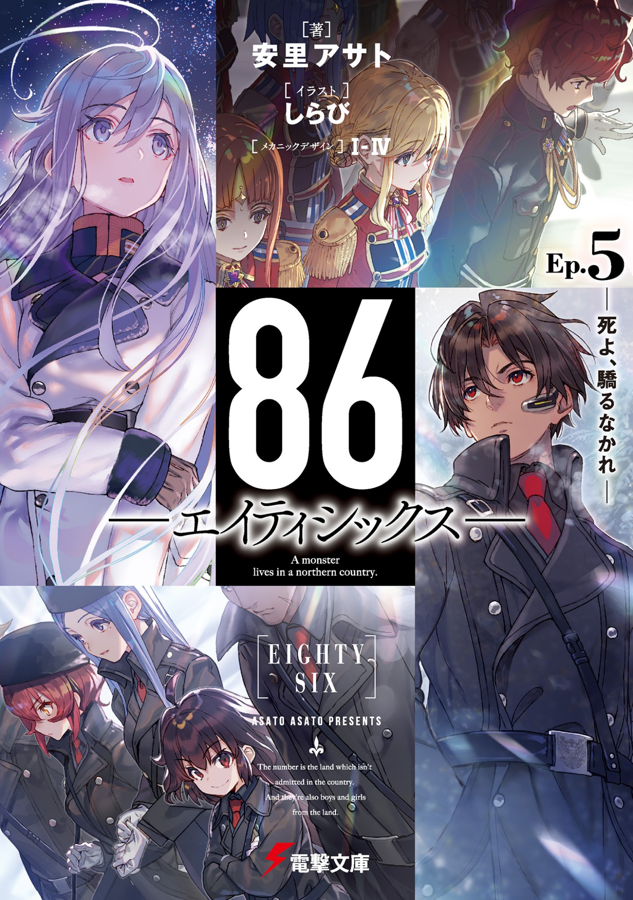
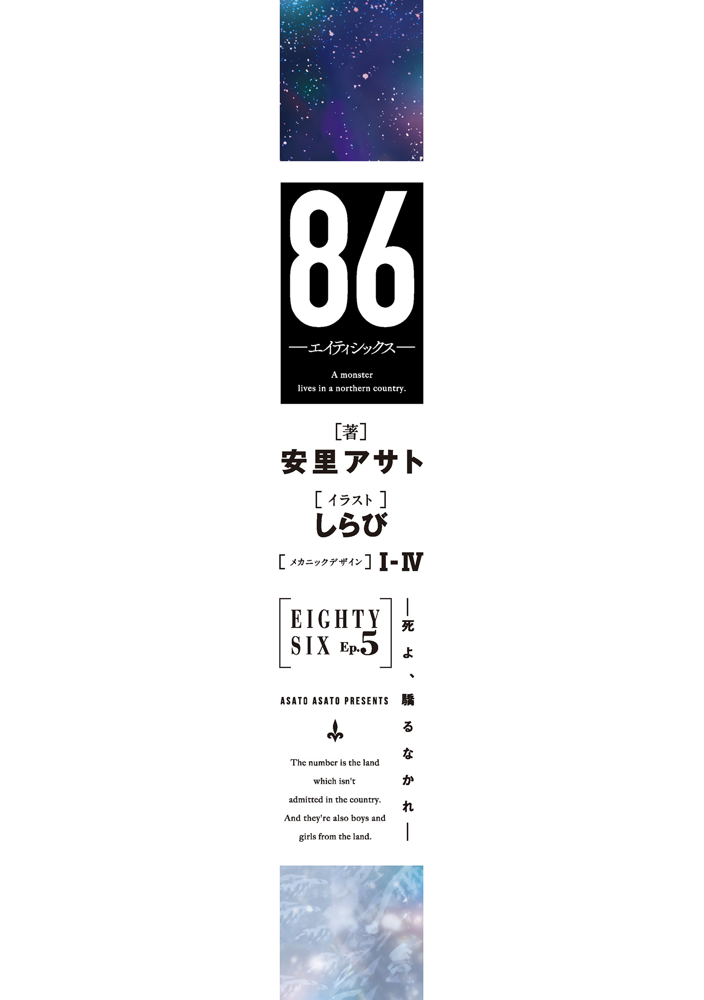
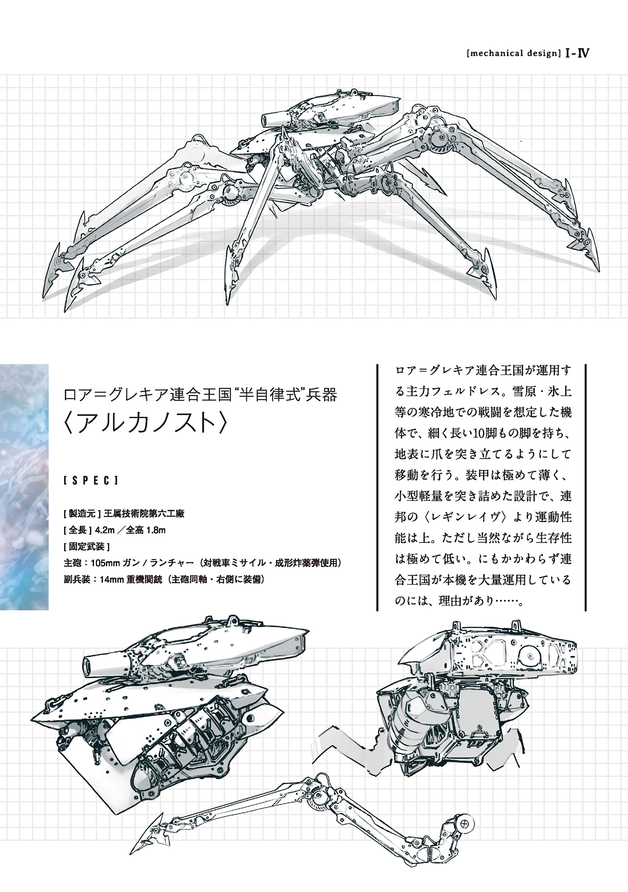
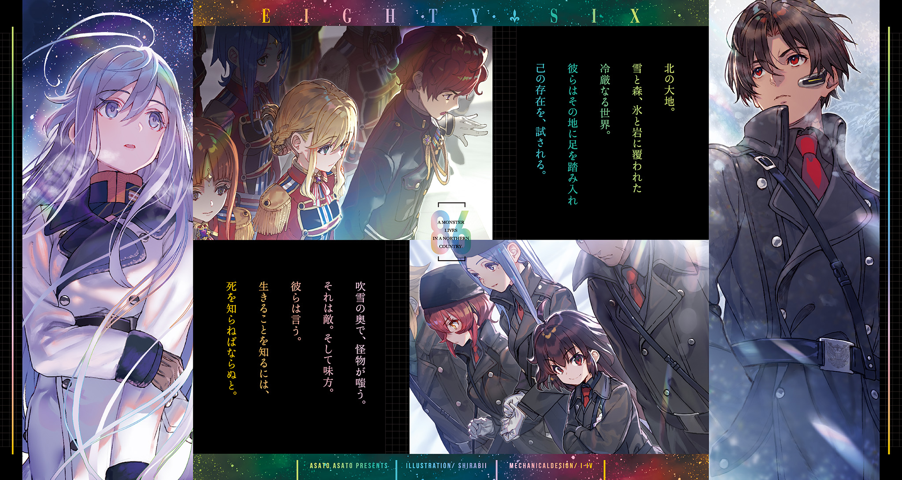
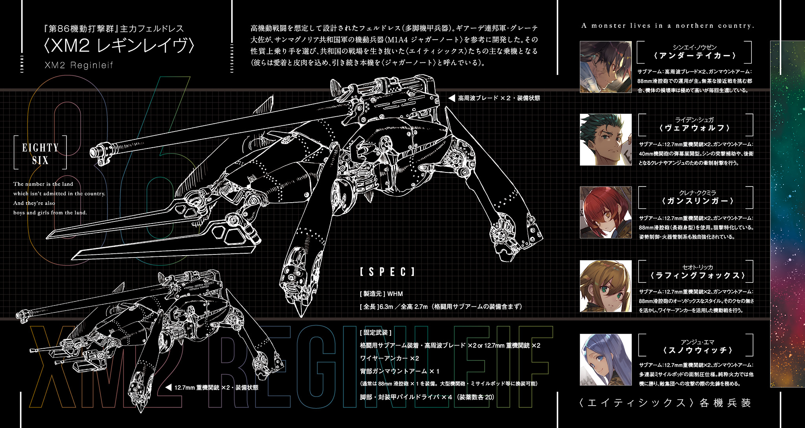
本作品を示すサムネイルなどのイメージ画像は、再ダウンロード時に予告なく変更される場合があります。
本作品は縦書きでレイアウトされています。
また、ご覧になるリーディングシステムにより、表示の差が認められることがあります。
死も我らを分かたぬように
ヴィークトル・イディナローク『人造妖精概説』
序章 屍の王
ロア＝グレキア連合王国、千年の歴史持つ王都アルクス＝スティリエ。その最北に坐す王城の玉座の間は、陽の祝福の乏しい北の大地を示すかのように昏い。
北の王国という語が与える印象とは真逆、ロア＝グレキアは豊かな国だ。なるほど小麦、南国の果実は育たない。けれど肥沃な大地の実り、広大なる大河の恵み。そして豊富な鉱物資源。その一つである金剛石と黄金とを惜しげもなく使ったシャンデリアの燦爛たる光が、豪壮華麗な数々の装飾の、居並ぶ諸侯の引きずる影を際立たせる。
連合王国はまた、軍備の国だ。王侯とは即ち、戦うもの。大陸では今や唯一となった専制君主制度とともに、古めかしいその価値観を未だ奉じる国家である。
その体現として隙一つなく軍服を纏う、玉座の王が口を開く。半ば白く変じた鳶色の髪に紫水晶の双眸。──連合王国は古より紫系種が住まい、その貴種たる紫瑛種が支配している。
北の武王の名に恥じず、声音は重く、遠雷のように轟く。
「我が子、ヴィークトルよ」
「は」
応じるのは、玉座の段の下。本来なら謁見者が跪く場所に、けれど王胤の特権として堂々と立つ、未だ十代の年若い王子だ。
猛禽の焦色の髪と雷火の紫の瞳は紫瑛種の特徴だが、わけてもこの王子の色彩の深さは格別だ。連合王国の厳冬を征く大鷲の黒鳶の髪、護国の楯たる竜骸山脈より産出される最上の紫水晶の帝王紫。秀麗と鋭利とを併せ持つ、うつくしい氷の魔物じみた顔だち。
第五王子ヴィークトル・イディナローク。齢十八にして連合王国南方方面軍の──〈レギオン〉戦争の最前線の総司令官を担う、現王の末子である。
「友邦、ギアーデ連邦にて、第八六独立機動打撃群なる部隊が設立された。聞き及んでおるか」
「はい、父上。〈レギオン〉重点の制圧を任とし、以て奴らの弱体化を図る精鋭部隊。初陣にてサンマグノリア共和国領内の〈レギオン〉生産拠点を破壊し、その戦線を後退せしめたとか」
突然の下問に、応えは淀みなく返る。情報の制限される最前線から帰還して一日足らず、それも他国の一部隊程度の話題に、簡単な計算でも問われたような表情と声音で。
「発電プラント型、自動工場型の鹵獲には至らず、高機動型は取り逃がし、〈牧羊犬〉により少なくない損害を被ったため、初任務に失敗したと見る向きもあるようですが。......作戦目標は完遂している。〈レギオン〉が秘匿していたろう新型二種を、予定より先に引きずり出した功績も大と言えましょう。少なくとも、我が連合王国はそれで対策の時間が得られた」
「うむ」
王は巌のような体軀の上、峻険と眼光鋭い面を頷かせる。重々しく。
「我が連合王国は、かの部隊への協同を決定した。内容は技術供与と兵員派遣だ。......ヴィーカ。そなた合流し、〈レギオン〉どもを退治て参れ」
「あ、はい父上。行って参ります」
......豪壮華麗、荘重なる玉座の間と居並ぶ群臣たちとは裏腹に。
『ちょっとお使い頼まれてくれないか』
『いいよー』
くらいの、やたらと軽いやり取りだった。
脱力しそうになるのを必死に堪える諸侯らの前で、王と王子の会話は続く。
「至近の作戦には第二戦線の全軍を充てるが、後の派遣にあたっても多少の兵は融通してやろう。いかほど欲しい？」
「俺の直轄連隊だけで充分です。先方は旅団規模ですし、今はどの戦線にもそんな余裕はないでしょうから」
......やはり、
『なんならついでに、好きな菓子でも駄賃に買ってきていいぞ』
『えー、いいよ別にそんなの』
くらいの気安さで。
ちなみに王子殿下は連合王国の詰襟の紫黒の軍服......ではなく同じく詰襟だが黒い学生服姿で、足元には薄い学生鞄。
要するに、学校帰りの恰好のままである。
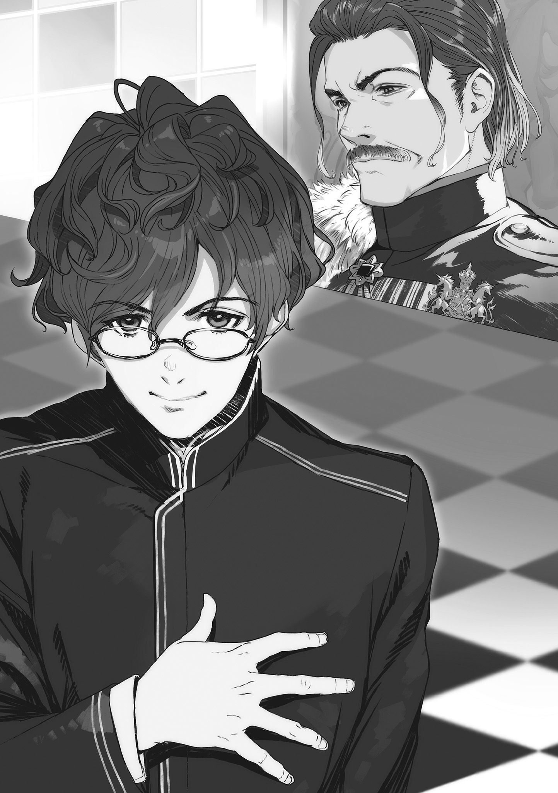
玉座の間の入口では実は先刻から、せめて鞄だけでも受け取ろうとして失敗した侍従長が頭を抱えていたりする。
油断でもなければ弛みでもない。
豪奢な王城も、居並ぶ群臣も、王とこの王子にとっては等しく景色。気遣いは無論、あえて威厳を見せつけてやる必要さえもない。
その傲慢であり、それを保つだけの実力である。
玉座近くに控えていた宰相が進み出て低頭する。淡い藤色の瞳、年経た狐を思わせる白髪に白髯。二等臣民たる淡藤種の身ながら才知を以て成りあがり、先王の御代から王国と王室に仕えてきた老臣は、さすがにこの不遜にも慣れたものだ。
「おそれながら、陛下。ヴィークトル殿下と殿下の〈小鳥〉たちは、連合王国国防の要。その殿下を欠いて、戦線維持が適うものでしょうか」
「控えろ宰相。俺一人抜けた程度で戦線が綻ぶなら、それは将兵どもの、ひいては貴様らの怠慢というものだ。この機に気を引き締めるがいい」
そちらを見もせず、冷然と王子は切り捨てる。老宰相は笑みを深めて更に頭を下げた。
機動打撃群への兵員派遣とその派遣人員は、先の御前会議にて裁可済みの案件だ。王と王子のこのやり取りは会議に参ずる資格を持たぬ王族、諸侯への周知であり、宰相の問いも彼らが抱くであろう懸念を改めて代弁したにすぎない。
それ故に暗黙の裡に許された奏上であったのだが、汲み取れない者というのはどこにでもいる。続けてこちらは王子王女の列の中から、勢い込んで踏み出すものが一人。
「父上！ そもそもがこの〈レギオン〉戦争は、全てヴィークトルの過ちによるもの！ 斯様な物狂いの鎖蛇めに、これ以上の大任など......」
「黙れボーリス。誰が貴様に発言を許したか」
玉座からの一喝に、第三王子は雷霆に打たれたように身を竦める。くすくすと響く、第一王女とその派閥の宮廷雀どもの忍び笑いと、飼い主である第二王子の苦い舌打ち。
すごすごと列に戻っていく血を分けた息子を物のように見やり、一転して王は眼下の末の王子に、からかうような笑みを向ける。
「これまでの戦功全てを足せば、王位継承権の復活に加え、継承序列でボーリスめの上となれるぞ」
「要りませんよそんなもの。面倒くさい。いつもどおり、ザファル兄上の功に加算しておいてください」
御前においてはあまりに不遜な言葉を平然と発し、王子は視線で背後を示した。
「......御用がお済みでしたら、退がっても？ 久しぶりに学校に行ったら、課題が溜まってしまっていて」
王は苦笑して片手を払うように振る。
「よかろう。......夕食までには一段落つけておけ。前線の話を聞きたい」
「御意に、父上」
この時ばかりは典雅極まりない挙措で一礼し、王子は踵を返す。かつかつと硬質に鳴る、一面の水晶の下に五色の蝶の羽をちりばめた、贅美を尽くした玉座の間の床。
玉座の間を出る一瞬、その硬質な靴音に紛れさせて、誰かの声が吐き捨てた。
「......この、人形遊びの屍の王が......！」
聞こえよがしの、だが人波に隠れた腰の引けた悪罵。
その声の主に見えるように冷笑をくれてやって、王子は玉座の間を退出する。
扉を開けると、合成紅茶のかすかに薬品じみた芳香と、兄王子の微笑が出迎える。
「お帰り、ヴィーカ。......もっとも、この城に帰ったのは昨晩だったようだけれど」
「ザファル兄上。ええ、遅かったのでご挨拶には伺えませんでしたが」
手ずから紅茶を淹れて待っていた長兄──ロア＝グレキア連合王国第一王子ザファル・イディナロークに、ヴィーカは子供のような笑みを返して歩み寄る。磨き抜かれた黒檀の調度、大理石に琥珀の象嵌が美しい、王太子の居室。
よく似た兄弟ではあるが、十歳の年齢差がザファルに彫刻じみて均整のとれた長身と、上質の楽器のような低い声音を与えている。長く伸ばして細い絹のリボンとエメラルドの髪留めで一つにまとめた鳶色の髪と、弟と同じ帝王紫の瞳。
勧められた向かいの椅子に座り、機械人形のように躾けられた侍従が茶菓子と薔薇の砂糖煮を並べて去っていくのを見送ってから、ヴィーカは問うた。
「そんなにまずいのですか？ 状況は」
無言のままに見やったザファルに、ヴィーカは肩をすくめる。
「前線にいると、どうしても王国全体にまでは目が届かないもので。先の大攻勢からは正直、後退しないので精一杯です」
「お前がそうも必死にならざるを得ない戦況だという段階で、わかりそうなものだろうに。......参謀院の試算が出たよ」
銀のスプーンで優雅に砂糖煮を口に運び、甘やかな芳香と上品な甘味を楽しんでから、ザファルは続けた。
「このままなら、次の春まで保たない」
ヴィーカは顔色どころか表情さえ変えない。
「それで恥を忍んで〝下民風情に国土を奪われた〟ギアーデに頭を下げたわけですか。技術供与と兵員派遣などという言葉遊びで、安いプライドを取り繕って」
ふん、とヴィーカは鼻を鳴らす。
「......くだらない。御前会議も所詮は、虚栄の群か」
「王侯から虚栄と見栄を剝ぎ取ったら何も残らないよ、ヴィーカ。襤褸を着ていてなおわかる光輝と高貴など、幻想にすぎない」
千年、何十代にも亘り類稀なる美姫の血を迎え入れてきた一族の麗姿で王太子は言う。一目で貴人と見分けられるほどに典雅な挙措で、白磁のカップを持ち上げながら。
並べば一幅の絵画のような、弟王子を見やって続けた。
「以前お前が言ったように、連邦とて程度の差はあれ、切迫しているのは同じだ。作戦協力を要請してきたのは向こうの方だし、技術供与にも食いついてきたよ」
〈レギオン〉戦争勃発以前は大陸最大の国土と人口を有し、今もおそらくは最大の座を維持している連邦に対し、同じ元列強の一つでも連合王国は人口も国土も大きく劣る。
その連合王国が、けれど竜骸山脈の半ばを奪われた程度で戦線を維持している、その理由は連邦としても知りたいところだろう。新兵器か、それを用いた新戦術か。いずれにせよ自国の防衛に利するために。
それと知って、ザファルは薄く嗤う。
「そう。お前の、おぞましくも愛らしい小鳥たちにね」
「あんなものを知ったところで、連邦が運用できるとも思えませんが。......だから、ですか」
どうせ役立てようもない技術だから、くれてやったところで惜しくはないから。だから、あの無駄にプライドが高くて閉鎖的な技術院が了解したのか、と。
つくづく人間とは業の深い生き物だなと、ヴィーカは思う。
明日には滅ぶかもしれない状況で、なおも、無意味な我の張り合いに汲々とする。
「連邦が協同作戦を打診してきた目的は別だ。構わないだろうさ。......もう一つ、父上が玉座の間では口に出さなかった条件は情報提供だ。それについては間違いなく渡すのだから、文句はあるまいよ」
「......〈無慈悲な女王〉」
「探しに来い、と。機動打撃群の士官に伝言したからには、相応の意図があるのだろうよ。降伏の勧告か何らかの交渉か情報提供か、......あくまで希望的観測だが、彼女の祖国さえも襲うこの戦禍を止める手立ての教示という可能性も、まあ、ゼロではない」
「あれが帝国の偏屈女と決まったわけではありませんし、あの女ならそういう安全策の一つ二つは仕込んでいるかもしれないと、その程度の話でしょう。よく連邦も乗ってきましたね」
「ゼレーネ女史の可能性があるなら、それだけでも充分だということだよ。〈レギオン〉の戦略・戦術アルゴリズムについて情報が引き出せるのだからね。......そしてそうと判断できる程度に彼女のことを知っているのは、今はもうお前しかいない」
「といっても大した話もしていませんし、むしろ共和国の研究者の方がよく話していたと......ああ。エイティシックスでしたか。それではもう、生きてはいませんね」
サンマグノリア共和国での一連の迫害については、ヴィーカも聞き及んでいる。〈レギオン〉に包囲され、窮地に陥った共和国の白系種たちが、その窮地を打開するのではなく欺瞞するために行った、愚かしい転嫁の結末を。
「まあ、俺はいつもどおり、父上と王国の決定に従うだけです。......仮に失敗したとしても、猟犬が一匹死ぬだけですから」
ん、とわずかに首を傾けたザファルに、ヴィーカは肩をすくめてみせた。
「第八六機動打撃群。エイティシックスでしょう。......平民どもはともかく、連邦上層部は持て余し始めたようですね。俺と同じように」
「ヴィーカ」
「精鋭部隊と言えば聞こえはいいですが、要するに手に入れた化物を戦線維持と宣伝戦に使い潰すつもりの特攻部隊でしょう。挺進作戦は生還率が低い。それを専門とさせられる部隊の構成員の命の値段など、たかが知れている。先の、電磁加速砲型討伐戦の時のように」
そういえばあの時の少年兵たちもエイティシックスだったかと、目を細めた。
たかが知れているどころか、平時ともなればそれはむしろ。
「狼を狩りつくしたなら、狼狩りの猟犬も処分するものです。凶暴な獣など平時には要らない。いっそ相打ちとなってくれるならその方が、手が汚れなくていいくらいだ」
ザファルは整った眉を気遣わしく顰めた。
「お前は要らぬ獣などではないよ、ヴィーカ」
「ええ。兄上と父上には。ですが」
苦笑し、ヴィーカは紅茶に口をつけた。
甘い、花の香り。王国南部の平野に咲く春の矢車草の。
今年はまだ、見られない青。
「人の世には、どうでしょう。エイティシックスたちと同じ、......人の形の怪物は」
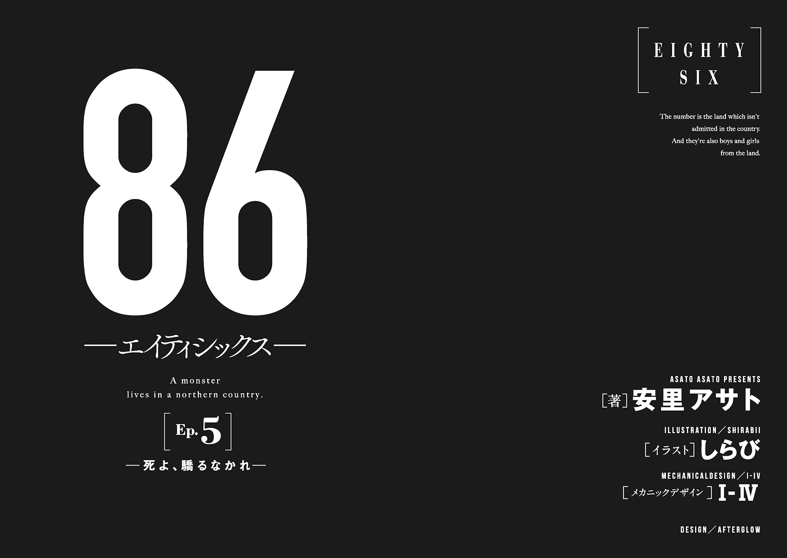
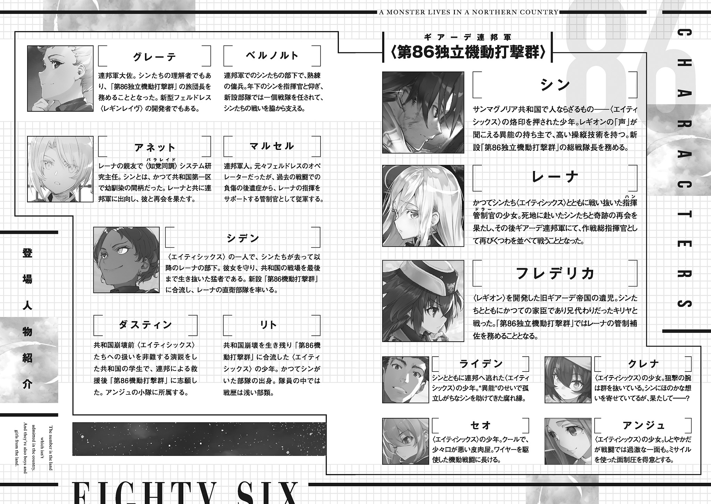
第一章 怪物どもの憂愁
リト・オリヤが共和国八六区、東部第一戦区第一防衛戦隊〝スピアヘッド〟に配属されたのは去年の春。プロセッサーとなってから二年と少し経った頃だった。
第一戦区第一防衛戦隊は、長生きしすぎたエイティシックスを必ず戦死させるための最終処分場だ。通例四年目から五年目のプロセッサーが送りこまれるもので、戦歴二年のリトが配属されたのはいささか早い。......早かった。それまでは。
共和国では〈レギオン〉戦争は、十年目に終結すると思われていた。〈レギオン〉の寿命はその年に切れるはずだった。リトたちエイティシックスはそうではないと知ってはいたが、戦場のことなど何も知らない白ブタどもは、だから、それまでに生き残りの家畜を全て早急に処分せねばと考えたのだ。
大攻勢が始まった日のことは、今でも覚えている。
──逃げろガキども！ 壁の中でもそれ以外でもいい、とにかく逃げて生き残れ！
基地最古参の整備班長の怒号に背を押され、リトとその時生き残っていた十二名のプロセッサーは、それぞれ相棒の〈ジャガーノート〉を駆って南へと向かった。グラン・ミュール陥落の報が最前線を駆け巡った直後。少し年上の少女らしいハンドラーの声が、共和国と彼らエイティシックスの終焉を告げたその後だ。
共和国の下でなんか死にたくない。死ぬならせめてたくさんの仲間たちが先に逝った、八六区の戦場で共に散りたい。そう思ったから共和国ではなく、八六区内に独自の拠点を作ると呼びかけた戦隊の元へ。
あのハンドラーは信用できる奴だ、生きのびる目もあるかもしれないと、整備班長のアルドレヒト中尉は言ったけれど、会ったこともない白ブタなんかを信じるなんてできなかった。
アルドレヒトと整備クルーたちは、一緒に来なかった。
『俺たちは、お前らガキどもが死んでくのを、横で突っ立って見てただけのクソ野郎だ』
そう言った時、アルドレヒトも整備クルーたちも、全員が笑っていた。
不思議と、せいせいとしたような顔だった。
八六区の整備クルーは、戦場に棄てられたエイティシックスの元共和国軍人や、最初期に徴募された大人の生き残りだ。〈ジャガーノート〉の整備には相応の知識と技術がいる。その知識と技術があったために、負傷し戦えなくなっても処分されずに済んだ、エイティシックスの中では比較的命の値段の高かった者たち。
だからこそ、命の安い使い捨ての少年兵たちが使い潰されて死んでいく様を、十年にも亘り傍観し続ける破目になった。
おそらくは己の無力と無様を、心の底から呪いながら。
『それならここで突っ立ったまま、屑鉄どもにぶち殺されんのがお似合いってもんだ。......俺たちはもう、ここ以外どこにも行けねえんだよ』
その苦悩と罪悪感からついに解放される。ようやく見殺しにし続けた罪を償える。......そういう、笑顔だった。
どこに隠していたのか、古びたアサルトライフルや汎用機関銃、ロケットランチャーを肩に担いで。
基地を飛びだしてすぐ、それら歩兵携行火器の射撃音が基地の方角で聞こえた。〈ジャガーノート〉と比べてさえ非力なそれらが、〈レギオン〉に抗せるわけはない。嫌というほど聞いて覚えた戦車型の一二〇ミリ戦車砲の砲声が数度轟き、斥候型の汎用機関銃の銃声が薙ぎ払って、基地は永遠に静かになった。
辿りついた南方戦線近くの防衛拠点は南部第一戦区第一戦隊〝レザーエッジ〟が主力を務め、リトが未だかつて見たこともないほどの大兵力を擁していたけれど、それでも瞬く間に減耗していって。
救援が来たのは、その最中だ。〈レギオン〉支配域を隔てた隣国だという、ギアーデ連邦の多脚機動兵器と装甲歩兵。見知らぬのにどこか見覚えのある、純白のフェルドレス。
今から思えばあの〈レギンレイヴ〉のどれかを──シンが駆っていたのだろう。
「......ノウゼン隊長」
リトが八六区で最初に配属された戦隊で、戦隊長を務めていた少年だった。
三つ年上で、戦歴では四年も違った。その戦隊での半年間の任期の終わりにスピアヘッド戦隊への配属が決定されて、......そのまま戦闘か特別偵察で果てたはずの。
アルドレヒトの死を、リトはまだ、死んだとしかシンには伝えられていない。最後に交わした言葉やその最期を話せてはいない。
悲しんでは、いたと思う。共に戦い、先に死んだ者の名と記憶を抱えていく役目を自らに課した〝死神〟であるシンは、あの偏屈な老整備兵とその部下たちのことも、あるいは連れていってくれるつもりだったかもしれない。
けれど、理解してはくれないだろうから。
プロセッサーの死亡率が最も高いのは、最終処分場である第一区第一戦隊を除けば、配属直後の新入りの時分だ。戦場の理を何も知らず、秘めたる才能があろうがほんの少し運が悪いだけで死ぬ。そうやって大半の者が死んでいく、その半年間。
その時期を、リトはシンやライデンといった〝号持ち〟ばかりの戦隊で過ごした。古参兵揃いのその戦隊は、だから八六区の戦場では死人が少ない方だった。......隣の仲間が吹き飛ばされる様を見慣れることなく戦闘に慣れ、戦い方を教わって生き残ることができた。
彼らがいなくなった後に、新しい仲間を多少は庇ってやれる技量を得ることも。
だからリトは、まだそのことに慣れていない。
その恐怖を、......〝死神〟の異名を持つほどにそのことに触れてきてしまったシンはきっと、理解してはくれないだろうから。
見やった車窓は、闇色に黒い。次の戦場に向かうこの車両の、その闇色の窓とそこに映る自分を見つめたまま、リトは小さく呟いた。隣で寝ている仲間が起きない声量。あまねく亡霊たちの声を聞く死神の元にも、届くことはない声で。
「隊長。俺はまだ──死ぬのも死なれるのも、......本当は怖いです」
喉を潰された巨獣のような、耳を聾する唸りが窓の向こうで間断なく轟いている。
高速鉄道の走行音がトンネルの閉塞された闇に反響する、その唸りだ。どこか不安定な気分を煽るように、忘れかけた記憶の底を搔きむしるように嗷々と鳴り続ける。
高く低く、通奏低音のように止まぬその轟音に聞くともなしに耳を傾けながら、シンは忘却の淵に沈みかけていたその記憶を辿る。
西方諸国間高速鉄道・鷲氷ルート、竜骸基底トンネル。かつてギアーデ帝国とロア＝グレキア連合王国とを結んだ路線のその一部を復旧し、ごく最近開通した軍事鉄道の途中にある、世界最長の鉄道トンネルだ。
〈レギオン〉は人類から奪い去った地に残るあらゆるものを己が作戦行動に利用するが、それは人類も同じだ。電磁加速砲型運用のため保存、保守されていた旧高速鉄道の路線は街道回廊を奪取した今、人類側の軍事鉄道として復旧が進められている。
士官用の客車は、向かい合わせのボックスシートが通路の両側にずらりと並ぶ。席を埋める、連邦軍の鋼色の軍服の、けれどそれ以外の色彩は様々なエイティシックスの少年兵たち。
ああ、と、思い至って、暗い車窓に視線を向けたまま目を細めた。
十一年前の、強制収容所への護送で。貨車の壁越しに聞いていた音と同じだ。
あの時は家畜用の貨物列車に身動きもできないほど詰め込まれて、人いきれと換気の不足で息苦しかったから音以外は何もかも異なるけれど。
思い出してしまえば胸の底がざわつくような感覚になる。わけもわからず突然罵声と悪意を向けられ、どことも知れぬ場所へ追い立てられる、その時の混乱と恐怖は常には意識の外に沈めているだけで、蘇ればいまだ鮮明だ。
あの時人波からまだ小さかったシンを庇ってくれた両親の顔やその時の兄の表情は、こうして辿ってみても思い出せはしないのに。
──思い出せないんじゃない。思い出したくないんでしょう。
不意に、銀鈴の声が蘇って、知らず目を眇めた。
──なくしたものを。奪われたものを。そんなものは元々なかったのだと思い続けるために。
──人は下劣だと思い続けるために。
......別に。
思い出したくないも何も。
覚えてないからと言って、今はもう何の不都合も。
「──シン」
目をやると、空いていた向かいの席にライデンが腰を下ろしたところだ。
「もう少しでローグヴォロド市だ。連邦とは気温が大分違うから、コート着て降りろってよ」
「ああ」
この列車が走行可能なのは、トンネルを抜けてすぐのターミナルまでだ。そこからは軌間の規格が異なるため、列車そのものを替えねばならない。数千を数える兵員は元より、十トン超の重量のある〈ジャガーノート〉の群。積み替えには相応の時間がかかる。
鉄道とは大規模かつ高速の輸送が可能な交通手段だ。それは即ち、一度に大量の兵員と兵器を高速展開可能な手段だということでもある。
いかな古くからの友邦とはいえ、〈レギオン〉に対峙する同盟国とはいえ。他国からの車列を直接王都へ──国家の喉元へと達させるほど、かの北の大国はおめでたくはない。
「しかし、連合王国か......。なんつーか、思ってたより遠くまで、来られたもんだよな」
「......そうだな」
二年前には八六区さえ、出られぬものと思っていたのに。
列車は今は連邦の北西の国境線、竜骸山脈を貫いて通る基底トンネルを進む。その先にある、彼らは未だ知らぬ隣国を目指して。
ロア＝グレキア連合王国。
軍備と産油と産金の国。ギアーデ帝国第一の友邦にして仮想敵国。帝国が滅びた今は大陸唯一となった──最後の専制君主国家。
彼らの──第八六機動打撃群の、次の戦場だ。
「──今回の作戦、目標は第一に連合王国南方戦線の〈レギオン〉指揮官機、識別名〈無慈悲な女王〉の鹵獲よ」
同じ士官とはいえ、佐官であるレーナとグレーテ、アネットにはプロセッサーたちとは別の客車が割りあてられている。
上官の権威を維持し、また機密を保護するためでもある。軍内での情報開示の原則は〝知る必要があるもののみ〟。指揮官とプロセッサーとでは、知っていい情報がまるで異なる。
飴色に磨かれた木目パネルの美しい一等客車の、備えつけの寄木のテーブルについて、まだ湯気を立てる紅茶のカップを前にレーナは頷く。
「この前のシャリテ市中央ターミナルの制圧作戦で、ノウゼン大尉が目撃した〈レギオン〉からのメッセージ──その手掛かりらしき指揮官型、ですね」
そして〈レギオン〉の生みの親である旧ギアーデ帝国の研究者ゼレーネ・ビルケンバウム少佐の、唯一生前に生産された斥候型の一体。
ゼレーネの人事データは政変時の混乱でも失われてはおらず、添付の顔写真の画像も残っていた。情報部が〝メッセージ〟の唯一の目撃者であるシンに確認して、同じ顔だと思うとは回答を得ている。
探しに来なさい。
今は亡き帝国に敵する勢力をただひたすらに殲滅し、交渉はおろか捕虜も取らぬ殺戮機械である〈レギオン〉が、その敵である人類に告げるにはあまりに不可解な言葉。
あるいは帝国貴種の血が強いシンの外見が、トリガーの一つであったのかもしれない。〈レギオン〉は今でこそ制御不能の自律兵器だが、それは暴走ではなく命令者を失ったためだ。〈レギオン〉たちは今でも、亡国の遺命に従っているにすぎない。
もう何年も新規命令を受領していない状況を〈レギオン〉たちが異常と判断し、指揮権を引き継いだろう新たな命令者を探しているのだとしたら。
「彼女を鹵獲すれば〈レギオン〉についての新規情報が、もしかしたら戦争終結の手がかりさえ、手に入るだろうとのことですが」
彼女にその気がなくとも、ゼレーネは〈レギオン〉開発主任だ。緊急停止コードや管理者権限パスを記憶していれば、それで充分だ。
「ええ。──連合王国は全調査への立ち合いと情報開示を条件に連邦への引き渡しに同意したから、捕獲・無力化した後は持ち帰ってちょうだい。中央処理系が生きてさえいれば、状態はどうでも構わないわ」
アネットが小首を傾げる。
「よく、連合王国がそんな条件に同意しましたね。あの国は専制君主制で、だから、あっちから見れば平民ばっかりの共和国や連邦のことは、一段下に見てるのかと思ってましたけど」
「そんな余裕もなくなった、ということでしょうね。この派遣は彼らとの技術交換ももちろん目的だけど、事実上は連邦から連合王国への救援だもの」
「ですが、本当なのでしょうか。〈レギオン〉戦争以前は北の梟王とも恐れられた連合王国が、陥落寸前になっているなんて......」
ロア＝グレキア連合王国は、現状、生存が確認されている国や地域の中ではギアーデ連邦に次ぐ強国だ。人口と国土面積の差から連邦には大きく水をあけられているものの、先の大攻勢を凌ぎきり、電磁加速砲型討伐に戦力を抽出するだけの国力はあった。
その大国が、なぜ今になって。
突然。
「別におかしいことじゃないでしょう。──〈牧羊犬〉が主力化してからこちら、どこの戦線もどの国も、一層厳しくなっている」
代用コーヒーのカップに口をつけつつグレーテは言い、そうだったとレーナは顔をしかめる。
〈牧羊犬〉。大攻勢で鹵獲された共和国市民を材料とした、量産型知性化〈レギオン〉。
やはり先の地下ターミナル制圧作戦の際、〈レギオン〉は拠点放棄前に脳構造のデータを彼らの軍勢の中枢に転送したらしい。あの作戦以降、連邦および周辺国の各戦線で〈レギオン〉の作戦行動の複雑化が報告されている。
〈黒羊〉と──損傷した戦死者の脳構造を取り込んだ、より性能に劣る〈レギオン〉と、〈牧羊犬〉との置換が進んでいるのだろう。
「予定どおり、技術交換は私とペンローズ少佐が。前線での任務はミリーゼ大佐に担当してもらうわ。本作戦完了後、連合王国側の部隊の一部が今度は機動打撃群に組み込まれる予定だから、今のうちから彼らの戦力は把握しておいてちょうだい」
言って、グレーテはにこりと微笑んだ。
「今度こそ、四千名全員を運用できるようになるから。第八六独立機動打撃群の本領発揮ね」
アネットが小首を傾げた。
「志願しなかった人も、けっこういるんですね。エイティシックスはどうにか一万人ちょっとは、生き残って連邦に保護されたって聞いてますけど」
連邦軍ではエイティシックスのプロセッサーたちは、高等教育を受けながら従軍する特士士官の扱いだ。
幼時からの強制収容で、彼らは初等教育もろくに受けていない。そのために彼らの教育期間は一般の特士士官よりも長く取られ、形態も通信制から本拠基地近くの専用の学校での座学に変更されている。定期休養を兼ねて要員の四分の一が一定期間ずつ交代で学校に通うため、訓練に回す部隊も加味すれば一度に動かせるプロセッサーは最大でも四千名に留まる。
余談だが通信制でなくなったのは、最初に保護されたシンたち五人が大攻勢の後処理やら機動打撃群設立やらの忙しさにかまけ、課題をほったらかしにしたせいもあるらしい。
が、言われてみれば一万余名の生き残りに対し、半分にあたる実働人員が四千ではたしかに計算が合わない。
「もともと整備クルーだった人たちが、〈レギンレイヴ〉の整備員になっているのと。......戦えない子と戦えなくなった子、戦いたくなくなった子が抜けたのよ」
幼すぎてまだ強制収容所にいた者と心身に障害を負った者、従軍を望まなかった者を除いた数だ、と。
「その子たちは......その、......どういう扱いに」
連邦とてこの十年あまりの〈レギオン〉戦争での膨大な戦災孤児と戦傷者の保護は、問題になっているようだけれど。
「専門の施設か、保護者のところに引き取られているわ。......エイティシックスはノウゼン大尉たち同様、元大貴族や政府高官が書類上の保護者となっている。ほとんどは名前を貸しているだけだけれど、だからこそおざなりにはしない。文字どおり、自分の名前に関わるから」
帝制から民主制に移行して十年と少しのギアーデでは、高貴なるものの義務の気風が色濃く残っている。慈善を行うのもその一つだ。
身分制度が公式に廃止された今、元貴族たちにとってはそれだけが〝下民〟と自らとを分ける拠りどころだというのもあるかもしれないが。
ほっとレーナは息を吐く。
「そうですか。なら......よかった」
「連合王国との協同といい、王侯貴族の誇りと面子も、役に立つ時はあるということね」
協同作戦後、連合王国が機動打撃群に兵力を提供するのもその〝高貴なるものの義務〟であるという。その指揮官が客員士官として、レーナの指揮下に入る予定なのも。
現在将官扱いなのが、大佐のレーナの下につくためにわざわざ中佐に〝降格〟してまで。
「連合王国側の指揮官って、王族でしたっけ？」
「ええ。第五王子ヴィークトル・イディナローク。十八という若年で南方方面軍総司令官を務める連合王国軍の実力者。王立技術院の副長官の一人にして、異能の血統でもあるイディナローク王室の、今代の異能者でもある」
グレーテはさらりと口にしたが、共和国育ちのレーナには未だ異能とは慣れない響きだ。
古い家柄には稀に異能を受け継ぐ血統があり、つい十一年前まで王侯が支配する帝国であったギアーデ連邦では、今もその幾つかが保たれているのだという。異能者の一部が従軍し、現代機器と同等かそれ以上の信頼性を持つ特技兵として重用されているとも。
一方で共和国では、異能とは三百年前の革命で身分制度と共に消滅したものだ。
近親婚の弊害を出さずに混血を避けるには、一族の人数とそれを保持する財力と権力が要る。革命で領地と徴税権を失った旧貴族階級に、維持できるものではなかった。
機動打撃群にはシンとフレデリカという二人の異能者が所属しているけれど、......やはり、どうにも彼女の常識からすれば、何ともそぐわない感が拭えない。
それに先の作戦の後の、異能の影響で酷く体調を崩して臥せっていたシンの様子。
いつものこと、というわけではなく、〈牧羊犬〉の登場による特殊な例だったけれど。異能というものがあんな風に負荷がかかるなら、......当然のように運用していいものとは、正直なところ思えない。
連合王国の異能者についても、......グレーテは今、〝今代〟と言った。
それが同じ代に、二人。存在しないという意味なら。......そのくらい寿命が短いというような、弊害があるのだとしたら。
「......その、王室の異能というのは、どのような」
「〈レギオン〉の元となった人工知能モデル、〈マリアーナ・モデル〉を独力で開発したのが、当時五歳のヴィークトル殿下だと言えばわかりやすいかしら。そういう異才を輩出する血統だそうよ。今も連合王国のフェルドレスの、制御系の開発と改良に多大な功績があり、......一方で屍の王、鎖蛇の異名でも呼ばれる。王位継承権を剝奪されているらしいとの噂もあるわ」
ぎょっとアネットが繰り返した。
「は......剝奪!? 返上じゃなくって剝奪ですか......？」
「それに、鎖蛇なんて......！」
大陸西部の文化圏では、蛇とは堕落と悪魔の象徴だ。まして血肉を腐らせる強力な毒を持つ鎖蛇。仮にも王子殿下が、冠せられる異名ではない。
「その割には与えられている権限が多いし、国王陛下や同腹の王太子殿下には可愛がられているみたいだけれど。......連合王国は王位継承をめぐって王太子と側室腹の第二王子、第一王女が争っていて、ヴィークトル殿下はザファル王太子の派閥。切れ者と名高い王太子の、懐刀と称されているそうよ」
「............それだけの情報が、どこから......」
グレーテは淡々と肩をすくめた。
「大佐が連邦に来る前の冬にこの路線は開通して、それ以来軍を主体にごく一部とはいえ、連合王国との人の行き来は再開したのだけれど」
「......ええ」
「その時から情報部員は侵入してるし、元々入ってた人たちとの連絡も復旧してるわ。......多分、お互いにね」
旧ギアーデ帝国とロア＝グレキア連合王国は同じ専制君主制国家として古くからの友邦同士であり、同時に、互いを仮想敵国とみなす間柄でもあった。
それは帝国が滅び、〈レギオン〉戦争が続く今でさえも、......変わらないらしい。
「ところで、ミリーゼ大佐」
それが天気の話でもするような声音だったから、レーナもまったく警戒しなかった。
察したアネットは、実はこっそり座る位置を離していたのだが。
「貴女とノウゼン大尉。喧嘩でもしたの？」
レーナは紅茶にむせた。
「はっ......!?」
「最近全然話してるところを見ないわよ。共和国から帰ったあたりから、ずっと」
「ええと、その......」
つい助けを求めてアネットを見た。
しれっとそっぽを向かれた。
「あたし、しーらない」
「プライベートのことだし、詮索するつもりはないけど、ちょっと長引きすぎよ。作戦指揮官と機甲部隊総隊長のコミュニケーション不足は、今後の作戦に差し障るわ」
「ええ......」
あれから。
──あなたたちは、囚われたままです。共和国に。わたしたち、白ブタに。
──わたしはそれが、とても哀しい。
そう言ってしまってから、シンとはろくに会話をしていない。
避けられている、というほどではない。業務上必要なやりとりはしている。それ以外の会話が、できていないだけだ。
事務連絡や報告を終え、話すべきことがなくなった時。廊下で思いがけず行き会った時。それまでは当たり前のようにできていた他愛もない話が、今は全く出てこない。不自然な沈黙がおり、それが気まずくてそのまま話を切り上げてしまう。
そんなことがずっと、続いている。
あの時言ったことを、間違いだとは思わない。
けれど何もあんな、一方的に決めつけるような物言いをすることはなかっただろうと、今では思う。
あの時。言われたシンは一瞬激昂の気配を見せ、けれど即座にそれを自制すると、それでも少し、腹立たしげな声音で吐き捨てた。
──よく、わかりませんが。
そこに滲む、隔意と。
──それは何か、まずいことなのですか。レーナ。
困惑。
心底からの。
レーナが何を危惧しているのか──それどころかレーナが何を哀しんでいるのか。それさえも全く理解できていない、そういう目だった。
言葉も心も、一つだって通じてなどいないかのような。
人の形をしているだけの、無垢な、異質な魔物のような。
突然言われて、シンも混乱していたのだろうと思う。そうであってほしい。
そうまで自分と彼らは異質なのだと。同じ言葉を話し、同じものを見て、同じ場所に立っていてさえ、わかりあうことができないのだと──思いたくない。
......違う。
それだけじゃない。
あの時。紅い瞳は憤りを帯び、隔意に凍てつき、それらをやがて異質な困惑が塗りつぶして──その向こうにたしかに小さな子供のような、傷ついた光が揺れていた。
思いもよらぬ相手から叩かれたような。
まさかレーナにそんなことを言われるとは思ってもみなかったというような。
力及ばず死ぬまで戦い抜くのが、行きつく果てまで進み続けるのがエイティシックスの誇りで自由だと、かつてレーナは聞いた。かつて彼らはそう言った。
それを証するように、彼らは連邦に辿りついてなお、最前線で戦い抜いてきた。
そのシンに。
──あなたたちは、囚われたままです。八六区に。
今も八六区にいると、一歩たりとも進んでなどいなかったのだと言い放った、それは、どれほどの侮辱だったか。
それしか持たない彼らの誇りを、憂えたつもりで踏みにじったと。
傷つけたのだと......自覚したくなかった。
そして自覚してしまった瞬間、レーナは猛烈な自己嫌悪に襲われた。
要するに避けていたのも逃げていたのも、自分の方だったということじゃないか。
侮辱したことから。......傷つけたという事実から。
「......大佐？」
だいたい、二年前だってそうだったじゃないか。
彼らの側に立ったつもりで、理解者にでもなったつもりで。そのくせ本当は何も、彼らの名前さえも知ろうとはしなくて。
善意のつもりで一方的に、自分の感情と感傷を押しつけて。
その挙句に、傷つけて。
「ミリーゼ大佐」
何も変わってない。あれから何も学んでいない。
みっともない。
恥ずかしい。
「大佐ってば」
......というか。
これで、もし。嫌われていたらどうしよう............!?
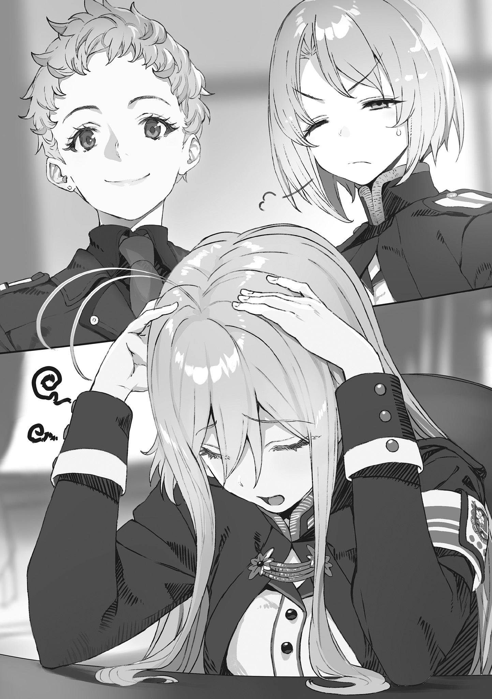
「ねえちょっと。レーナってば落ち着きなさいよ」
はっと顔をあげると、グレーテとアネットが揃って彼女を見つめていた。
それでレーナは自分がいつのまにやら頭を抱えて、テーブルに突っ伏してしまっていたことに気づく。
グレーテが苦笑する。
「......思った以上に深刻そうね？」
「すっ、すみません......」
「まあ、貴女たちは本当は、まだ会ったばかりなんだから。すれ違うのも喧嘩するのも、あたりまえのことよ」
言って、グレーテはいつものとおり、丁寧に紅を引いた唇で微笑んだ。
「ノウゼン大尉は、配属先の基地には直行しないで私たちと一緒に王都に行くから。作戦までに話をする時間は充分あるわ。その間に、仲直りしておきなさいな」
「......そういやお前」
相変わらず闇色のままの車窓に見るともなく目を向けたまま、雑談でもするようにライデンが言うから、シンもつい警戒を怠った。
「レーナと喧嘩でもしたのかよ」
反射的に見返してしまった時点で彼の負けだ。
窓枠に肘を置いて頰杖をついたライデンが、視線だけを向けてしてやったりとばかりに片眉を上げる。
「......なんで」
「なんでってお前。......まさか隠せてるとか思ってんのか？ お前ほんと、自分のこと全っ然見えてねえのな」
愕然と言われるのが微妙にむかつく。
思わずその鉄色の目を睨めつけてから、嘆息してシンは暗い車窓に目をやった。
「......喧嘩、というほどのものじゃないと思うけど」
喧嘩というよりほとんど殺し合いの乱闘の経験も少なくないシンにとって──八六区では、戦争を始めた帝国の血統は、時に酷く嫌われた──意見の相違など諍いのうちにも入らない。
入らないはずだった、のだが。
「おれたちエイティシックスは、八六区に囚われたままだそうだ」
一瞬ライデンは沈黙した。
「......へえ」
不愉快げにぴりっと目を眇め、けれどそれを吞み込んだのは、口にした相手がレーナだったからだろう。
悪意からの言葉ではない。それはわかっているから。
けれどそれは知りつつも癇に障ってしまうのもまた、よくわかる心の動きで、何故ならそれはシンも覚えた感情だったからだ。
──わたしはそれが、とても哀しい。
そう言われた瞬間には、反射的に反発を覚えた。
けれどついで湧きあがったのは強い困惑と、一抹の痛みだけだった。
レーナが何を危惧しているのか、理解できなかったことも無論ある。だがそれ以上に、自分の覚えた反発が一体何に由来するものか、それがわからないことがシンを心底困惑させた。
人を下劣と思うために。
世界を冷酷だと見限るために──......？
それは。
だって、そのとおりだろう。
人も世界もそういうものだ。世界は人のためには無く、故に無関心で、どうしようもなく冷酷だ。まして世界とは違い、悪意を以て他の者に対する、人間などは尚更に。
強制収容所で、八六区の戦場で、シンはそれを学んだ。そういうものにすぎないのだと繰り返し思い知らされた。
そのことを指摘されて、......何がそうも不愉快だというのだろう。単に事実を言われただけだというのに。
哀しまれた──哀れまれたことか？ たしかに、いつかグレーテに言ったとおり、哀れまれる筋合いはない。けれどそれも、今やどうでもいいというのが正直なところだ。一方的に見下してくるだけの相手にどう思われようが知ったことではないし、つきあってやる義理もない。
それなら......何故？
そもそもレーナが何を哀しんでいるのかも、シンにはよくわからないのだ。
哀しませたいわけではもちろんないが、わからないのでは対応のしようがない。微妙に避けられているような気がしなくもないし、実際会話はろくにできていない。
結果、互いに腫れ物に触るような、なんとも言えない、気まずい状態が続いている。
「──シン。おい」
気がつくと、ライデンが目の前でひらひらと手を振っていた。
ずいぶん長い間考え込んでしまっていたらしい。見返すとライデンは苦笑した。
「なんつーか。お前ほんと、変わったよな」
「？」
「なんでもねえよ」
面倒くさそうに言われた。
「ま、どーせお前のことだから、また派手に〈アンダーテイカー〉ぶっ壊すんだろ。そん時にでも話しとけよ。......お前の機体ときたら、まるっきりハンガークイーンなんだからよ」
しょっちゅう故障していて、格納庫で整備されてばかりの機体を指すスラングである。
小さな出撃はともかく、大きな作戦では今のところ必ず〈アンダーテイカー〉を大破させているので、たしかにその誹りも免れない。
「......アルドレヒトのジジイにも、よくそうやって怒鳴られてたっけな」
「ああ......」
──謝れっつってんじゃねえよ改善しろっつってんだよ。
──いつか死ぬぞあんな無茶な戦い方しやがって！
大攻勢で死んだと、リトから聞いた。配下の整備クルーたちも、同じ日に。全員。
何も感じないわけではなかったが、薄々そうだろうとも思っていた。
戦場を故郷に、戦友を同胞に、戦い抜くことを誇りとしたのがエイティシックスだ。
エイティシックスはいずれ、死ぬものだ。
それは白系種の身ながらその傍らで生きることを選んだ、あの老整備班長も、同様に。
それでも。
「......生き残っていてくれても、よかったのにな」
目を向けたライデンを、見返すことなく続けた。
「救援が来るまで生き残っていれば、家族の写真だけでも見られたかもしれない。遺体を探し出すのは難しいだろうけど、最期の戦場に行くくらいは」
覚えてもいない自分とは違って、......妻と娘との再会を願い続けていたアルドレヒトにはそれだけでも、多少の救いにはなっただろうに。
エイティシックスはいずれ死ぬものだ。
けれどだからといって、......死んでほしかったわけでもない。
目の前で死んでいった、誰も彼も。
「......たしかに〈レギオン〉戦争が終われば、そういう、墓参りもできたろうからな」
ふー、と息を吐いて、ライデンはつと、身を乗り出す。
「実際どうなんだ、シン。お前の見た〝ゼレーネ〟とやらは、戦争を止めたがってるみたいだったのか？」
「......どうだろうな」
あの、女性を模した流体マイクロマシンは音声出力機能を備えてはいなかった。当然、声に含まれた感情や思考のニュアンスが伝わることも。
投げられたのはただ、言葉だけ。
探しに来なさい。
何が目的かは、わからない。シンに──今、生きている人間に向けられた言葉なのかさえも。
「交渉や情報提供ならともかく、正直、あれだけで戦争終結の手がかりと見るのは飛躍がすぎると思う。連合王国側から開示されていない情報があるにしても、......今さらそう都合よく簡単に、この戦争が終わるとは思えない」
そうでなかった頃などもうほとんど覚えていない、大陸のどこにも逃れる場所などない、この〈レギオン〉戦争が。
ただ。
「......でも、もし戦争が終わるなら、......それならそれで、いいとは思う」
──海を見せたい。
知らないものを、まだ見たことのないものを。〈レギオン〉に鎖されたこの世界のままでは見られないものを、彼女に見せられたらいい。自分の戦う理由はそれでいいと、口にした言葉をシンは今も忘れてはいない。
期待はしていない。......そんなものはどうせ叶わない。
それでももし、いつか、この戦争が終わるなら。
ライデンはしばし、黙考した。
「そうだな。戦争がもし、終わったら......」
言葉は半ばで途切れ、それ以上は続かなかった。
理由は少し、わかる気がした。
戦い抜いたその果てで、戦争が終わるならいい。そう思うことはできるけれど、その光景はまだ、戦場しか知らぬ彼らには想像もできないから。
ごう、と唸りを上げて、車輌は突然光の中に飛び出す。
二十年もの年月をかけて掘り進められたトンネルを、高速鉄道の車輌は二十分足らずで駆け抜ける。暗順応した網膜は刹那、陽光に眩み、やがて慣れて外の景色が白い闇から滲み出る。無言のままに、二人は車窓のその光景を見つめる。
防弾仕様の厚い硝子は透過率がわずかに低くて、景色は少し、青くくすむ。
国は変わっても、この荒涼は変わらないらしい。戦線後背に非戦闘員は置けない。暮らしていた者がいるなら、その家も故郷も棄てて移動を余儀なくされる。
銀灰の厚い雪とちらつく小雪の下。白く染まった雪の平原にうち捨てられて久しい廃墟が点在する、八六区ともよく似た戦野の寂寞が、──そのまましんと凍りついてしまったかのように、どこまでも無人に広がっていた。
ロア＝グレキア連合王国、ローグヴォロド市ターミナル。
「──じゃ、僕たちは直接、配属先にいくから。なんだっけ、レーヴィチ要塞基地だっけ？」
「ああ。......悪いな、面倒を任せて」
「まあほら、一応先任だし、具体的な移送のあれこれは参謀の少佐たちがやってくれるし。シンたちこそ、大佐とかレーナとかの護衛がんばってよね」
ひらひらと手を振って乗り換えの列車に向かう、セオの背後では〈ジャガーノート〉のコンテナの積み下ろしと積み替えが始まっている。今日のうちに部隊の半分、次の移送で残りの半分。数千に及ぶ機動打撃群の全フェルドレスと車輌が、連合王国の最前線、レーヴィチ要塞基地へと向かう。警戒管制型の監視を欺くため、休養に入る部隊の交代に紛れる形で。
見送って、シンは背後のローグヴォロド市街を振り返った。
列車内で言われたとおり、竜骸山脈の麓のこの地方都市は小雪のちらつく寒さだ。現在の連合王国で民間人が暮らす最南端であるというローグヴォルト市の市街は灯火管制で暗く、エネルギー供給にそう余裕はないことを無言で語る。市街地の外れ、星明かりにぼうと浮かぶ巨大なドームと四角い建物の影は、寒冷なこの北の王国特有の地域暖房用原子プラントだろう。
さく、と背後で、ホームに薄く積もる雪を踏む音がした。
「......ノウゼン」
目をやると、車輌隊の徽章の少年だ。レーナの乗る〈ヴァナディース〉の管制官の一人。特士校の同期の、エルウィン・マルセル。
「退役したんじゃなかったんだな」
「どうせもう〈ヴァナルガンド〉には乗れねえよ。大攻勢で、足、やられちまって」
足音を聞いた限りでは歩行に支障はなさそうな、軍服の右足を見下ろしてマルセルは吐き捨てる。複雑骨折したのだと、そのままの口調で続けた。......折れた骨が肉と皮を突き破った時に、神経も一緒に裂かれたのだろう。日常生活に支障がなくとも、コンマ一秒を争うフェルドレスの操縦には、わずかな反応の遅れも致命的な後遺症だ。
「つーか、退役ってなんだよ。お前らエイティシックスと違って、普通の特士士官は軍辞めたら食ってけねえんだぞ」
「編成後の第一七七師団機甲部隊の名簿から消えてたから。国営放送の戦死者の発表で名前を聞いた覚えもないし、なら、退役したのかと。......まさか機動打撃群の車輌隊の名簿に、見かけるとは思わなかったけど」
「......意外と気にしてるんだな。周りのその他なんか、どうでもいいのかと思ってた」
その感情や関心の薄さが、特士校で会った時から苦手だったと、マルセルは思う。
地獄だという戦場を前にしながら、超然として。......内心の怯えを見透かされて、馬鹿にされているような気がして。
「......ニーナのこと」
唐突な名前に、シンは目を細めた。大攻勢の前に死んだ、二人の同期であるユージン。その幼い妹。
どうして兄を殺したのかと、送られたその糾弾は、破り捨ててもう何処にもないけれど。
「ユージンがどう死んだかなんか教えるべきじゃなかったし、......あんな、死ぬかもしれない作戦の前に、渡させるようなものじゃなかった。ユージンが死んで、残念だって。それだけだったはずなのに、変なこと言っちまった。あいつが死んだのは誰かのせいだって思いたくて、お前のせいにしちまった。......悪かった」
深く、頭を下げた。シンは小さく首を横に振った。
それから聞いた。
「どうしてるんだ？」
顔も知らない両親に続き、最後に残った兄さえ失った、ユージンの妹は。
「ああ......まあ、元気にしてる。......共和国の件で、今本国じゃ白系種は肩身が狭いんだけど、あいつはほら、兄貴が軍人だったから。嫌がらせとかそういうのは受けてないし、ユージンのことも、囚われてはいないって」
シンはそっと目を閉じた。囚われてはいない。帰らぬ兄を、そうと知りながら待ち続けてはいないのなら。
「なら......よかった」
マルセルは少し意外そうな顔をして、それから淡く笑った。
「......そうか」
マルセルが立ち去ると、少し前から見守っていたフレデリカが歩み寄ってきた。
「......よいのかの。あの者が、その......」
「気にしてない。......今はもう」
微妙に半眼で見上げてきたから、肩をすくめてつけたした。
それからその小さな頭を見下ろした。
王都アルクス＝スティリエに向かうのは旅団長であるグレーテと作戦指揮官であるレーナ、アネットら数人の技術士官と、先任の戦隊長と副長であるシンとライデン、シデンとシャナに加えて。
「今更だけど。お前、王都までついてきて大丈夫なのか？」
そもそも他国の軍人との協同で行われる今回の作戦に、参加することさえも。
いくら〈レギオン〉戦争直前に、生まれたばかりで戴冠させられて今の顔など知られているはずもない元女帝とはいえ。異能が受け継いだ血に拠るものである以上、国外で余人の目に晒されていいとも思えないが。
ふん、とフレデリカは鼻を鳴らす。コンテナを運ぶ機械類の作動音で、この距離でもなければ声など聞こえない。盗聴の心配のない場所だから話を切り出したと察したらしい。
「わらわがここにおるのが、そのままその答えじゃ」
気取られる心配はない、と。
「ギアーデ帝室は二百年も前から、大貴族どもの傀儡であった。そもそもが帝国黎明より、流入した異民族との混血を余儀なくされた王家なのじゃ。皇帝の顔など民草はおろか下級の貴族でさえも知らず、帝族の異能も混血を繰り返され、薄められて見る影もない。イディナロークの〝紫晶〟でさえ、わらわが女帝アウグスタであるとは......思ってもみぬであろうの」
イディナロークの異能者を代々そう呼ぶのだ、とつけくわえた。まったく新しい人工知能モデルを独力で開発してのけてしまうような、異常な天才を代々、輩出する血統だと。
「そも、西方方面軍の将軍どもの幾人かは、わらわの生存を知っておる。......でなくばキリヤを討ち、ミリーゼめとそなたが言葉を交わした時の音声記録が、そのまま将軍らの前で流されるわけはあるまい」
つい顔をしかめてしまったのは、その将官らのデブリーフィングに同席させられた、拷問のような時間を思い出してしまったせいだ。
二度と触れたくも思い返したくもない記憶だったせいでこれまで考えてもみなかったが、言われてみれば、あの時あの音声記録がそのまま再生されたのはおかしいのだ。いくらミッションレコーダがプロセッサーのインカムの音声と、外部からの交信音声しか記録しないとはいえ、彼と共にコクピット内にいたフレデリカの声を全く拾わないわけではない。
そう、あの時。エルンストはフレデリカの名前を呼んだ。
「知っているから、いまさら裏切る心配はない、と？」
「と、いうよりも......」
フレデリカは小首を傾げる。憂うように。危惧するように。
「そなたも薄々、察しておるであろ。......あれは、火の竜じゃ。理想だけを全てとし、その完遂のためなら己が身も世界も燃やして構わぬ──それを思い留まるに足る執着さえもこの世に持たぬ。そういう竜じゃ」
「............」
書類上の養父が時折見せる、普段の人の良さとは相反する表情。
思いやるようでいてそのくせ虚ろな言葉。上辺ばかりの薄っぺらな篤実。
いつか聞いた言葉の、突き放した酷薄。
──そんな理由で子供を殺さないと生き延びられないなら。人類なんて滅んでしまえばいいんだよ。
「もし、わらわを旗頭に連邦の転覆をはかるなら。〈レギオン〉戦争の終わりも見えぬこの情勢で、欲に駆られて連邦全体を、人の世そのものを危険にさらすほどに人が愚かなら。......そのまま滅びてしまうがいいと、あれはそう、思うておるのであろうの」
†
民主制への移行は、富の移行と分散でもある。
それまで人口のごく一部である王侯に集中していた財貨が、多くの民衆に分散する。それは大多数の者の生活の向上につながるものの、ありあまる財力を惜しみなくつぎ込んで生み出される絢爛豪奢な奢侈品の類は、民主制の発達とともに姿を消す。
古くからの強国であり、現代では唯一となった専制君主制国家であるロア＝グレキア連合王国は、そうした王侯の贅美を今なお保持し、生産し続ける最後の国だ。
その象徴たる王城の、眩暈のするような豪奢に、レーナは少なからず圧倒される。
通された一室は客人を迎えるためのそれとはいえ、公用のものではない。けれど陽光を散らす、垂れ下がる黄花藤と蔓薔薇、時計草を模した水晶のシャンデリア、磨き上げた黒瑪瑙を敷き詰めて鏡のような床。調度は全て黒檀に孔雀石の象嵌の統一で、北のこの大地では貴重だろう大輪の薔薇が水晶や砂金石の花瓶で姸を競う。隅の暗がりでひとりでにぼうと翠に光る硝子の孔雀、狩りの獲物のように壁に飾られたオパールの頭骨は、もしや本物の恐竜の化石が変じたものだろうか。
白亜の壁に銀の蔓草模様を描く漆喰細工の気の遠くなるような繊細と緻密が、そこにかけられた膨大な時間と手間を無言のままに物語っていた。
それを造らせ、集め、今なお維持する途方もない──権力。
その、威圧。
ミリーゼ家とて相応の資産と伝統を持つ共和国の名家ではあったが、所詮は三百年前に革命で地位と徴税権を失った元貴族だ。ここにある豪奢は、文字通りに桁が違う。
顔に出すような無様はさらさないけれど、やはり少し、落ち着かない。
一方でそっと目を向けた先、シンは普段と何も変わらない、無関心な沈着さだ。
壁に軽く背を預け、そういうくせでもあるのか腕を組んで、物思いに耽るようにその血赤の目を伏せている。
見回せば護衛として控えたライデンとシデンも、ライデンは暇を持て余した狼のようにあくびを嚙み殺し、シデンはきっちり締めたタイを窮屈そうにいじっていて、特に圧倒されている気配はない。ついてきたフレデリカに至っては、まるで我が家ででもあるかのように猫脚のソファでくつろいでいる。
エイティシックスの価値観は、彼らが育った戦場と、その日常であった戦闘に重きを置く。世間一般で重んじられている権威や地位に対し、敬畏や威圧を覚えることもないようだ。
別に、内装や調度が嚙みついてくるわけでもないでしょう。
そんな回答が容易に想像できてしまって、レーナはくすりと笑みを零す。たとえば気おくれしないのかと聞いたとして、おそらくシンはそう答えるだろう。
彼らにとっては恐ろしいものも畏れるべきものも、対峙してきた〈レギオン〉で。
価値があるのは戦い抜くための技量や知識で。
人の世とその決まり事などは多分、根本的にはどうでもいい。
珍しく──というか、レーナは初めて見る、儀礼用の正装を纏っていてさえも。
そう思ったら少しだけ、張り詰めていた気分がほぐれた。
派遣にあたり、王と王太子に謁見するのは旅団長であるグレーテだけで、アネットはシャナを護衛に伴って技術院に挨拶に行き、これから第五王子と会合を持つレーナたちも、あくまで互いに軍人の立場での顔合わせというのが建前だ。
それでも相手は王族だ。相応の装いというものはある。
レーナは無論、シンたちプロセッサーも今日は飾緒やら袖章やら腕章やら斜革やらを全てつけた連邦軍の正装だ。普段は略綬さえつけていない幾つもの記章が、ブレザーの左胸にずらりと並んでいた。
こっそり息を吸って吐いて、よし。
「みんなの正装、初めて見ました」
応答までにやや間が空いたのは、紅い瞳がちらりと見返した、その時間のせいだろうか。
「......そうでしょうね。式典でもなければ、着るものでもありませんから」
返った言葉は突き放したようなそっけない響きで、レーナは内心ほっとする。
いつものシンの、口調だったから。
「式典？」
返した声もどうにか自然な、いつものとおりの調子になった。よし。
「入隊式や......授与式の類です」
「ああ」
戦功や戦傷に対し、激励や慰撫、士気高揚の目的で表彰を行うのはどの軍でも同じだ。
配属から間のないシデンはともかく、連邦軍で二年の戦歴を持つシンとライデンの記章は、思いの外に数が多い。さすがに年功章はまだないだろうから、資格章や勲章だろう。二人とも〈レギオン〉の総撃破数は群を抜いて多いそうだから、撃破章の類だろうか。
「見てみたかったです。......大統領閣下に問い合わせたら、写真とか映像記録が出てきたりしますか？」
シンの書類上の保護者である連邦暫定大統領エルンスト・ツィマーマン氏はなんというか、そういう記録を積極的に残したがる人に見えたが。
果たしてシンは顔をしかめた。ものすごく嫌そうに。
「やめてください。見て楽しいものでもありません」
と、言うからには何かしら残っているらしい。
帰国したら聞いてみようとレーナは思う。エルンストに直接はいくらなんでも無理だが、グレーテに聞いたら何とかなりそうだ。
ともあれ久しぶりに振ってみた雑談がどうにかうまくいって、レーナは内心ほっと息をつく。よかった。嫌われたりはしていなかったみたいだ。
それから気になっていたことを聞いた。
「あの、......なにか、気にしてませんか？ さきほどから」
というより、連合王国領に入ってからずっとだ。
ローグヴォロドのターミナルについた時。王都に近づく車輌の中。王城の一角、用意された宿舎に案内された昨晩。その時々で、ふっと視線があらぬ方に逸れる。この部屋に通されてからもそうだ。何かを気にしている。人の耳には聞こえない音を聞きつけた猟犬のように。
「ああ......」
言いさして、シンはしばし口を噤んだ。
何か、戸惑っているような沈黙だった。彼自身、確信が持てずにいるというような。
「......〈レギオン〉の声が、近くからするので。正確な数は不明ですがそれなりの数の」
「なっ......」
一瞬声を上げかけて、レーナは慌てて自制する。
怪訝そうな目を向けてきた、隅に控えた金髪翠瞳の翠水種の侍従を横目に声を潜めた。
「どうしてそれを、今まで黙っていたんですか。連合王国にも大尉の異能は共有されているのでしょう。襲撃を警告するくらい──......」
声はつい、少し尖った。
ただ〈レギオン〉の急襲を受けるのと、襲撃を予期して準備を整え迎撃するのとでは、死傷者の数がまるで変わる。シンの異能ほどに正確で探知域の広い索敵は、どの国も未だ得られていないのだ。
シンはやはり確証が持てずにいるような、困惑した面持ちだ。
「近すぎるんです。声の近さからして、明らかに王都の中にいる。最も近いものだとこの王城の中です。浸透したと考えるにも無理がある」
仮にも一国の首都だ。連合王国の最前線から王都アルクス＝スティリエまではかなりの距離と相応の防備がある。浸透させたところで、自走地雷の一体でさえ辿りつけないだろう。
「迷いこんだ阻電攪乱型にしても数が多いですから、おそらくは研究用に鹵獲されたものかと。少なくとも、すぐに戦闘になることはないと思います」
「──当たらずとも遠からず、というところだな。言うとおり危険はない。無視してくれて構わない」
知らない声が言った。
耳に甘く、意識の奥までするりと忍び込むような演説に慣れたテノール。同年代の、少年の声の高さをわずかに残した。
侍従が開いた扉を抜け、連合王国の詰襟の、紫黒の軍服の少年が歩み入る。
十代後半の少年特有の、細い体軀。連合王国の王侯の慣習である長髪をけれど短く切り捨て、北の民特有の透き通る雪肌と虎のように吊った双眸。繊細と酷薄とを併せ持つ、やや中性的な面差しがいかにも貴族的だ。
けれどその麗姿を前に、レーナは何故か、黒い細い蛇を連想する。
ぬめるような夜色の鱗の。うつくしい雷火の瞳の。
人間の情を解さない、冷血の獣。
宝石のような帝王紫の、宝石のように冷ややかな眸を細めて、冷然と笑んだ。
「待たせたな、諸君。私はヴィークトル・イディナローク。今日から卿らの同僚だ。......まずはようこそ、我らが一角獣の居城へ」
かつかつと瑪瑙の床を軍靴の踵で惜しげもなく鳴らし、それ自体優雅な衣擦れを響かせながら、王子殿下は歩み寄る。ふ、と淡く香ったのは、焚き染められた南方の乳香か。
思わずレーナは取るべき礼も忘れて見つめてしまう。秀麗な顔立ち、相反して身に馴染んだ軍装の威圧と謹厳。
「本当に、王子殿下が御自ら──なのですね」
王子殿下は大仰に片眉を上げた。
「うちの弱みは知っているはずだがな。......連合王国は〈レギオン〉の元となった〈マリアーナ・モデル〉の開発元だ。仮に〈レギオン〉戦争が終結したとしても、その後他国から面倒な目で見られる可能性が高い」
「............」
〈マリアーナ・モデル〉開発と〈レギオン〉戦争には、直接の因果関係はない。
だがおそらく、言うとおりになるだろう。人は災禍に対し、原因を求めるものだ。たとえそれが飛躍した論理でも、自分の被った理不尽を、誰かのせいにして責めたてるために。
「〈レギオン〉を開発した帝国の、後身である連邦よりはまだマシだろうがな。......責任を問われたとしても認めも応じもしないが、問わせぬための誠意は見せておくべきだろう。自国民も守れぬ政府よりは、救援の手を差し伸べた他国に民草はなびくものでもあるし」
言って飄々と肩をすくめる。......軍での生活が長いせいだろうか。先ほどからあまり、仕草が王族らしくない。
「それで王族自らドサ回りだ。......連邦もそうだろう。第八六機動打撃群。他国救援を任とする、少年少女ばかりの精鋭部隊。同じことをむくつけき男どもがやっても絵にも美談にもならんが、悲劇的なルーツを持ついたいけな少年兵ともなれば話は別だ」
「っ......!?」
不意打ちにレーナは息を詰める。
連邦市民の一部がエイティシックスたちに向ける、優越混じりの憐憫は見て知っている。
けれど連邦政府さえもが哀れまれることを前提に、他国の同情をかうために、外交の道具として彼らを運用していると──......？
人は、どこでも。
不意に冷えた声音と歪んだ笑みが蘇って、慌てて振り払った。
そんなはずはない。人間とはそんな、無惨なばかりのものではない。今は戦時で、追いつめられて、醜い面ばかりが見えているかもしれないけれど。
人間とは。世界とは、本当は──......。
「殿下......ですが、それは......」
ああ、と王子殿下は社交的に微笑む。
「ヴィーカでいい。敬称も虚礼も不要だ。軍では時間の無駄だからな。こちらも卿らのことは家名で呼ぶ。それが非礼にあたるのなら、改めるからそう言ってくれ」
愛称で呼ぶのは、連合王国ではごく親しい相手にのみ許す行為だ。
まして相手が王族であることを鑑みれば破格の厚遇といってよかったが、これに限っては親しみなどではなく言うとおり合理を重んじた結果だろう。何しろ自らを愛称で呼ばせはしても、こちらのことは他人行儀に家名で呼んでいるのだから。
応じて自己紹介しようと口を開きかけたレーナを片手をあげて制した。
「虚礼は不要だといったろう、ヴラディレーナ・ミリーゼ大佐。卿らの資料は連邦に開示させて、事前に目は通してある。一々名乗ってもらう必要はない」
ちなみに、反対に彼についての資料は連合王国からは開示されていない。少なくともレーナの元へは降りてきていない。
「......ま、交流としては非礼の部類にあたるのだろうが、それほどの余裕もないと思って許してくれ。何しろ、」
王都の街並みを見下ろす大窓。見ろと促すためにその向こうに目をやって、冷ややかに口の端を吊りあげた。
「見てのとおり、我が連合王国は非常に危機的な状況にあるのだからな」
そう、見てのとおり。
窓の外は重く低く立ちこめる銀の雲と、晩春だというのにはらはらと舞い、あらゆる色彩に降り積もって塗り潰す白い雪。
連邦でも急に冷え込む日はなくなり、共和国なら気の早い夏の薔薇がちらほらと咲き始める時期。いかな北の大国とて、雪の降る真冬ということはまさかあるまい。
見上げるレーナの視線の先で、雲は時折、ちかちかと銀色に地上の光を弾く。
無数の微細な金属片が光を乱反射するように。
那由他の蝶の羽撃きのように。
「阻電攪乱型──......」
「ああ。白喪の女神に愛された我が国とて、さすがにこの季節まで彼女のヴェールに鎖されるわけではない」
連合王国で冬と雪を指す言い回しで応じる、ヴィーカは今は笑っていない。
北の大地の魂凍る冬を思わせる、冷徹な眼差し。
「あの金属雲──阻電攪乱型の超重層展開により、連合王国は急速に寒冷化している。王都を含め、国土の南側半分ほどがすでに奴らの翅の下にある形だ」
阻電攪乱型は可視光を含むあらゆる電磁波を散乱し撹乱し、屈折する電磁妨害機だ。八六区ではその展開時には陽が翳る程度の銀の薄雲がかかり、より展開の密な連邦西部戦線では、最前線の空は常時重苦しい銀色に鎖されている。
だが、こんな風に晩春に雪を降らせるほどに、それほどまでに太陽光を遮ってしまうほどに、分厚く広範囲に、展開した事例は──......。
「いつから、このような」
「卿らが〈牧羊犬〉と呼ぶ、量産型の知性化〈レギオン〉が主力化してからだ。つまりはこの春先からだが」
やはり──そうか。
「南側の穀倉地帯は、このままでは壊滅するらしい。......元より太陽の恩恵には乏しい国だ、エネルギーの主力は地熱と火力、原子力だが、生産プラントを全て食料生産に回しては今度は防備がもたなくなる。......このまま締め上げられれば、次の春には我が国は存在しないだろうな」
ひらりと振った手に応じ、室内の中空にホログラムの三次元映像が展開。連合王国の国土を簡易に模した立体地図。このまま現状の説明になると察したシンが歩み寄るのを目の端に捉えつつ、レーナは応じる。
「同じ手をもし使われれば、国土の広い連邦はともかく、それ以外の国家も保ちません」
「ああ。だから、連合王国を試験場にしているのだろう今この段階で奴らの企図を挫く。幸い、連邦と連合王国の目的地は同じだ。......卿らが求める〈無慈悲な女王〉は〈レギオン〉梯団奥、阻電攪乱型の増産拠点である竜牙大山内部に存在している」
連合王国の戦場である竜骸山脈、その共和国との旧国境付近に表示が切り替え。竜骸山脈奥深く、鎮座する竜牙大山の威容が三次元モデルで再現される。生産拠点は内部にあるらしい。推定される敵総数と、直近の戦線からの直線距離が表示。前線から直線で七〇キロ余り。
「竜牙大山への挺進及び制圧。それに伴う〈無慈悲な女王〉の鹵獲が、この協同作戦の目標ということですね」
「そのとおりだ、〝鮮血の女王〟。卿らには月を射落としてもらう」
竜牙大山の名そのまま、天に向かい剝き出された牙のような典型的な氷食尖峰の岩峰を見据えたまま、レーナは口を開く。
「殿下」
「ヴィーカだ、ミリーゼ」
「失礼、ヴィーカ。作戦にあたり、あなたの直営部隊の戦力を確認させてください。──連合王国は、自律式の無人兵器を国防に利用していると聞いています」
それが国力において連邦に劣る連合王国が、けれど領土を防衛できている理由だと。
ヴィーカはわずかに、皮肉に笑った。
「半自律式、だ。〈レギオン〉という事例を目の前にしながら、完全自律式の無人兵器を戦線に投入する愚策は取らんよ。そもそも〈レギオン〉と同等の自律性の再現には、連合王国も至ってはいないしな」
「それは......ヴィーカでさえも、再現できないと？」
「いいや？ 単に俺にそのつもりと時間がない」
本腰を入れればできるだろうが、と、王子殿下は平然とのたまう。
ちょっと難しい料理のレシピでも話しているような風情だったが、かかっているのは彼の王国の国土と国民の命だ。それも無数の。
それを平然と、そのつもりがないからと切り捨てる。平等を掲げた共和国では馴染みのない、高貴な血統の酷薄をレーナは少し、目の当たりにした気がした。
温度のない、青い血。
「卿らの言う無人機は、〈アルカノスト〉という。半自律式、集団戦仕様のフェルドレス。......全軍における比率は有人の〈バルシュカ・マトゥシュカ〉と半々というところだが、俺の直営部隊に限ってはほぼ全機が〈アルカノスト〉だ。〈バルシュカ・マトゥシュカ〉は俺の機を含め、指揮所直衛しかいない」
「半自律......ということは、人間に──指揮管制官による遠隔操作ですね。操作方法は無線、ですか？ 阻電攪乱型の電磁妨害を、どうやって突破を？」
「〈アルカノスト〉は卿らが知覚同調と呼ぶ技術で、ハンドラーと接続している」
レーナは怪訝に眉を寄せた。
知覚同調は人類全てが共有する集合無意識を経由し、主に聴覚を同調することで物理的な距離・障害を超越する通信手段だ。
それ自体は非常に画期的な技術ではあるのだが、人類の集合無意識を経由するがゆえに、人間以外とは──無論、意識そのものを持たない機械とは通信できない。
そのはずなのに。
「どう、やって......」
「ああ、今見せてやろう。──レルヒェ、いるか」
さして声を張るでもない呼びかけに、厚い扉の向こうから応答は返る。
「無論、お傍に」
「紹介する。入ってこい」
「はっ」
扉が開く。
会話をするにはやや遠いそこで、人影がきびきびとした動作で跪く。
「お初に御目文字仕る。それがしはヴィークトル殿下の剣にして楯。近衛騎士レルヒェと申しまする」
小鳥の囀るような、高く透き通った可憐な声が言った。
「共和国の〝鮮血の女王〟殿も、連邦の〝死神〟殿、〝人狼〟殿、〝単眼姫〟殿も、ご武名はかねがね伺っておりまする。特に死神殿には是非とも一手、ご指南をいただきたいところですな」
繰り返すが小鳥の囀るような可憐な声が言った。
「またそちらの愛らしい姫君には、ようこそ、我らが白雪の国へ。雪遊びなどいつでもお相手仕るゆえ、どうぞお声がけくだされ」
しつこいようだが可憐な声が言った。
「......すまんちょっと待ってくれ」
軽く片手をあげてヴィーカはその場を離れる。
つかつかと件の人物に歩み寄り、跪いたその頭上で怒鳴った。
「レルヒェ！ その話し方、この機に改めろと言ったろう！」
がばっと顔をあげたのは、きっちり編んで結い上げた金髪と大きな翠の目の翠水種の少女だ。
年の頃はヴィーカと、つまりはレーナやシンとも同じくらい。臙脂の生地に金のモール飾りの古風な軍服をまとい、腰には儀礼的なサーベルを佩いている。
全体に小造りな可愛らしい顔立ちの、細い眉を謹直に吊り上げて反駁した。
「な......殿下、何を仰せあるか！ これはそれがしの忠誠の表れ、いかな殿下のお言葉といえど、応じるわけには参りませぬ！」
「主が嫌がる言葉遣いを忠誠と言いはる奴があるか！ 馬鹿なのかこの七歳児！」
「良薬と同様、忠言とは苦いものにござりまするぞ、殿下！ 故にそれがしも涙を吞み、あえて殿下には厳しく接しておるのです！ それを疑われるとは、それがし、無念ッ......！」
ヴィーカは頭を抱えた。
「あああああまったくああ言えばこう言う......！ 誰だこいつの言語調律やった奴は......！」
「......恐れながら、殿下。それがしの調整は全て殿下ご自身が」
「わかってるよ今のは愚痴だ！ 流せ！」
「は、これはご無礼を......」
少女はしゅんとかしこまった。
何ともかみ合わないその様子がおかしくて、悪いと思いながらもついレーナは笑ってしまう。
屍の王、なんていうからどんな人かと思っていたけれど。仲がいいらしい従者とじゃれあっているところはまるきり普通の、同年代の少年だ。
「......なんていうか。評判と実際とは、やはり違うものなのですね」
傍らのシンにだけ聞こえる小声で言った。
応えはない。
見上げるとシンはどこか強ばった表情で、凝然と扉の前の主従を見つめている。
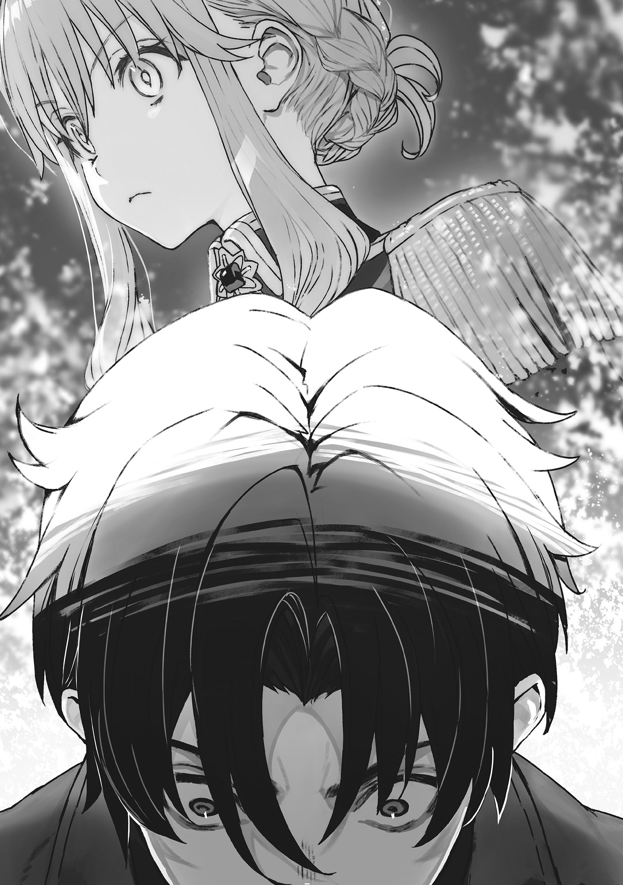
正確にはレルヒェという名の、臙脂の軍服の少女だけを。
「......大尉？ どう......」
遮ってシンが口を開いた。
「......殿下」
ヴィーカは面白がるように目を細める。
その性悪な虎のような、性悪を装っただけの情のない蛇のような、帝王紫。
「くりかえすが。ヴィーカでいい、と言ったぞ。ノウゼン」
「では、ヴィーカ。......それは、何ですか？」
「大尉......！」
それ、という語で指したのがレルヒェだと気づいて、レーナは咎める。
一方ヴィーカは薄く嗤った。
「ほう。さすが、死神の異名は伊達ではないな。......レルヒェ」
「は」
「見せてやれ」
「はっ」
はきはきとレルヒェは立ち上がると、騎士が兜を外すように。
己の頭を外して持ち上げた。
咄嗟に後ずさってしまったレーナを、この場合は誰も責められまい。
「なっ......!?」
フレデリカは大きな目を丸く見開いて凍りつき、ライデンとシデンも寄りかかっていた壁から背を浮かせた。およそ物事には動じないシンでさえもが、険しく目を眇めている。
ヴィーカ一人が泰然としている。
「紹介しよう。彼女は人造妖精〈シリン〉一番機。我が連合王国の技術の粋にして護国の要」
ひらりと振った手に、部屋のどこかに仕込まれたセンサが反応。細身のその傍らにホログラムが展開する。これが〈アルカノスト〉なのだろう。〈ジャガーノート〉より華奢な、装甲の存在さえ疑わしいフェルドレスの三次元画像。小さな、辛うじて人間一人を内部に収められる程度のコクピットを胴体部に有した。
「半自律戦闘機械〈アルカノスト〉──その制御用コアユニットだ」
エイティシックスは人間ではないのだから、奴らを乗せればそれは有人機ではなく無人機だ。
共和国の〈ジャガーノート〉と──同じ発想の。
レルヒェの頭と胴とは、血管や神経を思わせるチューブやコードで繫がっている。
「人間......なのですか？」
ヴィーカは苦笑するように失笑した。
「これを目の当たりにしながらそれを訊くか、〝鮮血の女王〟。......今、ノウゼンは何と言った？ 何故......彼だけが即座に見分けられたと思う？」
はっとレーナは息を吞んだ。
シンは〈レギオン〉の声を聞く。──正確には、亡国の遺した機械仕掛けの亡霊の、その中に囚われた戦死者の声を聞く。
目の前の少女の姿をしたものは、〈レギオン〉ではあるまい。〈レギオン〉は人の形をとらない。人に似せすぎた兵器は禁じられているから造れない。
それなら、彼女は──......。
レーナが答えを口にするのをまるで制するかのように、シンが口を開いた。
「死者の脳を。......そのものじゃなくても複製を、中央処理系に使っているのか」
血赤の瞳はレーナも初めて見る険しさで、ヴィーカを見据えている。
〈レギオン〉に囚われた仲間たちの嘆きを聞き、その一人である兄を討つために戦い続けたシンには、あるいは目の前の少女は、それを造り出した連合王国の所業は、何より許しがたい冒瀆であるのかもしれない。
生者と死者の境を侵すことは。
死の眠りの安寧に憩うはずの死者を捕らえ、戦闘のための道具として再び戦場に閉じ込めることは──......。
並みの者ならたじろぐほどに凍てついた眼差しに、けれどヴィーカは動じもしない。
「ご名答だ、八六区の死神。彼女の──彼女たちの中央処理系は、人間の脳構造を複製し再現している」
奇しくも。あるいはそれを真似てか。
知性化された〈レギオン〉と──〈羊飼い〉と、同じ。
「待ってください。元が人だというなら。それなら、」
声は、レーナ自身わかるほどに強ばり、尖った。
連合王国は大陸で唯一、専制君主制を敷く国だ。
国民はすべからく、王侯の資産だ。
「元となった人間は──一体どこから、どんな理由で」
ヴィーカは面白がるように首を傾げた。
「傲慢な専制君主が、嫌がる民どもを無理矢理解体しているとでも？ あいにくとイディナローク王家はそこまで暗愚ではない。無意味な圧政の果ては断頭台の口づけだと、それくらいは学んでいる。......材料はあくまで志願者のみ、摘出したのも戦死した後だ。厳密には死ぬ直前だが。〈シリン〉への献体を事前に志願した軍人が、治療順判定で救命不能と判定された場合のみ脳構造のスキャンに回される。志願したからといって助かる命をスキャナ送りにすることはないし、志願を強制することもない」
戦場のような危険地帯では、治療が必要な者に対して医師が不足する。こうした場合に、より多くの者の命を効率的に救うための措置がトリアージだ。命に別条のない、あるいはまだ猶予のある怪我人を後に回し、一刻も早い救命措置の必要な者から優先して治療を行う、そのための負傷者の分別措置。
その中で〝救命不能〟とは、治療しても助けられない一群を指す。とりつけられるタグの色が黒であることからそう呼ばれる、すでに手遅れの、まだ息があってもじきに死ぬ者の総称。
「データ化された脳構造は人造細胞で再現され、記憶削除と疑似人格の刷り込みを実施した上で〈シリン〉の頭蓋内に収められる。つまり彼女たちは戦死者を元にしているが、戦死者そのものではない。それでも聞き取れるとは、意外だったが」
「ですが、どうして......そんなことを」
同じ戦死者の脳を利用するといっても、〈レギオン〉は兵器だ。倫理も正義も持ち合わせはしない。だからまだわかる。
けれど、ヴィーカは人間だ。......人間の、はずだ。
「なぜ？ 決まっている。叩いても叩いても湧いて出る〈レギオン〉に対し、人は有限だ。再生産にも限りがある。これ以上死ぬ数を減らせないなら、すでに死んだ者を再利用するしかなかろう。狼狩りには狼犬を。吸血鬼狩りには吸血鬼を」
亡霊には亡霊を。
怖気をふるう倒錯で、冒瀆だった。
レーナの覚えた戦慄など知らぬげに、ヴィーカは嗤う。蛇のように。情など知らぬ、心を持たぬ獣のように。
〝屍の王〟。
情を持たず、ゆえに人倫を解さぬ──冷血なる死者の王。
「そんな......そんなものが。無人機、ですか......!?」
「言ってくれる。だが、慣れてもらわねば困るな。言っておくが、連合王国が機動打撃群に供与する兵力というのは〈シリン〉と〈アルカノスト〉だ。俺の直轄連隊だからな」
言って、北の大国の王子は悠然と笑んだ。戦慄するレーナも険しい眼差しで見据えるシンも、石榑のように見返して。
「我らが〈レギオン〉を駆逐するか、奴らが人類を駆逐するまで。......俺ともども、どうか末永くよろしくな？」
大陸西北部に権勢を誇った大国の、その王城の一角だ。宿舎として与えられた離宮の居室は快適で贅沢で、美しい。
なんとも遠くまできたもんだよなと、八六区の強制収容所や前線基地の粗末な寝床とは雲泥の差の、中身は羽毛だという寝台に寝転がってシデンは思う。慣れなくて居心地が悪いとも思わないが、長居してると鈍りそうだなとはちらと思った。体も心も。
何か、花かハーブが品よく香るシーツを掌で踏んで、ブリジンガメン戦隊の副長であるシャナが仰向けに寝転んだ彼女の上に乗りかかる。
「ねえ、シデン」
目も向けずにシデンは気のない返事を返す。
「んー」
「いいの？」
「ああ......」
何が、を欠いた問いだったが、長いつきあいだ。明示されずともわかる。
さすがに、あれはショックがすぎたのだろう。昼間の王子殿下との顔合わせからレーナは終始塞ぎこんでいて、宿舎の居間でソファに沈み込んで動かないのを気にかけたシンが、今は近くにいるはずだ。
「仕方ねえだろ。女王様が選んだんだから」
「でも」
左右で色の違う双眸で、シデンは丁度頭上に位置する窓を見上げた。
「死神ちゃんがもっと、ろくでもねえ奴だったなら考えたけどな。まあ、あれならまぁいいし」
ぎりぎりどうにか許容してやれなくもない、というだけで、認めたわけでは断じてないが。
「......いつ何もかも終わるかなんざ、今だってわかったもんじゃねえんだ。これまでと同じに。だったら、......いられる間は、いたい奴といさせてやりてえじゃんかよ」
†
「──またなんとも酷い寒さじゃが......栄えておるのう！ 戦時の都とは思えぬほどじゃ」
連合王国王都アルクス＝スティリエは、連合王国の歴史と同じ長さを持つ古都だ。
繁栄と発展、戦乱を繰り返して複雑に入り組んだ街並みと、優に数百年分の様々な様式の建物が入り混じる独特の景観。壁面を明るい色彩で鮮やかに彩る傾向は、一年の半分を雪に鎖される北国の風土ゆえか。
今日も阻電攪乱型の薄雲が陽光を遮り、小雪がちらつく天候だが、メインストリートを行き交う大勢の人、賑やかな商店に露天商の集まるマーケット。
共和国の軍服の上から連邦の黒いコートを羽織ったレーナは、活気に溢れるその喧騒を目を瞠って見回す。同じコート姿のアネットやグレーテやフレデリカ、護衛にとついてきたライデンも物珍しげにしている。
少し時間が空くから我らが王都を見てきたまえ、ご婦人方は買い物などしたいだろうし、と骸骨のように瘦せた技術院の長官が言ってきたのは今日の朝食後のことで、気遣いが半分、あとの半分は外交の一環というところだろう。実に十年以上ぶりに訪れた他国の、佐官クラスの軍人に、自国の余裕と繁栄を──それを維持する軍の精強をさりげなく誇示するための。
あたしらはいいやと断ったシデンとシャナと、何やらヴィーカに呼びだされたシンは王宮に残って、シデンたちはそれなら軍事博物館の見学はどうかと近衛兵たちに誘われていった。
「さすがは......北の大国ロア＝グレキア、その千年の王都ですね......」
「少し息抜きがしたかったから、長官のお気遣いはありがたいわね。どうも、やっぱり例の技術は、そうと割り切るにはちょっと抵抗があって」
「知覚同調の方は、お互い収穫があってよかったですけど。......まあ、志願者で安全に配慮はしてるって聞いてても、人体実験の記録がごろごろごろごろ出てくるのは......ちょっと大分、アレですけど......」
生ぬるく苦笑を交わす、グレーテとアネットが言っているのは〈シリン〉とその関連技術のことだ。とてもではないが連邦では利用できないと、話を聞いたグレーテは頭を抱えていた。
壮麗な街並みを構成する建物の幾つかは兵舎や武器庫、王都防衛師団本部といった軍事施設で、行きかう人にも連合王国の紫黒の軍服の者が多い。連邦同様、この国でも軍人は一定の敬意の対象のようで、若い陽金種の女性軍人に青紫の瞳の宵菫種の壮年の男性が会釈して過ぎる。
見回してアネットが言う。
「紫系種が臣民で、属領の異民族が隷民だっけ。でも隷民って言っても別に普通に生活してるのね」
紫系種純血の──臣民の子供と、他民族である隷民の子供が、けれどごく当たり前に一緒にボール遊びに興じている。カフェの同じテーブルで色彩の異なる二人がコーヒーと会話を楽しみ、市場の一角では露天売りの天青種のおばちゃんと淡藤種の婦人が、大瓶入りの蜂蜜の値段を巡って丁々発止のやりとりを繰り広げている。やがて商談が成立したらしく、がっちり握手を交わしてから商品と紙幣とを交換してにこにこと別れた。また来るわね、ごひいきに、と、互いに満足げなやりとりが聞こえてくる。
全体に隷民が労働者階級、臣民が中産階級に属している割合が高く、そのため服装や持ち物に質や格の差異もあるものの、隷民が奴隷や不可触民や、──エイティシックスのような劣等種として、扱われている様子はない。
案内と通訳にとつけられた、王宮の衛兵が笑う。......連合王国の公用語は連邦とも共和国とも方言程度の違いしかないが、元々は別の文化圏に属した被征服民である隷民には、全く別の言語を話す者もいる。
「臣民とは軍役を、隷民とは生産を担う者ですからな。ありていに言えば徴兵義務を負うか、納税義務を負うかの違いです。昨今は戦局もあり、王家の方々は隷民からの志願兵も奨励なさっていますが」
その者がそうです、と衛兵の一人を指す。少尉の階級章も真新しい、二十歳そこそこの緋鋼種の青年が控えめながら誇らしげに微笑んだ。と、いうことは、高等教育も開放されているのか。少なくともそれだけの資産のある者には。
ヴィーカの言うとおり、連合王国は専制君主国家ではあるものの、圧政を敷いてはいないのだろう。反乱や内乱の火種となる国民同士の反目を招く、必要以上の階級差も。
グラン・ミュール建設もそのための資産供出も兵役も、何もかもをエイティシックスに押しつけた挙句に劣等種の烙印を押した、共和国とは違って。
「......ミリーゼ？ いかがしたか」
「いえ」
曖昧に首を振り、それからレーナは小首を傾げた。
「ところで。......ヴィーカはシンに、何の用事なのでしょうね？」
コートを着てこい、と言われていたとおり、地下へと続くその階段は、酷く寒かった。
「王国最北の雪禍連山。そこから王国の地下まで続く、氷洞深くに造られた王廟だ。ここの氷は溶けたことがないし、だから夏でも凍える。......うっかり使用人の子供が迷いこむと大騒ぎになるな」
それ自体蒼褪めた薄氷のような寒氷石の階段は、緩やかな螺旋を描いて地下深くへと続く。光を弾く、七色にぬめる夜光貝の象嵌。
連邦軍制式の塹壕外套は大陸北に位置する連邦の、凍てつく雪の塹壕戦のために造られたものだ。防水性も防寒性も非常に高い。けれど呼吸のたびに肺腑に突き刺さる冷気に、シンは眉を寄せる。
先導するヴィーカの息も、同じく白い。
「......かつて、太古の昔。貴種とはそのまま王侯であり、王とは現人神として異能を有する者だった。焰紅種の精神感応、夜黒種の武力、白銀種の威迫。その多くは血脈もろとも歳月に薄れ消え果たが、古くからの王家や貴族が現代まで権力と血脈を保った地ではわずかに残った。ギアーデ帝国然り、我が連合王国然り。その中で紫瑛種は知能の強化だ。平たく言うなら、極端な天才が生まれやすい血統、というところか」
反響する足音は一つだけだ。シンは足音を立てず、ここには彼の他にはヴィーカしかいない。
指揮官である彼が用があるとしたらレーナだろうに、ここに呼ばれたのはシン一人だ。駒の一つ程度にも認識していないのがむしろ普通だろう、一プロセッサーにすぎないシンだけを。
意図がわからない。
〈シリン〉を目にして抱いた強い嫌悪も相まって、問う声は酷くそっけなくなった。およそ権威というものに敬意を払う必要を、シンはそもそも感じていない。
「......何故、その話をおれに？」
「？ 卿とて焰紅種の異能者だろう。マイカの血族であられた母君を含め、家族は他のエイティシックスと同じく迫害で失ったと。......多少は知りたいかと思ったのだが、違うのか？」
「興味はない」
「ふぅん？」
振り返ったヴィーカは何やら怪訝そうな顔でこちらを見上げていたが、結局前に向き直って肩をすくめた。
「ま、卿に関心がなくとも、生憎と俺の話には必要な前置きだ。退屈だろうが少しつきあえ」
長く続いた階段の、最後の段をヴィーカが降りる。カー............ン、と軍靴の靴音と反響音が、冷えた石造りの空間に溶けて消える。
時代がかった通路からはいっそ唐突な、最新鋭の金属ドアがヴィーカの持つ何かを認証して自動で開く。音もなく流れ出た、階段とは比べ物にもならない凍てついた空気を意にも介さずくぐりぬける。
「──我が王家は紫瑛種の最後の異能の血統として、同様に失われゆくあまねく叡智の番人たろうとした」
無明の闇に、光が入る。
透明な光がその空間を、燦爛と照らして煌めかせる。
そこはどこまでも透明に青い、氷だけで形作られた巨大なドームの中だった。
あまりにも氷が分厚いせいで、その奥にあるはずの岩壁が全く見えない。どこまでも透明な、底の見えない深いあおいろ。
異教の礼拝堂のようなドーム天井からは無数の氷柱が下がり、それは広間から奥へと伸びるやはり氷の道へと続く。こんな場所までと呆れるほどに精緻な孔雀の羽の紋様が、要所に孔雀石と紫水晶で象嵌されて氷の壁の表面で煌めいていた。
けれど真っ先に目に留まるのは、それら自然と人工の造形の競演ではない。
ドームの氷壁沿いに、そして奥の道の両側に。水晶の群晶のようにずらりと並んだ、数え切れない氷の。
棺。
鳥の卵の形の、銀と硝子の細工。いずれもがその内部に一人一人、紫黒の軍服かドレスの人影を封じ込め、多くは成人の大きさだが中には子供や赤ん坊のそれもある。遺体の一部だけしか残っていないらしい包みや、遺品だけの棺もちらほらと。内部は透明度の高い氷で満たされ、レーザー彫琢で一角獣の紋章が描かれた硝子の表面に薄く霜を纏いつかせていた。
その中心で、ヴィーカは振り返る。雪色のコートの裾をわずか翻して。
「その象徴としての遺骸の保存だ。イディナロークの直系は全員が、この氷の王廟に保存されている。初代あたりはさすがに、もうミイラらしいがね。......さて、」
その中の一つ、丁度彼の背後にある棺を、片手で示した。隣はまだ、空の棺。その中に緩く瞼を鎖して水に浮かぶように両腕を広げた、女性の棺を。
「マリアーナ・イディナローク。──俺の母だ」
氷の棺に封じられた女性の遺体は、その前に立つヴィーカによく似ていた。
年齢と性別による差異がなければ、瓜二つと言っていいくらいだ。年の頃は二十代の後半から三十そこそこ、連合王国の王族の正装であるらしい紫の豪奢なドレスを纏い、見事なカットの宝石を鏤めた銀のティアラを額につけている。
そこまで見て取ったところで、シンは違和感を覚える。
マリアーナ妃の遺骸がつけた、華奢な銀のティアラ。
冠を戴いているのは、居並ぶ死者の中で彼女だけだ。それに装身具には詳しくないシンでさえもわかるほどに位置がおかしい。いくらなんでも、目のすぐ上にはそんなものはつけるまい。
そしてその銀の煌めきの下の、白い額を一直線に横切る赤い筋。
生者のそれとは異なり、死体の傷は治らない。──切り開かれた痕は永遠に消えない。
ヴィーカは薄く嗤った。
「気づいたか。......そう、母上の遺体には脳がない。十三年前に俺が取り出したからな」
そう言われてわからないはずがなかった。
〈レギオン〉が開発される二年前。そして。
マリアーナ。
「マリアーナ・モデル......か」
「ああ。全人類の災禍たる〈レギオン〉。その元となった、全ての始まりの人工知能。その材料となったのが──俺の母上だ」
正確には彼女の脳が。
それで、と、シンはかすかに苦く思った。
死者の脳構造を取り込み、中央処理系の代替とするという、ある種飛躍した発想が〈レギオン〉に生じるわけだ。それが想定通り、正しく機能したのも。
そもそもが人の脳を元とし、人の脳を再現しようとしたものだったのなら。
けれど。
「......何故？」
短い問いは、その実様々な疑問を含んでいた。
何故、そんなものを造ろうとしたのか。
母親の遺体を損壊してまで。生死の境を冒してまで。
遺体とはいえ、母親を──実験台にしてまで。
ヴィーカは恬淡と、肩をすくめた。
「あいたかったから」
同い年だという年齢と、秀麗な外見とは裏腹に。ちいさな子供のような声音で口調だった。
「母上は、俺を産んですぐに身罷られた。......難産でね。出血が多すぎた。それ自体は出産である以上起こりうることだし、父上が調べさせて何の事件性もないと確認している。ただ、」
言いさしてヴィーカは背後、棺の中の母親を振り仰いだ。
もしかしたら彼に触れたこともないのかもしれない、その白い手。
「俺は母上のお声も知らない」
ぽつりと落ちた声は、与えられることさえなかった何かに飢え渇き──それ故に酷く、寂寞と響いた。
「いかにイディナロークの異能者といえど、生まれてすぐのことを覚えていられるものではない。父上やザファル兄上、乳母どもは覚えている限りの母上の話をしてくれたが、それで埋まる空白でもなかった」
「............」
「──だが、それなら」
その時薄い唇が不意に、にぃ、と凄絶な、凶悪な笑みに吊り上がった。
追憶に沈んだまま、帝王紫の双眸を光らせてヴィーカは笑う。魔物のように。悪鬼のように。
同じ笑みを、十三年前。今からは想像もつかないほどに幼かったヴィーカも浮かべていたのだと、何故かわかった。
その、無邪気なまでの。
「知らぬなら。失われたのなら、蘇らせればいい。そう思った。......母上の遺体は──脳はその記憶と人格ごと、ここに保存されていたのだから......！」
妄執。
あるべき制御が、そこにはない。人の遺体を暴き、その記憶と人格を機械の器に閉じ込め、生死の理を捻じ曲げる。......そうした禁忌を冒すことへの罪悪感も恐れも、その帝王紫の瞳には欠片たりとも存在しない。
善悪の別も。
ただ、己の欲望だけを唯一絶対とする。
その──冷血。
およそ感じたことのない、寒気にも似たおぞましさと戦慄をシンは覚える。自身では見ることのできない己の表情が、険しさを帯びるのを自覚した。
目の前にいるのは、ヒトではない。
人倫も道理も歯牙にもかけずただ己が欲望のためだけに動く、──生粋の、無垢な怪物だ。
押し殺して問うた。
「......それで」
あっさりとヴィーカは肩をすくめた。
「ああ。失敗した」
生者と死者が交わることはできない。
その理を覆すことは、いかなヴィーカにもできなかった。
「母上の脳は徒に失われ、俺は王妃の遺骸を損壊した咎で王位継承権を剝奪された。そんなものは元々要らんからどうでもいいが、......母上については、その時はまだ諦めがつかなかった」
自分が子供すぎるから、駄目だったのだろうと。
知識が足りないから、理論に穴があるから、──何かを間違えたから失敗したのだと。
その時のヴィーカはまだ、世界についてそんな風に考えていた。
正しいやり方を正しく実行できれば、正しい結果が出ると。
世界とはそんな風に精緻に、正確に回っているはずだと。無邪気にそう、信じていた。
必ずうまくいくはずだと。
「それで公開ネット上に、全てのデータをアップロードした」
それが諸国の軍事バランスを揺るがしかねない行為だと、その時は思い至りもせずに。
末子とはいえヴィーカは当時の大国の王子だ。名前も、わずか五歳という年齢も公に知られていた。まともな論文の体裁も取っていない文章と、死者の復活という突飛な目的もあり、幼い王子殿下の悪戯だろうと、ほとんどの研究者はその時、目も通さなかったけれど。
「それで──ゼレーネ・ビルケンバウム少佐と」
「ああ。何か国かから声をかけてきた物好きの、その一人が彼女だった」
書き手の年齢と幼い文章に惑わされず、その新しい人工知能モデルの有用性に気づいた者の一人が、その時帝立軍事研究所で自律兵器の研究に携わっていたゼレーネだった。
「ゼレーネが何を、研究しているのかは知っていた。彼女が何を思って自律兵器を──〈レギオン〉を研究していたのかも。だが、」
それが自らに刃を向けるまで。帝国以外のあらゆる国家に牙を剝くまで。
自分の望みの、それ故に取った行動の帰結を、理解してはいなかった──。
「宣戦布告がされた時には、ゼレーネはもう亡くなっていたそうだがね。......間接的にとはいえ、卿から祖国を、家族を奪い去ったのは俺だ。憎むか？」
軽く両腕を広げた。服の揺れ方からして拳銃の一つも持っていない、護衛の一人も伴わない無防備さで。
おそらくは彼なりの、誠意のつもりではあるのだろう。何故ならヴィーカはシンを呼び出した時に、拳銃を持ってくるなとは言わなかったのだから。
八六区で染みついた、常に持ち歩く習慣が今も残っている拳銃。馴染んだその重さに意識を向けつつ応じた。
「──いや」
共和国を、祖国と思ったことはない。
家族も彼らがいた時の情景も、もうほとんど覚えていない。
奪われたというなら、そのとおりなのだろう。
それでもシンにとってはそれらは......もはや、失われたものですらない。
元よりそれらは存在しなかったも同然で、──そうである以上、恨む道理もない。
憎むほどの情も。
「奪われたとは思ってないし、......仮にそうだったとしても、それは貴方には関係ない」
「......また随分とどうでもよさそうに、元々要らないものだったかのように言ってくれるものだな。持っていたくせに。卿は元々は、俺とは違って」
苦笑してヴィーカは首を振った。紫の瞳に刹那、かすかな羨望と嫉妬がよぎったが、瞬くことで押し消して。
「さて。卿にとってはどうでもいいらしい、俺の懺悔はこれで終わり。本題はここからだ。共和国八六区の、首のない死神」
その時のヴィーカの表情を、なんと形容するべきだったろう。
懇願にも似て、恐怖のような。断罪を望み、希望を願い。肯定の答えと否定の言葉を等しく待ちわびると同時に恐れながら、なお問わずにはいられない──そういう顔。
「ここに。母上はまだおいでになるか──......？」
母の死後の安寧を願い、同時に、──それでもまだ母に、会いたいと思う。
呼んだのはそれでか、と、奇妙に空虚な気分でシンは思う。死してなお残る亡霊の嘆きを聞く、彼の異能。それがあれば、母親がまだこの場所にいるかわかるから。死体を暴かれた母親が、それでも死後の安寧を得られたのか。あるいは再び試みれば、母を蘇らせることができるのか。それが......わかるから。
そうも執着するものなのか、と、漠然と思った。シンは、母の顔など覚えていない。思い出せないことに未練もない。
それなのに声も知らない、触れたこともない母親に。
こうも深く。
目の当たりにしながら、シンは首を振った。
横に。
「いや」
兄や、カイエや、多くのエイティシックスの戦死者たちが戦場に留まっていたのは、彼らの脳構造が中央処理系として〈レギオン〉に取り込まれたからだ。死んで還るはずが、囚われ留められてしまったがためだ。
未練や、執着。ましてや愛情などではない。
情で理は覆せない。
そんなもので残れるほどには──この世界は死者にも生者にも、誰に対しても優しくはない。
フレデリカの敵を討とうとしたキリヤは、電磁加速砲型を撃破されるとともに消滅した。
兄も──あれだけ最後まで待っていてくれた兄も、重戦車型の依り代を失ってからはいなくなった。
もういない。
どこにも。
「母君の遺体は、ただの遺体だ。声は聞こえない。......母君はもう、そこにはいない」
「では、レルヒェは？」
続いた問いの唐突に、シンは眉を寄せる。──レルヒェ？
「〈シリン〉たちはどうだ。彼女の〝声〟は聞こえたのだろう。レルヒェは──彼女たちは、あの体の中にいるのだろう。その中で彼女たちは──あるべき死に、還りたがっているのか？」
「............。ああ」
何故、彼にとっては無人機のパーツに過ぎないのだろう、彼女たちについても気にするのかと、思いながら今度はうなずいた。彼女については、聞こえるから。
絶叫でも苦悶でもない静かな嘆きではあるけれど。それでも本当には会ったこともない少女の声が。大勢の知らない兵士の声が。
「還りたいと。......ずっと泣いてる」
ヴィーカは淡く、かすかに苦く笑った。
自嘲のような笑みだった。
「......そうか」
見やってシンは口を開いた。相変わらず目の前のこの相手については、理解も共感もできないけれど。
「こちらからも、一つ聞いても？」
ヴィーカは瞬いた。意外そうに。
「......ああ。俺に、答えられることなら」
「声も知らない母君に、そうまでして会いたいものなのか？」
遺体を切り開くことに、忌避感がないのはわかった。
けれど、人一人の遺体。成人女性一人分の質量だ。まして頭蓋骨は硬い。たかだか五歳のヴィーカ本人が運び出し、切り開いたわけではまさかなかろうが──そこまでの手間をかけてまで、会いたいなどと思うものだろうか。
声も知らない──何一つ覚えてもいない、ただ母親だというだけの誰かに。
ヴィーカはしばし、きょとんとなった。
「それは......そうだろう。手段はともかく、子は親を慕うものだ。会えぬというなら尚更に。......逆に聞くが卿は、」
言いさして、ヴィーカは目を眇めた。
「会いたくはない、のか」
「死人には会えない」
それがシンの、......亡霊の声を聞く異能を持った彼の知る、厳然たる世界の理だ。
声は聞こえる。だがそれは、死の瞬間の断末魔の叫びとしてだ。会話はできない。意思の疎通も。......どれだけ互いに望んだとしても。
死者と生者が交わることは、決してできない。
「なるほどそれで、思い出したくもないわけか」
ぴりっとシンは目を眇めた。また、その言葉が。
──思い出せないんじゃない。
──思い出したくないんでしょう。
「......どうして、そう思う」
「亡き母君の系譜にも興味がない。奪われたというのに恨もうともしない。何より、触れてほしくない、触れたくないと顔に書いてあるからな。そこに触れたくも見たくもない、意識さえもしたくない傷でも、残っているように」
「............」
傷。なんて。
見透かしたように、ヴィーカは笑った。酷薄に突き放した、いっそ慈悲深くもあるような冷ややかさで。
「卿がそれでいいなら、他人の俺が口出しできる筋合いではないがね。......親が子に伝えられるものなど、極言してしまえば生き方の一つの例だけだろう。それさえも忘れ去られるを良しとされたのでは──なるほど、卿の親御は卿とは二度と会えぬのであろうよ」
第二章 白鳥の砦
連合王国南方戦線、レーヴィチ観測基地。
難攻不落を絵に描いたような要塞だ。
四方は高低差最大三百メートル、最小でも百メートルもの切り立つ断崖絶壁。南北に長い菱形の頂上部を持つ、岩山の上に峻厳と立つ。特有の純白の岩肌は今は透明で急峻な、氷雪の勾配に分厚く覆われ、岩壁の頂上をぐるりと取り巻く強化コンクリートと装甲板の城壁。北の頂点からは更に百メートル近い高さの岩山が伸び、そこを支柱に厚く強固な岩盤の天蓋が、翼を広げた白鳥のように頂上部を覆う。
ゲートとそこに至る登攀路は後方、軍団本部側にむけて北西の斜辺一か所だけが造られ、それがまた異様な急勾配と、そこを何度も曲がりながらゆっくりと登る九十九折の道だ。獣の内腑のようにのたうつ登攀路を見下ろす、ゲート周辺の無数の銃座の威圧的な砲口。
「──元は国境の砦の一つだ。今は弾着観測陣地として運用している」
頂上を覆う天蓋は、朽ちた翼のようにところどころ穴が開いている。日暮れ近くの雪の日の、薄朱い弱い陽の柱を辿り、レーナたちを先導してヴィーカは歩く。太古の昔に氷河が岩山を削り、作り上げたのだという驚異の造形。
追って歩を進めながら、レーナは要塞基地の地上区画を見回す。竜牙大山への挺進作戦にあたり、機動打撃群の拠点となる、この要塞。
元が砦だと言うとおり、古い城塞特有の、隔壁で細かく区切られた内郭が階段状に配されたつくり。反時計回りに、天守閣である北の岩山へと登る。観測塔として用いられているのだという天守閣は北の岩山内部を掘りぬいたもので、見回せば要塞周辺の戦野の光景。
緩やかに下った先は、ここからは見えないが北に連合王国軍砲兵陣地と南の競合区域、東西の連合王国軍機甲部隊の宿営。周囲は数キロにわたって雪の平野だがその先は唐突に不自然に針葉樹の森へと変わり、はるか遠い竜骸山脈の尾根の線。連合王国最後の楯である北の山脈と、今や〈レギオン〉の巣窟と化した南のそれと。
薄日を遮る天蓋に加え、内郭を狭苦しく区切る分厚く高い隔壁のせいで、地上区画は息が詰まりそうに暗く、狭い。ぐるりと見回してシンが目を細めたのは、万一ここで戦闘になった場合でも想定したものか。
「弾着観測──ですか」
「この要塞周辺がこの辺りで一番高いからな。かつての城塞同様、航空攻撃にはなす術もないが、幸いと〈レギオン〉は空を戦場にしない。こういう古い要塞も、状態次第ではまた使える」
〈レギオン〉は対空戦力は保有しても、航空戦力は持たない。
飛行型〈レギオン〉は兵器を搭載しないし、観測事例からして長距離ミサイルの類も保有してはいない。それもどうやら、彼らに課せられた禁則事項らしい。
だから。こんな搦め手を、採用してきたのだろうか。
見上げた銀と鉛色の空。晩春のはずの天からやはり、雪はちらちらと舞い降りていた。
観測塔の何故か三階部分に設けられた入口から狭い階段をぐるぐる下り、三重の耐爆ハッチを過ぎて地下の居住区画に入ると、黄色い声が出迎える。
「お帰りなさいませ、殿下」
「ああ、ただいまリュドミラ」
駆け寄ったのは異様なまでに鮮やかな、燃え立つ緋色の髪をした長身の少女だ。それに周囲にいた、臙脂の軍服の少女たちが続く。
連合王国の軍服は紫黒の、詰襟の意匠だ。臙脂の古風な軍服は、〈シリン〉専用の軍服である。
つまりここに集う少女たちは、全員が人間でない。
染めたとしても再現できない、玻璃の透明さの蒼や翠や桃色の髪。額に埋め込まれ、人造脳深くまで挿し込まれているという知覚同調・思考制御用の擬似神経結晶が、底の見えない深い菫色に煌く。
見回してレーナは瞬く。
これだけ人間のようにしか見えない彼女たちを造り出す、たしかに異能そのもののヴィーカの異才も凄まじいし、そんな力に果たして何の代償もないものなのかとそれは気になるけれど。それより。
「女性ばかり......なのですね」
「野郎なんぞ造っても、むさくるしいだけだからな」
さすがにレーナが向けてしまった白い目に、どうやらヴィーカも気づいたらしい。
「冗談だ。少なくとも半分は。......彼女たちの導入当初は、まだ前線は成人男性ばかりだった。その差別化としての少女の姿だったわけだが、今は女性兵も少女兵も投入せざるを得ない戦況だ。念のため髪の色も変えさせておいたのは正解だったな」
そもそも人型にしなければよかったのでは......？ と一瞬だけ考えてしまい、レーナは己のその思考を恥じた。
機械だから。人の脳構造の複製にすぎないから。疑似とはいえ人格のあるものを、部品扱いしても構わないなんて。
だいたい必要があるからこそ、あえて管理も姿勢制御も面倒な人型にしてあるのだろう。
たとえば自分がある日突然、醜い大きな虫にでもなってしまったら。
混乱する、絶望する、などという生易しい精神状態にはおそらくなるまい。六本の脚、背中の翅、複眼の視界に触角という感覚器。人間とは何もかも違う感覚に、人のままの脳は耐え切れずに瞬く間に発狂してしまうことだろう。
......レイも。
大切な弟だと言いながら、〈レギオン〉と化して再会した時にはそのシンを手にかけようとしたあの青年も、あるいはそうだったのだろうか。
人とはあまりにも異なる〈レギオン〉の──重戦車型の体に狂わされ、殺戮機械の本能に蝕まれ。会いたいと望んでいたはずの弟を、殺そうなどとしたのだろうか......。
そのあたりの見解をヴィーカに聞いてみたい気もしたが、シンの前で口にできる話ではない。個人名を伏せても聡い彼ならわかってしまうだろうし、......たとえわからずとも、話していいとは思えない。
ちらりと目をやったところで、丁度シンが口を開いた。
「......見分けがつくのは軍服と髪の色、額の神経結晶だけか？」
「戦闘中の救助のことを言っているなら、基本的には乗機が違うし、最悪手を引けば分かる。彼女たちはほとんど機械だ。そうとわかる程度には重い。脳構造は製造工場にマスターデータがあるし、戦闘記録も定期的にバックアップしているから、見捨てて構わん。......それと、」
ふん、とヴィーカは不遜に笑った。
「侮るなよ死神。戦闘のための存在である彼女たちが、その戦闘で人間に後れを取るものか」
「──あ、シン。ライデンとフレデリカも。移動してきたの今日だったんだ。お帰り......っていうのも変か。とにかく久しぶり」
ずらりと並んだ長いテーブルの一角でひらひらとセオが手を振り、その向かい、こちらに背を向けて座っていたアンジュとクレナが振り返る。鋼色の連邦軍の軍服と紫黒の連合王国のそれが混じりあう、レーヴィチ要塞基地の第三食堂。
要塞基地の基地機能は岩山の中の地下階層に集中し、幾つかある食堂も全て地下階層の居住区画に置かれている。広々として明るく天井も高いが、窓が一つもないせいで圧迫感のある、長方形の空間。
やたら絵心豊かに天井一面に描かれた紺碧の空と、描いた者の憧憬も明らかな四方の壁のひまわり畑が、まるきり刑務所の発想だなとシンは思う。
それぞれの食事のトレイを置いて座る彼とライデン、フレデリカに、クレナが首を傾げた。
「グレーテ大佐と、あの、アネットだっけ？ 技術少佐の子は王都に残るって聞いてたけど。レーナはどうしたの？」
「連合王国側の指揮官や幕僚との会食に行ってる」
「指揮官だからな。そういう社交が、あるんだってよ」
「ああ......連邦に来た時もそうだったわね、そういえば」
言いながらアンジュがテーブルの中央に置かれた、いくつかの小瓶を開けていく。パンに塗るためのジャムやら蜂蜜やらの類。ベリーがおすすめ、と肩をすくめた。
余裕がない、というのはそのとおりらしい。八六区のそれほどひどくはないが、トレイの料理の半分以上は生産プラントの合成培養品で少し味気ない。これで食料生産が壊滅してしまえば、......たしかにこの冬は超せないだろう。
黙々と味の薄い、サワークリームで煮た肉とマッシュポテトを片付けていると、聞くともなしに他のテーブルの声が聞こえてくる。
この基地の兵力は、第八六機動打撃群のプロセッサーを除けば〈シリン〉が大半を占めるが、だからと言って無人というわけではない。〈シリン〉のハンドラーは無論のこと、基地の警備にあたる歩兵や整備クルー、発令所要員に基地の固定砲を扱う砲術班に。
紫系種だけが軍役を課される連合王国の法そのまま、大半が紫の目をした軍人たちを見やって、ライデンが眉を寄せた。
「王都じゃ、臣民と隷民の違いは義務だけって話だったが。......腹の底じゃ、そういうわけでもなさそうだな」
軍服にも食事のメニューにも差異はないものの、紫系種とそれ以外の色彩の民族は、同じテーブルについていない。隷民の階級章は見て取れる限り兵卒から下士官ばかり、同じ臣民同士でも宵菫種と淡藤種の間には階級差と反目があるようだ。
そして紫系種の軍人たちがそれ以外の者に向ける、冷ややかな目と言葉。
隷民どころか、ついに他国人までもが我らが戦野を踏むとは。嘆かわしい。勇猛なる我らが父祖らに申し訳が立たない。指揮官はまだ、共和国や連邦の貴種だとはいえ。
興味なさげに頰杖をついて横目に見ながらセオが言う。
「ここは共和国と違って、偉い方の民族が兵士なんだね。......なんか、変な感じ」
「......？ 連邦でもそうであろ。連邦でも貴族とは戦う者じゃ。今も特に士官には、元貴族が多いではないか」
古来、軍役と参政権とは等価のものだった。
戦う者だけが政治に関わる権利を持つ。戦う者が耕す者の上に立つ。その時代には、従軍とは義務ではなく、むしろある種の特権でさえあったという。
「そうなんだけど、そうじゃなくてさ。......なんていうか、連邦は一応選べるじゃん。連合王国は共和国みたいに、生まれ持った色で立場とか役目とかが決まるのに、......その役目が逆だっていうのが、変な感じ」
「............」
だから、とふと、シンは思う。
生まれ持った民族の色彩で、役目が決まる。──生まれた時点で果たすべき義務が決定する。
そういう国家であるから、戦闘のために戦死者を利用するという発想が、戦闘のためだけの機械人形が、容認されたものだろうか。
臣民とは戦うものだから。その死骸もまた、戦闘のために供されるべきものだ、と。
折しもようやく十代初めほどの桃色の髪の少女が、連合王国軍人のテーブルに歩み寄る。幼い顔に不釣り合いな無表情で、何かの報告だろう。笑いかけたハンドラーらしき青年にけれど微笑の一つも返さず、くるりと踵を返して歩み去る。......〈シリン〉は食事をとらない。エナジーパックを無駄に消費しないために、作戦と訓練以外の時間は、原則として専用の格納庫に納められていると聞いている。
「......〈シリン〉については？」
「一応聞いてる。ああ、あれとか言うとハンドラーが不愉快がってめんどくさいから、気をつけた方がいいよ。なんか、恋人とか妹とかみたいにすごい可愛がってるから」
「ハンドラーなのに、無人機なんか大事にするのね。この国は」
本気で気分が悪そうにクレナが吐き捨てる。......気持ちは、わからなくもない。
専制君主制の──自由も平等も奉じない連合王国では、ハンドラーは機械仕掛けの少女たちを人間であるかのように扱い。
自由と平等を標榜した共和国は、エイティシックスを無人機扱いした上で、まともな指揮管制すら行わなかった。
その皮肉は、多分、エイティシックスの彼らにしかわからない。
レーナでさえも。
人間は人を物や家畜として扱いながら、物や家畜を、人間のように大切にする。
その──皮肉極まりない、人間というものの酷薄を。
出迎えたヴィーカは、レーナを見て肩を落とした。
「そろそろ消灯時間なんだが。......こんな時間に男の部屋を訪れるのに、一人で来るとは無防備にすぎないか、ミリーゼ。こういう時こそノウゼンでも連れてこい」
「余人に......特にノウゼン大尉に、聞かせたい話ではありませんので。......どうか、お人払いをお願いいたします。ヴィーカ」
シンも居室に戻ったろう、この時間を選んだのもそれゆえのことだ。
無視してヴィーカは背後の室内に目を向ける。読書や、書き物をするときには眼鏡をかけるらしい。ごくシンプルなデザインのそれを外しながら言った。
「レルヒェ。誰でもいいからノウゼン以外......そうだな、イーダでいいか。呼んできてくれ。ああ、そこのお前。レルヒェが戻ってくるまで、その扉が閉まらないようにそこに立ってろ」
「はっ」「御意に、殿下」
「ヴィーカ......！」
レーナの抗議をやっぱりヴィーカは無視し、通りすがりの兵士が扉を背で押さえて立って、レルヒェがきびきびと廊下の向こうに歩み去っていった。
大分経ってから、何やら急いでシャワーを浴びてきた感じのシデンがレルヒェに連れられてやってきた。
見やってヴィーカは微妙な顔をする。
「............すまん。邪魔をしたな......と言いたいところだが。何をしているんだ卿は」
シデンは仮にも王子殿下を前に、面倒くさげにそっぽを向いて頭を搔いている。
「自由時間に何やってようが勝手だろ。んで......って、聞くまでもねぇか」
「ああ。しばらくミリーゼの番犬を頼む。卿も女性だが、少なくとも俺よりは強いだろ」
「よく言うぜ王子殿下。殴り合いの喧嘩はともかく、その手のタコはそりゃなんだよ」
「狩りは王侯の嗜みだからな」
「おー、怖。せいぜい獲物扱いされねえように、隅っこで大人しくしてるぜ」
おどけた様子でシデンは両手を挙げる。勧められた優に五人は掛けられそうなソファに、くつろいだ猟犬のようにどっかりと座った。
こちらは行儀よくレーナは腰掛け、低いテーブルを挟んで向かい合う位置にヴィーカも腰を下ろす。
一旦奥にひっこんだレルヒェが白磁のティーカップを螺鈿細工の天板のテーブルに並べて、ようやくヴィーカは口を開いた。
「それで？ ノウゼンに聞かせたくないというならあれについてだな？ ......ただ、何故俺なんだ？ 俺は別に、あれのことなど知りはしないぞ？」
「いえ。おそらく、......わたしの知る中では一番、ヴィーカが詳しいですから」
共和国ではとうに失われ、連邦では軍事機密の高い壁に隠されている。
「異能について」
ふ、とヴィーカは表情を消した。
「ノウゼン大尉の、〈レギオン〉の声を聞く異能。ローゼンフォルト補佐官の、知己の現在と過去を見る異能。それらは軍事的に有用ではありますが......それを持つ当人に、害となることはあるのでしょうか」
イディナロークの異能者である、ヴィーカにとっても。
そうであるなら彼に聞いていいことでも、もしかしたらないのかもしれないけれど。
「ああ......。そのことか。たしかに、持たぬ者にはそう思えるかもしれんな」
ヴィーカは気のない様子で、長い足を組んだ。
「原則は否だ。異能とは太古の昔、貴種がその名の通り王であった時代に、民草の指導者たるために必要とした能力だ。異能者にとっては五感と同じ、あって当然の感覚で機能だ。目が見える生き物が、目が見えるせいで体を壊すか？ 同じことだ。代償というほどのものはない」
「ノウゼン大尉のように、生来の異能から変質した場合も？」
「そうなのか？ ──まあ、そうか。マイカの血族の異能にしては、妙な発現の仕方をしたなとは思っていたんだ」
あれの母方の一族だ、と、問う目を向けたレーナにヴィーカは注釈する。提供されたシンの人事ファイルに、その記載があったらしい。
「たしかにその例は滅多にないが......ただまあ、時折眠りが長い時があるというなら、ある程度無意識に、自分で負荷と休息のバランスはとっているんだろう。不調を訴えるならともかく、今気にしても仕方ないと思うが」
「それは......そうかもしれませんが」
ヴィーカは少し、首を傾げた。
おおきな蛇が、知らない小さな生き物を興味深げに観察するような、そんな目だった。
温度のない。情のない。
「というか。卿、もし影響があると言われたら、どうするつもりだったんだ？」
虚を突かれてレーナは瞬く。
「え」
「そもそもそれを問うなら、なぜノウゼンを連れてこなかった？ 悪影響があるやもしれぬと思うなら、むしろ同席させるのが筋というものだろう」
「............ええ。ですが」
避けえぬ死を前にして、なお逃げぬことを存在証明とした。戦い抜くことを誇りとしたエイティシックスは──その一人であるシンは。
「ノウゼン大尉は......それでもきっと、戦場からは離れないでしょうから」
ヴィーカは一つ、ゆっくりと瞬いた。
「それは......戦に壊された哀れなエイティシックスでは正しい判断ができないから、代わりに正常でまっとうな人間である卿が判断してやろうという意味か？」
ぎくりとレーナは顔をあげる。
見返したその表情と顔色にだろう。ヴィーカはくすりと口の端を吊り上げた。
笑っていないと、その炯と底光るような紫の瞳に思う。
「卿、なかなか傲慢だな。まるで白喪の女神だ」
連合王国を一年の半分鎖す、雪の女神。
人の心など顧みもせぬ、美しくも無慈悲な、傲慢な──......。
「なるほど卿は穢れのない、純白そのものの処女雪だろうさ。だが、だからといって別の色を汚れだと断ずる権利が？ たしかにノウゼンは......そこの番犬も含めてエイティシックスたちは、欠けているのだろうとはいえ」
反射的に見やった先、シデンはまるで興味なさげに、淹れられた紅茶を啜っている。
本気でどうでもいいのだと、何故かわかってしまった。目の前で、欠けているなどと言われているのに。
「それは......そう、ですが。でも......」
不意に。
こみ上げた感情に、レーナは膝に置いた手をきつく握り締めた。ぎゅっと胸の奥が絞られるようになって、目が眩む。閊えた感情の塊に、息ができないような気分になる。
ようやくわかった。
こんなことをヴィーカに聞いてしまった、その理由が。
「ノウゼン大尉は......シンは。放っておいたらきっと、自分を削りすぎてしまうから......」
それがずっと。こわくて。
「〈牧羊犬〉が投入されて。起きていられない日が続いて。それなのに、じきに慣れるから、なんて。それは確かに、軍医から任務復帰の許可も出ていますけれど。でも、もし万が一、また負担が増えるようなことがあったら......」
亡霊の声は、本当にはシンにしか聞こえない。
シンの痛みを、自分は共有してやれない。
もし、また、負担が増すようなことがあったら。もしかしたら今度は気づいてやれずに、削れるままにしてしまうかもしれない。
それが......怖くて。不安で。
そうなる前に何か、できることが欲しくて。
「......そうだとしても」
ヴィーカの声は、静かだった。
「卿が一人で心配していても、仕方があるまい。気になるならまず、本人と話してみろ。それで懸念があるようなら......今度は連れてこい。まあ、助力できるところはしてやる」
「......はい」
それからヴィーカはソファの背もたれに身を預けて首を傾けた。
「というか。他人の心配ばかりだが、卿はむしろ自分の心配をするべきなんじゃないのか？ 国旗の割に白だけが大好きな、卿の祖国のことといい」
ぐ、とレーナは押し黙った。
「......やはりご存知でしたか」
「当たり前だ。俺が卿の受け入れにあたり、兵どもをどれだけなだめたと思っている。......共和国は〈レギオン〉開発には無関係だが、現状最も嫌われ蔑まれているのは共和国だ。何処の国でも共和国とは今や同胞殺しの悪魔の国だし、卿は何処で戦おうとその汚名を背負う破目になる。挽回の好機だろう機動打撃群にさえたかだか士官数名しか派遣しない、怠惰な祖国の汚名をだ。......他人の心配をしている場合では、卿こそなかろう」
「............」
「レイドデバイスについても、アンリエッタ・ペンローズからの提供資料は一通り目を通した。エイティシックスを使った人体実験の結果も。......負荷がかかりすぎれば、使用者の脳と精神に影響が出る。それがわかっているのなら、いくら何でも、一個旅団規模との同調は無理が過ぎるのではないか？」
「旅団規模とは言っても、わたしが同調するのは戦隊長だけですから」
「それだけでも何人いる？ 戦隊規模の──小部隊での戦闘しか知らぬ彼らの運用のために、機動打撃群は戦隊を基本とした、かなり変則的な編成を取っているだろう。連合王国では、その人数と同調して作戦行動などしないぞ。連邦でも、ましてや共和国でもないんじゃないのか？」
言っておくが俺は例外だ、と、冷えた帝王紫の目で言う。千年の長きに亘り続く、異能者の系譜。世界を一変させるほどの発明を無造作に作り出す、イディナロークの血統の紫瞳で。
「知覚同調とは異能を持たぬ者に、異能を再現する技術。先のたとえで言うなら、人に無理矢理紫外線を見せるようなものだ。それこそどんな悪影響が出るかしれたものじゃない」
「それは......でも、わたしは指揮官です。だからそれは、」
エイティシックスたちと戦い抜くために、必要な。
「覚悟の上ですから」
ヴィーカは盛大に溜息をついた。
「人には聖女みたいな慈善を、それも余計な世話かもしれないと戦きながら差しだそうとするくせに、自分についてはそれか。度し難いな。......レルヒェ」
「は。......そう言いながら、殿下もお優しい」
「黙れ引っこ抜くぞ七歳児」
くすくすと笑いながらレルヒェは下がり、寝室らしい奥の間から何かを持って戻ってきた。
受け取ってぽいとヴィーカは投げ渡してくる。咄嗟に捕まえきれずにレーナはわたわたとお手玉し、見かねたシデンが横から手を出して、見もしないで摑み取った。
「思考支援デバイス〈ツィカーダ〉。〈シリン〉のハンドラーのため開発された、知覚同調の負担を軽減するためのデバイスだ」
〈蟬の羽〉。
その名から受ける印象とは異なり、薄く藤色を帯びた細い銀糸が精緻なレース模様を描く、チョーカー状のデバイスだ。中心には淡い紫色の疑似神経結晶が絡めとられ、よく見れば銀糸はその神経結晶から細く紡がれたように延び出ている。
「残念ながら連合王国軍では制式採用とは至らなかったが、安全は確認済み、使われなかった理由も、単に兵どもに嫌がられたからだ」
嫌がられた？
「......ヴィーカも、お使いになっているのですか？」
「いや？」
変な間が空いた。
「その......知覚同調の負担軽減のためのデバイスなのですよね？」
「そうだが、俺は駄目だ。ハンドラーの連中に至ってはもっと駄目だ」
「どうして」
ヴィーカはあくまで真剣に言う。
「男がつけてどうするんだ、そんなもの」
「はあ」
意味がわからない。
ヴィーカはレーナの手から一旦〈ツィカーダ〉を取りあげると引き寄せた情報端末を繫いで何やら入力して（その間先ほど外した眼鏡をかけていた）、眼鏡を外して再びぽいと投げ渡してきた。
「初期化したから、そこの控えの間で一度つけてみろ。計測値を元に調整しておいてやる。......安心しろ、自室に監視カメラなんぞつけていない」
「はあ......その、ありがとうございます」
「首に嵌めれば、とりあえず勝手に起動する。......ああそれと、」
控えの間の扉を閉めぎわ振り返ると、ヴィーカはふいとそっぽを向いた。
「着方に割と、なんというか癖があるから。まあ......頑張ってくれ」
レーナが入った控えの間を含め、地下にあるこの基地は全体的に音を通しにくい建材で出来ているわけなのだが。ややあって。
『え......ひ、きゃぁああああああっ!?』
その防音効果をもわずかに上回って、レーナの悲鳴が司令官室の静寂にかすかに響いた。
聞き流しつつシデンは淹れ直された紅茶を啜る。行儀の悪い行動だ、とは連邦に来てから教えられて知ってはいるが、改める気もない。
そのままの姿勢で目だけを動かして、元の持ち主を見やった。
レーナが控えの間に入った後、シデンはその仕様についてヴィーカから説明されているが。
「......念のため確認するけど、危ねえモンじゃねえんだよな？」
ヴィーカは控えの間と逆の壁を向いてきつくきつく耳を塞いでいるので、テーブルの隅のメモ用紙に書いて差しだしてみた。
「ああ。動物実験も運用試験も充分やってある。制式採用されなかったのは言ったとおり、兵どもに不評だったせいだ」
「まあ......そうっぽいなありゃ」
話を聞くだにシデンも嫌だ。
会話中にもかかわらず耳を塞いだままのヴィーカに、レルヒェが胡乱気に首を傾げる。
「ところで殿下。なにゆえそのような恰好をしておいでか」
「お前そんなこともわからんのか。いいか、俺はまだ死にたくない」
「はあ」
「こんなことがあの首無し死神にばれたら、俺の首もなくなるだろう」
「なんと」
レルヒェはそのエメラルドの目を見開く。
「では、死神殿は鮮血女王殿に懸想しておられるのか！ それは意外な......」
ヴィーカとシデンは同時に思いっきりその金色の頭を叩いた。
でもって二人揃ってその手を振った。
何しろレルヒェの頭蓋は金属製だ。結構、痛かったのだ。
「あのなぁ......頭ん中錆びてんのかよバカかよお前」
「よりにもよってこんなところで大声で言ってやるな。というか今気づいたのかこの七歳児」
「め......面目ござらぬ......」
幸い、キャーキャー言っているレーナの耳には届かなかったようだ。
基地の居住区の、プロセッサーたちに与えられた一角。
四人一部屋の居室は、地下で空間が限られて狭い。二段ベッドの上の段で書籍に目を落としていたシンは、ふと聞こえた気のした遠い声に顔を上げる。
〈レギオン〉たちの声なき声とも違う。遠く、どこかの──。
「......今、何か悲鳴が聞こえなかったか？」
微妙にレーナの声だったような気がしなくもないのだが。
問われてライデンはベッドの下の段で顔を上げる。しばらく耳を傾けてから首を振った。
「......いや？」
しばらくして真っ赤な顔とちょっと乱れた軍服でレーナは出てきて、多分ヴィーカが王子殿下でなかったら、平手打ちの一発もお見舞いしたいところだったろう。
ヴィーカもそれは察しているようだったが、あくまでにこにことレーナに言った。ものすごく噓くさい爽やかさで。
「お役に立てたならなによりだ、女王陛下？」
「っ............！」
うっわ今ここにシンいなくてよかったな!? とついシデンが思ってしまうような、それはそれは凄まじい眼光でレーナは王子殿下を睨みつける。
差しだされた手に〈ツィカーダ〉を投げつけて、憤然と踵を返した。
「失礼します、ヴィーカ」
「ああ、お休み」
恥ずかしさと憤りに慎みなくどかどか足音をたてて歩いていたレーナだったが、怒りがおさまってくると代わりにこみ上げたのは消え入りたくなるような後悔と嫌悪だった。
──それは、哀れなエイティシックスでは正しい判断ができないからか？
また。やってしまった。
「......シデン。わたしは......」
振り向かないまま問うた。背後、従うシデンが片眉を上げる気配。
「傲慢、ですか？」
シデンはどうでもよさそうに鼻を鳴らした。
「今さらじゃね？」
びくっとなったレーナを、気遣う風でもなく続ける。ただ本心をそのまま、語っているだけの様子で。
「あたしは、そうしたいように生きてる。そいつは王子殿下も、シンだって同じだろ。あんただって好きにすりゃいいし、......そんならぶつかんのもそりゃそうだろうさ」
「......でも」
ぶつかるのは。わかりあえないのは、わたしは。
†
レーヴィチ要塞基地、第八格納庫。
地下最下層に造られた要塞基地最大の格納庫に、機動打撃群と連合王国の兵員が整然と並ぶ。キャットウォークの影に沈む、待機状態の〈ジャガーノート〉の群。
「──さて、初対面の者が大半だな連邦の諸君。連合王国南方方面軍、ヴィークトル・イディナロークだ。階級はややこしいから覚えなくていい。そのうち変わる。直接卿らの指揮は執らんが、まあ、上官の一人だと思っていてくれ」
一瞬微妙な空気がエイティシックスたちの間に漂ったのは、おそらくは誰？ とかそれに類する疑問のためだろう。投影された作戦図の傍らに無言で立つレーナと、前に立ったヴィーカとを見回している者が何人かいる。
不敬といえば不敬な眼差しに連合王国軍の副長がむっつりと目を眇める一方、ヴィーカはレーナをちらと見やって肩をすくめてみせる余裕だ。さすがに北の大国の王家の一人、南方方面軍司令官を務めたこともある少年だ。数千を超える兵員を前に、微塵も気おくれを見せない。
ちなみにヴィーカは〈シリン〉とハンドラーの統括部隊長で、指揮系統上は作戦指揮官であるレーナの配下にあり、同時にこの基地では基地司令官として最高の指揮権を有する。
「本作戦は第八六機動打撃群、南方方面軍第一機甲軍団の協同作戦となる。作戦目標は本基地より南方に七〇キロ、〈レギオン〉支配域内。竜骸山脈、竜牙大山内の〈レギオン〉拠点の完全制圧だ」
軍団戦区の簡易的な地図上、配された連合王国の部隊と対峙する〈レギオン〉部隊のうち、生産拠点を示すアイコンの一つが赤く強調される。確認された〈レギオン〉の拠点の中では最奥に位置する大規模拠点。連合王国と連邦、共和国の国境を成す天険にして今は〈レギオン〉支配域と化した竜骸山脈南部の、おそらくは対連合王国戦線の司令部の一つ。
「主攻は機動打撃群が担い、この挺進を第一軍団が援護する。──具体的には、第一軍団が陽動として〈レギオン〉前線拠点を襲撃し、以て〈レギオン〉前線部隊、予備部隊を誘引し拘束。生じた間隙を機動打撃群が進出し、竜牙大山拠点に侵入、制圧する」
説明に合わせ、連合王国軍の機甲部隊のシンボルが斜めに移動。正面の部隊をあえて迂回しつつ、それぞれ別の前線拠点に向けて侵攻する。防衛のために〈レギオン〉前線部隊、後方の予備部隊が動いて生じる間隙に、要塞基地から竜牙大山生産拠点への進軍ルートが表示されて明滅した。
ただし肝心の、生産拠点内部の地図は表示されない。
この拠点は〈レギオン〉支配域となった後に、〈レギオン〉たちが建造した生産施設だ。人類側に地図などあるはずがない。何度か斥候は出したことがあるが、辛うじて拠点が、竜牙大山内部に作られていることがわかっただけだという。
「なお、当該拠点の指揮官機、識別名〈無慈悲な女王〉については鹵獲を優先する。初期ロットの......といっても見かけにはわからんか。〝白い〟斥候型だ。......あくまで推測だが、当該機は〈レギオン〉から人類への、何らかの情報提供を望んでいる可能性がある。それがこの戦争の終結に繫がる、極めて重大な情報である可能性も。故に、鹵獲だ。多少壊しても構わんが、中央処理系は無事に残せ。......ここまでで、何か質問は？」
『つまり、まーた要するに、〈レギオン〉をおびき出した隙に突っ込んでどうにか敵を倒して、ついでに向こうの女王蟻を捕まえてくるって作戦かー......。ほんっとでたらめだよね。どこの国もさ』
八六区では大半を占めた迎撃作戦とは異なり、侵攻作戦には相応の準備が必要だ。
竜牙大山攻略作戦にあたり攻撃方面を欺瞞するための、作戦前の陽動としての威力偵察。その最中のセオのぼやきに、シンは目を上げる。雪を被った針葉樹の森の中、密集した樹々の狭間を小隊楔隊形で進むスピアヘッド戦隊の行軍の途中。さすがに戦隊全体ではなく、シンとライデン、クレナとアンジュにのみ繫いだ同調間での発言だ。
連なる山脈を主戦場とする連合王国の戦線は、連合王国軍と〈レギオン〉の双方が山の高所に陣取り、その狭間の谷底や低地を競合区域として争っている状態だ。この戦区も例にもれず、三日後の攻略作戦で進む道とはまるで異なる方面に踏み入った彼らスピアヘッド戦隊も、少し前まで緩やかに勾配を下り、今はやや急な斜面を登攀している。レーダースクリーンに映る、周囲の三個戦隊と数キロ先の偵察の〈アルカノスト〉の輝点、より広域の作戦図上で近くを進攻する、連合王国機甲部隊の〈バルシュカ・マトゥシュカ〉の群。
樹間を進む〈ジャガーノート〉はいずれも主砲を軽量の非旋回砲塔に換装し、雪の層を貫いて氷面を捉えるための長い鋼鉄製の爪を脚部に装着している。長い冬の間積もり続けた雪が自らの重みで硬く凍りついた、その氷に鋼鉄が食い込む鋭い破砕音。
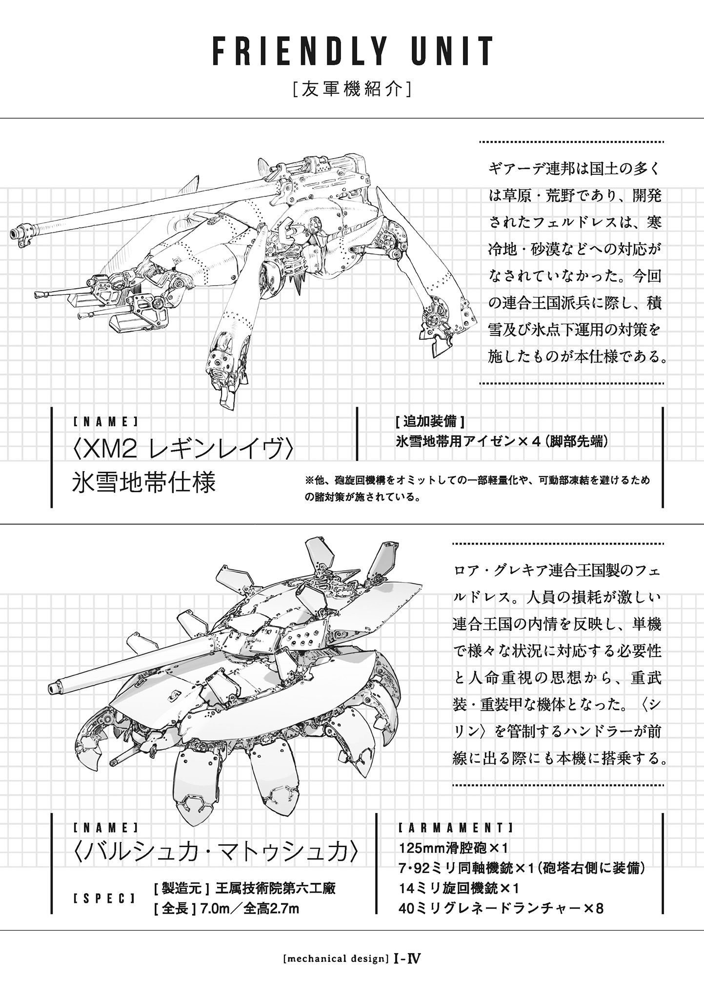
同調を通じレーナが問う。
『ノウゼン大尉。......高機動型の所在は、今日も竜牙大山拠点から動いていませんか？』
「そのようです」
音を奪う雪の静寂をけれどぴんと貫いて通る、戦野の彼方の無機質な機械の絶叫に意識を向けて応じた。
先の作戦で遭遇し、取り逃がした新型〈レギオン〉がこの連合王国の戦場にいるのは、基地に赴任してすぐにわかった。制圧目標である竜牙大山の〈レギオン〉拠点、そのどこかにいるらしいことも。
〝ゼレーネ〟のメッセージを潜ませていたのは高機動型で、そのゼレーネであるかもしれない〈無慈悲な女王〉は竜牙大山拠点の指揮官だ。共にいるのは当然といえば当然だろう。
『やはり、竜牙大山拠点の防衛任務についていると考えるのが妥当なようですね。......竜牙大山攻略作戦最大の障害と、なるでしょうね』
「対応については、予定のとおりで問題ないかと思いますが」
『ええ、でも、念のためもう少し詰めておきましょう。この陽動から帰ったら』
「了解」
一方でセオにはライデンが応じている。
『屑鉄どものが優勢で、主導権を取られてんのはどの国も同じってことだろ。距離と状況と戦力差考えりゃ、前の電磁加速砲型討伐作戦の時よかマシだ』
『拠点内部の地図が全然ない分、斥候は全部〈アルカノスト〉が担当するらしいしね。今後もそういう危ないことは、彼女たちに任せていいって。......でも、』
アンジュはどうやら、肩をすくめたようだ。
『なまじ同い年くらいの女の子の恰好な分、ちょっと複雑よね。雪の中を野戦服だけで、平気な顔して歩いてく姿も見てるわけだけど』
シンたちがここで欺瞞行動をしている裏で、竜牙大山攻略作戦において機動打撃群が辿るべき進撃路の斥候には数機の〈シリン〉たちが出ている。〈アルカノスト〉では見つかるからと、〈シリン〉だけで。
シンの異能では、〈レギオン〉と〈シリン〉の判別はつかない。何度か〈レギオン〉の集団をやり過ごし、支配域に散らばる彼らに紛れた〈シリン〉の位置は、もう聞きとれないが。
......電磁加速砲型を観測した、連合王国の無人機も。
思い至って、目を細めた。
──積載重量は。そうだね、可憐な乙女が備える程度と考えてくれたまえ。
電磁加速砲型対策の、会議の席で。連合王国の王太子は彼らの無人機を指してそう言ったのだという。作戦が終わった後にエルンストから聞いた。さすが王太子殿下は、軍議の席でも雅やかでおいでだと苦笑していた。
そうではなかった。
あの時の無人機もおそらくは〈シリン〉だ。たとえではない。積載重量は少女のそれだというのは単なる事実だ。
フェルドレスに比べて小さい分、探査網にはかかりにくい。けれど携行可能な重量も人間程度だというなら、通信機材と予備のエナジーパックを担いだらもう武器など持ってはいけない。支配域奥の電磁加速砲型の塒、クロイツベック市まで浸透させるためには、攪乱や突破用の機も合わせて相当数の〈シリン〉を投入し、──そのまま全機を使い潰したのだろう。
死人の出ない、人道的な作戦。......戦死者ゼロの人道的な戦場。
〈シリン〉とは死人だ。だからそれも、間違ってはいないのだろうけれど──......。
ずっと黙っていたクレナが言った。
『ていうか......なんか、ちょっと、......気味悪いよね』
五人だけの同調にもかかわらず、〈シリン〉たちに聞きつけられるのを恐れるように。
『陰口みたいでやだけど、......要するに死体が動いてるみたいなものなんでしょ。その......よくわからないし、こわい』
んー、と、セオは首を傾げたようだ。
『そんなに気になる？ 〈レギオン〉と......〈黒羊〉とか〈羊飼い〉とかと、大して変わらないじゃん。人間の脳の複製が、人間っぽい入れ物に入ってるってだけでしょ』
『......それ、だけってレベルじゃないよ......』
『そうかなぁ......』
セオは少し考えるような間を置いた。
『だって、言うほど人間らしくないよ〈シリン〉って。息してないのもそうだし、動きに変なタイムラグあるし、表情のパターン決まってるし、目の焦点合ってないし。多少人間ぽくてよく喋るだけの自走地雷って感じ』
シンにしてみれば全く気にならなかった相違点を、当然のように列挙する。絵を描くのが趣味の──対象の観察が習い性のセオらしい感想、というところか。
クレナが〈シリン〉たちを気味が悪いと思うのも、同じ理由からだろう。
クレナは狙撃手だ。そして狙撃とは、静止目標を狙い撃つだけのものではない。いかな高速の戦車砲弾といえど、距離によっては着弾までコンマ数秒から一秒程度のタイムラグがある。それだけあれば目標も移動する。人間だろうと〈レギオン〉だろうと。
命中させるには移動方向や距離を予測せねばならないし、そのためにはごく些細な予備動作をも見抜く観察眼が必要となる。それを身に着けたクレナには、人と〈シリン〉の違いが無意識に目につくのだろう。
『実際、外側を人型にしてるだけで、中身はほとんどフェルドレスらしいな。無理に人の大きさと形に突っ込んだせいで、稼働時間も出力もずいぶん限られてるとか』
『目と耳以外の感覚はないし、お腹の中も動力系と冷却系だけだそうね。......ご飯も食べない、眠らなくてもいい......なんて、どういう気分なのかちょっと想像もつかないわね』
『その、気分なんてのがほんとにあるのかどうかも怪しいけどねー』
『セーオ』
『えっ何』
きょとんとしながらもセオが黙る。無言のまま、ライデンがこちらを伺うような気配。
けれどシンにも何のことかわからない。一つ瞬き、ややあって、ああ、と思い至った。兄のことか。
戦死して首を奪われ、〈レギオン〉と化した兄、レイ。
そこまで気にすることでもないんだけどな、と漠然と思った。たしかにあの重戦車型は兄の亡霊ではあったけれど、兄の思考や意識をそのまま残していたかはシンにもわからない。手が及ばず〈レギオン〉に連れ去られた、大勢の仲間たちについても。
だから、複製され機械化された脳構造を、人ではなく心なき機械と見做されることにも別段忌避感などは無い。
ただ。
ふ、とシンは思考に沈む。
言うとおり、〈シリン〉とは〈黒羊〉や〈羊飼い〉、〈牧羊犬〉と大差ないものだ。死者の脳構造を再現しただけの、死体とすらいえない機械仕掛けの亡霊。
それでも。
死んだ後に奪われた首でも、その複製でも、シンにとっては兄だった。
それなら、同じく戦死者の脳構造を元とするレルヒェは。〈シリン〉たちは──......。
ところでスピアヘッド戦隊の隊長たちとの知覚同調は、指揮系統の違うヴィーカには常時繫がってはいないが、直接の上官とその幕僚なら話が別だ。
「......聞いておらぬとでも思うておるのかの。好き放題言うておるな、あやつら」
少年たちの雑談を聞きながら、フレデリカが口の端を下げる。
あらかじめ周辺に敵機の展開はないと、シンが確認している偵察行だ。実際の作戦時に通る道でもなし、それでも警戒は怠っていないようだが、雑談に興じる余裕もあるらしい。
レーヴィチ要塞基地、地上区画。基地の発令所がまだ〈ジャガーノート〉とのデータリンクに対応していないため、こちらで指揮を執ることにした〈ヴァナディース〉の中だ。
その指揮官席で、レーナは思い切り肩を落とす。
「もう......。指揮系統が違うとはいえ、いつ連合王国の方が同調してこないとも限らないのに」
〈ヴァナディース〉の傍らには念のためにと出てきた〈キュクロプス〉以下のブリジンガメン戦隊機の他、〈バルシュカ・マトゥシュカ〉が一機佇んでいる。
長砲身の一二五ミリ砲を背負いつつも戦車型や〈ヴァナルガンド〉より背の低い、太く短い十脚の重たげな外観。二挺の重機関銃とずらと並ぶ擲弾発射機で魔物の城のように武装し、冬毛の獣のような蒼白の装甲と白く鈍く光る光学センサが、おとぎ話の毛むくじゃらの怪物を思わせる。
フェルドレスとはいえ、運動性能に主眼を置いた機種ではない。極端に足場の悪い連合王国の戦場で、足を止めて待ち伏せ、一撃で仕留める射撃戦を基本とした設計思想の機体だ。
装甲に描かれたパーソナルマークは、林檎に絡む蛇。
識別名〈ガデューカ〉。指揮統制のため通信と演算能力を増強した、ヴィーカの御料機だ。
客人だけ外に出すわけにもいかんだろうよと共に出てきて、今はレルヒェと、攻略作戦の進軍路を行く斥候の〈シリン〉たちの管制を行っている。
「ですが、少し意外ですね。シンたちは、同じ境遇の〈シリン〉たちには共感を抱くものかと思っていましたが......」
同じ〝無人機の部品〟という境遇、戦闘を強制された立場であるエイティシックスの彼らは。
けれど実際はむしろ真逆。クレナの露骨な嫌悪は極端な部類だが、突き放した様子のセオに、思うこともあるようだが基本的には無関心なライデン。アンジュが多少、同情的なくらいか。
見た限りでは彼ら以外のエイティシックスたちも大抵が、知らない気味の悪い機械を遠巻きにしているような風情だ。
「そなたとて、同じ迫害者であるからと魔女狩りやら民族虐殺の独裁者やらに親近感は抱かぬであろうよ。同じであることは共感の理由にはならぬし、そもそも同じであるのかの。あやつらにとっても。......そなたも初めて〈シリン〉と会うた時には身を引いていたではないか」
レルヒェと引き合わされた時か。
そのときフレデリカは思いきり凍りついていて、そのまま話が終わるまで復旧しなかったことは棚に上げている。レーナはくすりと微笑んだ。
「......そう、ですね」
「であろ。......じゃが、まあ、」
フレデリカは小首を傾げた。
「良い機会ではあったやもしれぬな」
見下ろした先、フレデリカは淡々とホロスクリーンを見上げている。
「〈シリン〉とは何であるのか。戦場で追求するにはいかにも迂遠な問いじゃが、あやつらには重要な問いでもあろうぞ。あれらは人であるか、人でないか。人でないとして、それでは何が人と異なるか。人とはいかなる存在か、何を以て人は人たり得るか。......それはいずれあやつらが、あやつら自身について考える時に重要な問いとなろうからの」
「............」
そういえば、とレーナは思う。
機動打撃群は〈レギオン〉重点の制圧を任とし、他国救援のために貸与される部隊だ。
挺進作戦とは損耗率の高い任務だ。連邦が戦後少しでも有利になるため、他国に恩を売り、同情をかう宣伝部隊であるのも、それはそのとおりかもしれない。
けれど──それと同時に、もしかしたら。
エイティシックスたちを戦わせるだけなら不要な、専用の学校と教育期間。増員された精神衛生班と綿密なカウンセリングプログラム。あえて大きな街の傍に造られた本拠基地。
それらと同様に、他国救援という任務そのものも、連邦なりの配慮の一つなのかもしれない。
戦場しか知らぬエイティシックスに、〈レギオン〉戦争の終わりも見えぬ今のこの情勢で、それでも、少しでも新しい世界を見せるための──......。
「己が何を以て、人たるか。言い換えるならば、そう、何のために己は生きるかというところか。それを問うためには──良い出会いであったやもしれぬな」
前方、〈アルカノスト〉の偵察部隊を率いるレルヒェから、知覚同調で定時連絡が入る。
死人である彼女との同調は、人間を相手にした時には感じられない冷気のようなものが混じる。これも嫌がられる理由だろうかと、気味悪げにクレナや戦隊員が黙り込むのを感じつつシンは応じる。
いくつか報告と連絡を交わし、その終わりにふと、レルヒェが言った。
『ところで、皆さま。一つお聞きしてもよろしいものでしょうか』
「？ ああ」
頷くと、レルヒェは少し居住まいを正したようだ。
『共和国の蛮行については、それがしも聞き及んでおります。皆様方エイティシックスが、共和国崩壊後は連邦に保護されたことも。......それが何故、再び軍に？ 連邦でもたとえば市民権などを見返りに、軍役を課されておられるのですかな』
むっとクレナが即答した。
『強制されて戦ったことなんてないよ』
癇に障ったように語気の強い、きつい声音で。
『連邦にも、共和国の白ブタどもにも、一度も。あたしたちは、自分で選んだの。首を括られる日を待つくらいなら戦って死ぬって。死ぬ時まで戦い抜くって。......馬鹿にしないで』
『............』
レルヒェはその勢いに気圧されたようだ。
『それは、失礼を申し上げました。取るに足りぬ小鳥の囀りと思い、どうかご寛恕いただきたく。......ですが、それなら......』
直後。
脚部の振動センサに感。警告ウィンドウがポップアップ。
やや遅れて金属板を叩き合わせるような重く硬い轟音。戦車型の、一二〇ミリ戦車砲の。
竜牙大山攻略作戦時の進撃路の──斥候の〈シリン〉たちの方角だった。
『見つかったか、迂闊なっ......！ 敵の初期位置は、死神殿に警告をいただいていたというのに！』
支配域と競合区域に蠢く〈レギオン〉の、嘆きの声が一斉に高まる。部隊ごとに固まっているらしい彼らの気配が、プログラムされた虚ろな、だが激烈な殺意に染め上げられる。
そのうちの一つ、ここからはまだ遠い一群の鯨波が意識の隅にひっかかった。
特有の、攻撃行動直前の鬨の声。だが距離が遠い。地平線の向こう、〈レギオン〉支配域内だ。長距離砲兵型？ だが、それにしては──......。
「ッ......！ 各機散開、兵装選択を主砲から副兵装に変更。──大佐！」
気づいて呼びかけた。今、感知しているこれは、長距離砲兵型ではない。
「交戦に入ります。......増援が予想されると、機甲部隊にも警告を！」
†
前線より後方三〇キロ。〈レギオン〉支配域。
森の切れ目の雪深い雪原に、その〈レギオン〉たちは脚部兼用の無数の反動吸収用鋤状部品を打ちこんで構える。
関節を全てロックして己が身を大地に固定し、背負ったレールを展開、伸長。実に九〇メートルにも達する長大なレールを、先端でぶんと風を切って北に──連合王国との前線に向ける。
待機していた斥候型がレール上に登る。七・六二ミリ汎用機関銃を廃し、一四ミリ機銃に換装した対軽装甲仕様。レール基部に取り付けられた、スターティングブロックにも似たシャトルと脚部を接続し、身構えるように身を伏せる。ぱちりと紫色の稲妻が、蛇の這うようにレールを走る。
レールを負うこの〈レギオン〉は、長距離砲兵型や対空砲兵型同様、前線に出てくる兵種ではない。それら砲兵種に比べ数の少ない特殊支援機であるから、人類には未だその姿を観測されてはいない。
ゼレーネ・ビルケンバウム以下、帝立軍事研究所では構想と設計段階まで進んでいた、その支援用〈レギオン〉の開発コードを。
電磁射出機型、という。
†
聞いたレーナは耳を疑った。
「交戦!? ──前にいる偵察部隊を飛び越えて、敵が来るとでも言うのですか!?」
通常なら伏兵を疑うところだが、シンに限ってはそのはずはない。
知覚同調の向こう、ちっ、とヴィーカが舌打ちを零すのが聞こえた。
『おそらくノウゼンが正しいな。別働の機甲部隊が今、突然会敵したそうだ。......どういう絡繰りだ』
聞いていたマルセルがあっと息を吞んだ。
「多分、射出機です！ 斥候型とか自走地雷とかの軽い奴が降ってくることがあります！」
「降って......!? あ......！」
思い至ってレーナは歯嚙みする。連邦の戦闘記録で、見たことがある。ごく稀に報告される軽量級〈レギオン〉の空挺と、それを行っていると類推される未確認のカタパルト型〈レギオン〉、電磁射出機型。
カタパルトは主に航空母艦に付属し、足りない滑走路の長さを補って戦闘機を離陸速度に到達させるための装置だ。蒸気や電磁力でシャトルを高速射出し、それに接続した航空機を船外に撃ち出す。手段としては乱暴だが、爆装した戦闘機を数秒で時速三〇〇キロ近くまで加速させる途轍もない出力を誇る装置でもある。それよりは軽い斥候型や更に軽量の自走地雷を撃ちだすなど、造作もあるまい。
マルセルは苦く顔を歪めている。
「特士校の偵察演習で、同じ奇襲を喰らったことがあります。ノウゼン大尉とユージンが......そのとき大尉が組んでた同期が一緒で。めちゃくちゃ被害が出ました。軽量級とはいえいきなり囲まれるから、遭遇すると危険なんです」
†
ごう、と人の耳には触れぬ雄たけびを上げ。
長い長い一対の槍を負う電磁射出機型たちが、その槍のような電磁カタパルトを一斉に稼働させる。
弾き出されたシャトルは十トン強の斥候型を、一個小隊分の自走地雷をおさめた投擲用カプセルを牽引し、九〇メートルのレールを刹那に駆け抜ける。レールの末端、最高速度に達すると同時にロックを解除。投擲された軽量級〈レギオン〉は上昇しながら増設のロケットブースターに点火。炎の尾を引いて更に高空へと上昇していく。
瞬く間に必要な高度に到達。燃焼しおえたブースターが自動でパージ。重力に引かれて墜ちるよりも先に、今度は折り畳んだ使い捨ての透明な翼が展開する。
あらゆる物に支配を及ぼす、星の引力が彼らを捕らえる。広げた翼が落下の風を摑み、大気を切り裂いて滑空に移る。
凍てつく天頂から、雪の地上へ。〈レギオン〉たちは入力された座標を目指し、まっしぐらに降下を開始した。
†
地上近くでグライダーを切り離した〈レギオン〉が、脚部を広げて着地する。斥候型は六脚で、切り離しと同時に弾けたカプセルから溢れる自走地雷は、獣のように四肢全てで。
雪煙と地響きが氷と雪の樹間に広がる。索敵を担当する斥候型が、その高感度の複合センサをきろりと周囲に向け──。
直後。
「──撃て」
シンの号令と同時、伏せていた〈ジャガーノート〉の一群が立ち上がって格闘アームの機銃を掃射。
斥候型も自走地雷も対人戦闘用の機種だ。カタパルトで投擲可能な程度には装甲は軽く、ゆえに薄い。頑丈な車両のエンジンをもずたずたに引き裂く重機関銃弾の嵐になす術もなく、会敵の報さえ送れぬままに蜂の巣になって頽れる。
亡霊たちの叫喚が全て絶え果てるのを確認し、シンは次の〈レギオン〉の降下予測位置に意識を向けた。
放物線を描く長距離砲兵型の砲撃とは異なり、滑空中の姿勢制御で着地地点を変更可能な空挺降下は落下位置が読みにくいが、この森の戦場なら話は別だ。着陸にはある程度の空間がいる。数百年もの樹齢を持つだろう針葉樹が鬱蒼と集まるこの森に、そんな場所は決して多くはない。滑空の軌跡を追えるシンなら、目指す場所の予測も容易だ。
「──リト、方位三三〇。ミチヒ、戦隊正面。......着地次第撃て」
『りょーかい』
『はいです！』
森の木々の壁を越え、重機関銃の嚙みつくような咆哮が轟く。──ただ、数が多い。迎撃している間にも別の嘆きが、樹々の合間に増えていく。一部を囮にそれ以外を進撃させる、〈レギオン〉特有の非情な計算。
そろそろ手が、回らなくなるか。
見透かしたように知覚同調が起動して、ヴィーカが言う。
越権行為ではあるが、気にする者はレーナを含めて誰もいない。
『ノウゼン。カタパルトはこちらで潰す。卿らは落着した奴らに集中しろ』
声の向こう、かすかに砲声が連続する。複数の、榴弾砲の射撃音。要塞基地の固定砲だろう。
カタパルトらしき一群の声が絶える。榴弾に薙ぎ払われたと察して、シンは周囲の敵機に意識を戻した。......なるほど、練度が高い。さすがに十年、この山脈で〈レギオン〉の侵攻を食い止めてきた軍だ。
「──了解」
『──砲術班より〈ガデューカ〉。制圧完了にございます』
「そのまま待機。要請があり次第援護してやれ」
『御意に』
基地の砲兵部隊長からの報告に頷き、ヴィーカは彼の近衛に意識を向ける。
「レルヒェ」
『は』
知覚同調、と共和国や連邦が呼ぶ特殊通信を通じ、打てば響くように応答は返る。行軍中は彼女に指揮を任せていた〈シリン〉たちが、次々に彼の掌握下に切り替わる。
通常、ハンドラーたちが一度に管制可能な〈シリン〉の数は、一個分隊四機から中隊六〇機ほど。それに対してヴィーカは連合王国軍全体でも誰一人及ばぬ、一個大隊二百機余りもの同時管制を可能としている。
「見せてやれ」
「お任せを、我が主」
彼女の〈アルカノスト〉──識別名〈チャイカ〉のコクピットで、レルヒェは応じる。瞬かぬ翠の双眸に映りこむ、モノクロの光学スクリーンの淡い光。
人間のそれと見紛うほどの再現性にはさすがのヴィーカも苦心したという、その人造の眼球。
機能と仕組みは、けれど実のところ、フェルドレスの光学センサと変わらない。主の声を聞く耳も。......味覚や嗅覚、温感や痛覚に至っては再現さえされていない。
自分たちは所詮は、人の形を真似ているだけの機械仕掛けだ。
人間ではない。
「〈シリン〉一番機、レルヒェ──推して参ります」
迎撃を免れ、合流を果たした〈レギオン〉たちが湧き出るように暗い森から這い出した直後。
『──挟撃します。......こちらを撃たぬように！』
〈アルカノスト〉が樹々の狭間から鋭く飛び出し、同時にレルヒェの警告が無線と知覚同調の双方で響き渡った。
それにもかかわらず一瞬シンが構えてしまったのは、〈アルカノスト〉から聞こえる亡霊たちの嘆きのためだ。麻酔で意識を奪った上で摘出したという戦死者の脳の、その最期の声。言葉ではない静かな声にのせて、還りたいと切々と嘆き続ける亡霊たちの。
やはりやりにくいな、と一つ、舌打ちを零した。判別がつかない。特にこうして、敵味方が入り乱れる乱戦では。
氷の戦場に特化した〈アルカノスト〉たちは、凍りついた足場をものともしない機敏さで散開、三方から〈レギオン〉部隊最後列に接近する。
〈バルシュカ・マトゥシュカ〉と同じ五対十脚の、けれど比較にもならぬほど細く長い節足状の脚部。装甲の存在も疑わしいほど小さな胴部コクピットも相まって、幽霊蜘蛛を思わせる外観だ。雪の影に溶け込む蒼白の塗装と、氷像めいたその佇まいに不釣り合いに巨大な、一〇五ミリ口径・短砲身のガンランチャー。
がぎぃん、と鋼鉄の爪が氷を貫く独特の足音を響かせ、小刻みな跳躍で樹々の狭間を縫い、あるいは太い幹を駆け登って樹上を疾走する。〈ジャガーノート〉よりも機体重量は軽いらしい。高機動戦闘に主眼を置いた、〈レギンレイヴ〉に近い設計思想。
後方から、更には樹々を伝っての上方から。氷の蜘蛛たちは飢えた冬の獣のように、振り返りかけた〈レギオン〉たちに襲いかかった。
空挺部隊全機を射出しきる前に電磁射出機型を砲撃で潰してしまえば、あとは戦闘能力の比較的低い斥候型と自走地雷だ。数が揃っていないのであれば歴戦のエイティシックスたちがそうそう後れを取る相手ではない。
一方で別働の機甲部隊は〈レギオン〉空挺部隊に加え、援護に群がってきた戦車型主体の〈レギオン〉機甲部隊を相手に、やや苦戦しているらしい。
「──ノウゼン大尉。別働隊が抜かれました。二個中隊規模。こちらは近接猟兵型、戦車型が含まれる通常編成です。注意を」
『了解、大佐。迎撃に出ます。......クレナ、援護を。ライデン、こっちは任せる』
『レルヒェ、二個小隊を連れて追従しろ。学ばせてもらえ』
『御意に』
〈ヴァナディース〉のメインスクリーンの中、〈ジャガーノート〉と〈アルカノスト〉の混成部隊が移動を開始。ほどなく〈レギオン〉二個中隊との戦闘が始まる。〈レギオン〉の進路側面に先回りして伏せ、あえて先頭を通過させてから横腹に食らいついて食い破るシンの常套戦術。
同じ戦況を〈バルシュカ・マトゥシュカ〉のコクピットで見ているのだろう。知覚同調越しにヴィーカが言った。
『......驚いたな。汎用仕様機、それも有人機がここまでやるか』
それは明らかな感嘆を帯びた声音で、レーナは声を出さずにちょっと笑った。雪原戦への対応を研究班と整備クルーはよくやってくれたし、エイティシックスたちの技量に感心されるのも、自分のことではないのに嬉しい。
『〈アルカノスト〉の──無人機の機動戦闘に比肩する操縦士は、連合王国全体でも滅多にいないぞ。それも急造の雪原仕様で。......余裕があれば〈シリン〉の教導を頼みたいところだな。あれらは壊れても代えが利く分、技量を磨くべきところを無茶で乗り切る傾向がある』
「ありがとうございます。でもこちらも驚きました。......偵察部隊の四十機に斥候の八機、まさかお一人で操作しているなんて──」
『細かい個々の判断は、ある程度〈シリン〉の判断だ。撃破の優先順や進軍経路はこちらで指示してやらねばならんが。......卿が八六区でエイティシックスたちの指揮を執っていたより、多少細かい指示を出してやるくらいだ』
「そのヴィーカの目から見て、〈レギンレイヴ〉に不満や不安な点はありますが」
ヴィーカは数秒ほど考えた。
『可能ならもう少し、雪原装備の微調整はしておきたいところかな。攻略作戦までまだ数日あるし、時間を作って調整させるか。......何なら、エイティシックスたちに〈アルカノスト〉を使わせてみるか？ その上で彼らの意見も聞いた方がいいと思うが』
意外な提案にレーナは瞬く。
「乗れるのですか？ その......人が？」
『何のために〈シリン〉たちが人の形をしていると思う。互換性がなければ、搭乗者か機体が足りなくなった時に困るだろう。操縦士が戦場で乗機を喪失した場合に、近くにいる〈シリン〉が乗機を渡すことも。......我が連合王国の戦場は、生身で長時間過ごすには過酷にすぎる』
それは。
大陸最後の専制君主国家の支配者の一人、情のない蛇が口にするにはいささか違和感のある、......純粋に人命を惜しむ言葉だった。
『そもそも戦場自体、人がいるべき場所じゃないんだ。可能ならば〈シリン〉たちで操縦士だけでも置き換えたいところだが、ハンドラーとなるには適性もあるし、......兵どもには兵どもなりの矜持と嫌悪がある。気味の悪い機械人形どもに王国の命運を預けたくないと、言われてしまえばそれはどうしようもない』
哀しみ、悼むのとは違うけれど、......牧場主が家畜の損失を惜しむのとも異なるような。
「......ヴィーカ。一つ、聞いてもいいですか？」
『うん？』
「レルヒェ、ですが。どうして彼女は──彼女だけは、人の姿そのままなのですか......？」
人と見紛う金の髪も、存在しない額の疑似神経結晶も。
護衛の役も兼ねるとはいえ、他の〈シリン〉のように平時は電源を切って格納したりせず、王宮や私室でまで連れ歩いている理由も。
『──。ああ......』
初めて、ヴィーカは曖昧に言葉を濁した。
『......すまないが。答えなくていいか......？』
機動力の高い機甲兵器同士の激突だ。正面からの撃ち合いを互いに避ける機甲戦は、必然的に敵味方が入り乱れる乱戦の様相を呈する。
足場の悪い雪の戦場は、近接白兵戦闘に特化したシンの〈アンダーテイカー〉にはやや分が悪い。近接戦闘は避けて索敵と囮役に徹し、仲間たちの構築する包囲網への敵機の釣り出しを担当する。榴散弾と機銃掃射、狙撃と砲撃の波状攻撃が氷の足場を踏み砕いて驀進する戦車型を翻弄して撃破し、雪の森林でなお縦横無尽の高速機動を見せる近接猟兵型を追い詰めて叩きのめす。
その傍らで〈アルカノスト〉たちも四機分隊で〈レギオン〉に対峙し、基本どおりの分断と各個撃破を繰り返している。
やはり〈レギンレイヴ〉と同じ軽装甲の高機動戦仕様、それも〈アンダーテイカー〉に近い近接戦闘主眼の機種らしい。成形炸薬弾と対戦車ミサイルを同じ砲身から射出可能な短砲身の一〇五ミリガンランチャーを用い、至近距離からの砲撃で次々と〈レギオン〉を屠っている。
ただ。
『──損耗前提だな』
ぽつりとライデンが呟いた。
機銃で脚部を吹き飛ばされながら数機の〈アルカノスト〉が戦車型に取りつき、ハゲタカの群が獣を生きながら引き裂くように一斉射を放つ。
援護に向かう近接猟兵型群を足止めするために、たった一機がその進路に立ちはだかる。
樹上まで追撃してきた近接猟兵型には自ら縋りついて十数メートルもともに自由落下し、自走地雷の群を引きつけ、十体以上にしがみつかれた一機が最後に手近の戦車型に吶喊して諸共に吹き飛ぶ。
エイティシックスや連邦の〈ヴァナルガンド〉部隊のように、複数機で連携して〈レギオン〉に対峙するのとも違う。最初から囮や足止め、捨て身の突撃に隊の一部を使い潰す前提の作戦で行動だ。それについてどの〈シリン〉も疑問も恐怖も感じていない、そういう果断さで躊躇いのなさだ。
消耗品であることを、受け入れたものの。
『こいつぁちっと、運用考えた方がいいかもな。この調子で削れるんじゃ、攻略作戦の行きはともかく帰りがヤバくなる』
「ああ......」
応じかけ、気づいて言葉を切った。左前方、きついカーヴを描いて樹々の向こうに消える獣道の先。〈アルカノスト〉たちとやりあっていた〈レギオン〉の一部がその防御を突破するのをその異能が捉える。鋭く向けた視線の先、二輌の戦車型が獣道を辿って姿を現す。
戦車型のセンサ能力は低い。曲り道のすぐ先に〈アンダーテイカー〉がいるとは検知できていなかったか、別の方向を警戒していた砲口が一瞬の空白の後に旋回。けれど照準が向く頃には、最大戦速で吶喊した〈アンダーテイカー〉はその至近にまで接近している。
倒木を足場に低く鋭く飛び出し、一輌目の側面にすれ違いざまの斬撃。その後脚を踏み台に二輌目の砲撃を跳躍して避け、砲塔上面に意趣返しのように八八ミリ砲弾を叩きこむ。
二輌の戦車型が揃って頽れるのと、雪煙を立てて〈アンダーテイカー〉が着地するのがほぼ同時。
慌てた様子で追い縋ってきた〈アルカノスト〉が、呆然と立ち尽くすのが光学スクリーンに映った。
描かれたパーソナルマークは、白い海鳥。〈チャイカ〉──レルヒェの乗機だ。
『......なんと。さすがは八六区の死神殿ですな......。よもや人間が、単騎で戦車型を圧倒するとは』
「そっちに残った〈レギオン〉は？」
『え？ ......ああ、隊の者どもが片づけております。申し訳ありませぬ。我らの不注意で、斯様にお手を煩わせまして』
言いながら〈チャイカ〉の青白い光学センサは、きょろきょろと二輌の戦車型の残骸を見回している。
どちらもが完全に機能停止していることを確認してから、その青白い光が今度は〈アンダーテイカー〉を見回した。
『よく、平気ですな。人の手にはいかにも余る、そのような悍馬を駆って』
「慣れてる」
淡々とシンは応じる。
嫌でも慣れねば死ぬのが八六区の戦闘だったし、慣れられない者は──体がついてこられない者は、戦えずに死んでいった。
『慣れて......なるほど。それでは八六区とは、さぞ過酷な戦場だったのでしょうな......』
息を吐く機能もないのに嘆息するように言う。〈チャイカ〉の光学センサが再び、〈レギオン〉たちの残骸に向いた。
『......死神殿。もし、』
小鳥の囀るようなその声は、その時。
あくまで何でもないことのように、訥々と問うた。
『もし、人のその身を捨てればより高い戦闘性能が得られるとしたら。死神殿は、捨てますか？ 戦い抜くために』
一瞬、何を言われたのかわからなかった。
そして理解した瞬間、さしものシンも戦慄を覚えた。
「何を──」
『循環器系に補助拍動器官を増設し、下肢を収縮力の強い人工筋肉に変えれば、ブラックアウトを防げる。血液を人造培養のそれに入れ替えれば、酸素の運搬効率が向上する。そもそも衝撃に弱い内臓など、現代の高機動戦闘には邪魔なだけ。......全て、連合王国では実験段階とはいえ可能な技術ではあります。脳の脆弱さだけは如何ともしがたいですが、我々〈シリン〉はそれさえも克服している。──得られるならば欲しいですか？ その力が、戦い抜くために』
「............」
たしかに、それは。
〈レギオン〉と戦うためには──彼らと戦い、勝つためだけなら、有用な手立てだろう。
人類を〈レギオン〉が圧倒しているのは、彼らが戦うためだけに造られた存在であるからだ。戦闘には無駄な、あるいは不利な機能ばかり有している人間が、存在全てで戦闘に特化した〈レギオン〉に比肩できる道理はない。
だからそれら全てを廃してしまえば。戦闘には不要な臓器を、戦闘には向かない血と肉を全て捨て去り、より効率のよい機械に置き換えれば、たしかに勝率は上がるだろう。
けれど──それでも。
何かを守るでもない、手に入れるでもない。ただ戦い抜くことを誇りとした、エイティシックスのシンでさえも。
生身の体を捨ててまで。そうまでして戦い抜きたいとは──思えなかった。
答えられないシンに、レルヒェは笑った。
ほんの少し、嘲弄の混じった笑みだった。
同時に淡く、安堵の混じった。
『──戯言です、お忘れください』
「お前......」
機械仕掛けの少女は薄く、淡くわらった。
『敵が来ますぞ、死神殿。......お忘れください』
合流した〈ジャガーノート〉と〈アルカノスト〉はほどなく〈レギオン〉空挺部隊の掃討戦に移り、やや遅れて連合王国軍機甲部隊も〈レギオン〉機甲部隊の撃退に成功する。
その、雪と氷の上の戦闘の狭間。
『──死に狂いの化物鳥が』
プロセッサーが、連合王国軍の操縦士が奇しくも零した同じ言葉を、聞く者はいない。
散る粉雪のようにささやかな亡霊の嘆きに反射的に目を向けると、そこに頽れていたのは〈レギオン〉ではなく〈アルカノスト〉の残骸だった。
本当にやりにくい、と、トリガから指を放してシンはため息をつく。〈レギオン〉と〈シリン〉の嘆きは、元が同じく死者であるせいでシンには判別がつかない。無論、〈ジャガーノート〉のシステムは〈アルカノスト〉を僚機と判定してくれるが、こんな風に半壊した機体ではそれも難しい。
嘆きの声が聞こえる以上、コクピット内の〈シリン〉はまだ死んではいまい。
引っぱり出してやる余裕はあるか。
周囲にすぐに接近してくるような〈レギオン〉がいないことを確認し、シンは〈アンダーテイカー〉のキャノピを開けた。
〈アルカノスト〉のキャノピを開けるのには少し手間取ったが、それはキャノピが正面ではなく、背面装甲が跳ね上がる形式だったせいだ。正面防御を考えれば──乗員の保護を第一に考えればこうあるべきなのだろうが、シンの感覚では正直ぞっとしない設計だ。
緊急用の共通パスコードを打ちこむと、圧縮空気の抜ける音とともにキャノピが跳ね上がる。狭苦しいコクピットの中、上体を捩じってこちらにアサルトライフル──連合王国軍制式の七・九二ミリ口径──を向けていた〈シリン〉が、ばつが悪そうに銃口を下ろした。
少女にしては高い背に、過ぎるほどに赤い髪。識別名はたしか、リュドミラと言ったか。
「失礼しました、ノウゼン大尉。自走地雷に後ろを取られたかと、思ったものですから」
そう、背面装甲をキャノピとした場合、万一敵にこじ開けられれば乗員は背後をとられる形となる。シートのせいで射角も限られるから、動きの速い〈レギオン〉にはまず対応できない。
「当然の警戒だ、気にしなくていい。......動けるか？」
差し出した手に、リュドミラはきょとんとなってから苦笑した。
「わたくしたち〈シリン〉は救助不要の歯車細工と、殿下からお聞き及びでしょうに」
「連邦と手を組む程度には、余裕のない戦況じゃないのか。......少なくとも、壊れてもいないものまで廃棄して作り直してる場合じゃないんだろ」
答えずリュドミラは苦笑を深める。
預けられた華奢な手を引いて、半壊した〈アルカノスト〉から引きずり出した。
なるほど重い。
そして触れればそうとわかる、冷たい掌だった。
生きてはいないものの、無機質な温度。
彼女の元は、若い男性だったらしい。眼前の少女のそれとはまるで違う低音が、言葉なき人声で嘆き続けている。
還りたい、と。
〈レギオン〉と、他の数多の〈シリン〉たちと。......今はもういない兄の亡霊や、未だ戦場にわずかに残る、戦友たちの亡霊と同じように。
「......それとも」
つい、問いは口をついて出た。
シン自身、思ってもみない問いだった。
「助けられたくなかったのか？ 本当は」
このまま放置され、壊れた方が。
あるべき死を迎えた方がよかったのか──と。
リュドミラは一瞬目を見開いてから破顔する。
「まさか。この身は連合王国の楯にして剣」
心底、誇らしげな声音で、表情だった。
祖国を持たぬエイティシックスであるシンは無論のこと、連邦で会った何人かの軍人たちとも共通しない言葉で感情だった。
道具として生まれ、それを受け入れるのではなくむしろ誇るものの。
人でないものの、誇り。
「毀たれるならその時は、我らが祖国の敵とともに。わたくしたちはそのために、死してなおも戦場に残るを望んだのですもの」
......彼女の中に閉じ込められた亡霊は、違う願いで嘆いているけれど。
「──大方、片付いたみたいね。そろそろ撤退するところかしら」
敵影の失せた戦場を見回し、アンジュは言った。折り重なる樹々が視界を塞ぐ、雪と氷の戦場。左手側の樹林の向こうは大きな谷川のようで、一帯の水が流れ込むのか、轟々と唸る流水の響きが岩壁に反響している。かなりの高さのある断崖のようだ。
あくまで欺瞞、陽動としての威力偵察だ。敵部隊と接触し、戦闘になった時点で目的は果たしていると言える。電磁射出機型の配備があると知れたのも収穫だろう。
『ノウゼン大尉の索敵では、この辺りに残敵は？』
十メートルほどの距離を置いて、〈サギタリウス〉を進めるダスティンが問う。小隊の中では最も練度の低い共和国人の彼と、アンジュは二人班を組んで行動している。
ともあれアンジュは肩をすくめる。
シンの異能が捉えた〈レギオン〉の位置をそのまま共有するのは、シンの近くでしか意味をなさない。知覚同調で届く亡霊の位置は、シンを基準としたものでしかないからだ。それに加えて。
「新入りの子には一度は言うことなんだけど。......あんまりシン君を頼りにしすぎない方がいいわよ。シン君の異能はたしかに、怖いくらい精確だけど......だからっていつも、全員に警告を出せるわけじゃないんだから」
もし、いつかシンを失うような事態に陥った時に。......頼りきりではそれ以降、戦えなくなってしまうのだから。
かつて、八六区ではそこまで続けた言葉を、アンジュは今は吞み込んだ。あの時は必ず、従軍から五年以内に死ぬはずだった。それが決まっていたからそう言っていた。
今は、そうではない。
それなら言わなくていいし、言いたくない。
あの寡黙な同胞の少年が死ぬところなど想像したくもないし──割としょっちゅう、それに近い事態に陥っているのだから尚更に──、口にした言葉は、真実になる力を秘めているというから。
カイエから聞いた言葉だ。
八六区第一戦区、あの最終処分場で、首を奪われて〈黒羊〉と化した仲間。
ダスティンはその言葉を、じっくりと吟味する様子で黙考してから頷く。
『......そうだな。大尉も、頼られるばかりじゃきついだろうし』
アンジュはちょっと目を瞠ってから微笑む。
ダスティンは元々、共和国の建国祭で演説を任されるほど優秀な学生だったという。実際かなり飲み込みも早いし、いつも教えた以上のことを自分なりに考えようとしている。
それでも共和国人のダスティンが、エイティシックスのシンを気遣うのは意外だった。
「そうね。あんまり──無理させないであげて。......と」
会話の最中も途切れさせてはいなかった周辺への警戒に、何かが引っかかった。視界の端、樹々の向こう。断崖の下に降りていく何か。......森の獣か、それとも。
『俺が』
「お願い。......慎重にね」
追って〈サギタリウス〉が歩を進める。銃撃を警戒して身を伏せ、そろそろと覗きこんだ。
『─────何だ......？』
「少尉？ 報告は正確に......」
『〈レギオン〉じゃない。それらしい奴はいない。ただ......』
データリンクを通じ、〈サギタリウス〉の光学センサの映像が転送される。ダスティンが凝視しているために、自動でズームされた画像。
空恐ろしいほどに高低差のある断崖だ。はるか下を逆巻きながら河が流れ、太古の昔に氷河が削ったぎざぎざとした岩壁が左右に傲然と聳える。
その、岩壁のそこここに。
「砲弾......!?」
一二〇ミリ戦車砲弾か、それとも一五五ミリのそれか。丸い薬莢底部だけを辛うじて覗かせた砲弾が、間隔を置いて一列に、ずらりと埋め込まれている。
薬莢が残っている以上、試射か何かで撃ち込まれた砲弾ではない。誰かが──おそらくは〈レギオン〉が、何らかの目的を以て埋め込んだものだ。
その信管部分を繫ぐ、紐状の物体に気づいた瞬間、アンジュは総毛立った。これは──......。
「イェーガー少尉、下がって！ 大佐、シン君、気をつけて！」
知覚同調を繫ぎ直すのももどかしく叫んだ。〈サギタリウス〉の視界に、何かが映る。複雑に削れた岩肌の隙間から這い出た自走地雷が〈ジャガーノート〉を認識し、紐に──火薬を連ねた導火線に手を伸ばす。高性能爆薬の胴部に、抱え込んだ。
「退路に、罠が──......！」
かっと閃光と衝撃波を放って自走地雷が自爆。導火線を伝った火が砲弾の信管に達し、引火して次々と誘爆する。
二人の立つ一帯が──針葉樹の森と凍りついた大地が、一瞬で崩落した。
†
どうやら大分、流されたらしい。
倒木や土砂が堆積した岸にどうにか這い上がり、キャノピを開けたせいで半分浸水した〈ジャガーノート〉を見やってアンジュはため息をつく。
「......怪我はない？ 少尉」
「なんとか」
〈レギンレイヴ〉だったのは幸いだった。設計と組立てがいい加減で、キャノピと本体との間に隙間が空いていた──防水性もへったくれもなかった共和国のあのアルミの棺桶だったら、今頃溺死するか凍死していただろう。
それでも這い出す間に少し濡れた。気を失っていた間に日は沈み、雪は止んだがより冷え込んだ大気の中、今にも凍りそうな髪を払って見回した。どこか、どこでもいいから少しでも風の凌げるところは。
切り立った断崖に囲まれた谷底の川辺の、崖に埋もれるように丸木づくりの小屋があって、とりあえずその中に退避する。狩り小屋か何かだろう。冬の連合王国の山野で、狩りの数日を過ごすための設備。
室内は粗末だったがしっかりとした造りで、一間だけの部屋の奥の、大きな暖炉も使えそうだ。運がいい。
「ここで救助を？」
「そうするしかないでしょう。〈ジャガーノート〉はエネルギー切れだし、知覚同調も今は使えないし」
気温は零下で、レイドデバイスは金属製だ。危うく凍傷を負うところだった。
「ここなら雪も風も凌げるし、凍え死ぬことはないと思うわ。......まあ」
思いついて嘆息した。コクピットには銃床折り畳み式のアサルトライフルがあって、それはホルスターの拳銃ともども、もってきているけれど。
「自走地雷ならともかく。他の〈レギオン〉が寄ってきたら、ちょっと厳しいわね」
「──遭難」
「と、いうところだな」
夏とはいえ雪山での、少人数での孤立である。シンは無論のこと、普段不遜なまでの余裕を崩さないヴィーカの表情もさすがに硬い。
レーヴィチ要塞基地の会議室。アンジュとダスティン、二人が崖から転落したのは認識しつつも、補給の都合と支配域奥の〈レギオン〉の攻撃発起の兆候から撤退せざるを得なかった、その戻ってくるなりの緊急会議である。
ライデンもセオもクレナも機甲搭乗服のまま、最低限の補給が終わって方針が決まり次第捜索に出る構えだ。不安げな面持ちのレーナと険しい顔のヴィーカが、地形から捜索範囲を検討している。
転落した先は深い谷で〈ジャガーノート〉の信号は拾えず、知覚同調も繫がらない。二人の生死すら、確認できないのが現状だ。
ふむ、と尊大に鼻を鳴らしてフレデリカが立ち上がる。
「そなたら全員、忘れておるようであるが。こういう時こそ、わらわの出番であろ」
あっとレーナが声を上げた。
「ローゼンフォルト補佐官の異能なら、二人の居場所がわかりますね」
「うむ。任せておくがよいわミリーゼ。迷子の姉様とダスティンめなど、たちどころに見つけてくれようぞ」
ふふん、と平らな胸を精一杯張って、フレデリカは〝目〟を開いた──。
が。
「そら、見つけたぞ！ ここは............。..............................」
沈黙が落ちた。
とても長い、沈黙が落ちた。
「..............................ここはどこじゃ!?」
息を詰めて続く言葉を待っていたレーナが、脱力してすっ転びそうになった。
嘆息してシンは問う。そうだろうとは思ったが。
「フレデリカ。とりあえず周りに何が見える？」
「ええと......」
フレデリカは懸命に周囲を見回しているようだ。紅い瞳を仄かに光らせたまま、小さな頭がきょろきょろ動く。
「......雪があるのじゃ！ あと山も！」
それはそうだ。なにしろ雪山なのだから。
「目標になりそうな目立つものは？」
「ええと、ええと、二人は古い物置小屋におって............右手の方に大きな樹があるのじゃ！」
それはそうだ以下略。
物置小屋とやらの方も、多分狩小屋か何かだろうがそんなものは割とあちこちにあるので、大した手掛かりにはならない。
「星は見えるか？」
「見えておるが、その、見方がわからぬ......」
それもそうか。
「北辰星......も、わかるわけないか。説明したら探せそうか？」
「ええと、その......星が多すぎて、どれがどれやら......」
なるほど全然ダメだ。
まあそうだろうなと、雪の山野での戦闘経験も潜伏経験も、孤立してそのまま遭難しかけた経験もあるシンは思う。自分がいる場所の特定が、まるでできないのだ。雪山というものは。
ちなみにヴィーカは先程からテーブルに突っ伏してひくひく痙攣している。
どうやら、笑いすぎて声も出ないらしい。
「了解。なら、地道に探すしかないな」
「すまぬ......」
しょんぼりとフレデリカは肩を落とす。
その小さな頭を軽くぽふぽふと叩いたのは、シンは完全に無意識だ。
「二人が無事なのと、星が見える......晴れてることがわかっただけでも充分だ。向こうが吹雪いてるようじゃ、探しようがない」
「......うむ」
ようやく笑いの発作を収めてヴィーカも立ち上がる。それでもまだ、目尻に涙が滲んでいたりする。
「そうは言っても、晴れてる夜の方が冷え込む。急がないとまずいだろう。......こちらも人手を出す。なるべく早く、見つけてやらんと」
コクピットから持ち出したサバイバルキットの防水マッチと固形燃料、小屋の隅に残っていた薪で暖炉に火を入れると、とりあえずするべきことはなくなった。
濡れてしまった搭乗服の上着は脱ぎ、代わりにこれもサバイバルキットのブランケットを羽織って、アンジュは未だ火の回りきらない暖炉を見つめる。
戦場で孤立するのも遭難しかけるのも、八六区ではしょっちゅうだった。だから急いで避難先は探したけれど、さして焦っても不安にも思っていない。
ただ。
きゅ、とアンジュは唇を引き結ぶ。
あの頃は......隣にいつも、最初の戦隊から一緒だったもう一人がいた。
今はいない。
どこにも。
「......エマ少尉？」
「いえ。......ああ、もうアンジュでいいわよ。同い年でしょ、たしか」
見返した先では、ダスティンも同じように上着は脱いでブランケットを羽織っている。揺らめく焰が映りこむ、白銀の瞳。
白系種特有の、銀色の色素の目。
その色彩を、持ってさえいれば。
自分も母も強制収容所へ追われずにすんだのだと、彼やレーナを見ていると時折、考えてしまう。
白ブタとして壁の中で生きたかったわけではない。
八六区で会った仲間たちは、いずれもかけがえのないものだ。
それでも強制収容所と八六区に追い払われ、閉じ込められてよかったかと言えば、......決してよくなんてなかった。
月白種にしか見えない外見で、ほとんど月白種と見分けのつかない娘をどうにか守ろうとして、移された病で襤褸切れのように死んだ母。
父親だったはずの男に言われた言葉。
今でも消えないあの言葉。
「聞いてもいいかしら」
問いは、無意識に滑り出た。
「どうして、この部隊に志願を？」
白銀の目がちらりと見返す。
「理由は、話したろ。共和国の汚名を、雪がないとって」
「それだけが理由とは思えないわ」
戦わなくていい理由を、持っていたくせに。
「............」
ダスティンは火を見つめたまま黙り込む。
アンジュが質問を忘れかけたころに、ぽつりと言った。
「俺は、白銀種だけど、帝国生まれだ」
は、とアンジュは目を見開く。
ダスティンは暖炉の火だけを見つめて、こちらを見ない。
「覚えてもいないくらい小さい頃に親と一緒に共和国に移住して、そのまま市民権取得したから、帝国人って意識は欠片もないけど。けど、元々は──帝国人だ」
「俺がいた街はそういう、移民一世が集まる新しい街で。初等学校でも俺一人だけが白系種ってくらいで。それで......〈レギオン〉戦争が始まって、俺と俺の家だけ、強制収容の対象じゃなかった」
言いながらダスティンは思い出す。
やたら外が騒々しいなと。絶対に外を見ちゃ駄目よと、外を覗いた後蒼い顔で母親が言った夜のその翌日。
いつものとおり学校に行ってみたら、......生徒は自分一人しかいなかった。
「おかしいだろ。そんなの。たとえばノウゼン大尉は親が帝国生まれってだけで、大尉本人は共和国生まれだろ。帝国の系譜なのは俺と同じで、共和国で生まれたのは俺と違ってて、......なのに大尉は収容所送りにされて、俺は送られなかった。逆のはずだろ。敵国の系譜だって建前なんだから。けどそうじゃなかった。学校の奴らもみんな同じだ。俺だけ残るのはおかしいのに、俺一人だけ、壁の中に逃げられた」
ダスティンが。彼の一家が、白系種だったから。
「だから、他人事だとは思えなくて。止めないとってずっと思ってて。......遅すぎたし、結局何もできなかったけどな」
──いつまで続けるんだ！ こんなことを！
建国祭の演説で、そう叫んだ日の夜。集まった市民たちから何の反応も、得られなかった祭典の夜。共和国は滅亡した。〈レギオン〉に攻め込まれて。
「............そう」
膝に顔をうずめるようにして、アンジュはそれだけ応じた。それくらいしか、言えることを思いつかなかったのだとダスティンにもわかった。
再び沈黙が、戦野の夜の片隅のちいさな狩り小屋に落ちる。これまでよりも少しだけ、気まずくはない静けさで。
ところで薪に火が回るのは時間がかかるもので、当然、小屋の空気はまだ冷たいままだ。
くしゅん、と小さなくしゃみが隣から聞こえて、見やると相手が肌寒そうに肩をさすっているものだから、ダスティンは羽織っていたブランケットを思い切りよく差しだした。
「......これ」
きょとんと瞬くアンジュに、ぐいと押しつける。
「二重にしてろ。その方がマシだろ。......女が、体を冷やすもんじゃないらしいから」
「......ありがとう」
けれどちょっと考えたのは、長い青みがかった銀髪がまだ濡れていて、そのままでは借りたブランケットを濡らしてしまうと思ったからのようだ。後頭部でまとめてきりきりねじ上げ、きつく巻いてから毛先を押し込んで器用に留めた。
両腕を上げたことでブランケットと、インナーシャツの襟が少しずり落ちる。
覗いた、夜闇にも眩いほどの膚の白さに慌てて目を逸らそうとしたダスティンだったが、ついで目に入った傷痕に息を吞んで釘付けになった。
売女の娘と、読めるような。
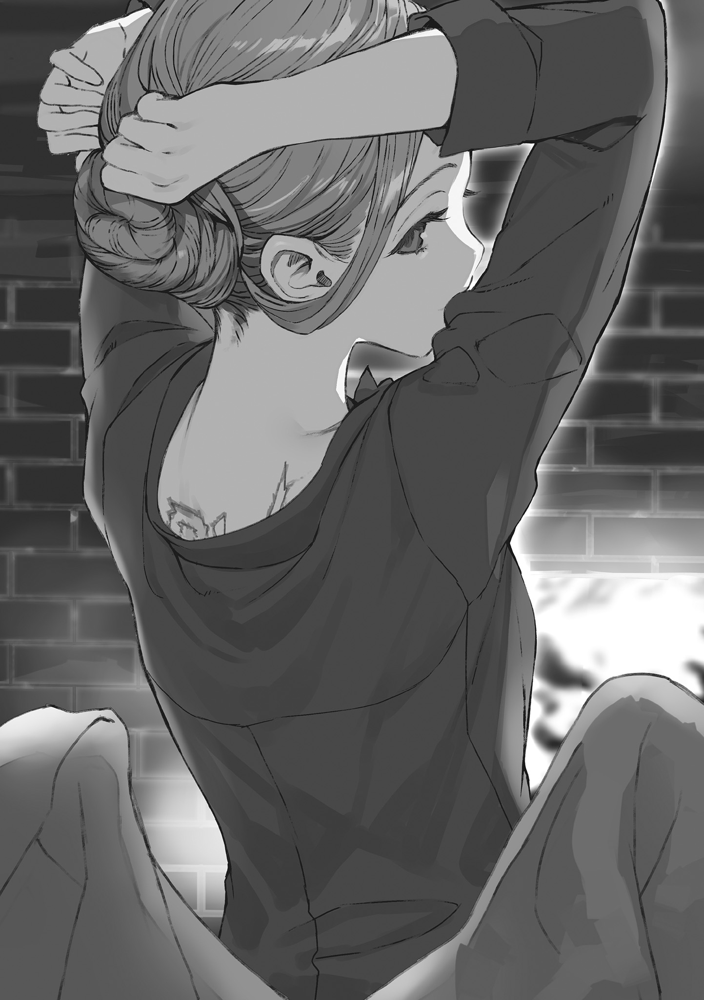
つい、疑問がそのまま口をついて出た。
「消さないのか？ それ」
共和国にはかなり高度な瘢痕の治療技術が存在していた。連邦でもそうだろう。まったく無くせはしないかもしれないが、少なくとも今より目立たなくはできるはずだ。
アンジュはダスティンの視線を追ってから、薄く笑う。
少し、嫌な笑い方だった。
「あァ。ごめんなさい、見苦しかったわね」
「あ、いや、そういうんじゃないけど......」
どう言えば、彼女の傷に最も触れないだろうか。考えながら口を開いたダスティンだったが、結局うまくまとまらずに思ったことをそのまま言った。
「痛そう、だから」
ふっとアンジュが虚を突かれた顔になった。
「大事な傷ってわけじゃないんだろ。だったら、......わざわざ背負ってやらなくてもいいんじゃないかって」
思いもよらなかった言葉に、アンジュはぱちぱちと瞬く。
それからゆっくりと微笑んだ。
「......そうね」
たとえば、シンにとっては兄につけられた首の傷痕は。
兄を討った後も背負ってやるくらいには。けれどその罪の痕は人目に触れさせまいと隠してやるくらいには、......大事な傷、なのだろうけれど。
「そうね。もう、消してもいいかも。背中の開いたドレスも着てみたいし、」
まだ、長く伸ばしたこの髪を切りたい、とは思わないけれど。
「ビキニなんか、憧れるものね」
「びきに」
果たしてダスティンは棒でも吞んだような顔になる。
「それは......その、見せたい奴がいるとか、そういう、」
おずおずと問うてくるものだから、アンジュはちょっと、悪戯っぽい気分になる。
「どうして？ ......まさかダスティン君、わたしのことが好きだったりするの？」
「す、」
一瞬ダスティンは口ごもる。
それから半ば自棄になって、一息に言い募った。
「そ......そうだよ！ 悪いか！」
軽い冗談のつもりだったアンジュは、まさかの肯定に目を見開いて硬直した。
「え......」
「だって、そりゃそうだろ。あんた美人だし、......俺は白系種なのに、あれこれ世話焼いてくれるし。好きにならない方がどうかしてるだろ」
言い募るにつれ、アンジュもどんどん真っ赤になっていく。どうしてか見ていられずに目を逸らして、それでも勇気を振り絞ってダスティンは続けた。言ってしまえ。この際だから全部！
「綺麗な色の目してるなって、最初にあった時からずっと思ってたんだ。だから、ドレスとか着るなら、目の色に合わせて選ぶといいと思う」
アンジュは真っ赤な顔のまま、そわそわと顔を俯ける。
「その......ええと、光栄、ね？」
何故か半疑問形なあたり、相当動揺しているらしい。赤らんだ頰を隠すように、膝に顔をうずめた。
「でも──駄目。......私はもう、男の人は好きにならないの」
どこか、自分に言い聞かせるような口調だった。水を差されてダスティンは鼻白む。
「......なんで」
「好きな人がいたの」
「っ......」
いた。過去形だ。そしてアンジュはエイティシックスだ。それはつまり──。
「優しい人だった。最後までずっと好きだったわ。......誰を好きになっても、きっと忘れられない。きっと、比べちゃうから。それは悪いから、だからもう、誰も好きにならないの」
ダスティンは暖炉の火に目をやった。
「それは──違うんじゃないか」
それだけは、きっと。
「忘れられないのは、当然だろ。いい奴だったなら特に。忘れてないなら比べちまうのも仕方ないだろうし、けど、忘れられないから、比較するからもう誰も、っていうのは、おかしいと思う。だってそれじゃ、......あんたがこれから、幸せになれない」
天青色の双眸を視界の端に感じつつ、意識して火に目を向けたままダスティンは続ける。応えてもらえなくても、それは仕方ない。でも。誰も好きにならない、もう幸せにはならないのだと、自らを縛っているのは。
「だから......忘れないまま、そいつ以外のことも好きになってもいいんじゃないのか。......少なくとも俺は、そいつのこと、忘れろなんて......」
見返してくる、青い目。
空の一番高いところの。
「────探しにきたんだけど」
シンが言った。
「邪魔かな」
二人は思い切り飛び離れた。
拍子にダスティンは壁際に置かれていた何かの棚にしたたかに後頭部を打ちつけてうずくまり、アンジュは羽織ったブランケットを意味もなくかき合わせながらその人を見返す。
「しっ、シン君!?」
小屋の入口に立ったシンはつきあいの長いアンジュでさえも初めて見る、すっっっっっっっげえ見下した目をしている。
そういえばシンは足音を立てずに歩く癖があるんだったと、空転する思考の片隅でアンジュは思い出す。どうやらそれ以外の音を立てない癖も。ドアの開閉音とか。
「余裕だな。というか、むしろ気が利かなくて悪かったな」
「いっ、いつからいたの!?」
シンはしばらく考えて答える。
「ビキニ」
「ほとんど最初からじゃない！ イヤ────────────────────ッ！」
頭を抱えてアンジュは絶叫する。
捨て置いてシンは扉の外、斜め上方に目を向けた。
崖の上に〈ジャガーノート〉を停め、それにワイヤーか何かを固定して降りてきたらしい。
「ファイド。救助はいらなかったみたいだ。引き上げてくれ」
「ぴっ......!?」
「あっ待って待って待ってシン君！ 帰らないで助けて！」
何やら焦ったようなファイドの電子音とアンジュの必死の引き留めがほぼ同時だ。
まあ。
未だ〈レギオン〉もうろつく競合区域で、冷え込む闇の中、神経を配りつつ探していた相手がそんな状況を全くわきまえずに青春していたら、普通はちょっと、イラッとくる。
幸い冗談だったようで、シンは手振りだけでファイドに何かを要求し、落ちてきたそれをそのままぽいと投げ渡してきた。防水のためビニールに包まれた、替えの軍服とコート。
濡れたかもしれないと、きっと心配して。
「ありがとう。......ごめんなさい」
「いや」
続けてファイドはもう一袋、軍服の包みを落としてきて、受け止めたシンから受け取ろうと手を伸ばしたダスティンだったが、次の瞬間顔面にそれを叩きつけられてひっくり返った。
投げにくいはずの布地の包みが、それなりにあったはずのシンとダスティンの間の空間を一瞬でかっとぶ、それはそれは容赦のない全力投球だった。
腹筋だけでがばりと起き上がってダスティンは喚く。
「おい！ なにす、」
「ダイヤからだ。もし泣かせたら、おれが代わって〈レギオン〉の中に放り込んでやる」
淡々と言われたその言葉に、ダスティンは抗議の言葉を吞みこむ。初めて聞く名前だったが、この流れでそれが誰だか、わからないはずがない。
「──わかった」
一方アンジュはその言葉に再び真っ赤になる。
「あっ、あの、あのねシン君、私別に、ダイヤ君のこと忘れたとか、そもそもダスティン君のこと好きになったとか、そういうわけじゃなくて、あの」
ダイヤほどではないけれど、シンとてアンジュにとっては長い時間を一緒に過ごした、家族みたいな少年だ。本当に別に何とも思っていないし、......尻軽だなんて、思われたくない。
あたふたしているアンジュに、シンは肩をすくめて踵を返した。
「ダスティンをどうかは知らないけど。本人の目の前で言う言葉じゃないし、......ダイヤが逝って、もう二年だろ。あいつだって別に、いつまでも縛りつけたいわけじゃないと思うけど」
言われてアンジュは泣き笑いに笑む。
能天気で、お人好しで、......優しかった彼。
「......そうね。そうかもしれないけど、でも」
わたしは、まだ。
独りごちた言葉と滑り落ちた雫を、背を向けたシンも、目を逸らしたダスティンも見ない。
ところでシンは無線を入れっぱなしにしていて、ビキニ以降の二人の会話は捜索に出ていた全部隊に筒抜けになっていて。
基地への帰投後、アンジュはともかくダスティンはライデンやらセオやらクレナやらシデンやらから、それはもう散々にからかい倒された。
「......〈スノウウィッチ〉と〈サギタリウス〉の回収も、今完了したそうだ。戻り次第、修理と整備に入ると」
回収部隊からだろう、知覚同調越しの報告を聞き終えてヴィーカは言う。
「捜索に出ていた〈レギンレイヴ〉も含めて整備が遅れた分、三日後の竜牙大山攻略作戦の進発に少し影響が出そうだ。二、三時間ほどは遅れるだろう」
ほっとレーナは息を吐いた。
「......よかった。でも、すみません」
「なに。侵攻作戦は三日がかりだ。数時間程度なら誤差の範囲だろう。......それに、二人が帰ってきたから地崩しの罠があると認識できた。今も〈シリン〉たちに確認させているが、どうやら競合区域内の利用可能な全経路に仕掛けられていたらしい。うち二つは、攻略作戦時の機動打撃群の予定進路上にあったと」
レーナは表情を硬くする。気づいていなければ攻略作戦時に、下手をすれば全部隊が退路を断たれる可能性もあったところだった。
単なる地雷と違い、感圧や音響、振動検知で自動的に作動するのでないのがまた、性質が悪い。作動しなければ、それだけ見つかりにくい。まして検知もできない分厚い氷と岩盤の下、フェルドレスではなく地形そのものを破壊目標とした爆弾など。
起爆用に自走地雷が必要なのだけが難点だが──あの電磁射出機型を使えば容易く、気づかれることもなく投入可能だ。
「掘り出すのはすぐには難しいが、とりあえず導火線と信管を外させて、難燃樹脂で埋めた。応急処置だが、攻略作戦の間確保できれば充分だからな」
「......妙、だとは思いませんか？」
慎重に言ったレーナに、ヴィーカは紫の双眸を煌めかせた。
「ああ」
「〈レギオン〉と連合王国、両勢力が混在する競合区域内です。フェルドレスが通過可能な全経路に罠を仕掛けるのも、それは可能でしょう。ですが、今日の戦闘では、エマ少尉にたまたま見つかるまでは作動させなかったというのは......」
〈バルシュカ・マトゥシュカ〉も〈ジャガーノート〉も通過させ、彼らが撤退する時もその妨害には使わなかった。......単なる領域防衛用の罠では、ない。
まるで。
「我が軍を支配域深く誘い出し、その上で孤立させる企みのように──か」
「阻電攪乱型による寒冷化も、その一環なのではありませんか」
「......可能性はある。緩慢に絞め殺されつつあるこの状況下で、連合王国軍は無理をしてでも反攻に出ざるを得ない。そのために投入されるのは精鋭だ。雑兵の首は充分に得た〈レギオン〉どもが、おそらくは次に欲するような」
そのまましばし黙考し、小さくヴィーカは首を振った。
「──少し、備えておくか。軍団の予備控置戦力を増強させる。万一の時に、戦場奥の兵士たちを救出してやれるように」
†
今さら慣れたことのはずなのに、何故か、この時ばかりは非常な勇気が必要だった。
知覚同調を繫ぐのも、その一言を口にするのも。
「──レーナ。少し、出てこられますか？」
最前までの気おくれを押し殺して普段の自分の声音を取り繕った、無意識のその行動もその理由もまだ自覚しないままに。
レーヴィチ要塞基地観測塔は、基地を覆う天蓋を支える岩山の、その内部を掘りぬいて造られたかつての天守閣跡だ。
異様に急な、時計回りの螺旋階段をひたすらに登ると天蓋の上に出る。前進観測のための観測所。この一帯で最も高い要塞基地の頂上にある、白鳥の背の上。
翼の縁にずらと並ぶ対空機関砲と対地・対空複合センサが夜空を黒々と切り取る。地上から数百メートルも高所にあるこの場所からは、天蓋の縁までいかなければ地上など見えない。
夜の空に浮かんでいるかのようなそこで、連邦軍制式の塹壕外套を羽織ってシンは呼び出した相手が来るのを待つ。晩春とはいえ雪の戦野だ。吹きさらしのこの場所はいかにも冷える。
「よいしょ......っと」
小さな掛け声と同時、観測塔内部に繫がる耐爆ハッチが押し開かれる音がした。
ふわ、と幽かな花の香りが先触れをつとめる。
雪の中では咲くはずのない早春の、すみれの花の香り。この二月ほどで聞き覚えた、......レーナの香水の匂いだ。
「──シン？ こんなところに呼んで、どうしたのですか？ 何か異状が......」
言いさし、レーナが息を吞むのが、少し離れたシンのところまで聞こえた。
わぁ......と感嘆がその桜の唇を零れる。視線が自然と、それを追うように持ち上がった。
その無数の、明るく夜を埋め尽くすほどの──星辰の光を。
遮るべき日が沈んだためか、阻電攪乱型の銀雲が晴れた夜空は。
豪奢なまでの──星月夜だった。
名も知れぬ無数の恒星が、黒びろうどの天球をまるで埋めつくすように鏤められて絢爛と輝く。空を果てから果てまで斜めに横切る、一際明るく白く流れる銀河と、渦を巻いた星雲と。
人工の灯りの乏しい、人の暮らす街を遠く離れた戦野の夜だ。戦場の夜空は暗く黒く、それゆえに星明かりと雪の蓄光で仄明るい。
何万年も前に削り出されてなお純白の岩石の天蓋に、淡い光が映える。細い三日月がまるで冷ややかな女王のように、天頂近くに鎮座していた。
首を限界まで仰け反らせて見入っているレーナは、そのままだと後ろに倒れそうだったので手を引いて転落防止の柵につかまらせる。気づきもしない様子でふらふら従い、そのまま白銀の瞳に星の光を映しこんでいる。
ずいぶん経ってからようやく、ほう、と息を吐いて言った。
「......綺麗ですね」
「ええ。......いつか、カイエとそんな話をしていたでしょう。第一区では星空は見られないから、満天の星を見たいと」
見返してきた双眸に、シンは肩をすくめる。
「あいにくと流星雨ではありませんが。......アンジュたちを探しにいった時、星が見えていたので」
シンにとっては見慣れた戦場の星空だけれど、その時ふとレーナとカイエの交わしていた会話を思い出したから。
八六区第一戦区第一戦隊の、あの古びた隊舎。まだ互いに名前さえも知らず、......こんな風に同じ場所に立つとは、思ってもみなかった頃の。
「それで、わざわざ教えてくれたのですか？」
「余計なことでしたか？」
「いいえ」
くすぐったそうに笑って、再び空一面の星にその白銀の瞳を向けた。緩く吹いた風に、長い銀髪が煌めきながら流れる。
共和国を発った時には春先だったから、その制式の冬用装備は持ってこなかったらしい。出立時に急遽取り寄せた、連邦の塹壕外套を羽織って追憶に微笑んだ。
「それだけは間違いなく、八六区の暮らしのいいところ......でしたね」
二年前に聞いた、もういないエイティシックスの少女の言葉を、思い出してレーナは呟く。
八六区は。エイティシックスだけに押しつけた戦場は、この世の地獄だと思っていた。
そこに閉じ込められた彼らの口から、よかった、なんてそんな言葉を聞くとは、思ってもみなかった。
同じ場所にもいない。顔も、その時は名前さえも知らなかったくせに。
傍らに立ち、同じように空を見上げながら何事か沈思している様子のシンを、ちらりと見やった。コートの高い襟に隠れて今は見えない、......斬首の痕のようなその傷跡を。
傷の由来を、レーナは聞いていない。
その程度にはシンのことを知らなくて、聞けない程度には、話してもらえない程度にはまだ、シンと自分との距離は遠い。
同じ場所に、同じ戦場に立ってはいても。それだけではまだ遠い。
──貴方たちは本当には、まだ会ったばかりなんだから。
グレーテの言うとおりだ。自分たちはまだ会ったばかりで、互いの名前と、......ようやく顔しか、まだ知らない。
それなのにまるで、それ以外のことまで分かりあえたかのように、心のどこかで思ってしまっていた。
見上げたまま呼びかけた。
「シン」
「レーナ」
何故か、全く同じタイミングで、呼びかけた声がかぶってしまった。
一瞬二人ともが続けるべき言葉に詰まる。互いにどう反応していいか判断しかねた、変に気まずい沈黙がしばし、満天の星の下に降りる。
先に気を取り直したシンが言った。
「......先に、どうぞ」
「すみません......」
出鼻をくじかれたせいで、もう一度切り出すのには少し勇気がいった。
「......この前のこと」
言うと、ほんの少しだけ、構えるような気配が返ってきた。
シンの方でも気にしていないわけではなかったらしい。そのことに何故かほっとしつつ、レーナは言う。
「ごめんなさい。少し、言いすぎました」
「......いえ」
「でも、哀しいのは本当です。それは撤回しません。あなたたちは、八六区を出た。必ず戦死する運命から解放された。そのはずなのに──まだ、解放されただけです」
死に場所と、死に方を選ぶだけの自由しかない戦場から解放されたはずなのに──同じ戦場に居続けている。戦い抜くのが誇りだと、それはたしかに、彼らに残された唯一の存在証明なのだろうけれど、今は望めるはずのそれ以上をまだ、望めてはいない。
どこにでも行ける。何にでもなれる。自由に。
そのはずなのに──まだ、自分自身の未来を、望むことができていない。
「奪われたものは、失くしたままで、だから同じものを未来にも望めない。目指していい未来がわかっていない。そう思えて......それが哀しい」
今は望んでもいい、幸福を。
奪われてしまったそれらを──思い描くことが。
ヴィーカの、シデンの、かつてグレーテの言ったとおり、酷い傲慢なのだろう。
奪って傷つけた側なのに、奪われたそれをもう一度望めというなんて。
檻の扉は開いたのだから、自分と同じ場所に出てこい、なんて。
何処にも行かないことだって、自由なのに。......それでも同じ場所に来てほしい。
ただ、とレーナは続けた。
この言葉も多分、......あの時一緒に伝えるべきだったのだと、今なら思う。
「貴方たちが世界を見限ってしまったのは、貴方たちがそれだけ......優しいからだと思います」
はたしてシンは盛大に眉を寄せた。
「......優しい？」
「ええ」
「レーナの言うとおり、おれは共和国も連邦も正直なところ──そう、どうでもいいです。......それは、優しさとは違うと思いますが」
思わずレーナは笑ってしまった。
まさか、とは思っていたが。
「シン、まさか自覚してないんですか？ ......貴方は、優しい人です。そうじゃなければ先に死んだ皆を全員、覚えて連れていこうなんてしません。お兄さまやカイエや、〈レギオン〉に囚われてしまった仲間を、解放してやろうなんて思わないはずです」
「............」
「貴方は、優しい人です。ライデンやセオや、クレナやアンジュやシデンや、エイティシックスたちは皆。だって憎む方が簡単だったはずなんです。恨む方が、楽だったはずなんです。悪いのは本当に共和国なんですから、全部共和国のせいにして憎んでしまってよかったんです。それなのに貴方たちは......自分を削った。世界の全てを呪わないために、自分たちこそが傷ついた」
知っていたはずの幸福の記憶を、自ら切り捨て焼き払って。
「......呪うことこそ、何もかも失うことでしたから」
最後に残った、誇りさえも。
「ええ。貴方たちは、傷をこそ誇りとした」
奪われても、踏みつけられても。決して同じ下劣には堕ちぬという誇りを。
「その傷こそが貴方たちなら、それをなくせとは言えません。でも、......わたしはその優しさが、報われてほしい」
星空を見上げ、独りごちるようにレーナは言う。歌うように。
雪の戦場と、真空に浮かぶ星の世界。人など生きられぬ苛烈な世界に対し、挑むように。宣言するかのように。
「優しい人は、幸せになるべきです。正しい人は、報われるべきです。人の世界はそうあるべきで、今そうでないというなら、そうなってほしい。......そうやって少しずつ、人は理想を──実現してきたのですから」
ただしい、やさしい世界を。
いつか。どうか。
歌うような、宣言のようなその言葉に、シンは何も言えなかった。
叶うはずもない理想だと。
綺麗なだけの、現実にはあるはずもない絵空事の夢物語だと。
思ったはずなのに、切り捨ててしまうのは簡単だったはずなのに、何故か、それを口に出すことはできなかった。
──海を。
半年前の、戦没者墓地の雪の中。自ら言った言葉がよみがえる。
見せたいと望んだ。見たことのないものを、見せられたらいいと。それが自分の今の、戦う理由だと。
そうであるならレーナが見たいと望む世界を、それがどこにもないと知ってはいても、否定はできない。
「すみません。変な話まで、してしまいましたね。シンの方こそ、何か言いかけて......」
「............。ああ......」
出鼻をくじかれたせいか、もう一度切り出すのには少し勇気が必要だった。
そう、何を、この場所で言おうと思っていたのか。
竜牙大山攻略作戦に向かう前。──作戦が成功すればわかってしまう、そのことの正否がわかる前に。
「レーナ。もし、連邦や連合王国の予想どおり、〈無慈悲な女王〉がゼレーネ・ビルケンバウム少佐で、彼女が戦争を終結させる何らかの手立てを知っているとしたら」
そんなことは、きっとない。
言葉とは裏腹、シンはゼレーネについて、何の期待も持ってはいない。
戦争はきっと、終わらない。
それでも、もし。
「この戦争が本当に終わるなら──その時は」
不意に。
言おうとした言葉が唐突に止まった。
海を見にいこう。見たことのない景色を。叶うのならば一緒に。
そう、言おうと思っていた。海を見たいと、レーナが言った言葉は聞いたけれど、自分から伝えたことはこれまでなかった。
伝えるべきだと思った。それだけは、決して偽らず。
海を見せたい。それが今の、自分の戦う理由なのだから──。
でも、と、ふと。
儚い泡沫のように浮かんだ自問が喉を凍りつかせる。
海を見せたい。力及ばず最期に斃れて死ぬ戦野ではない、戦火に鎖された今のこの世界では見られないものを、見せられたらいい。そう望んで。そう、望むことができるようになって。でも。
それなら。
その、後は──......？
海を見て、その後。
レーナは何を、望むだろうか。──何か、望んでくれるのだろうか。
それは。
いつまで？
海を見たいとは、シン自身は思わない。それは今でも変わらない。
したいことなど、自分には何もない。
その空虚に、わけもわからずぞっとなった。それ以上考えるのを咄嗟にやめ、けれど疑念は消えずに残る。
戦い抜くのが、エイティシックスの誇り。
それなら、戦い抜いてなお、生き残ったとしたら──。
第三章 シンギング・バードの嘆きも知らず
破局は実に、あっけなく始まった。
「──っ......！」
競合区域深くを進む重装輸送車の中、シンは聞き取ったそれに目を上げる。竜牙大山攻略作戦、進攻路の途上。昨晩深更に陽動作戦を開始した連合王国軍機甲軍団が首尾よく〈レギオン〉各部隊を誘引して生まれた、戦場の間隙。
遠く、〈レギオン〉の一部隊が新たに動きだす。けれど進路がおかしい。陽動の部隊にも、隠密に進む機動打撃群にも向かわない進路。
その中に聞き取れない無機質な、だが戦場を貫いて通る激烈な絶叫が混じっていると気づいた瞬間、シンは不吉な予感に突き動かされるように知覚同調を繫いでいた。──理屈ではない、長い戦場暮らしで研ぎ澄まされた戦士の嗅覚が発する警鐘。
「全隊停止。──ライデン、まだ基地にいるな。そのまま待機」
『ッ、了解』
『ノウゼン大尉？ 何が......』
一個旅団、実に数百輌から成る隊列だ。殿を任せたライデンを含め、数個戦隊はまだ数十キロ後方、レーヴィチ要塞基地で進発を待っている。
異変と察したライデンから即座に応答。一方で彼と違ってまだシンの異能に慣れきっていない、レーナの反応の遅さが今はもどかしい。進撃する連合王国軍陽動部隊に、彼らに撃滅され潰走していたはずの〈レギオン〉部隊が反転して対峙する。支配域奥の〈レギオン〉たちが動き出し、陽動部隊に向かい、あるいはまったく無視して連合王国支配区域へと進撃を開始する。偽装退却と迂回侵攻。誘引されたのは──釣り出されたのはこちらの方だ！
機械仕掛けの絶叫にまるで合わせるように、〈レギオン〉の叫びの一つが高まる。連合王国軍、機動打撃群、どの部隊からも遠い位置。長距離砲兵型のような、けれどそうではないと今さらながらにわかった機種。
あまりの速度に一瞬、かき消えたようになったそれの絶叫を虚しく追いつつ──シンは今や遅きに失したその警告を発した。
「──と、警告を受けていたのに、応じきれず不甲斐ないが。......すまない、ノウゼン。レーヴィチ要塞基地は陥落した」
立てこもった司令棟内部は、今はほとんどの電源が落とされて暗い。
レーヴィチ要塞基地、地下司令棟。地下第四階層から最下層にかけて、他の棟からは半ば独立する形で建造されたそこの中央発令所でヴィーカは言う。
要塞最上部、天蓋外周の複合センサはまだ生きている。メインスクリーンの雪景色の冷ややかな光に、発令所要員の緊迫した面持ちがぼうと浮かぶ。無言を保つ鋼色の搭乗服のプロセッサーたちと、彼らの主人である紺青の軍服の銀髪の少女。
生き残ったわずかな基地要員と整備クルーは通路を塞ぐ隔壁の防御に、ハンドラーたちは管制室に詰めていて、ここにはいない。
「正確には、基地機能を奪取された、というところか。地上区画全域と、地下区画の八割が敵制圧下。こちらが掌握しているのは司令棟と、地下最下層の第八格納庫だけだ。今は司令棟の全封鎖機構を稼働させて籠城している。......ああ、連邦軍人は全員、司令棟内に退避が完了したから、それは心配しなくていい」
相手が連邦軍所属の軍人であることを思い出してつけたした。
要塞の城壁と雪原を超えて遠く、今は要塞から一〇キロ地点まで部隊を連れて戻ってきているはずのシンは、常の冷徹を崩しもせずに言う。
戦場全ての〈レギオン〉の位置を聞き取る異能者だ。ある程度状況は把握していたろうが、基地内部に取り残された仲間がいる中、動揺をきれいに押し隠して。
『失態なのはこちらも同じだ。──思い至らなかった。電磁射出機型の推定性能諸元なら、高機動型が投擲できる』
その警告を受けたところで、それがレーダーにも光学センサにさえも検知できないのでは、実のところどうしようもなかった。
シンとヴィーカは、指揮系統上は直接の上下関係にない。その僅かな迂遠も災いした。
要塞基地を守る、天蓋上に着地したらしい。設置された対空・対砲レーダーはそれを検知できず、故に連動して照準する対空機関砲も、見当違いの方向へ手遅れの弾幕を張ることしかできなかった。
対空機関砲が破壊されてようやく警報が鳴動、直後に天蓋から観測塔へと繫がるハッチが外部から破断。侵入したそれに、命令を受け迎撃に向かった基地防衛戦力の兵士たちは観測塔内で遭遇し、──一方的に殺戮された。
狭い要塞内の通路を縦横無尽に飛び回る、それの姿を誰一人として視認することができなかったから。
状況を察したヴィーカが施設防衛用の散弾地雷を遠隔起動、その纏う光学迷彩を引き剝いでようやく、そいつは姿を現した。
引き裂かれる阻電攪乱型の群の中、身を潜めていた漆黒の〈レギオン〉。
高機動型。
その時点で、観測塔は陥落。基地の防衛戦力は半減し、混乱の中で〈レギオン〉空挺部隊は続々と、対空砲を潰された天蓋上に出現、監視塔内への侵入を開始していた。
それを受け、ヴィーカは地上区画及び司令棟以外の全地下区画の放棄を決定。地上との通路を順次隔壁を下ろして封鎖しつつ、生き残った全要員と全フェルドレスを司令棟及び第八格納庫に退避。
基地を制圧・掌握した〈レギオン〉部隊との、持久戦の構えに入った。
顚末を聞き終えてシンは嘆息する。
「この前の偵察任務で、〈シリン〉が接触したのも基地への偵察か。......竜牙大山拠点への進撃路なら、そこからの進撃路でもある。それに......気づくべきだった。この状況にも」
電磁射出機型を用いての、単騎特攻による本拠基地制圧。
基本的には、不可能な作戦だ。飛行速度が遅く、シルエットが巨大化するグライダーはレーダーに検知されやすい。加えて電磁射出機型の投擲限界は推定で十トンそこそこ、......それで投擲可能な自走地雷か斥候型では、防備の堅い基地などまず制圧できない。
けれど斥候型より軽量ながら近接猟兵型をも上回る戦闘能力を持ち、阻電攪乱型を纏って可視光を含むあらゆる電磁波を攪乱可能な高機動型なら。
想定外の攻撃だ。けれど全て、既知の情報だった。推測することもできたはずだ。
『──敵戦術の分析と推定は、わたしの......指揮官の仕事です。シンが気にすることではありません』
細い、銀鈴の声が会話に加わって、シンは内心息を吐く。
レーナ。
全員が退避しているとは、今しがた聞いていたけれど。
『卿とて今、気にすることでもなかろうよミリーゼ。......それに、ある程度仕方がない気もするがな。手順としては可能でも、実行する戦術・戦略上の価値はこの基地にはないし、ノウゼンも俺も卿も、空が戦場だった頃の戦争など知らぬのだから』
〈レギオン〉は航空兵器を使用しない。──〈レギオン〉戦争しか知らないシンたちは、空が進撃路となり得ることを知識として知ってはいても、実感できてはいないのだ。
そして航空兵器が存在していた戦争を知っている者は──正規軍人たちはその大半が、〈レギオン〉戦争で戦死してしまっている。
一つ嘆息してヴィーカが続ける。
『さて。聞き取れる以上ある程度把握しているだろうが、状況を説明しておく。──まず、〈レギオン〉空挺部隊の進出は当分ない。電磁射出機型は軍団砲兵に殲滅させた。他の投擲可能な場所も彼らの射程内だ。投擲開始と同時に制圧できる』
連邦軍の推定では、電磁射出機型を利用して進出可能な距離は三〇キロ程度だ。榴弾砲の射程圏内に、どうにか収まる。
『次に我が軍団の状況だが。〈レギオン〉支配域に進出させた陽動部隊は、全て迎撃を受け壊滅。逆にこちらの支配域まで進出してきた〈レギオン〉部隊に、残っていた軍団各師団が全て足止めされている状態だ』
シンは眉を寄せた。
「......壊滅？」
何重もの堅固な防御施設と、山岳という地の利もあるとはいえ。十年に亘り〈レギオン〉の侵攻をはねのけてきた軍だ。罠に嵌ったからといってむざむざと壊滅させられるほど、弱体でもないだろうに。
『遭遇した指揮官の最後の報告では、〈レギオン〉どもは支配域内に重量級を集中配備していたらしい。戦車型と重戦車型から成る、重機甲部隊と会敵したそうだ』
思わずシンは目を閉じた。重戦車型。よりにもよって。
規格外の一五五ミリ戦車砲と百トンを超す堅牢極まりない巨体、理不尽そのものの運動性能を併せ持つ鋼鉄の怪物。単騎で比肩できるフェルドレスなど存在しないその大群を前に、......一揉みに押し潰されたことは想像に難くない。
『後方からの補給の列に紛れて進出し、徐々に軽量級と入れ替わっていたのでしょう。随分前から、〈レギオン〉はこの作戦を計画していたのでしょうね』
シンの異能は〈レギオン〉の数と位置は知れても、機種の判別はできない。阻電攪乱型に隠された支配域奥で入れ替えを行われては、把握するのは不可能だ。
『軍団本隊にこの基地の現状は伝えてあるし、予備部隊は備えさせてあったからからすぐに動ける状態ではあるそうだが。なにぶん軍団自体が敵の包囲下だ。突破して要塞まで救援に来るまで、最短でも五日はかかる見込みだ』
「............」
つまり、現状。
レーヴィチ要塞基地と彼ら機動打撃群は、友軍との連携を断たれ、敵部隊の包囲の中に孤立している状態だということだ。
「......こちらからも、よくない知らせだ。陽動部隊を壊滅させた〈レギオン〉重機甲部隊は、どちらもレーヴィチ要塞に向かってる。総計八千。陽動部隊の残存兵力が足止めしてるみたいだけど長くは保たない。補給と再編成の時間を考えても、......明日には基地に到達する」
ヴィーカは心底、嫌そうに嘆息した。
『まあ、そうだろうが............希望的観測を持たせてくれない卿のその異能も、こういう時には不便なものだな。不吉な上に正確な予言しかしないカッサンドラは嫌われるぞ』
「今、基地の中にいる〈レギオン〉の総数は千機前後だ」
『やめてくれ』
げんなりと言うヴィーカは黙殺して続けた。
「大半は、自走地雷だと思うけど。......他には何がいた？ 斥候型だけか？」
降ってくるのを見たことがあるのはその二種だけだ。
『生き残ったカメラが捕捉した限りではな。......ただ、それとは別に衝撃緩衝機能つきのコンテナの投入も複数確認している。何が入っているかは現状不明だ。楽観的に見れば、弾薬とエナジーパックというところだろうが』
「偵察は......出せるわけないか」
『すまないが。地下区画上層はどこも〈レギオン〉の制圧下だ。地上に出る前に捕捉される』
「司令棟の隔壁が破られるまでには、どれくらいかかる？」
『旧式とはいえ籠城仕様だ。懸念は無用......と言いたいところだが。どうにか持たせる』
『こちらは直衛のブリジンガメン戦隊に、シュガ中尉が指揮していた殿の四個戦隊が残っています。拠点を固守するには充分です。......心配しないで』
自分こそ心配そうなレーナに、そんな状況ではないというのにシンは少しおかしくなる。さすがに笑う気分にはなれなかったけれど。
自分たちこそ、今、一番危険な状況に置かれているくせに。
「状況は了解。......それで、おれたちは何をすれば？」
ふん、とヴィーカは鼻を鳴らした。
『わかっていて聞くか。......決まっている』
知覚同調の向こう、零れる冷ややかな笑みの気配。
戦慄と獰猛が等量に混じり合い、わずかに苦々しく。
『攻城戦だ』
機動打撃群機甲部隊は、独立して挺進作戦を実行するその性格と、戦闘要員の大半が戦隊規模の戦闘しか知らぬエイティシックスであることから、戦隊を基本単位に十四個大隊編成という、細分化された特異な編成となっている。
その大隊長である、シンを含めた十四名と最古参であるスピアヘッド戦隊の小隊長たち、旅団最先任下士官のベルノルト。〈シリン〉たちを代表してレルヒェに、知覚同調の向こうのレーナとヴィーカとライデン。レーヴィチ要塞基地を臨む森の中に置いた宿営の、即席の会議室とした重装輸送車のコンテナの中だ。
結果論だが、三日前にアンジュとダスティンが遭難したのは、こちらにとっては運がよかったなとシンは思う。二人の捜索で整備が遅れ、その結果として今日早朝の進発も遅れた。それがあったからこれだけ早く、基地まで帰ってくることができた。そうでなければライデンたちも基地を出てしまっていたろうから、籠城側の防衛はより厳しいものとなっていたろう。
気づいていなければ退路を塞がれていた、道を崩す罠を事前に無力化できたことも。
折り畳みの机を幾つか並べ、透明なカバーをかけて彼我の部隊の配置を書き込んだ戦域の地図を見下ろしたまま、第四大隊長のユート・クロウ少尉が呟く。
「......最悪の状況だな」
本拠である基地が陥落し、敵に支配された戦域内に孤立。友軍の到着は早くても五日後であり、それよりも先に敵増援が到着予定──......。
「ノウゼンの索敵では、増援の総数は八千余り。到着予定は最短で明日。......つまり明日には我々は、重戦車型と戦車型から成る八千機の二個重機甲部隊と城壁に、前後を塞がれるわけか」
「こちらの戦力は〈アルカノスト〉を合わせても六千。そのうえ基地の中には、ノウゼン大尉でも撃破できなかった高機動型がいるのですし......」
不安を押し殺した様子で、第五大隊長レキ・ミチヒ少尉が続ける。
「数で劣る以上、二正面作戦は避けたいのです。......こちらから打って出て、敵重機甲部隊を撃滅・撤退させますか？」
『逆です、ミチヒ少尉。──重機甲部隊の迎撃には、注力しません』
知覚同調越しにレーナが言い、ぎょっとしたようにミチヒが目を見開く。
『現状を打破するにあたり、〈レギオン〉の増援を撃滅しても無意味です。解囲という我々の目的に、何も利するものがない。徒に戦力を消耗するばかりか、〈レギオン〉の更なる戦力投入を誘発するだけです』
リトが眉を寄せた。
「目的、って......？ 〈レギオン〉を倒せばいいんじゃないんですか......？」
『いいえ。敵の目的はレーヴィチ要塞基地の占領。そのために周辺を封鎖し、増援を送り込んでいる。ならばこちらが行うべきは、その目的の阻止。つまり......要塞の奪還です』
知覚同調の向こうでセオが言う。首を傾げているような気配と共に。
『つまり......僕たちに、その要塞を攻めろってこと？ レーナ』
「そのとおりです、リッカ少尉。......ただ、この戦闘では攻城戦の基本的な戦術が、一つしか使えません」
原則として、攻城戦は籠城側が有利となる。
城塞とは敵の侵入を防ぐための軍事施設だ。籠城側だけが一方的に有利となるよう、緻密に計算して構築された戦場だ、ということである。城壁一つとっても攻囲側の矢を弾き、籠城側からは敵軍に集中砲火を浴びせられるよう、様々な工夫が施されている。
故に、攻城側は可能なら城壁を無視する戦術をとる。たとえば調略。たとえば野戦への釣り出し。兵糧攻めも、巨大な物資集積庫でもある城塞相手には時に攻城側こそ不利となりつつ。
あるいは城壁の破壊。坑道を掘削して城壁ごと焼き崩すか、破城槌や平衡錘型投石機で城壁を直接粉砕するか。
けれどその戦術のいずれもが、この戦闘では使えない。
〈レギオン〉には、交渉もゆさぶりも効かない。彼らはいかなる挑発にも乗らず、厭戦気分に支配されることもない。互いに補給が見込めない以上、物資窮乏を狙うのは諸刃の剣であるし、それを行う時間もない。強固な花崗岩の、それも断崖上にある要塞への坑道に至ってはまず間違いなく不可能だ。
そうである以上、取れる手段はあと一つ。
レーナの言わんとしたことを察したのだろう。わずかに硬い声でシンが応じた。
『──強襲、ですね』
城壁の強行突破。
蟻が餌にたかるように数を恃みに城壁をよじ登る、最も手軽で最も多く用いられた、......最も多くの犠牲が出る拙劣な戦術だ。
「ええ。......百メートルの断崖と、その上の二〇メートルの城壁。あなた方にはそれを、攻略してもらいます」
しん、と沈黙が束の間、即席の会議室に落ちた。
エイティシックスと〈ジャガーノート〉は共和国でも連邦でも、市街と森林を主戦場としている。ワイヤーアンカーを用いての垂直登攀も慣れたものだ。
だが......百メートル超。いくら〈ジャガーノート〉でも一息には登れない距離を、直上からの砲火と自走地雷の襲撃にさらされながら。
「そんなのって......」
「厳しい。相当の犠牲が出る」
少し蒼褪めた顔でリトが呻き、難しい顔のままユートが首肯する。
知覚同調の向こう、気のない様子でライデンが言う。
『基地はこのまま放って、撤退するってのは』
「論外だ。撤退したところで、軍団本隊と合流できるだけの物資がない」
言下にシンは切り捨てた。
プロセッサーたちに状況を知らせるための問いで、知らせるための答えだ。兵士としても特殊な環境で戦ってきたエイティシックスは、後方連絡線の──補給の概念が薄い。数日に亘る行軍や戦闘の経験も。
何故、要塞基地を奪還せねばならないのか。理解しないまま戦わせれば、ろくなことにはならない。
問いの裏に隠された進言については、気づかないふりで流した。
万が一、だろうと。そんな真似をするつもりはない。
「要塞奪還を最優先とし、〈レギオン〉重機甲部隊に対しては遅滞戦闘で時間を稼ぐ。大佐、それでいいですね」
遅滞戦闘。決戦は避けつつ敵の前進を妨害し、進行速度を遅らせる戦術行動である。戦闘と後退を繰り返すため、敵軍と防御対象の間に距離がなければ不可能だが、今の敵増援の位置なら、数日程度は何とかなるだろう。
『ええ』
「曹長。砲兵大隊を含めて、〈ジャガーノート〉を半分預ける。増援の相手は任せていいな」
「ま、そうなるでしょうね」
淡々とベルノルトが頷いた。
一応は士官であるエイティシックスを、下士官であるベルノルトの指揮下におく。正規軍としてはありえない運用だが、元々階級など飾りにも思っていないのがエイティシックスであり傭兵たちだ。居並ぶ大隊長たちからも異論は出なかった。
「五日。救援が来るまで稼ぐつもりでいればいい。間違っても撃滅しようとは考えるな」
「言われるまでもありませんや。......そっちこそ、何も考えずに突っ込んでって、あっさりおっ死なねえでくださいよ。守ってる俺らがバカみたいですから」
こんな状況だからこそ、だろう。非礼すれすれの軽口を叩く歴戦の下士官に一つ肩をすくめてみせて、シンは隊長たちを見回した。
「残りの〈ジャガーノート〉と〈アルカノスト〉全機で要塞攻略にあたる。......こちらは五日もかけられない。司令棟の連中が全滅する前に、要塞を奪還する」
作戦が決まれば、要塞内部のレーナたちも外にいる機動打撃群も、一挙に慌ただしく動き出す。
夜間の交代を鑑み、〈ヴァナディース〉管制要員も混じって戦闘配置につく発令所要員たち。ハンドラーは管制室で〈シリン〉と同調し、通路の防衛にあたる生き残りの兵士たち。最大の侵入路と予想される格納庫では、ライデンたちが迎撃態勢を整えている。
方面軍予備の投入準備も始まっているから、と、遠く王都から同調してきたグレーテが言う。
『あなたたちのいる南方第二戦線全体で、〈レギオン〉の圧迫が始まっている。予備兵力を出し惜しんでいる戦況ではないからと、国王陛下と王太子殿下の御決断よ』
「ありがとうございます、ヴェンツェル大佐」
「......伝言は感謝するが......。忙しいからと他国の軍人を使い走りにするなと、父上と兄上には後できつく言っておく。無礼をしたな、大佐」
外でも〈ジャガーノート〉たちが、あるいは重機甲部隊の迎撃に赴き、あるいは要塞基地を包囲しに移動を開始しているらしい。脚部のアイゼンが奏でる独特の硬質な足音を背景に、ふとシンが言う。
『ミリーゼ大佐。ヴィーカ。全体の指揮はそちらに任せても？ おれは攻城戦は、多少の戦史くらいしか知らない。正直手に余ります』
「......ああ、そういえば卿は特士士官か。促成の士官は、たしかに知るはずもないな」
応じるヴィーカは司令棟の弾薬庫から出してきた、槍のように長大な重火器の動作確認を慣れた手つきで行っている。
なるほどイディナローク王家とは、尚武を重んじる血統であるらしいとレーナは思う。
二〇ミリ、対戦車ライフル砲。大量の発射薬と長い砲身で超音速を弾頭に付与し、以て装甲を貫通するかつての歩兵用対戦車火器の一つ。
戦車装甲の強靭化とより軽量・大威力の無反動砲の登場により廃れた武器だが、後方十数メートルを後方爆炎で焼くために閉所では使えない無反動砲と違い、大音響の砲声以外に撒き散らすものがない。狭い空間の多いこの司令棟の防衛には、まだまだ役立つ兵器だ。
確認を終えて近衛に手渡し、一五キロあるそれを二門、担いで発令所から配置された通路へと向かうその背を見送って続けた。
「たしかに卿よりは体系的に学んではいるが、俺とて別に攻城戦の経験はないぞ？ 巣籠りの経験は嫌というほどあるが」
『体系的に学んでいるだけ、おれよりはましです。陣地防衛の経験があるなら、逆の想像もつくでしょう』
「まあ、それはそうだが」
「......ですが、」
ふと、気づいてレーナは言う。
現在生き残ったエイティシックスの中では最も長い戦歴を持つ、シンでさえも知らないというのなら。
「それなら、〈レギオン〉は尚更──この要塞での戦い方など知らないのでは？」
ちらりと紫の右目がこちらを見やった。
「城内の奴らを含め、今の〈レギオン〉は大半が〈牧羊犬〉と思われるが」
「ええ。共和国市民の脳構造を取り込んだ、知性化された兵隊機」
自らを守る力さえ放棄したがゆえに無傷のまま鹵獲され、〈レギオン〉の戦力向上に貢献する破目になった共和国市民たちの。
「ですがそれはつまり、戦闘の経験も知識も全くない市民が、兵になったということです。なるほど知性は、人と同等でしょう。ですがそれでも、知らないことは正しく行えない」
偽りの平和に閉じこもっていた共和国市民は、壁の向こうの戦争を他人事か映画のようにしか考えていなかった。共和国軍人でさえ、銃も撃てない者が多かったくらいだ。
そして彼らを指揮する〈羊飼い〉も、おそらく大半はエイティシックスだ。〈レギオン〉の首狩りを放置していたのは共和国だけ。連邦も連合王国も盟約同盟も、自国の戦死者が〈レギオン〉に取り込まれたと気づいてからは相応の対処をしていた。そもそも国家の総力をあげた激烈な抵抗を以て戦闘以外の暇を〈レギオン〉に与えず、遺体や負傷者を可能な限り連れ戻していたということもある。
支援の一つもなく戦力にも乏しく、遺体の回収さえ禁じられていた八六区のエイティシックスたちが、〈黒羊〉と〈羊飼い〉の主要な供給源になっていたのは想像に難くない。
そしてエイティシックスとは軍人の教育はおろか、初等教育さえまともに受けられなかった使い捨ての少年兵だ。野戦の経験は豊富でも、攻城戦の知識などまず持ち合わせてはいない。
本来は帝国の指揮を受けて動く兵卒にすぎなかった〈レギオン〉も、それは同様だろう。この十一年間の戦闘経験は集積して分析しているだろうが、経験していない戦闘については、そもそも分析しようがない。
そして攻城戦とはもう百年も前に、投射兵器の発達と航空兵器の登場で廃れた戦闘だ。
知識の中にしか存在しない。
ヴィーカはしばし、考えるような間を置いた。
「......なるほどな。知識だけは、まだこちらに利があるか」
その双眸が薄闇の中、人の悪げな笑みに細まる。
暴虐の君主の、愉しげな。
「指揮官という生き物の底意地の悪さを、平和な市民どもに教えてやる好機でもあるわけだな。なら、より悪辣な司令棟防衛の指揮は俺が執ろう。......ミリーゼ、卿は外の攻城の指揮を執ってやれ。〈シリン〉たちの総指揮権もそっちに預ける」
「ええ。ノウゼン大尉、そのように」
『了解。......ありがとうございます』
グレーテが言う。
『シミュレートや調べものくらいならこちらでできるから、必要なことはどんどん振って。......それと、』
しばし、グレーテは言い淀んだ。
『国王陛下から。......状況として難しいようなら、ヴィークトル殿下を救出しなくてもよい。万一見捨てる結果になったとしても、機動打撃群にも連邦にも責は問わない......と』
レーナは一瞬ぎょっとなる。そんな。国王陛下なら、父親だろうに。
一方でヴィーカは当然のように肩をすくめた。
「だろうな。俺は軍人で、ここは連合王国の戦場だ。責など問うたら、末代まで物笑いの種だ」
「ちょっと、妙だと思います」
知覚同調を切ったグレーテに、アネットは言う。ロア＝グレキア王城の一角。レーナやシンたちが苦境に陥っている今は罪悪感を感じるほどに快適で豪奢な、与えられた客室の居間。
「目的はともかく、また、正確に機動打撃群を狙い撃ってきてる。いくらなんでも、こっちの動きが読まれすぎてる気がします」
頷いて、グレーテは静かに問う。
レーヴィチ基地は、低地を見下ろす連合王国軍の前進観測陣地だ。攻め登る〈レギオン〉には価値がない。だから狙われたのは機動打撃群で、けれどそれも、本当はおかしい。
「知覚同調が傍受されている、という可能性は？」
「ありえません。......〈シリン〉が知覚同調を使用できる以上、同じ人の脳構造の複製である〈レギオン〉ができないとは言いきれませんが、同調の対象となるにはそのための設定が必要です」
「ノウゼン大尉が〈レギオン〉の声を聞くのと同じ理屈で、大尉の居場所が〈レギオン〉たちに察知されているということは」
「それは現状、不明ですが。......でも、そんなことよりももっと単純に」
「ええ」
グレーテは一つ嘆息した。憂鬱げに。同時に、軍人としての冷徹を以て。
「連邦軍内部での。情報漏れを疑った方がよさそうね」
居室にと割り当てられた一室で軍服を脱ぎ、ブラウスやストッキングも全て脱ぎ捨てて、レーナは手の中のそれを見下ろす。
〈ツィカーダ〉。同時に百人以上と同調するレーナの負担軽減のために、ヴィーカがよこした思考支援デバイス。
この前の偵察任務では使わなかった。時間も短かったし、同調相手も数個戦隊の隊長と小隊長くらいだったから。
けれど今回は、使わないわけにはいかないだろう。外にいる一個旅団全員、自分が指揮を執らねばならない。同調する数も膨大になる。ただでさえ激戦が予想される攻城戦で、万一自分が倒れれば、外の機動打撃群の指揮が執れなくなる。代わってくれるだろうヴィーカにも負担をかけてしまう。
よし、と気合を入れ、長い髪をかき上げて、先に装着していたレイドデバイスに接触させるようにして首に嵌めた。
人の体温と、皮膚の上を走る生体電流に触れて疑似神経結晶が励起。〈ツィカーダ〉が──思考支援デバイスが目を覚ます。
銀環を構成する銀糸がばらりと解ける。より合わさった状態から自らほぐれ、燐光を帯びて雪崩れ落ちる。
蚕蛾の糸のように、蜘蛛の糸のように細い無数の銀糸が、光の奔流のように白い背に流れる。
淡く紫の色彩を帯びて、銀色に光る。秒速再生した蔓植物の成長のように爆発的に増殖して伸び、蔓植物のように肩に、背に、腕に、絡みついて這い降りる。
「っ............」
羽毛の先で撫でられているような、爪の先でなぞられているような、くすぐったさにも似た独特の感触が皮膚の上を這って過ぎていく。
「ぅ......っ......！」
それらは自己増殖を繰り返しながら全身を伝い降り、レーナの首筋から爪先までを覆って止まった。
現れるのは厚めのボディスーツにも似た、全身を覆う衣装だ。
複雑に絡み合い、どこか生物的な紋様を表面に描き出す、銀糸の正体は自己増殖機能を持つ疑似神経線維だ。使用者の生体電流を動力源に、全身を覆うほどの繊維量を以て疑似的な神経ネットワークを構成する、頭蓋骨外に展開される人工の補助脳。
その支援の賜物か。開けた目の視界は覚えているより少しだけ明るい。
一つ、息を吐いて、灯りの乏しい薄闇の中レーナは顔を上げる。
展開したデバイスの厚みで軍服の袖には腕が通らず、肩も少しきつく感じたので、気が散るくらいならとパンプスだけを履いてレーナは発令所に戻る。接続位置からは遠い足先はデバイスの展開が薄く、脱いだストッキングの厚みと相殺する程度だったからするりと入る。
靴音に気づいてヴィーカがちらりと視線を向ける。子供のフレデリカに自身の椅子を譲ったらしく、副指揮官の席の傍らに立っている。
そのままものすごく微妙な顔で沈黙した。
「ああ......その。................................................すまん。俺が悪かった」
「っ............！」
今さらな謝罪を、こういう時に限って真摯に宣う王子殿下を、レーナは思い切り睨みつける。
ヴィーカは大変珍しいことに、冷や汗など滲ませつつ明後日の方を見つめている。
「実はレルヒェにも、必要な時には装備させているんだが............なるほど、あれは卿に比べて色々と控えめだから大丈夫だったわけだな............」
「どういう意味ですか......!?」
「卿、恵まれているな」
「何がですかっ!!」
フレデリカでさえもがなんとも言えない、気の毒げな顔をしている。
「どうやらそこな痴れ者の企てであるようじゃが、その当人ですら思わず自らの非を悔いてしまうほどにはその..................ええと、そう、男子どもには目の毒な恰好じゃの」
彼女なりに言葉を選んでくれたらしいが、それがレーナにはかえってショックだ。それくらいはしたない姿だと言われているような気がして。
思考支援デバイス〈ツィカーダ〉。
疑似神経線維で構築された、ボディスーツ様の演算装置。
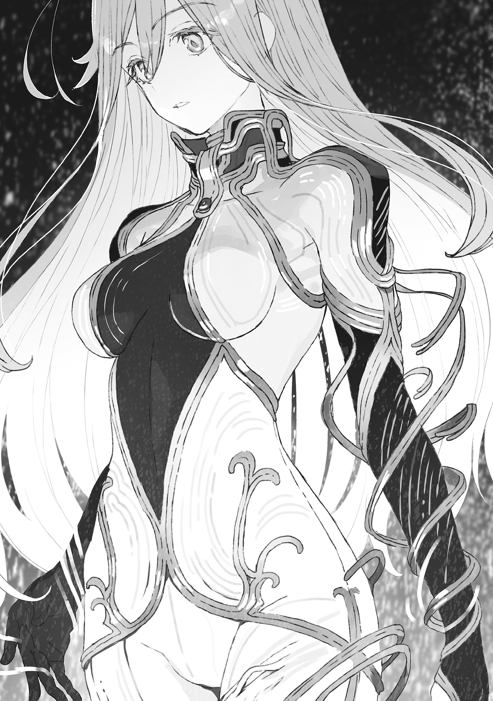
ただし使用者の生体電流を動力に稼働するため、また疑似神経線維には姿勢を保持する力がないために、必ず皮膚の上に展開させねばならない。つまり体にぴっちり密着しているにも関わらず、使用者の体組織を支えてはくれない。
つまり。
動くと揺れるのである。主に胸が。
発令所要員たちは慎ましく、あるいは露骨に目を逸らし、その中でもまるでコンソールにしがみつくようにしてスクリーンを凝視している少年が見回した目に留まる。
「......マルセル少尉。なぜそんなに頑なに目を逸らすのですか......!?」
仮にも大佐の下問に対し、マルセルはやっぱりホロスクリーンから目を逸らさない。
「遠回しに俺に死ねって命令してませんか大佐。今振り返ったらぜったいノウゼンにぶっ殺されます」
「し......シンは今、関係ないでしょう!?」
その名を聞いたら何故か余計恥ずかしくなってしまった。真っ赤になってレーナは叫ぶ。
『まあ......ほら。とりあえず次の作戦からは一回りデカい軍服、用意しようぜ女王様』
同情を禁じ得ないという口調で同調越しにシデンが言い、無言で出ていったフレデリカが連邦軍の鋼色の、男物のブレザーを持って戻ってきてよいしょと背伸びしてレーナの肩にかけた。
スピアヘッド戦隊が配置についてしばし、管制の準備をするからと一度切られていたレーナとの同調が再び繫がった。
『打撃群各位。遅くなりました』
「いえ。......大佐？」
気づいてシンは問う。同調を切っていた、その十分ほどの間に。
「何か、ありましたか？」
『何がですか』
やはり。
「声が。............機嫌がよくないようなので」
隠す気もないとわかるほどに、銀鈴の声が尖っている。口調も何やらつっけんどんだ。
『なんでもありません』
なるほど、何かあった。
戦闘が終わったら誰かに聞こうとシンは思う。フレデリカかマルセルにでも。
なんだかは知らないが、本人には聞かない方がいい気がした。
レルヒェが報告する。何故か妙に、申し訳なさそうに。
『......死神殿。その、〈アルカノスト〉、配置完了しましたゆえ......』
「......？ 了解。大佐、機動打撃群も配置完了です」
『ご苦労さま。別命あるまで、そのまま待機してください』
一つ息を吐いて、レーナはどうにか気を取り直したらしい。普段の凜とした銀鈴が、それでもまだ少し動揺の色を帯びて言う。今度はなにやら、もじもじと恥ずかしそうな響きで。
伝わってくる感情がなんだか妙に強い気がするなと、シンは眉をひそめた。互いの意識を介する知覚同調は、顔を合わせて話している程度の感情も伝わるのだが、今この時に限ってはそれがやけに鮮明だ。
「......何か......」
『待機です！ ノウゼン大尉』
「............了解」
時刻は正午をとうに回り、日暮れにはまだあるものの、雪がちらつき始めて空は暗い。銀粉を刷いた重い鉛色の雲から、音もなく降り来る白片の群。
レーヴィチ要塞はその向こうに、蹲る巨人の死骸のように傲然と聳えている。
高低差最大三百メートル、最小百メートル余りの切り立つ断崖絶壁。降雪の絶えない今はその断崖に厚く氷の裳を纏い、鋼鉄の色彩をした装甲板が頂をぐるりと取り巻く。
地勢はこの辺りでは要塞周辺が最も高く、南の競合区域へ──つまりは今、シンたちがいる針葉樹林へ向けて緩やかに下る。要塞上からの迎撃のために意図的に森を切り開いたのだろう、要塞周辺は不自然なまでに遮蔽物のない平原が半径数キロに亘って広がっていた。
攻撃目標としたのは南北に長い菱形をした岩山の、その南東の斜辺で、そこが最も高低差が小さく森林帯からの距離も離れていないが。
アンジュが言う。
『......こんなところ、のこのこ出ていったら射的の的ね』
『っていっても、ここを出てくしかないんだよね。......ああいう城じゃなかったら、とりあえず砲撃叩きこんでやるんだけど』
四方を囲む城壁内にいるということは、四方のどこにも逃げ場がないということでもある。一定範囲内を榴弾片で薙ぎ払う面制圧には、おあつらえ向きの標的だ。
けれど要塞には、氷河の浸食でできたという分厚い岩盤の天蓋がある。
今は金属の柱で補強しているそれは、砲撃や爆撃といった空からの攻撃に対し一定の防御力を持つ。それこそ電磁加速砲型や爆撃機を用いた超重量・超高速の砲爆撃ならともかく、生半な砲撃などは通らない。
それを踏まえてのセオの冗談だったのだろうが、中に仲間を閉じ込めた要塞だ。案の定、クレナがぎゅっと眉を寄せる気配。
『ライデンたちが中にいるのに？ ......一応、その、レーナだって心配だし』
『たとえば、の話でしょ。だからシンだって、砲兵仕様の〈ジャガーノート〉部隊はベルノルトたちの方に回したんじゃん』
〈レギンレイヴ〉は主砲、副兵装とも変更が可能で、榴弾砲を装備した砲兵仕様機も機動打撃群には二個大隊が存在する。そのどちらも、今は遅滞戦闘に回っている。セオが言うとおりこの要塞の攻略には使えないのと、重量級の〈レギオン〉に対峙する遅滞戦部隊に大火力の援護を割り当ててやるためだ。
要塞の周辺には敵影も、〈シリン〉以外の亡霊の声もない。城内のみ、それもどうやら要塞の地上区画付近にいるらしい叫喚の群を聞きつつシンは言う。
「アンジュ。城壁と天蓋の隙間から、ミサイルを通せないか？」
『ちょっと、シン!?』
『うーん......』
クレナが慌てる一方、アンジュは首を傾げているようだ。
『〈ジャガーノート〉のミサイルは目標の指示はできるけど、進路の指示はできないわよ。それに、あの基地の主要施設は地下でしょう？ 地上部の掃討はともかく、地下施設に侵入してる〈レギオン〉には届かないわ』
「地上を一時制圧できれば、突入の時間稼ぎにはなるかと思ったんだけど。......それも無理か」
『まあ、つまり、やっぱりよじ登るしかないってことだねー......』
黙って聞いていたダスティンが言う。
『......純粋な疑問なんだが。北西の正面ゲート側を登るのはなんで駄目なんだ？ 作戦会議では検討にも上がらなかったから、駄目なことはわかったんだけど、あそこは正規の道だろ。断崖絶壁をワイヤー撃ち込んで登るより、早いし確実なんじゃないのか？』
シンは一つ瞬いた。
エイティシックスにとっては常識に近い知識だったから、それに疑問を持たれるとは思ってもみなかったのだ。
「出入口は、敵が待ち構えてるから。......それにあの道は特に、攻め込むために登ると集中砲火を浴びる造りになってる」
『......集中砲火？ あ......！』
気づいたらしい。
レーヴィチ要塞北西の正規の登攀路は、不必要になだらかな坂と急なヘアピンカーブが繰り返される、細い九十九折になっている。そして無理にまっすぐ登るのを封じる道の外側の障害物と、登攀路を扇状に見下ろす正面ゲートと左右の城壁の無数の銃座。
道なりに進めば遮蔽物もないままに、三方からの集中砲火に長時間晒される破目になる。正面ゲートまでたどりつくどころか、無駄に犠牲を出した挙句に擱座した残骸で後続の進路を塞ぐだけだ。
「でも、城内にそういう砲はいないんだろ。それに道なりに行かなくても......」
「いないと確認できたわけじゃない。道を無視しようにもあのとおり障害だらけだし、多分、少しでも舗装を外れると地雷がある。砲撃での地雷除去も不確実だ」
地雷を除去しきる前に崩れそうな、意図的に脆い箇所も見て取れる造りだ。性格の悪い。
聞いていたらしいヴィーカが言う。性悪の虎のように嗤って。
『ご名答だ、ノウゼン。どうせ今、性悪とか思ったろうことまで含めてな。......そういうわけだ、新兵。この城に限らず、真正面から馬鹿正直に攻め込むのはなるべく避けろ。出入口と道とは必ず人が通る場所だ』
罠を仕掛けるには最も効率がよく、最も防衛側が警戒している。
『城内に突入した後も注意しておけ。〈レギオン〉どもが多少踏み荒らしているとはいえ、防衛用の仕掛けが残っているかもしれんぞ』
『......あんた、まさか自分の城の中にまで地雷とか仕掛けてるのか......？』
『意図して仕掛けてあるだけマシだと思うが？ ......自軍の支配域に、不発弾や地雷が残っていないと思うと痛い目を見るぞ』
『............』
〈サギタリウス〉の光学センサが足元を見た。どことなく居心地悪げな動きだった。
『だから、嫌でも崖登りするしかないってわけ。......まずは、偵察もね。誰がいく？』
数秒沈黙してからヴィーカが言う。
『お前たち......まさかまだ理解していないのか？ なあレルヒェ』
慎ましく沈黙を保っていたレルヒェが応じて言った。
どこか得意げに。
『お忘れですかな、皆様？ 我ら〈シリン〉、そのための使い羽ですぞ』
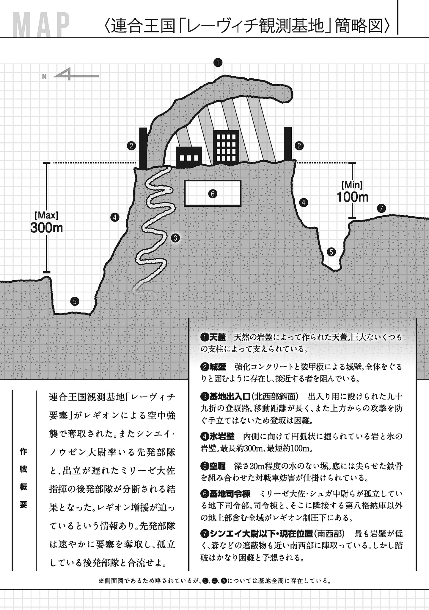
一個分隊四機の〈アルカノスト〉が森を飛び出す。攻城部隊本隊から距離を置くように迂回し、あえて直線上に宿営も本隊も置かない地点。砲撃を警戒して互いに百メートルほどの距離をおいた小隊楔隊形で、金属の爪が雪を穿って地に食い込む異音で疾走する。
『......死神殿。データリンクが来ましたゆえ、転送しますな』
レルヒェの言葉に続いて、〈アンダーテイカー〉のコクピットにホロウィンドウがポップアップ。偵察部隊のガンカメラの映像が、〈チャイカ〉を経由して表示される。要塞まで残り数百メートルの至近。その位置からでは天を摩するような、断崖絶壁と装甲壁。
接近すれば改めて、難攻不落と見てとれる。
高さ、実に百メートルもの氷の絶壁。その上に更に高く聳える、装甲板で覆われた分厚い強化コンクリートの城壁。その上岩壁は内側に緩く弧を描くように意図的に削られ、這い登ることも不可能な形状だ。ワイヤーアンカーを使っても、頂上まではとても一息には登れない。
加えてその前には幅一〇メートル余り、深さ二〇メートルほどの空堀が掘られていて、それは岩棚の周囲を一か所の例外もなく取り巻いている。フェルドレスとしては軽量の〈レギンレイヴ〉や〈アルカノスト〉が飛び越えられない距離ではないが、その先は硬く厚い氷の壁だ。アンカーを撃ち込むのに失敗すれば、地の底まで転げ落ちることになる。
そして濠の底と前にびっしりと打ちこまれた、尖らせた鉄骨を組み合わせた対戦車障害。
『......まあ、でも、城壁の真下にアンカー撃ち込んで巻き上げれば、何とか登れるかな』
同じ映像を見ながら、セオが言う。
『あんまり撃ち込むと崩れるだろうから、大した数は登れないけど。対戦車障害は砲撃で吹っ飛ばしてその間を抜けて。ゲート周辺さえ制圧すれば、後は普通に入れるだろうし......』
言いさしてふっと口を噤んだ。
先んじてシンの異能が移動する〈レギオン〉の動きを捉える。城壁頂上、鋸歯を描く矢狭間に鉄色の巨影が姿を現す。兵器に特有の威圧的なシルエットと、背に負う砲の長い影。
レルヒェが言う。
『女王殿。死神殿。......あの砲にはそのまま撃たせます。攻撃手段と範囲を確認したい』
「なるべく直撃はもらうな。補給がない以上、戦力低下はなるべく避けたい」
『御意に。......む』
城壁上からはほぼ真下となる〈アルカノスト〉を狙い、鉄色の影が身を乗り出す。
視線を追ったシステムが自動で焦点を向け、ズームオン。遠い敵機の姿が鮮明になる。
大きさは対戦車砲兵型と同じ程度か。〈レギオン〉に特有の鉄色の機体。だがあからさまに、装甲がない。四脚の本体に天を衝く長大な砲を、機関部がむき出しのまま背負っている。サソリの尾のように長く背後に引きずる一対の鋤状部品。
嗷、と耳を劈いた亡霊の咆哮からして〈レギオン〉であることに間違いはない。けれど七年に亘り〈レギオン〉と戦い続けてきたシンをして、見たことのない外見だ。
......いや。
確かに〈レギオン〉としては見覚えがない。だがその細部の形状には見覚えがあった。長大な砲身、重厚で威圧的な機関部。砲口の物々しいマズルブレーキと、反動吸収のために砲撃時に打ち込む後部のスペード。支援のない八六区では目にすることのない、だが砲支援が当然の連邦では、戦闘の合間に何度か見た。
戦車砲よりも、ライフルよりも。戦場において最も多くの人間を殺傷する、殺意も人殺しの自覚も持たぬ戦場の神──......。
榴弾砲！
「レルヒェ、〈アルカノスト〉を下がらせろ。あれは──」
ようやく、シンは悟る。
〈レギオン〉が部隊の一部を、わざわざ重量が増加する緩衝コンテナに入れて投擲した理由。
減速してなお、自力で着地できる運動能力がない。前線に出るのを想定した兵種ではない。
「長距離砲兵型だ！」
轟然。
〈レギオン〉たちの巨砲が──一五五ミリ榴弾砲が、空堀の前で足を止めた〈アルカノスト〉に向け、一斉射を放った。
「──長距離砲兵型!? 後衛の砲兵機種が、最前線にですか!?」
思わずレーナが聞き返してしまったのも無理はない。
長距離砲兵型は──榴弾砲は強力無比な火力を誇る反面、近距離戦闘には全く向かない兵種だ。まして要塞の攻略に、投入してくるなんて。
「何故そんな......」
ちっ、とヴィーカが、荒っぽい舌打ちを零した。
「......そういうことか。ミリーゼ、〈アルカノスト〉は下げるな。長距離砲兵型の投入目的は、司令棟の隔壁の破壊だ」
あ、とレーナは息を吞む。
一五五ミリの巨大な榴弾は、直撃すれば戦車をも粉々にする破壊力を持つ。強靭に造られたこの司令棟の耐爆隔壁でさえ、砲撃を集中されればいずれ削り切られるだろう。
固定目標に対し最大の破壊力を発揮し、なおかつ電磁射出機型が投擲可能な軽量。それ故の選定であり投入だ。確認されている兵種からして、電磁射出機型の投擲限界はおそらく一〇トンそこそこ。戦闘重量五〇トンを超える戦車型や一〇〇トン超の重戦車型など、砲塔だけで上回る。
対して、長距離砲兵型は榴弾砲こそ重量がかさむものの、それに脚部がついただけの簡素な形状である分、総重量は軽い。特に装甲していないのは、重量軽減には非常に有利だ。
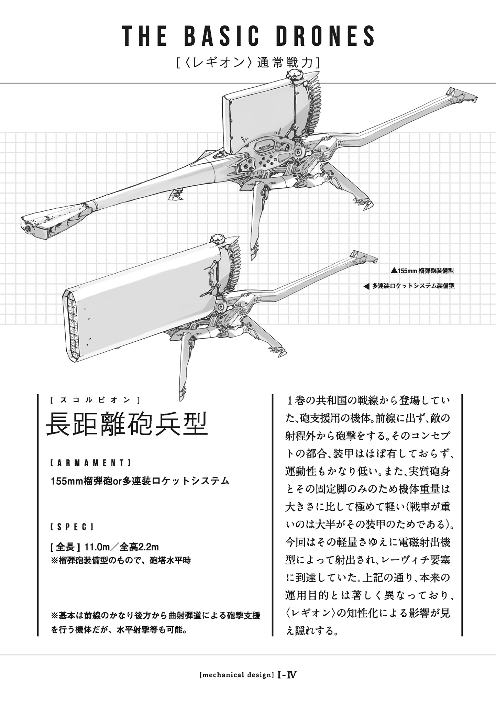
条件を満たす兵種だから、投入してきた。そこに砲兵は戦線後背に置くという、人間の常識はない。
全体のため、地雷原を自らの身で啓開することさえ厭わぬ〈レギオン〉と、仲間の死傷を嫌う人間は、同じ戦場にあっても則る論理がまるで異なる。そこから導き出される行動も。
──同様に。
「......面制圧を主任務とする長距離砲兵型に、〈シリン〉とはいえ無策に接近させるのは......」
「城壁を守る必要がなくなれば、長距離砲兵型はこちらを撃ってくるぞ。そうである以上、外の連中にはある程度〈レギオン〉どもを引きつけていてもらう必要がある」
「っ......」
人を指揮するレーナと、人ではない〈シリン〉を統べるヴィーカの則る論理も。
だが、戦場においてはヴィーカこそが正しい。目先の数人の死を厭う半端な甘さは、指揮下の全員の死に繫がるだけだ。
吐き気を堪えてレーナは命じる。知覚同調で繫がるシンたちには、この嫌悪と恐怖が伝わらないように祈りながら。
「......ハンドラー各位。引き続き、第二班前進。次からは可能な限り回避し、敵砲を城壁上に張りつけなさい。敵に楽をさせないように」
「......了解。〈ジャガーノート〉も接近を試みます」
半径三〇メートル圏内を一撃で薙ぎ払う一五五ミリ榴弾、その一斉射だ。
ひとたまりもなく粉々になった〈アルカノスト〉の残骸を苦く見つめつつ、シンは応じる。
苦しげなレーナの命令の意図がわからない彼ではない。長距離砲兵型は城壁の防御という点では、決して最適の兵種ではない。四〇キロの射程は長すぎて、間接照準と直接照準の合間に空白地帯が生まれる。それが前線に投入されているのは、本来の目的が別にあるからだ。
こちらで引きつけ続けねば、中にいる彼女たちが危ない。
その接近のための援護として送り出した、小隊の隊長に意識を向けた。城壁上の〈レギオン〉を排除するための部隊。敵の頭を押さえ、敵を下がらせ、岩壁への接近を容易にするための。
「......クレナ。城壁上を狙撃可能なポイントはあるか？」
その問いに、きり、とクレナは唇を嚙む。地図を確認し、割りだした狙撃ポイントの一つ。雪の森の小高い岩棚の上。
「いくつかは。けど......」
最前線で敵機と渡り合うシンの役に立ちたいからと、磨いた狙撃の技量だ。こういう時に邪魔な敵機を排除するのが、自分の役目だ。
これだけは絶対に必要としてもらえる、これがある限りは戦場では共にいられる、誰にも、それこそレーナにだって負けない自分の、自分だけの役目だ。
それなのに、こんな報告をしなくてはならないなんて。
岩棚に食い込んで薄く雪をかぶった、まだ真新しくセンサを明滅させている散布式散弾地雷の群を見回して呻いた。おそらくは、竜牙大山攻略作戦を中断して戻ってくる間に。
「地雷だらけだよ......！ どこもかしこも、対戦車地雷がばら撒かれてる！」
ずん......、と重い炸裂音が、厚い岩盤に囲まれているここまで響く。
ちらりと音の方に目をやり、ライデンは言う。〈ジャガーノート〉のセンサ類では無論、コンクリートと岩の壁の向こうなど見えやしないが。
「通路の防衛戦が始まったか。......外の連中、苦戦してるようだな」
『そりゃああんな、アホみたいな崖でロッククライミングなんざさせられちゃ、いくら死神ちゃんでもな』
レーヴィチ要塞基地地下最下層、第八格納庫。
一階層をまるごと使用した基地最大の格納庫は、幅、奥行きともに五百メートル以上もの巨大な空間だ。民家程度ならそのまま入る高さの天井にはライトの他にガントリークレーンが並び、ぐるりと取り巻くキャットウォーク。空のコンテナを積み上げてバリケードを築き、〈ヴェアヴォルフ〉とキュクロプス〉を筆頭とした〈ジャガーノート〉たちはその陰に潜む。
〈ジャガーノート〉の光学センサが見据える先、エレベーターに繫がる入口は今は耐火シャッターに塞がれて、そのシャッターの向こうで激しい炸裂音が繰り返されている。上部階層からのシャフトを伝って降りてきた、〈レギオン〉どもの自爆攻撃。
自走地雷の炸裂と斥候型の体当たりで蓄積したダメージに、さしもの頑丈なシャッターが軋んで歪む。どん！ と一際大きな衝撃音でついに大きくひしゃげた隙間に覗く、蠢く鉄色の群。
......来るか。
「──全機、兵装の安全装置解除。別命あるまで待機............」
轟音。
耐えかねたシャッターが弾き飛ばされて派手に吹き飛ぶ。斥候型と自走地雷の混じり合う群が濁流のように雪崩れ込む。
煌めく光学センサが獲物を求めて格納庫の薄闇を見回すのと、ライデンが命令を発するのが全く同時。
「撃てッ！」
刹那、横殴りの火線が殺到。
機関砲の低い咆哮と、各機二挺の重機関銃の金切り声の叫喚。斥候型の装甲片が、引き千切られた脚部が、ばらばらになった自走地雷の手足が、炸裂の黒炎を背景に舞い飛ぶ。
頽れる第一列をけれど踏み越え、叩きつけられる弾雨を気にも留めずに、〈レギオン〉たちはなおも格納庫への突入を敢行する。銃身の過熱を防ぐための数秒の間に距離を稼ぎ、仲間の死骸を踏み砕いて無音のままに、瞬く間に迫りくる。
『っは、アリみてえにぞろぞろと。......通すんじゃねえぞお前ら！ あたしらの後ろにゃ、退がるとこなんざねえんだからな！』
吠えて迎え撃ったシデンたちブリジンガメン戦隊と交錯。機動兵器同士が互いの死角を狙って動き回り、間隙に自走地雷がもぐりこむ乱戦状態にあっというまに陥る。
〈ジャガーノート〉に限らず、陸戦兵器の類は上面の装甲が薄い。その弱点を捉えるべく、自走地雷の一部がキャットウォークを目指して壁を登り──。
『そら来たっ、叩き落とせ！』
〈ジャガーノート〉の後背、格納庫全体を見下ろす待機室の硝子を突き破って、アサルトライフルのフルオート射撃がそいつらに襲い掛かった。討ち洩らしの掃討をかって出た、エイティシックスの整備クルーたちの集中砲火。
負傷やその後遺症で第一線は退いたが、彼らも元々は戦闘要員だ。銃器の扱いには慣れている。戦場の空気にもすぐ傍で待ち構える死の気配にも。
斥候型の一機の照準がそちらを向く。「退避、退避！」との叫びと慌ただしい足音の直後に、一四ミリ機関銃の掃射が待機室を薙ぎ払う。直後に飛び掛かったシャナの〈メリュジーヌ〉が、その斥候型を踏み潰す。
格納庫全体を見回したらしいシデンが吐き捨てた。
『高機動型とやらは......こっちにも来ねえか』
「今、来てほしい相手でもねえけどな」
最初に攻め込んできた高機動型は観測塔を制圧した後、城壁と各通路、いずれの戦闘でも確認されていない。
地下区画の隔壁には高周波ブレード対策として高圧電流の罠が仕掛けられているものがあり、それに掛かってブレードを弾き飛ばされたのが目撃された最後だ。シンの索敵では間違いなく基地のどこかにいるらしいから、故障でもしたのを修理しているのか、それとも。
「──ありゃ、切り札だろうからな。〈レギオン〉どもの」
基地の制圧は雑兵に任せ、......最も必要な戦闘に備えて温存しているか。
「強力だが、代えが利かねえ。俺たちみたいな雑兵相手に、使うようなもんじゃねえんだろ」
何をも斬り裂き、何をも討ち取り、それゆえに──唯一無二。
それが投入されるにふさわしいとしたら、例えば、同じく唯一無二の兵力である、シンと〈アンダーテイカー〉との。
ふん、とシデンは獰猛に笑ったようだ。
『雑兵、ねえ。その余裕、とっとと引っぺがしてやりてえんだけどな』
「やめとけって。......頭数の足りねえ今の状況で、やりあっても仕方ねえだろ」
「──五号通路。第三まで退避しろ。薙ぎ払う。三十秒後に再突入して奪取。零号、重機関銃装備の斥候型が来るぞ。小銃隊後退、対戦車ライフルを援護。顔を出したら叩け」
複数の通路で同時多発する戦闘の指揮を一手に執る、ヴィーカの矢継ぎ早の指示が司令棟防衛戦の苛烈を物語る。
司令棟へ続く全ての通路は、いずれも分厚い三重の隔壁で封鎖されているが、それとて無防備に攻撃にさらさせていてはいずれ削りきられる。近づかせぬため隔壁の前に出た兵士たちと、軽量級の〈レギオン〉たちが隔壁に続く通路を巡り、熾烈な攻防を繰り広げている。
対人・対軽装甲散弾地雷が連続起爆し、通路を薙ぎ払う大音響が発令所の空気を揺らす。二〇ミリ対戦車ライフル砲の激烈な砲声が、別の方向から鋭く響き渡る。
幾つもの通路の映像と何かのステータスを目まぐるしく切り替える、半円状に展開したホロウィンドウをざっと見回して鋭く息をつき、帝王紫の片目がレーナを見返した。
「自走地雷の一体でも通したら、それで詰みだ。ここは衝撃波が反射して、逃げ場がない」
「ええ」
小さくレーナは頷いた。
敵の大半は自走地雷だが、この司令棟ではそれこそが最も恐ろしい敵だ。閉鎖空間で高性能爆薬を起爆させた場合、衝撃波が壁面で反射を繰り返し増幅する。人体の中でも特に脆弱な脳と内臓は、その衝撃波に容易く破壊されてしまう。
先の作戦で、高機動型を撃破するために〈アンダーテイカー〉を囮に生身を晒したシンは、だから一歩間違えば危なかったのだ。それしか手がなかったとはいえ、衝撃波を反射・減殺してくれる遮蔽物に身を潜めていたとはいえ何ということをしたのかと、報告書を読んだ時にはぞっとさせられた。
「──換気ダクトを幼児型が、這ってくる可能性は？」
酸素がなければ窒息する人間には必須の設備だが、それ故に外部に直接繫がる場所でもある。
そして籠城戦において突破口となり得るのは、正規の通路だけとは限らない。
「子供が液火を抱えて、潜り込んでこない保証があるか？ ......この城が建てられた当初から、子供だろうが人が入れる空間は通路と居室以外に作ってない。そのダクトも、中は細い金属管の集合だ。阻電攪乱型も通れん」
ちなみに液火とはナフサを主原料に調合される、中世の液状火薬である。水で消えにくい特性を持ち、海戦や攻城戦でしばしば用いられた。
が、そんなものを子供が抱えて忍び込んでくる心配をしなければならないほど、イディナローク王家は民に恨みをかっていたのだろうか。
どん、と遠く、爆発音が発令所の空気をわずかに揺さぶる。ヴィーカの前に展開されているホロウィンドウの一角で、表示されていた散弾地雷のコードがまた一つ減る。炸裂した場所は妙に厳重に守られつつも道幅が広く均一で攻めやすい、けれど実はどこにもつながっていない囮の通路。人は弱点を攻めたがり、守られている場所を重要だと思い込む。その心理を利用して侵入者をコントロールするための仕掛けに、〈レギオン〉もひっかかったらしい。
一瞥してヴィーカは鼻を鳴らす。張り巡らされた無数の罠。けれど損耗し、消耗し、刻々と減っていくばかりのこの棟の守り。
「人などどうせ、生きているだけで誰かの邪魔だ。それがどんな聖人君子であろうともな。......そうである以上、恨みの心当たりがなくとも備えるに越したことはあるまいよ」
日は傾いて吹き荒ぶ雪風はいよいよ強まり、横殴りの白い紗幕に視界は酷く悪い。
斥候型の複合センサもそれで多少は妨害されるのだろう、長距離砲兵型と斥候型の砲火は正確さを大幅に欠き、接近を多少楽にしたが、一方で視界を覆い、降り積もる雪は〈ジャガーノート〉にも牙を剝く。意図的に残されていた伐採跡の切り株に躓き、慣れない氷原に脚部を傷め、動けなくなる機体が続出する。
遮るものもなく斜めに降り注ぐ榴弾砲の水平射撃に対し、岩壁下からの砲撃は、八八ミリ戦車砲も一〇五ミリガンランチャーも鋸歯状の胸壁に阻まれてほとんど届かない。専用の強化コンクリートと装甲板の、分厚い胸壁。城壁上からの射線は確保しつつ攻城側の射撃は徹底的に弾く、戦闘城塞の完成形。
闇雲に、だが苛烈に撃ち込まれる猛砲撃をかいくぐり、〈アンダーテイカー〉がついに岩壁基部に取りつく。氷の急斜面に脚部のアイゼンとワイヤーアンカーを打ちこみ、ワイヤーを巻き上げて十トンの機体を登攀させる。
この上にももちろん〈レギオン〉はいるが、よじ登る〈アンダーテイカー〉は吹雪の紗に邪魔されてどうやら見えていない。やや遅れて前進してきたセオの〈ラフィングフォックス〉が後に続く。二人が指揮するスピアヘッド戦隊の前衛小隊も。
目を逸らすためにあえて別の胸壁を砲撃している、アンジュ指揮下の面制圧小隊の砲声が吹き荒ぶ風を貫いて届く。刹那弱まり、また強さを増した風に、白魔の幕が一瞬だけ途切れる。
矢狭間から身を乗り出し、覗きこんでいた自走地雷と、目が合った。
「っ、......退避しろ！ 取りつかれるぞ！」
回収が間に合わないワイヤーをパージ。岩壁を蹴って空中へと思いきり身を躍らせる。高機動戦を考慮して高性能のショックアブソーバーを搭載した〈ジャガーノート〉にも厳しい高度だが、それ以外に回避の方法はない。
跳び離れた眼前を、落下してきた自走地雷が過ぎる。反応の遅れた僚機が組みつかれ、自爆に巻き込まれてもろともに吹き飛ぶ。......対戦車地雷型。密着していれば〈ヴァナルガンド〉の上面装甲をも貫くメタルジェットに、装甲の薄い〈レギンレイヴ〉など一たまりもない。
空中で姿勢を制御し、四脚全てで着地。シンにとっても慣れない氷の戦場で雪上装備だ。殺しきれなかった衝撃がアイゼンを通して浸透し、何かのパーツに亀裂が入る鋭い異音がコクピットまで響く。
耳障りなアラートとともに警告表示が点灯。一瞥して目を眇める。右後脚の関節機構が一部破損。......それでもまだ、動けないわけではないけれど。
追撃の砲口を向けた長距離砲兵型に、横を抜けた〈ジャガーノート〉が掃射を叩きこんで牽制する。背部ガンマウントの機関砲と両の機銃、どれも砲身が焼けつくことも厭わない全力の射撃だ。相反して冷め果てた声が同調を通じ届く。サンダーボルト戦隊戦隊長、ユート・クロウ少尉の声。
『ノウゼン、さがれ。その機体の状態では、お前のいつもの戦闘はできない』
「......だが、」
ちらりと彼の乗機である〈ウルスラグナ〉の光学センサがこちらを向いた。〈ジャガーノート〉が口を利いたらきっとこんな声なのだろうと思う、機械じみて平坦な声が続ける。
『お前がやられると索敵に支障がでる。突入時に使うべき近接戦闘力と、我々の誰よりも長い戦闘経験を失うのも痛手だ。......さがってくれ。ここは索敵と指揮に専念しろ』
長く、シンは息をついた。言うとおりだ。いくら戦局に何らの進展もない、この状況で前線を離れるのは業腹であっても。
「──了解」
地上区画を映すカメラの一つに榴弾砲の昏い砲口が映るのを、レーナは見る。
直後、メインスクリーンの大半がごっそりと暗転。城壁を巡る戦闘の光学映像、観測されている周囲の気象情報、敵部隊の推定機種とその機数。地下深くのこの発令所からは直接は見えない要塞外部の戦場の情報が、一度に全てブラックアウトする。......要塞基地最上部の天蓋外周、そこに仕込まれた外部複合センサとの接続ラインが切断された。
「予備回路作動。......ミリーゼ、復旧まで少しかかる。それまでは外からの報告を密に......」
「いえ、大丈夫です。全部覚えていますから！」
ぎょっとヴィーカが振り返ったのも、レーナの目には入らない。シンが割りだした敵機の位置。報告と外部カメラで把握していた彼我の部隊の展開状況。要塞基地の形状と周辺の地勢。弾道に影響する風速の平均と視界状況。それら全て、まるごと頭に入っている。それからどう動くかシミュレートすることも。
見えない戦場を頭の中で再構築するのは、遥か百キロ先の戦隊の指揮を執り続けたレーナには容易いことだ。だが、一個旅団、数千規模。部隊単位で把握し動かしているとはいえ膨大な数のシミュレートに──展開させた〈ツィカーダ〉が応じて高効率稼働を開始する。無数の疑似神経線維が、淡く紫色に発光してランダムな文様を描き出す。
「──サイス戦隊。西第三区画五番城壁に射撃を集中。弾倉交換を終えた長距離砲兵型が出てきます。リュカオン戦隊は〈アルカノスト〉第一八中隊と協同し、七番を掃射。第二二中隊の前進を援護なさい。スピアヘッド戦隊──......」
メインスクリーンの映像と各種ステータスが戻る。一瞥で脳内の戦場と実際のそれが合致していることを確認し、レーナはそのまま指揮を継続する。不可能とは思わなかったが、極端な集中も没入もなしに脳内地図を構築し、復旧後も緊張を切らさず指揮を継続できたのは〈ツィカーダ〉が補助してくれたおかげだろう。一個旅団との同時同調も、これなら──......。
その時視界に、ぎんいろの煌めきが飛び込んだ。
レーナとヴィーカを含め、発令所の全員が一瞬虚を突かれた。大人の掌ほどの翅をした機械仕掛けの蝶。阻電攪乱型。封鎖前に迷い込み、彷徨ううちにここまでたどりついたものか。
ろくなセンサも持たず、分厚い岩盤を越えて親機の指示を仰ぐ術ももはやなく。おそらくはエネルギー切れ寸前で迷い込んだのだろう。阻電攪乱型自身も一瞬戸惑ったような羽撃きを見せ、けれど人間の鈍い思考などより遥かに早く、周囲の敵性体を認識した。
レーナの眼前で、威嚇するように羽を広げて滞空する。ちり、とその銀の翅脈が燐光を放つ。
阻電攪乱型は。
レーダーや無線、あらゆる電磁波を完全に封殺するほどの妨害波を──強力な電磁波を発生させる〈レギオン〉だ。
生身で、こんな至近距離で浴びればおそらく、ただではすまない──......。
甲高い異音が次第に高まる。わずかに空気を焦がしつつ、阻電攪乱型はその燐光を強め──。
「──だあああああっ！」
立ち上がったマルセルが、アサルトライフルの台尻で阻電攪乱型を叩き落とした。
翅の力の弱い蝶の形状は、その衝撃にあっけなく吹き飛ばされて床に叩きつけられる。跳ねて転がり、翅の機構が故障したのか飛びたてずにもがく。
「......よく動いた、マルセル少尉」
同時にヴィーカが拳銃を抜き、流れるように照準、発砲。
連合王国でもごく一部の特殊部隊しか携行しない、九ミリ機関拳銃。今は単射に設定されたそれが、阻電攪乱型の中枢部を正確に貫いて四散させる。
思わずレーナは長々と息をついた。危なかった。今のは本当に。
「すみません、マルセル少尉。......助かりました」
緊張の糸が切れたのか、マルセルの方こそ死にかけたような顔色になっている。
「いえ......その。なんか必死で。ていうか、こうでもしないと、ノウゼンの奴に合わせる顔がないんで......」
ふぅっと強く息を吐き、蹴り飛ばした椅子を直して管制席に戻る。己の担当のホロスクリーンを見据えた横顔は、すでに彼の戦場への帰還を完了させていた。
脚に後遺症を負い、管制官になる前は。この少年は〈ヴァナルガンド〉の──最前線で戦うフェルドレスの操縦士だったのだと、人事ファイルの記述をレーナは思い出す。
「......次の敵が出てきます。引き続き指揮を、お願いします」
「......くそっ」
管制していた〈シリン〉が、小隊まるごと知覚同調の対象から消える。
その意味することに、その若いハンドラーは悲憤を吐き捨てる。一度繫いだ同調は〈シリン〉の側からは切れない。それがハンドラーの意図に反して断たれる理由は、ただ一つ。
眠ることも気絶することさえできない哀れな彼女たちが、戦死した時。
「くそっ、くそっ、くそっ！ エイティシックスめ、人でなしの化物どもめ！ いいように囮に使いやがって......！」
連合王国のハンドラーにとって、〈シリン〉とは単なる兵器ではない。
彼女たちは大切な相棒であり、信頼する部下だ。愛する恋人や妹や娘のように、考えている者さえいる。
〈シリン〉に限らず、軍用犬や無人機のハンドラーは自分の管理下の犬や無人機に感情移入し、非常な愛着を持つ傾向がある。敵に犬を殺されたり、無人機を撃墜されたりしたハンドラーが〝相棒〟の復讐に逸るケースも珍しくない。
まして疑似的なものでも人格を持ち、あどけない少女の姿の〈シリン〉ならなおさら。
その〈シリン〉たちが、次々と消費されていく。百メートルもの断崖絶壁とその前に降り注ぐ砲火に無謀な突撃を敢行させられ、囮として使い捨てられて。
心が痛まないはずがない。
彼女たちを囮に進む、エイティシックスたちに憤りと憎悪を覚えるのも当然だろう。
それは程度の差こそあれ、ハンドラーなら誰もが同じだ。
同じこの北の王国の同胞なら、まだ耐えられる。高貴なる王族の方々なら、あるいは光栄といえるだろう。けれど下賤な異国の異民族の、それも祖国に見捨てられた劣等民風情が、愛する〈シリン〉を使い潰していく。そのことが〈シリン〉たちの戦死以上に、ハンドラーたちを激させ、憤らせる。悲嘆と瞋恚に涙さえ流れた。
あんな。
異民族の。劣等民の。......化物どもなどに。
「ちくしょうっ......！」
「やめないか」
見かねて年配の一人が諫めた。紫黒の軍服の階級章は大尉。ここにいるハンドラー、全員の指揮官だ。
「隊長！ ですが！」
「我々がどう思っていようとも、彼女たちはそういうものだ。そう扱われることをも受け入れて、あの機械乙女となるを志願した者たちだ。憤るべきことじゃない。......それに」
この基地のハンドラーの隊長である彼は、攻城を指揮する共和国軍人の少女と同調している。その直属の部下である、城の外のエイティシックスたちの総隊長の少年とも。
そのどちらもが、城の外で、あるいは目の前で仲間たちが死んでいく痛みを押し殺しながら指揮を執っている。彼らにとっては仲間でもなんでもない、〈シリン〉たちが壊されていく様にも、心を軋らせながら。
悲しんでいないわけではない。......平気で使い潰しているわけではない。
なにより。
「エイティシックスたちも死んでいる。彼らの指揮官と我らが殿下と、そして我々自身をも助けるために。......恨むのも憎むのも、筋違いというものだ」
正面ゲートを狙った陽動に、〈レギオン〉たちは乗ってこない。
戻ってきたクレナが岩壁下からの狙撃ポイントを探しているが、それも見つからない。
「ちっ......」
つい舌打ちを零し、焦っているなと自覚してシンは首を振った。苛立って、どうなるものでもない。むしろ死人が増えるだけだ。
けれど積み重なっていく〈アルカノスト〉と〈ジャガーノート〉の被撃破数、負傷者の数と死者の数。反対に恐ろしい勢いで減っていく弾薬の数。それでいて何一つ戦局に進展のないもどかしさと、刻々と近づくタイムリミットへの、腹の底の焦げつくような焦燥感。
敵の増援が近づく。城内の敵の数はまるで減らない。それがわかってしまうからこそ、こちらばかりが減耗していると理解してしまえるからこそ、焦りばかりが募っていく。
手の届かない基地内部では、何が起きているかもわからないのに。
その焦燥は、彼だけが覚えたものではないようで。
『──マトバ少尉!? 駄目です、指示に従ってください！』
『でも！ 少しでも砲撃を引きつけないと仲間が......がっ!?』
命令を守らず、攻撃目標でない南端の壁面を登ろうとした小隊が、左右から機銃掃射を喰らって転げ落ちる。除去しきれていない対戦車障害の上に転落して突き刺さる異音が、シンの元まで聞こえた気がした。
長距離砲兵型の猛砲撃を脱落機を出しつつも抜け、何度目かに岩壁に取りついたサンダーボルト戦隊を、胸壁の矢狭間から斥候型が見下ろす。〈ジャガーノート〉の位置を確認して一度引っ込み、重たげな何かを全身で押して再び現れる。ドラム缶。そのまま崖下に、突き落とした。
『ッ......!?』
サンダーボルト戦隊が岩壁を蹴って飛び離れた直後、落とされた幾つものドラム缶が次々とその残影を掠めて落ちる。対戦車障害に突き刺さり、あるいはその狭間の地面に落下してひしゃげ、衝撃に裂けて中身をぶちまける。......液体。透明な。
追って自走地雷が自ら城壁から身を投げた。百メートル以上を真っ逆さまに、無抵抗に落下し、地面に接触する刹那に自爆。
転瞬。
ごう、と雪の曇天を衝き。朱く透明な業火の壁が、空堀の前に立ちはだかった。
降りしきる雪をも押しのけて轟々と燃え盛る。上昇気流に焰の欠片と六花の破片が渦を巻き、鉛色の世界に朱く赫く屹立する。
さすがに立ち尽くした〈チャイカ〉の中、レルヒェが呻く。
『火焰濠──！ 燃料庫のガソリンを持ち出したな......！』
がらがらと、更に城壁上からドラム缶が投下される。岩壁基部の、角度をつけた一角にあたって大きく跳ね、ガソリンをぶちまけながら空堀を飛び越えて火焰濠に飛び込む。火勢が一層、強さを増す。電気駆動の〈レギオン〉には無用の物資だ。惜しげもなく足止めに、使ってきたらしい。
そう、足止め。
小さく、シンは首を振った。
「ここはしばらく攻めこめないな。......嫌な手を打ってくる」
アルミ合金装甲の〈ジャガーノート〉は、火に弱い。炭素分子素材のワイヤーもだ。あの炎の中を突破していくのも、輻射熱に晒されながら岩壁を登攀するのも、不可能に近い。
セオから報告が入る。
『偵察隊から報告。他の壁も全部、燃えてるって。......この雪だからそんなに長く燃えてるものじゃないと思うけど。待つ、しかないよね......』
「............」
冷静に判断するならそのとおりだ。けれど今、時間は〈レギオン〉の味方だ。迫る増援。削られていく一方の、基地内の防備施設。それがわかっている以上、ただ待機し、時間を浪費する判断を下すのは──......。
『......いえ』
傍らで〈チャイカ〉が天を仰いだ。
『雪が、強くなります。......今日は、』
雪空はいよいよ暗く、大気に混じる雪の粒は一層密度を増している。下がり始めた外気温の表示が、日暮れが近いことを彼らに知らせた。
ファイドに引きずられていく擱座した〈ジャガーノート〉と、焼け焦げ崩れ落ちた〈アルカノスト〉の残骸。無意味に消耗させられたも同然の、弾薬とエナジーパックと消耗部品。
これだけの損害を被っていながら。
『ここまでの、ようですな......』
†
陽が、沈む。
空を覆う阻電攪乱型の銀の翅に乱反射したこの日最後の陽光が、天球を、地を覆う雪を赫々と燃え立たせる。
世界は赫く、影は黒く。
誰も驚嘆する余裕すらない、戦場の狂気の、絶景だった。
†
日暮れと前後して、要塞基地内外の戦闘は一旦終息した。
ホロスクリーンの各情報にそれを確認し、ふう、と息を吐いてヴィーカは言う。
「ミリーゼ、機動打撃群の指揮権の一時委譲を。先に休息をとってくれ」
戦闘中に、指揮官が発令所を不在にするわけにはいかない。
それゆえのヴィーカの発言だったが、レーナは生真面目に首を振る。
「いえ。先にヴィーカが」
「疲弊した頭で防戦の指揮を執るつもりか？ 卿の方が体力がない。だから、卿が休むのが先だ。......隈ができているぞ。顔色もよくない」
火焰濠の炎はやがて雪に負け、他に燃えるものもない岩の上で燃料が尽きて鎮火したが、その頃には戦場の支配者は天を覆う白魔へと移り変わっていた。
しんしんと降る、などという生易しいものではない。ほとんど水平に吹き荒ぶ雪風が視界を真っ白に奪いつくす、天の悪意のような猛吹雪だ。
前進が難しいのは無論、これでは光学センサの暗視モードもレーダーも効かない。火器管制系の照準波さえ無効化され、接触されるまで接近を検知できないこんな状況で〈ジャガーノート〉全機の索敵をシン一人が担うわけにもいかず、レルヒェの言うとおり今日の戦闘は継続不能となった。半日酷使した〈ジャガーノート〉や〈アルカノスト〉にも、整備は必要だ。
樹々が密集した針葉樹林の、奥に分散して置いた宿営は吹雪の影響も薄い。迎えに出た整備クルーに〈アンダーテイカー〉を預け、シンは凍てついた雪夜の大気に一つ息をつく。
ざくざくと雪を踏んで、ミチヒが歩み寄る。カイエと同じ極東黒種の──大陸東部の血が濃いのだという、象牙の肌と茶色がかった黒髪の小柄な少女。
「ノウゼン大尉。関節が凍って動けなくなりますし、補助動力装置の電圧も落ちますから、即応待機分以外は全機、輸送車のコンテナに入れた方がいいのです。即応待機の機体は、火を焚いて凍らせないようにして」
見返すと、ミチヒは疲労の濃い顔色でぱっと笑った。
「北部戦線出身なのです。雪の戦闘には慣れてますので。......北部配属だった子たちは他にもいるので、協力して対策広めてくるですね！」
「......頼む。でも、無理はするな。明日に備えて休んでくれ」
「はいなのです。ノウゼン大尉も」
ぱたぱたと手を振ってミチヒは歩み去る。見送ってシンも歩き出した。
ファイドに率いられた〈スカベンジャー〉の一群が、〈ジャガーノート〉の残骸を回収して戻ってくる。僚機に牽引されてきた〈ジャガーノート〉のキャノピが衛生兵たちにこじ開けられ、担架が呼ばれて中のプロセッサーが引き出される。その横を死体袋を二人がかりで抱えた整備クルーが、唇を引き結んで通り過ぎていく。
前線医療小隊のコンテナ車の横、張られたテントの合間に覗く黒い袋の山に目をやってから、スピアヘッド戦隊の重装輸送車の扉を開けた。
先に戻っていたアンジュが微笑む。
「お疲れさま。殿のクレナちゃんも、そろそろ帰ってくるって」
「ああ」
車内には他にダスティンとセオ、何故か別の戦隊にもかかわらずリトがいて、マグカップに注ぎ分けたインスタントコーヒーをダスティンが渡してくる。
「......随分死んだな」
「プロセッサーは、それでもまだ。かわりに〈アルカノスト〉が大分やられたわ」
「それと弾薬とエナジーパック、修理部品の消耗も。......補給がないのが、やっぱり痛いよね」
赤い髪に降りかかる雪をむっつりと払いながらクレナが戻ってきて、丁度やってきた〈シリン〉から湯気の立つマグカップを受け取ってから車内に入る。
「長距離砲兵型が城壁から退いたよ。王子殿下の話じゃ、地上区画で変な工作機械総出で整備してるって。今城壁の上は自走地雷だけ。吹雪で雪だるまみたいになってて面白いよ」
全く面白くもなさそうに言う。疲労と、進展のないまま一日が終わった徒労感と焦燥のためだろう、あまり機嫌がよくないなとシンは見てとる。
「長距離砲兵型が......砲回りの修理、か」
「多分」
〈レギオン〉が火焰濠で足止めを図ったのはそのためだったらしい。榴弾砲は水平方向への射撃も可能ではあるが、基本的には上方への曲射を行う砲だ。砲弾重量と炸薬量が嵩む分、砲身への負担も大きい。この一日の攻防で、整備が必要な状態にまでは追い込めたらしい。
扉の外を目線で示して、肩をすくめた。
「さっきの〈シリン〉は、命令とあらば今からでも自分たちだけでも行く、とか言ってたけど。人を救うために、壊れるのは本望だからって」
金色の双眸に、薄く、けれどはっきりと浮かぶ、嫌悪の色。
理解できない何かを見る者の。
「悪いけど、やっぱり気味悪い。......あいつらにとってだって、仲間が死んでるようなもののはずなのに。それもあたしたちより、ずっと大勢。それなのにあんな、平気な顔して笑って」
ちらりと目を向ければ、疲労の欠片もなくマグカップを配って歩く〈シリン〉たちと、一応礼らしき言葉は口にしつつもどこか不気味そうに見返す少年少女の姿が宿営のあちこちに見える。機械仕掛けの少女たちは気にした様子もなく、この状況にはややそぐわない微笑でそんなプロセッサーたちを労って歩いている。
「恐れず、疲れず、痛まない──か」
相対する〈レギオン〉と、まるで同じ。
「本当に、機械人形なのね。......壊れるだけで、死ぬわけじゃない。もう死んでるからこれ以上死なない」
「けど」
マグカップに視線を落としたまま、ぽつりとダスティンが言った。
「いい気分はしないな。......エイティシックスだけ、戦わせてた時みたいだ」
ぴりっとセオが眉を上げた。
「それってつまり、僕たちが白ブタと同じだってこと？」
きつい声音にダスティンは慌てて手を振る。
「いや、違う！ そういう意味じゃない。ただ、その......」
しばらくうろうろと視線をさまよわせて、落ち着かなげに俯いた。
「その......。すまない」
「でも」
突然リトが口を開いた。
「たしかにちょっと、八六区の俺たちを見てるみたいです。特に大攻勢とか、みんなあんな風に、......ばたばた死んで」
「............」
小さな子供のように膝を抱えている様子に、シンは目を細める。突然来たのは、このせいか。
「哀れだ、と？」
「いえ......そうじゃないですけど。ていうかククミラ少尉が言うとおり、あいつらは不気味で怖いです。人間じゃない。よくわからなくて、だから怖い。......でも、あんなにばたばた死んでかれるのも、なんか、嫌です」
明日はまるで自分たちが、同じ末路を辿るような気がして。
こわい。
声もなく呟かれたその感情は、シンにはもうなじみの薄いものだった。隣の誰かが死ぬことには慣れている。......慣れざるをえなかった。
「明日の戦闘、休んでいるか？ きついなら、そうした方がいいかもしれない」
恐怖に身が竦むようなら。......戦場にはいない方がいい。
恐れた死に自ら、転がり込むことになってしまうから。
「......いえ」
しばらく沈思してからリトは首を振る。きつく。
「いえ......大丈夫です。戦力、足りないってわかってますし。それに、だって」
唇を引き結んでリトは言う。鼓舞するように。
どこか少しだけ、呪いのように。
「俺は......俺も、エイティシックスですから」
与えられた一室に戻り、〈ツィカーダ〉を除装してレーナは元の紺青の軍服に着替える。
それからベッドに一度投げ出していた、鋼色の軍服を取り上げた。
フレデリカが持ってきた、誰かの借りものだ。羽織っているとなぜか妙に落ち着くのだが、この攻防が終わったら持ち主に返すべきものである。なるべく皺にならないよう、きちんと扱わないと。そう思って慣れない手つきで簡単に畳む。
が。
一応軍人とはいえ、服はクローゼットに用意されているものを着て、帰宅したらメイドが受け取ってくれるに任せる生活の長かったレーナである。共和国陥落後の防衛戦で自分の身の回りの世話も多少はやらざるを得なかったとはいえ、その時は服を畳んでいる余裕さえなかった。
まして扱ったこともない、男物の上着。
わたわたしていると、見守っていたフレデリカが嘆息して手を伸ばした。司令棟は現在、本来のキャパシティに対し多すぎる人員を収容しているため、各居室は複数名で共用する形となっている。
「貸してみよ。家政については無能もいいところなのじゃな、そなた」
「......すみません。ローゼンフォルト補佐官」
「面倒じゃ、フレデリカでよいわヴラディレーナ」
思いの外にてきぱきと、手慣れた様子でフレデリカは上着を畳む。シンの話では料理の腕前はレーナと大差ないようだが、片付けについてはそうでもないようだ。
「......うまいのですね」
「小間使いもマスコットの役目じゃからのう。アイロンやらは危ないからとまだ、触らせてはもらえぬが」
畳んだ上着を、少し考えてデスクに置き、フレデリカは横目にレーナを見る。
「休息をと言われたのであろ。食事は持ってきてやるゆえ、そなたは一息ついておるがよいわ」
「ですが......」
フレデリカは心底、ものすごく、嫌そうな顔をした。
「ほんに物分かりの悪い、面倒くさい女子じゃのそなたは。......今なら外も、一息つけておる。一言二言でよい、シンエイめと話しておるがよいわ」
救援までの五日も、おそらくは保たない。保ってあと、おそらくは二日。
徒労感と焦燥ばかりが残る、陰鬱な報告ばかりの大隊長問のデブリーフィングを終えてシンがコンテナを出ると、レルヒェがそこで待っていた。
「今晩は雪は、やみそうにありませんな。......警戒は我々が。皆さまは、お休みください」
向けた視線に込めた問いに、レルヒェは聡く気づいたらしい。
「我々に休息は要り申さぬ。我らは、機械仕掛けの鳥なれば」
「お前たちはそうだろうけど......ハンドラーは、違うんじゃないのか」
「警戒程度なら、管制は要りませぬゆえ。それにハンドラーも何名かは、夜間の戦闘に備えて不寝番にあたっております」
......それはそうか。
城内の戦闘とて、夜になったから一時休戦となるとは限るまい。
ともあれ、シンとしても助かる申し出ではあった。数日眠らなくても戦えるが、効率も判断力も落ちる。休めるというなら、休んでおきたい。
「悪い。......何かあれば警告は出す」
レルヒェは一つ、瞬いた。
「承知しました。一名、お傍に控えさえておきます......ですが、」
ことんと首を傾げた動作の、少し幼い仕草。
たまにヴィーカが口にする〝七歳児〟という言葉からして、彼女の稼働年数は七年ほどなのだろう。そのくらいの子供だとすれば丁度いいくらいの、どこか無垢な仕草だった。
「死神殿。よもや、眠りの中でもあやつらのあの絶叫が聞こえるのですか......？」
「ああ」
「それは......」
レルヒェはしばし、絶句した。
そうしていると本物の人間のようにしか見えない、憂うような翠の瞳。
他人の痛みに心を寄せるひとの。
「さぞ、辛いことでしょうな。それがしには想像することしかできませぬが、夜毎の休息を妨げられるは、人間には耐えがたい責め苦でしょうに」
「......別に」
シンにとっては、もう十年も慣れ親しんだ叫喚だ。〈牧羊犬〉の主力化からこちら、聞こえる嘆きの声量は以前のそれに倍するものとなっているが、それもだいぶ慣れてきた。
「知覚同調とは、元は人の異能を再現したもの。死神殿のその異能も、いずれ機械的な制御や再現ができればよろしいのでしょうな。......特に我々なら、妨げられる休息もありませぬし。よほど負担もなく苦痛もなく、警鐘の役から御身を解放できましょう」
む、とシンは眉をひそめた。解放？
「おれは警報の役目のために、従軍させられているわけじゃない」
「存じております。あくまで従軍は貴殿の意思。これについても、慣れていると仰るのでしょう。あの悍馬を駆るに慣れざるを得なかったように。......ですが、僭越ながら申し上げれば、死神殿はご無理が過ぎます。エイティシックスの方々は、皆。折角生きておいでなのです。御身をもっと、お厭いください」
死者の脳構造の複製である──既に死んだ存在であるレルヒェにそれを言われるのは、何とも妙な気分だった。
実感がこもりすぎているようで、反論しがたい。
というか。
「どうして、そうおれたちのことを気にする？ お前たちには所詮は、他国の軍人だろ」
レルヒェは束の間、考えるような間をおいた。
「......我々〈シリン〉は言ってしまえば、そう、洗濯機のようなものですゆえ」
「............？」
洗濯機？
「人の代わりに働くのが役目。人の労苦を代わりに担うだけが使命です。......洗濯機を前にしながら使わず苦労している人間を見れば、洗濯機としては思うのですよ。骨の折れる面倒なことは全て我々に任せて、その時間で愛する方やお子様との時間や自分の時間を、楽しんでくださればよろしいのにと。それは」
我々には、できないことなのですから。
無言のシンに、レルヒェは笑った。言葉の内容の無惨さとは裏腹に誇らかに。
晴れやかに。
「我々は死人で、戦闘のための歯車細工です。未来などない。課された役目しかない。ですが、生きておられる貴殿らには、未来も何かを望む自由もある。......何も望めぬ、我々とは違う」
「......お前たちは、」
「人間ではないでしょう？ 死神殿。死者の声を聞くという貴殿には、我々は」
苦笑しての問いに、シンは咄嗟に応えられなかった。
眼前に在る、〈シリン〉からは。
声は聞こえる。〈レギオン〉と同じ、嘆きの声。死して在るべき場所へ還るはずが留め置かれて還れず、還りたいと嘆き続ける亡霊の声。
〈黒羊〉と化した大勢の戦友と、顔も知らない遠縁の青年と、──討ち果たした兄と、同じ声。
だから彼女たちは死者だ。もう生きてはいないものだ。
命あるものかと言われれば、それは否だ。彼女たちはもはや、生きてはいない。
けれど、そう言い放つことは。
お前たちは亡霊だと断ずることは──人間ではないと言い放つことは、どうしても、できなかった。
それは兄を──大勢の戦友たちを、人間ではないと断ずることのようで。
黙ってしまったシンに、内心の葛藤を察したのだろう。レルヒェは肩をすくめた。
「やはり、動く屍にすぎないのですな。我々は」
「......たしかに生きてはいない。けど」
思考を纏めきれぬまま言いかけたシンを遮って、晴れ晴れと笑った。
「勘違い召されるな。それがしは人間になりたいわけではありませぬ。人間として扱われたいわけでも。それがしはヴィークトル殿下の剣にして楯。なればか弱き人間の体も心も、それがしには不要なのです。......ただ、」
レルヒェは自らの体を見下ろして、ふっと笑った。
「それがしは、それがしの元となった御方ではない。あの方の遺体の残骸にすぎない。それだけは殿下に申し訳なく......そうだと今、わかりきってしまったのは、そう、寂しいですな」
「............」
彼女の中で嘆く声は、他の〈シリン〉たちと違って男性ではない。成人男性ばかりだったという連合王国の軍人ではなく、だからおそらくは戦死者でもない。
そして人のそれと見紛う金色の髪と、彼女にだけは存在しない額の疑似神経結晶。
戦場で人間の代わりに使い潰されるための、身代わりであることを示して識別がつけられている他の〈シリン〉たちとはおそらく根本から異なる。
戦わせるためではなく、特定の死者を蘇らせようとしたかのようなその姿。
「......お前、元は〝誰〟なんだ？」
ヴィーカ。あなたを、おいてはいかない──
そう、最期の思惟を繰り返しながら、同時に他の数多の亡霊たちと同じように、還りたいと嘆いている。目の前のレルヒェと同じ、だが幾つか幼い年齢の、鳥の囀るような声の少女は。
「レルヒェリート殿。......殿下の、乳兄妹であらせられた女性です」
知己──だったのか。
生まれてすぐに死んだという母親同様、ヴィーカにとってはまたしても身近な。
鎖蛇。──腐り蛇。
鎖に似た模様を持ち、人の血肉を腐らせる毒を持つことでそう呼ばれる蛇には、親を食い殺して生まれるという伝説がある。卵胎生であるために生まれた迷信だそうだけれど。
生きるだけで、身近な者の命を食い荒らす。
自ら負ったのだろうその識別名に初めて少し、あの蛇の王子の気持ちがわかった気がした。
身近な誰かの死の責を自分に課そうとするのは──シンにも覚えのある心の動きだったから。
「殿下の初陣につき従い、亡くなられたと聞き及んでおります。......この体も、レルヒェリート殿のお姿をお借りしたものです」
──レルヒェは、還りたいと望んでいるか。
そう問うたのは......繫ぎとめたのがヴィーカ自身だったからか。
そうだと告げた時の、あの表情の理由も。
「殿下はレルヒェリート殿を蘇らせるため、それがしを造った。ですがそれがしはこの身も心も、レルヒェリート殿ではない。それがしにはレルヒェリート殿だった頃の記憶はない。それだけが酷く......口惜しいのです」
「......失礼、妙な話をしてしまいましたな。お忘れください。......どうぞ、お休みを」
そう、快活に笑ってレルヒェは立ち去り、重装輸送車にシンは一人戻る。
同じ輸送車に〈ジャガーノート〉を格納する、小隊員たちはまだ戻っていない。どこかで別の戦隊の仲間とでも、話し込んでいるものか。
不意に知覚同調が起動して、耳に慣れた銀鈴の声がおずおずと問うた。
『──シン？』
「レーナ。どう......」
言いかけて、シンは柔らかく口を閉ざす。
レーナの声音に、緊急事態を示す緊迫の色はない。二年前のあの宿舎で、毎夜、話しかけてきた時と同じ、少しだけ気の緩んだ響き。
つい、零れた苦笑とともに──無意識のうちに張り詰めていた何かがふっと緩むのが自分でもわかった。
レーナもどうやら、ほっと息をついたらしい。知覚同調の向こうに漂う安堵の気配に向けて、シンは問う。
「無事ですか」
『こちらはどうにか。貴方たちが、〈レギオン〉の主戦力をひきつけていてくれるおかげで』
それから真摯な口調で問うてきた。
『寒くないですか。外は吹雪だと、フレデリカが』
「耐えられる程度です。ここほどではありませんが、連邦の冬の戦線も冷えます。それに対応した装備ですから」
元々、フェルドレスの長距離輸送のために用意された重装輸送車だ。野営時には簡易の宿舎代わりになるよう設計されている。快適とはとても言えないが、休息をとるに支障はない。
少なくとも狭苦しいコクピットから異様に硬く安っぽいシートまで、人間工学をことごとく無視していたあのアルミの棺桶よりは遥かにマシだ。
『誰か、怪我とか。......忘れていました。知覚同調だけだと、そんなこともわからないのでしたね』
シンの声は常と変わらぬ、冷徹なまでの静穏さだ。
けれど、繕われていたらわからないとレーナは思う。傷の痛みを、あるいは誰かを失った悼みを、もし押し隠されてしまったら。
「二年前と、同じですね。私は壁の中にいて、貴方たちだけが戦っていて。貴方たちが怪我をしていても、痛くても、......そうと言われなければ気づきもしない」
そして、自分が生き残るために、彼らを戦場に鎖しているのも。
シンたちが今、外で戦っているのは全員が撤退できるだけの物資がないのに加え、レーナたちが城内に取り残されているからだ。本拠が制圧された際に、それを気にして足を止めた、その間に周辺一帯を封鎖されてしまったせいだ。
レーナたちがここにいなければ、彼らは安全圏まで撤退できた。
誰かが怪我をしたなら。犠牲になったなら。それはだから、レーナたちのせいだ。
だから。それならせめて。
『今、最も危険な場所にいるのはレーナです。同じじゃない。それにレーナは、戦っていないわけではありません』
レーナの内心の懊悩を知ってか知らずか、淡々とシンは言う。......自覚のないほどに優しい彼は、そうやって、レーナを否定せずにいてくれる。
知らず、苦笑がこぼれた。
それなら。そうであるのだから。
こんな冷酷な言葉は、自分こそが吐くべきだろう。
「──シン。もし......」
続けられた言葉に、シンは一瞬、総毛立つような怒りを覚えた。
『もし、貴方たちまで全滅しかねないのでしたら、その時はこちらに構わず撤退してください。......全員は無理でも、何人かは帰れるでしょう』
「さすがに怒りますよ、レーナ」
被せるように切り捨てた。いくら何でもそれは、聞き捨てならない言葉だった。
「見捨てて逃げろなど、おれたちに対する侮辱です。いくら大佐の言葉でも......命令のつもりだとしても、それは聞けません」
『逃げるのではありません。撤退は、れっきとした戦術行動です。......それに、見捨てたことがないわけじゃないでしょう。まだ生きている仲間を守るために。アンジュに、カイエの首を助けにいくなと言った時のように』
「それは、ッ......」
反射的に否定しようとして、できずに途中で口ごもった。
カイエだけではない。助けられなかった者は、......助けなかった者は大勢いる。一人を助けるためにより多くを死なせることができず、身を挺して庇ってはやらずに。
「......そうですが」
『責めてるわけじゃありません。あなたは戦隊長なのですから、より多くが助かる道を選ぶのは当然の判断です。......同じことです。その判断を、誤らないでください』
「っ......！」
同じではない。
必要だからと、切り捨てたことはある。数え切れないほどにある。だがそれと、ここで彼女を見捨てることは、同じではない。
たしかにシンにとって、エイティシックスにとって、戦友とはいつか死ぬ者だ。
戦場に在ればそれは誰もが、いずれ死んでいなくなる。先に戦場に行った父母と兄。八六区で見送った五七六名の戦友たち。苦しませないために射殺したユージン。
誰よりも長くともに戦ったファイドでさえ、一度は彼をおいて去ろうとした。
どちらが先かの違いだけ。そしていつも、誰もがシンより先に逝った。
本当は誰も彼も、死んでほしいわけではないのに。
それなのに、見捨てろなどとそうも簡単に。
海を見せたい。ようやく望めたその願いを、奪い去る言葉だとは知りもしないで。
おいて逝く、などと。
戦友だというなら、共に戦うというのなら。それはレーナでさえも、彼より先に逝くかもしれないということだ。それはわかっているつもりだった。
そのはずなのに、それを認められない。
その可能性を。
考えたくない──......。
『......シン』
「嫌です」
反射的に応えた自分の声は、......まるで途方に暮れて駄々をこねる、迷子の子供のそれのようだった。
第四章 エクスマキナ
死を覆そうとするのは禁忌だと、学んだはずだった。
母を蘇らせようとした日。それに失敗して母の一部を徒に、永遠に失わせた日に。
母を子が慕うのは、人として自然な感情だ。
大切な誰かの死を嘆くのは、人間にとっては当たり前のことだ。
けれど子が死せる母を蘇らせようとしたなら、それは狂人か化物の所業なのだと。言葉にされねばそれを知らず、言われてさえもそれが何故おぞましいのか心底理解できない自分は、狂った化物なのだと。
思い知ったはずだった。
解体された妻の死骸と解体した我が子を見た時の、悲憤と憐憫をない交ぜにした父の表情に。
立ち尽くしていた自分を無言のままに抱きしめた兄の、その力の強さに。
そして自分に縋りついて泣いた、乳兄弟の少女のその涙に。
だから、理解はできずとも、学び、誓ったはずだった。
それは罪だと。
大切な父と兄と彼女が、嘆くようなことなのだと。
だから生者と死者の境を侵す真似は、二度としないと──......。
けれど。
「ヴィーカ。ねえ、大丈夫だった──？」
その少女が、今、目の前で瓦礫に押し潰されている。
「......レルヒェ」
知らず零れ落ちた、自分の声が別人のようだ。からからに乾いた、粉塵にまみれた空気に切れそうな喉。
榴弾の炸裂に圧し折られて崩れ落ちたコンクリート塊が、前線基地の一室だった場所の半分を埋め尽くしている。長距離砲兵型の一五五ミリ榴弾、直撃すれば〈バルシュカ・マトゥシュカ〉も強化コンクリートの掩体も粉々にする破壊力の、その集中射を浴びた結果。
ようやく十歳になったばかりの彼の背丈よりも巨大な瓦礫の一つが、彼女をまるで上下に両断するかのように、瓦礫の山に突き刺さっている。
清浄な王城で育った彼の、知らない腥さが鼻をつく。瓦礫の下からどろりと染み出て広がる──赤い血。
腰から下を押し潰された想像を絶するだろう苦痛の中、血の気の失せた真っ白な顔で、血のついた蒼い唇で、懸命に笑った。
「よかった」
「......どうして、」
つい、言葉をかぶせるように問うてしまったのを、彼はすぐに後悔した。最後の言葉だ。遮り、聞き逃すなどあってはならない。
それなのに言葉を止められなかった。
「どうして庇った。......今、潰されていたのは俺だったはずだ......！」
レルヒェが押し潰されているそこは、崩落前まで彼がいた場所だ。突き飛ばされたのだと、わからないはずがなかった。
王族だから、そうと定められた主君だから？ そんなくだらない理由で、そんなものに縛られて己が命を投げ出したのか、と──......。
「どうして、って......」
小首を傾げ、レルヒェは苦笑した。そんなこともわからないのかと言うように。
「だって、ヴィーカは私の大切な人だもの」
「っ......！」
生まれてすぐに、生涯、彼の傍仕えとなることを定められた少女だった。
母親が彼の乳母となったその時に、彼女の人生も買い上げられた。
仕組まれた忠誠で、感情だ。彼女自身、それをわかっていなかったわけがない。
けれどレルヒェは、そんな誰かの思惑など知らぬげに笑うのだ。
失血に伴い意識の清明さと焦点を失いつつある、どこか夢見るような瞳で。
「ねえ、ヴィーカ。私は、隷民だけれど。でも、この国が好きよ。この国の長い冬と、きらめきみたいな春と夏と秋が好きよ。生まれた国だもの。あなたと一緒にこれまで、生きてきた国だもの」
だから、と。
レルヒェは言う。夢見る瞳で。彼を見上げながらもはや現実のどこも、見ていない瞳で。
「これからも、どうか。私とあなたの故郷を、守ってあげてね」
「──ああ」
他に。
どう応える言葉があったろう。
彼自身は祖国の四季と雪を美しいと思いこそすれ、愛着などは持っていない。生まれ育ったこの国に、誇りも帰属意識もありはしない。
それでも。
死に逝く傍仕えの娘に。学友の、幼馴染の、乳兄妹の少女に。
鎖蛇の玩弄物と揶揄されながら、それでも傍を離れなかった彼女に。
常に、傍にいた。傍らに在るのがあたりまえだった。
失うことなどこれまで、考えたこともなかった。
「約束する。この国と民草は、俺が守るよ。......だから」
取り返しのつかない喪失を前に、生まれて初めて彼は怯えた。
彼女が死ぬことよりも置き去りにされることに怯え、そんな己の冷酷と身勝手さに戦いた。
やはり自分は人間ではない、生まれながらに冷血の、人喰いの腐り蛇なのだと、これ以上なく思い知らされた。
それでも乞わずにはいられなかった。
自ら禁じたはずの、──過ちの再現を。
「だから、レルヒェ。......これからも、傍にいてくれるか？」
おいて逝かないでくれ──と。
レルヒェは一瞬、目を瞠った。
その瞳にわずかでも逡巡や恐怖の感情があったなら、彼はそれを思いとどまっていたろう。
けれど忠義な少女は頷いた。
自分のために死体を暴かれ、生ける死者になってくれという身勝手極まりない彼の頼みに、それでも笑って頷いた。
「ええ、もちろんよ。わたしの、」
さびしがりやのおうじさま。
それが彼が聞いた、彼女の最期の言葉だった。
†
ふ、とうたた寝から覚めてヴィーカが目を開けると、相変わらず時間の感覚が酷く狂う、四方を厚いコンクリートの壁に囲まれた部屋の中だ。
この三日ですっかり目の慣れた薄闇のそこここに、連合王国の紫黒の、連邦の鋼色の、共和国の紺青の軍服のシルエットがうずくまっている。最低限の換気のせいで籠もった空気と、重く沈殿する疲労の気配。
籠城開始から、三日目。──もはや限界に近い籠城軍の有様。
妙な夢を見たのはこのせいかと、ヴィーカは小さく嘆息する。
あの時も同じ、前線基地のトーチカの中だった。規模も防備も、今いるこことは比べ物にもならないお粗末さだったけれど。
連合王国は軍備の国で、イディナローク王家はその頂点だ。戦場においては先陣をきり、最前線に立ち続けるのがその習い。その慣習に従って南方戦線に送られた、その最初の戦闘でのことだ。別段ヴィーカが疎まれてのことではない。王と王位継承権上位の王族以外は全員が平等に戦地に送られ、結果、これまでに叔父である王弟とすぐ上の兄王子、五つ上の姉姫と一つ下の従妹姫が戦死している。
壁に背を預けて寝入っていたために少し強ばる体を、そろそろと動かしてから身を起こした。
こういう薄暗い、閉塞した空間は本当は嫌いだ。
彼女が死んだ時を、思い出すから。
「──レルヒェ」
夢の名残か少し乾いた喉で、口の中だけで囁いた。
彼女と──蘇らせた今の彼女と繫がるための疑似神経結晶は、体の中、首の後ろに埋め込んである。誰にも外せぬように。
二度とその手を、離さぬように。
「聞いているな、レルヒェ」
応答は知覚同調を通じ、打てば響くように返る。
『無論、殿下。......ご命令ですな』
〈シリン〉は眠らない。
精密機械として整備と調整のため、電源を落とすことはあるが、それは生物の眠りとは異なる。〈シリン〉の人造脳に疲労物質は溜まらない。記憶を夢で整理することもない。
彼女たちは所詮は、人間ではない。
「先に報告を。外の状況は？」
『残弾、エナジーパックとも残りわずか。〈アルカノスト〉は四割が減耗。〈ジャガーノート〉にはそこまでの被害は出ておりませぬが、......プロセッサーの方々は、そろそろ限界ですな』
「だろうな。攻城戦は、攻囲側の方が消耗が早い。人も物資も」
居住のための設備が整い、城塞の全設備が味方する籠城側に対し、攻城側は吹きさらしの露天で寝起きし、極端に不利になるよう細工された戦場で戦わざるをえない。現代科学は野戦の宿営を多少楽にしてくれるとはいえ、慣れない雪の戦場でよく三日も保ってくれたと思うべきだろう。
「〈レギオン〉増援の位置は？ ノウゼンの索敵では、どこまで進出を許している」
『昨日日没時点で、統制線ラークに到達。そこで停止した模様、とのことです』
「想定ではラークも突破されているはずだったが......さすがは連邦の戦狼どもというところか。よくやってくれている」
『御意に。......それと、』
レルヒェは珍しく少し、言い淀んだ。
『そのノウゼン殿の消耗が、今最も懸念されるところです。よもや眠りの中でさえ、死者の声を聞かぬようにできないとは。......何も仰せではありませんが、我々〈シリン〉の存在も、本当は負担なのでしょう』
これ以上長引けば、潰してしまうかもしれない──と。
言外の懸念を聡く読み取ってヴィーカは頷く。
「今後のお前たちとエイティシックスたちの協同についても、運用上の対策を考えた方がいいだろうな。......これが終わったら、本人にも聞いてみるか」
レーナが懸念するわけだと、ヴィーカは思う。
あの首のない死神はそのせいか、自分が痛いのか痛くないのかもわかっていない。
泣かせたいわけではないのだろうに、何が相手を嘆かせるのかさえわからない。
「こちらもそろそろ、弾薬が払底する。救援も急がせてはいるが、やはりまだかかるらしい。──限界だな」
今日この時が、分水嶺。この後はもう、ずるずると押し込まれて磨り潰されるだけだ。
幸いというべきか、それができる程度には敵砲も消耗させている。
「決着をつける。お前たちの本分と矜持、見せてもらうぞ」
レルヒェはどうやら、笑ったらしい。
『御心のままに。......殿下』
「ん？」
『どうぞ、ご無事で。すぐにお傍に参りますゆえ』
一瞬ヴィーカは目を瞠る。
知覚同調を切って、天を仰いで声を出さずに笑った。
そこにあるのは無機質に陰気な天井で、その向こうにも彼女はいないけれど。
「どこで覚えてきたんだ、七歳児」
記憶を消す処理は、レルヒェにはしなかった。
そもそもそれが〈シリン〉の製造手順に加えられたのは、彼女たちの量産が決まり、試験用に少数の〈シリン〉が製造された後だ。死の瞬間の記憶を残したまま、元のそれとは違う体に収められた人間の意識は、起動直後に崩壊して二度と起動しない。それがわかった後のこと。
存在しない処理手順を経なかったレルヒェは、けれど、生前の意識も記憶も残していない。
そのことにヴィーカは当初、酷く失望し、絶望し、......同時に、ほんの少しだけ安堵した。
もし、恨み言を聞かされたらと──本当はこんな風に留め置かれたくなかったと言われたらと、心のどこかで恐ろしかったから。
記憶もない、元の人格もない、......口調さえも元の彼女とは異なるレルヒェは、だから、ヴィーカにとってはある意味では救いだ。
時折思う。
あるいは本当は、何もかもを覚えているのかもしれない。
その上であえて、生前とは口調と振舞を変えているのかもしれない、と。
ヴィーカが囚われないように。今度こそ道具として、使い潰せるように。
乳兄妹のあの少女はそういう、愚かしいほどのお節介を当然のように焼く人間だったから。
「──レルヒェリート」
この世界はもはや何も、美しくはない。
君のいないこの世界に、おそらくは二度と春など訪れない。
それでも。
守ってくれと君が望むから。
それを覚えている間はまだ、君に会えているように思うから。
「約束を果たすよ。今も。......何度でも」
†
「死神殿」
彼女だとわかっているとはいえ、すぐ傍から亡霊の嘆きが聞こえるというのは、シンにとってもあまり気分のいいものではない。
会議室代わりにしているコンテナの中。夜の間に多少変化していた〈レギオン〉の分布を作戦図上に反映させていたシンは、入ってきたレルヒェに顔をあげる。
「お早いですな。丁度今時分が、起床のご予定だったと思いますが」
「何かあったのか？」
言ってから気づいて舌打ちした。戦場の、戦闘を控えた朝だ。異状があったかと警戒するのは当然だが、発した声は自分でも思いもよらないほどに尖っていた。──この三日間の戦闘で、思いの外に気が立っていたらしい。
「......悪い」
「いえ」
緩くレルヒェは首を振る。
自身は消耗の気配など微塵もない、変わることのない雪色の面で続けた。
「皆様もそうですが。......やはり、お疲れのようですな。顔色がよくない」
「ああ......」
慣れたつもりだったが、こうも近くで四六時中〈レギオン〉の叫喚が轟いているのはまだ、少しきつい。
加えて慣れぬ寒さと、ほとんど戦局に進展のないまま眼前に迫るタイムリミット。
妙に早く目が醒めたのも、おそらくはそのせいだろう。
「本当に、人の身とは不便なものですな。眠らねば保たず、食べねば動けず、手足の一つを失った程度で死ぬ。戦にはまるで向かない。いや......戦が人間を、置き去りにしたというべきか」
元々、戦争とは人が死ぬものだ。
けれど文字通りに耳を劈く銃砲の大音響に、戦車やフェルドレスの苛烈な振動と排熱、今は使われなくなって久しいけれど、戦闘機の高加速度。互いに相手の喉を食い破るためにより強大な破壊力を、強固な装甲を、高速の機動を追求し続けた結果、いつしか兵器とは使い手の体をも痛めつけるものと化してしまった。
レルヒェは言う。眠らず食べず、半身を失ってさえ動力系と中央処理系が無事なら戦闘可能な、傷む血肉も持たぬ機械の体で。
「貴方がたはもっと前に、我々に戦争を任せていればよかったのではありませんかな」
ちらりとシンはレルヒェを見た。
なるほど人間はもはや、兵器にとっては足枷にすぎない。
有人機が運動性能を制限されるのは、中の人間が脆弱なせいだ。コクピットなどの余計な機材を搭載するせいで重量もサイズも嵩み、極論すれば人間自体、脳神経系以外は数十キロの無駄な錘にすぎない。その脳とてすぐに疲労や恐怖に鈍ってしまうのだから、兵器としては全く欠陥品だ。
それでも。
「それは......共和国と同じに成り下がることだ」
レルヒェはゆっくりと瞬いた。
理解できない言葉を投げられた機械人形の動きで。
「我々は真実、人間ではあり申さぬ」
「そこじゃない。兵器の中身が、人か人じゃないのかは関係ない。誰かに戦わせて戦場から逃げるのは、その挙句に進む力も身を守る力も失うのは、家畜と同じだ。生きてるとは言えない。戦う力も意思も棄てて、誰かに自分の命運を委ねる、それは──無様なことだろう」
それがエイティシックスの誇りの有り様で、それこそが彼らと〝白ブタ〟とを分ける最大の違いだ。髪の色でも瞳の色でもなく、その在り方が。
己が身一つと仲間を恃みに、逃げる場所などどこにもない戦場を生きる。誰にも己の命運を預けないと決めた──それこそがエイティシックスの誇りで、存在証明だから。
ふっとレルヒェが笑った。
「......無様？」
その明らかな──嘲弄の響き。
思わずきつく見返したシンに、顎を上げて笑う。低く喉を鳴らし、笑いにでなく目を眇めて。
「無様、無様──無様ですか。貴殿が戦う理由は、たったそれだけ」
嗤う。
その翠の瞳の、得体の知れない焰のような──憎悪と瞋恚。
「よりにもよって、無様だから？ 戦場に生きるを選んだ理由が、たかだか無様を晒したくないからだと............はっ」
その時レルヒェは、花が咲くように笑った。
「──貴殿なんて、生きてるくせに」
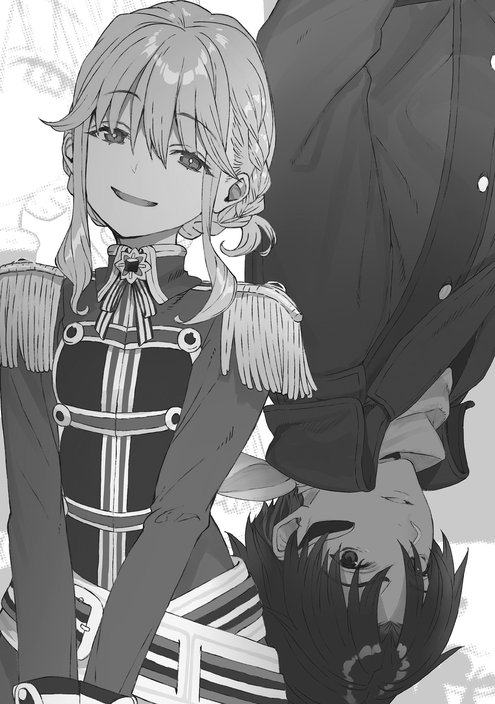
小鳥の囀るような声だった。
そのくせどろりと粘つくような、重さと昏さをはらんだ声だった。
憎悪と羨望と怨念に塗れた──死者の声。
「生きてるくせに。我々と違って。まだ死んでいないくせに。幾らでも取り返しがつくくせに。やり直すことができるくせに」
咄嗟に気圧されて言葉を失ったシンに、畳みかけるように言い募る。笑いながら。ぎらぎらと翠の双眸を、仄昏い焰に燃やしながら。
シンの異能は、死してなおこの世に残る亡霊の、その死の瞬間の最期の思惟を音ならぬ声として彼に伝える。
死して後の、機械仕掛けの脳が紡いだ思考は聞こえない。それが遠いとはいえ同じ血を引く一族の青年や、実の兄のそれでさえもだ。
だから。
死して残る亡霊の、亡霊と化して後の言葉は、シンもまた耳にしたことはないのだ。
その──生者に向けた、焼けつくような怨嗟と羨望は。
「戦い抜くと言いながら、戦いに向かないそんな体も棄てられないくせに。誰かを映す目を、声を聞く耳を、触れる手を、共に生きるための人の身を、手放そうとさえ思わなかったくせに。誰かの傍にいたいくせに。......本当は誰かと、いつか幸せになりたいくせに！」
悲鳴のように、糾弾は響き渡る。──自分は、そうではないのに。
死んでしまった自分はもう、誰とも共に生きられない。幸福にはなれないのに。
そうなれるはずのお前が。まだ生きているお前が。
ぬけぬけと。
よくも。
レルヒェが笑う。晴れやかに。凄惨と。滴るような憎悪を以て。
「生きてるくせに──よくもそんな」
誰かと幸福に、なれるくせに。
「............」
そうして、レルヒェは笑った。力なく。泣き笑いのように。
「死ぬのはもう、とうの昔に死んでいる我々だけで充分なのです。人間。だって貴方がたはまだ、生きているのだから。失くしても奪われてもまだ、取り返しがつくのだから」
コンテナの出入口にもう一つ、臙脂の影が立った。
「レルヒェ」
雪が結晶する瞬間のような、繊細な声音の主はリュドミラだ。過ぎるほどに赤い緋色の髪。嫋やかな体軀の、長身の〈シリン〉。
「全員集めたわ。出撃準備も進行中」
「了解。──死神殿、そちらも総員、出撃の準備を」
「......総員？」
胡乱に問い返したシンに、レルヒェはいつもの、少女の顔に似つかわしからぬ武張った笑みを浮かべた。
「何かあったかと、仰せでしたな。......殿下のご命令です。これより我ら、総攻撃に移ります」
眠りから覚めると、真っ先に薄い異臭が鼻をついた。
記憶の中の、あまり思い出したくない場所を刺激する臭いだ。八年前の古い記憶と、一年ほど前のまだ新しい記憶。
焼けた金属と焦げた血肉と、腐敗と死の。
奥の一室に安置された戦死者の遺体が、傷んでいく臭いだ。
疲労にまだ重い頭を振り、レーナは身を起こした。
借りっぱなしの鋼色の上着を羽織り、手櫛で髪を整えつつ割り当てられた小部屋を出る。この三日間同じ部屋で寝起きしているフレデリカはさすがに疲れ切っているのか、毛布にくるまったきり身じろぎもしなかった。
通路を歩くと、血の臭いが追ってくる。地下深くのこの司令棟は、もうどこでも死者の臭いが立ち込めてしまっている。
──いまさら、嫌悪はない。
共和国市民の大半が死に絶えた。去年のあの、大攻勢からの二か月の防衛戦の時よりは遥かにマシだ。
夏で、暑い盛りだった。鉄の焼ける臭いと、埋葬どころか回収さえできない膨大な遺体の腐敗臭で噎せ返るようだった、あの終わりの見えない防衛戦。
あっという間に慣れて──気にならなくなってしまったけれど。
人は慣れる。慣れるべきでないものにも。簡単に。
桜色の唇を嚙み締めて司令室の扉をくぐり。
違和感に気づいた。
発令所要員全員が、この場にいる。交代で休息をとっているはずの者も含め。
そして彼らの横顔に一様に漂う、毒を呷れとでも命じられたかのような緊迫と緊張。
まるで、決戦を目前に控えたかのような。
「っ、何かあったのですか!?」
慌てて問うと、ヴィーカがちらりと視線をよこした。
「起きたか、ミリーゼ。......すまないが、動けそうならローゼンフェルトも起こして、指揮の準備をしてくれ。一時間後に南東の城壁に対し、総攻撃を開始する」
「総攻撃？ ──誰がそんな命令を、」
「無論、俺だが」
見上げた先、ヴィーカは飄然と肩をすくめる。
「実際、限界だろう。これ以上戦力が減耗したら、その総攻撃もできなくなる。磨り潰される前に、打って出るぞ」
「闇雲に攻めさせても、犠牲が増えるだけです。今、冷静さを欠くのは自殺行為にしか──」
「闇雲に守らせても、それは同じだろう。損耗数がその数に達するのが、早いか遅いかの違いだけだ。......それにこの場合、損耗を抑えたところであまり意味はないぞ。むしろその方が確実に全滅する」
損耗を抑えても意味がない。......立て籠もっていても、もう全滅より先に救援は来ない。
淡々と言って、不意にヴィーカは苦笑した。
「言葉を飾る必要はないぞ、ミリーゼ。別段自棄になったわけでも、一発逆転にかけるわけでもない。そこまでは別に、追い詰められてはいないだろう。......勝算はないわけじゃない」
まるで、思ったよりも雨が強くて困るとでも言うようなその表情が、レーナにはやはり、信じられない。
そう言うのなら彼は状況が、わかっていないわけではないのだろう。
救援は来ない。防衛に徹しても耐え切れない。だから攻撃に移る。ただし──
「犠牲は」
「出る。大量に。だがまあ、──それだけのことだ」
「......なんだ？」
〈ヴェアヴォルフ〉のセンサの反応に振り返った先、格納庫の薄闇の奥から〈バルシュカ・マトゥシュカ〉が歩み出るのに、ライデンは片眉を上げる。
『殿下のご命令だ。我々ハンドラーも、各侵入口の防衛に回れと』
傷一つない〈バルシュカ・マトゥシュカ〉の装甲の向こうで、ライデンより幾つも年上の男性の声が言う。何度か聞いたことのある声。〈シリン〉たちのハンドラーの。
『外の部隊が城壁を突破したら、あんたたちはそっちに合流してくれ。ここは俺たちが支える。......殿下は前線指揮官だ。付き従う俺たちもハンドラーとはいえ、戦えないわけじゃない』
ふん、と聞いていたシデンが鼻を鳴らす気配。
『意気は買うけどよ。あたしらブリジンガメンは女王陛下の直衛だ。よその連中になんざ任せていけねえ。悪ぃけど人狼ちゃんの隊だけで、ご主人様お迎えに行けよ』
「......つーか、お前ら」
誰がご主人様だよ、という悪罵はとりあえず吞みこんでライデンは問う。同じことをシンが聞いても同じように激しく嫌な顔をするだろうという、ライデンにとっては何一つ面白くない想像もさておき。
「〈シリン〉の管制は──どうしたんだよ」
「......なぜ、〈シリン〉の操作を貴方一人に集約したのですか、ヴィーカ」
「俺でなければできないからな」
小首を傾げたレーナの当然の問いに、返る答えは至極端的だ。
「負荷を考慮すれば、ヴィーカでさえも二百機程度の操作が限界と仰っていたかと思いますが」
「だから負荷を負うのは俺じゃない。......戦闘までこなせるような接続じゃないが、この程度の働きなら充分だ。......それに」
淡々と、何でもないことのように北の大国の王子は言う。数百年の長きに亘り、数多の民をひれ伏させてきた一族の矜持を以て。
「これが俺の責務だからな。──レルヒェ、用意はいいな」
「無論、いつでも」
翠の双眸を光学スクリーンに向けたまま、レルヒェは応じる。彼女たちに合わせてごく狭い、仄暗い〈チャイカ〉のコクピットの中。
ぞわりと首筋から湧き出した〈ツィカーダ〉の銀糸が、その華奢な首を這って軍服の下へと潜り込む。彼女の全身に増設された電力供給用の端子に接続し、生体電流などない彼女の膚の上で展開して稼働する。負荷のかかる大規模同調は、そのあらかたを彼女が中継し、負荷を肩代わりすることで実現している。......命令されてのことではない、彼女の望みだ。負担を顧みさえしなければ、同じことを彼女の主は一人でも行える。ただ、レルヒェがそれをやらせたくはないだけだ。
この身は主の剣にして楯。守りきるが誇り、主の身が髪一筋でも傷つくは、なによりの屈辱。
彼女にとって最大の敵である〈レギオン〉がひしめく、断崖の要塞を睨み据えて続けた。傍らにはシンの〈アンダーテイカー〉、背後には〈ジャガーノート〉の群。前には生き残った〈アルカノスト〉全機が居並ぶ、主の命令どおりの突撃の布陣。
本当は。
背後の〈ジャガーノート〉たちには、この戦闘もこれまでの戦闘も、やらせたくはないのだけれど。
ここは戦の庭だから。
自分たち死の鳥の、庭だから。
「ご命令を。我らが屍の王」
この二日間で撃破された〈アルカノスト〉の残骸が転がる雪の野とその向こうの城塞を臨み、連邦と連合王国のフェルドレスたちは整然と隊伍を組む。
先頭に〈アルカノスト〉の残機全てによる縦陣。その後背に〈ジャガーノート〉の横陣。戦隊ごとにまとまり、ブリーフィングで決められた進撃順で〈アルカノスト〉の後に続く形だ。
妙な布陣だと、シンは思う。〈ジャガーノート〉の横陣中央、スピアヘッド戦隊の隊列先頭。〈アルカノスト〉の縦陣のすぐ後ろで、その全容を見渡せる位置で。
攻撃目標として指示された南東の断崖に、馬鹿正直に相対する布陣。その上先陣を切る〈アルカノスト〉たちは明らかに密集しすぎた、極端に細い縦陣を形成している。
縦陣は戦力を集中し、敵陣を突破するのに適した陣形だが、今、眼前に在るのは機甲兵器でも貫通しえない断崖絶壁だ。この南東の断崖の前にも空堀が造られ、そこで足止めを喰うことも容易に想像がつく。戦闘の合間に切り出していたらしい丸太や石材、空のコンテナを抱え、〈ジャガーノート〉の予備を無理矢理接続したワイヤーアンカーを備えたものも先頭集団に集まっているから、資材で濠を埋め、よじ登るつもりでいるのだろうが。
縦陣の威力の本質は、戦力集中と速度による衝撃力だ。空堀とその後ろに聳える絶壁に、肝心の速度を削られた吶喊に効果はない。それどころか足を止められた先頭に後続が衝突し、致命的な渋滞を引き起こすだろう。
密集しすぎた陣形といい、長距離砲兵型の集中射で先頭から順に削ってくれと、言っているようなものだ。
何を......考えている？
無論、作戦の概要は説明されているが、シンたち連邦の部隊に与えられたのは城壁内部への突入後の作戦だけだ。突入方法については連合王国の部隊に──〈アルカノスト〉たちに任せればいいと、それだけだった。
訝る横に、ふと、一機の〈アルカノスト〉が立った。
『......死神殿』
ちらりと見やると、リュドミラだ。後部キャノピを開け放して昇降用の段差に足をかけ、人間でないことを証するかのように雪混じりの風に身を晒している。
彼女の仲間が転がる雪原と、雪の紗の向こうに霞む城塞を見据えたまま、口を開いた。
『わたくしたちはかつて人であった戦死者ですが、つまりもはや人間ではない。人に体を造られ、心を組み立てられた、これ以上人を死なせぬための絡繰りです』
「............？」
それは彼女たちの造り手であり繰り手であるヴィーカから、彼女たち自身の口から、何度も聞かされてきたことだ。
〈シリン〉とは元は戦死者だと。
これ以上戦死者を増やさぬためにすでに死んだ戦死者を利用する、そういう仕組みの防衛システムだと。
作戦前の今この時になって、何故、その話を──......。
『わたくしたちの存在はただ、人のために』
視界の端、カウントダウンが始まる。攻撃開始までのカウントダウン。
〈アルカノスト〉の作戦行動には一切手出し無用とは、シンを含めた全プロセッサーが厳に命じられている。
『だからこれは、』
カウントダウンの進む中、ふと、気づいてヴィーカは言う。傍らの副指揮官の席の上。見知った者の有様を透かし見るという異能の少女。
「ローゼンフォルト。しばらく目を閉じていろ。異能だけじゃない。本来の目もだ」
さすがにそれは駄目だろうとは、いかな彼でもわかる。壊れた子供を増やしたくもない。
生まれた時から何かが壊れていた、生粋の怪物である自分とは違う。まともな人間として生まれた子供は、壊されずに在るべきだ。叶うのならば誰もが、生涯。
だって、そうでないなら。人として生まれたはずの子供でさえたやすく壊され、怪物と化して人の幸福を得られないというのなら。生まれながらの怪物である自分などは尚更、幸福になどはなれないのだから──......。
我ながらまた利己的なものだなと、己の醜悪に薄く嗤った。誰かの幸福でさえも結局は己のためにしか祈れない、醜くも浅ましい、冷血の蛇。
カウントが進む。
目の端に静かに、口を開いた。
「〈ガデューカ〉より全〈アルカノスト〉。......作戦開始。さあ──」
人喰い蛇。
そう。
こちらは元より壊れた蛇だ。これ以上壊れる情緒もない。
おそらく自分はそのために、人類という種が己の中に仕込んだ機構の一つなのだろう。
正気を狂気が塗り潰す時。人間では正気を保てぬ状況で、代わりに苦境を切り払うために。
それは彼が造り出した、人倫に悖るという彼の人形たちも同様に。
さあ。
怪物の矜持を示そう。人間ではないおまえたち。
「歌え、白鳥ども」
シンの前で、リュドミラは言う。歌うように。微笑んで。
『だからこれは』
知覚同調とノイズの強い無線の向こう、ヴィーカの声が告げる。──作戦開始。さあ。
リュドミラが言う。どこか陶然と。静謐と。
まるで火刑台を眼前にした、殉教の聖女のように──......。
──歌え。白鳥ども。
『わたくしたちにとっては、歓びなのです』
同時。
集結した〈アルカノスト〉、その全機が吶喊した。
喊声の代わりに少女の軽やかな、花のさざめくような笑い声をあげて。
春の野でも渡るように、弾着の痕も生々しい戦野を駆け抜ける。要塞からの長距離砲兵型の水平射撃の弾雨を潜り抜け、断崖を囲む空堀に最前列が到達。至近距離からの砲撃で対戦車障害を濠の底に吹き飛ばし、振り返って手近の僚機の残骸に、数機がかりでワイヤーアンカーを突き立てる。
そのまま身を躍らせた。
背後の奈落の谷底へ。
「なっ......!?」
〈アルカノスト〉の蒼白の影が、悪い冗談のように雪氷の狭間に消えていく。焼け焦げた擱座機が引き摺られ、大地に穿たれた弾着痕に撥ね上がり、宙にひととき軌跡を描いて、後を追うように落下する。
鋼鉄の軀体が谷底に叩きつけられてひしゃげる、重々しくも異様な音が、氷壁に反響しながら轟き渡った。
その響きも消えぬうちに第二列が到達。その勢いのままに身を投げる。更に第三列、第四列が躊躇いもなしに後に続く。切り出してきた資材を抱え、僚機の残骸を引き摺って続々と。笛吹男の笛の音に惑わされて大河に飛び込む、愚かなネズミの群さながらに。
長距離砲兵型の砲撃に、一機の〈アルカノスト〉が死の行軍の途中で頽れる。後続の別の一機がそいつを背後から撥ね飛ばし、抱き寄せるようにして諸共に転げ落ちる。擱座した僚機を引き摺り、押しやり、蒼白の蜘蛛の群が次々と、次々と、次々と飛び降りていく。
笑いながら。
誰も彼もが心の底から晴れやかに、少女の声で笑いながら。
意図に気づいたか、城壁上の長距離砲兵型が身を乗り出し、真下へと砲撃を集中し始めた。空堀の手前に弾幕を形成し、〈アルカノスト〉を近づけまいとする。
初めて〈アルカノスト〉が足を止め、真っ向から応射。身を乗り出したが故に射線に身を晒した長距離砲兵型を続けざまに撃ち落とし、転げ落ちてきたその残骸を空堀へと引き落とす。榴弾を喰らって吹き飛んだ僚機はそのままやはり谷底へと蹴落して、後続の〈アルカノスト〉が猛砲撃の穴を埋める。
余計な材料を与える愚に、恐れを知らぬはずの〈レギオン〉が隔壁の向こうに身を引く。なおも城壁に向け砲撃を加える僚機の援護の元、〈アルカノスト〉たちは続々と驀進し、投身自殺を敢行する。
神像の前に自ら身を投げ出して轢き殺される、狂信者の群のように。
その──狂気。
落差二十メートルはあろうかという空堀が、十数トンの〈アルカノスト〉の巨体で瞬く間に埋まる。その上を踏みつけ、踏みしだいて後続が駆けぬける。強度が足りぬと見ればその場でうずくまり、僚機に踏み潰されることで自らこの鋼鉄の橋の建材と化しながら。
先頭がついに空堀を踏み越えて岩壁へと至り、その基部に取りつく。次の一列がその上に乗り上がり、ひしゃげさせながらその上へと脚を伸ばす。煉瓦を組むように自らの機体を建材としながら、〈アルカノスト〉たちは上へ上へと足場を組み上げていく。
かつて。遥か古代。
土木技術に優れたある帝国は、断崖絶壁上の難攻不落の砦を陥とすため、高低差二百メートルにも及ぶ攻城路を、砂漠の真ん中に作り上げたという。数万の捕虜と奴隷を使い潰して。
その攻城路を模すように、まっすぐに城壁へと向かう傾斜路が組み上がる。鋼鉄の残骸で組み上げられた攻城路。〈アルカノスト〉たち自身を主体に、射落とした長距離砲兵型と、駆け下りてきたところを〈シリン〉たちが這い出て集団で引き倒した斥候型をも組み込んで。
それら全てを踏み潰して後続が登る。下にある僚機を押し潰し、自らも次の機体に押し潰され、着々と高さを増していく。
響き渡る少女たちの軽やかな笑声と、その下で行われる狂気の築城を──さしものエイティシックスたちが、声を失って見つめた。
その光景は絶壁の上、司令棟のレーナの目にも届く。
「ヴィーカ......！」
「同じことを、エイティシックスにやらせるわけにもいくまい」
振り返った先、この捨て身の進撃を命じたろう少年は眉一つ動かさない。
硬く凍りついた眼差しと表情で、ホロスクリーンの中、笑いながらひしゃげ潰れていく彼の人形たちを見つめている。
「彼女たちを惜しんで、これ以上我が兵やエイティシックスたちを死なせるわけにも。......人は死んだら生き返らない。代わりはいない。どこにも」
その一瞬、引き結ばれた唇の意味を、レーナは知らない。
蘇らせようとして却って永遠に失わせた彼の母親のことも、彼をおいて死んでしまったというレルヒェの元となった少女のことも、レーナはヴィーカから聞いてはいない。
けれど──......。
「だが彼女たちは──〈シリン〉は死人だ。厳密には人格さえもない人間の紛い物だ。量産可能な〈シリン〉にとっては、〈シリン〉自身が代わりとなる。惜しむ理由など何一つない」
あくまで冷徹に言い捨てる。壊れゆく人形たちを、目を逸らさず見つめながら。
その〈シリン〉の一体であるレルヒェを常に傍らに置き、......人間ではない彼女たちに、人の名前とそれぞれ違う姿形を与えながら。
レーナはその横顔に胸を衝かれる。
冷血の蛇は。
人の情を解せぬ怪物は、それでも。
彼なりの論理と倫理を以て、人と人の世界を守ろうとしている。
最後の〈アルカノスト〉が突進する。破砕音を響かせながら、鋼鉄の傾斜路を駆けあがる。
見届けてヴィーカは踵を返した。
対戦車ライフルを近衛の手から受け取り、その彼を連れて発令所の外へと向かう。
「突入とその後の指揮は任せるぞ、女王。──こちらも合わせて攻勢に出る。タイミングの指示はよこせ」
手勢を失った自分はもうここでは役目はないからと、言葉でなく示して。
駆け上った最後の〈アルカノスト〉が十脚のうちの前二対を岩壁に伸ばす。榴弾の破片を浴びて半ば吹き飛んだコクピットはそのまま、先端のアイゼンを岩壁に食い込ませ、全関節をロックしてから沈黙した。
蒼白の蜘蛛たちの死の行進の、それが終焉だった。
残った〈アルカノスト〉はレルヒェの〈チャイカ〉一機しかいない。部隊丸ごとが文字通りに身を棄てた、──狂気そのものの進撃路の構築。
攻城路の頂上付近、もはや原形も留めぬほどに傾斜路に組み込まれてしまったリュドミラの、頸部が半ば千切れて上下逆さに垂れたその頭が、ぎこちなく〈アンダーテイカー〉を──その中のシンを見る。
微笑ったのだとわかった。
人造皮膚と筋肉、その下の金属フレームさえ削れて左側半分だけになった顔が、それでも嫋やかに。あくまでも嬉しげに。
『さあ、どうぞみなさま』
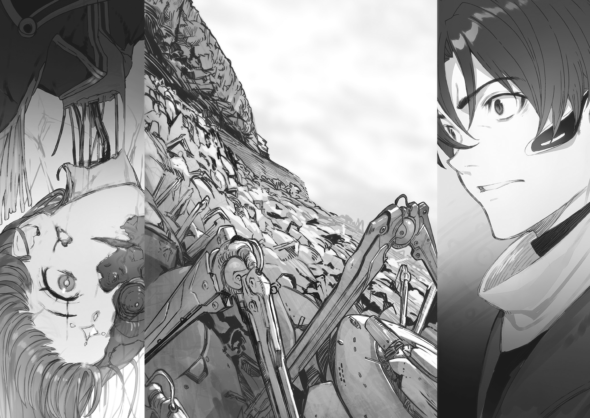
「っ......！」
一瞬、戦慄に身竦むのを堪えきれなかった。
おそらく他の者も同じだったろう。逡巡に、その異形の攻城路に足を踏み入れることへの躊躇いに、全ての〈ジャガーノート〉が刹那、立ち竦んだ。
凍りついていたシンの耳に、〈レギオン〉の叫びが届く。〈アルカノスト〉の砲火に一度後退していた長距離砲兵型が、斥候型が再び這い出ようとする気配。
ここまでさせて、無駄死にに。
するわけには。
奥歯が軋むほど嚙み締めた。
「──行くぞ」
『そんなっ......』
多分、リトだろう。誰かの悲鳴じみた声は聞き捨て、操縦桿を前進位置に叩きこむ。〈アルカノスト〉に踏み荒らされて黒土の露出した痕を辿り、先陣を切って〈アンダーテイカー〉が疾走する。わずかに遅れ、振り切るようにして〈ラフィングフォックス〉が、〈ガンスリンガー〉と〈スノウウィッチ〉が後に続く。次いで残りのスピアヘッド戦隊機が、後に続くべき戦隊が、何かの呻きや罵声を零して。
ここにいるエイティシックスはほぼ全員が、八六区の戦場で数年に亘り生き延びてきた者たちだ。命じるまでもなく後衛担当の戦隊が制圧射撃を開始。前に出かけた長距離砲兵型の頭を押さえ、火線貫く空の下を雪の帳を引き裂いて〈ジャガーノート〉は駆けぬける。──雪が、強くなってきた。嘆きの声が吹き荒ぶように。
鋼の残骸で埋め立てられた、空堀に到達。わずかな速度の低下もなく、寸毫たりと躊躇いもせず、〈アンダーテイカー〉はその異様な橋に足を踏み入れる。一息に駆けぬけ、そのまま傾斜路を駆け上る。
本来あるべき建築資材で組まれていない傾斜路は足場が悪く、ひどく脚をとられる。進行方向だけを見据えていてなお目に入る、〈アルカノスト〉の狭間で潰れた〈シリン〉の無惨な様。
ひしゃげた上から更に〈ジャガーノート〉に蹴立てられ、引き千切れて潰れていく様子も。
自走地雷を蹴り飛ばし、踏み潰すなど日常茶飯事だった。
〈シリン〉はひとのかたちをしているだけで、もはや人間ではない。
戦争継続のため戦死者の脳を取り込んだ〈レギオン〉と、本質的には何も変わらない。人間の脳、そのものですらない。データ化されたその構造を複製しているのが、流体マイクロマシンか人造細胞かの違いだけだ。
だから、同じことだ。──同じことのはずだ。
〈レギオン〉たちを破壊するのと。
ここでこうして〈シリン〉たちを、踏み潰しながら走ることは。
「っ............！」
そのはずなのに、言い知れぬ嫌悪感が消えない。
死体の山を踏みつけ、その死体に足を取られながら走るようなおぞましさが、まとわりついて離れない。
ごめん、とセオが呟くのが耳に入る。こんなの、とクレナが呻く。泣き出しそうになるのを必死に堪えるリトをなだめる、アンジュの声も震えている。
視界の端、メインスクリーンの隅に、〈アンダーテイカー〉の脚先がまだわずかに動いていた〈シリン〉の背を踏み抜いたのが映った。
悲鳴のように、花の色の唇が開く。誤作動したのか助けを求めるように空を搔いた手が、痙攣しながら力なく落ちる。
〈ジャガーノート〉のシステムに、フィードバック機能はない。何を踏み潰そうとも緩衝系が減殺しきれなかった振動以外にプロセッサーに届くものはなく、高機動戦のため強力なショックアブソーバーを搭載した〈ジャガーノート〉は、人間程度を踏みつけたところでコクピットに衝撃は撥ね返らない。
だから、操縦桿を握る手の中に弾けたぐしゃりと卵の殻を潰すような感触も、〈ジャガーノート〉の走行音にかき消されて届かないはずの破砕音も、全てありもしない幻なのだろう。
聞こえた気がした悲鳴も、飛び散って〈アンダーテイカー〉に染みついた鮮血も。
きり、と、嚙み締めすぎた奥歯が軋んだ。
............違う。
そうと認識していなかった。実感していなかっただけだ。
忘れていた。
自分がどこに、いるのかを。
パーソナルネームとは、〝号持ち〟とは称号であり悪名だ。
数多の仲間が死んでいく中、ただ一人死線をかいくぐって生還する。敵と仲間の死体を積み上げ、仲間の血を啜るようにして戦い続ける戦鬼。千人に一人と生き残らない八六区の戦場で、そのたった一人に成り果ててしまった化物に、そうではなかった者たちが奉る異名。
〝号持ち〟とは、化物の別名だ。
だから今さら、おぞましいと感じるなんて噓だ。
自分がこれまで進み、今立っているこの場所こそが──共に戦い先に死んでいった、無数の仲間たちの屍の山の上なのだから。
生き延びるために、誰かを踏みつけた。死んでいく誰かを。まだ生きている誰かも。救えずに。見捨てて。手が届かず。気づきもせずに。そうやって誰かが死んでいく横を、その血と屍を踏みつけながら生き延びてきた。
それならこれは──同じことだ。戦い続けるために、生き残るために、屍の山を踏みつけてでも進む、その光景がたまたま具現化しただけのことだ。
おぞましいというなら......だから、そう感じるべきはこの攻城路だけではなく、これまで進んできたことそのものだ。
......仕方のない、ことなのだろう。
人が死なない、戦争などない。人が人を犠牲にしなかった国など、史上どこにも存在しない。
生きることは、誰かの屍の上に立つことだ。
生き抜くことは、何かを犠牲にし続けることだ。
そうまでしないと、生きられないなら。
ひとは。
すでに活動を停止しているのだろう、もはや瞬きもしない緋色の髪の首が視界に入った。
それは〈アンダーテイカー〉の疾走の振動に千切れかけた首をもぎ取られ、転げ落ちて消えていった。
は、と吐いた息に、涙などは混じらない。
レーナ。すまない。
ひとが生きることを。人間を。おれは。
うつくしいものだとは、思えない。
権威の誇示と居住性とを追求した宮殿とは異なり、城壁とは戦闘用の建造物だ。
その構造そのものが、侵入者に対する防具であり武器だ。
高く聳える城壁、取り巻く空堀や水堀の類は言うに及ばず、城門上部に張り出したはね出し狭間、内側ほど高くなる何重もの隔壁、二階部分にしかない天守閣への入口。時計回りに登る螺旋階段。
その多くは剣と弓が武器であった時代だけに有効な仕組みではあるものの、未だ効力を発揮する構造もある。
要塞内部、南東の城壁に相対する内郭。
城壁の頂点、その少し下に榴弾砲の照準をぴたりと合わせて、長距離砲兵型の一群は敵影を待ち構える。
侵入路の形成こそ阻止できなかったが、城壁を乗り越える無防備な瞬間を狙い撃てば侵入の阻止は充分に可能だ。突貫作業で無理矢理構築されたあの侵入路は酷く細い。作戦上は愚行となる、戦力の分散と分断を未だ敵部隊は冒さざるを得ないのだ。
侵入路形成のために多くの敵性フェルドレスを犠牲にした以上、敵軍の戦力も半減している。決死の突撃も、長続きはしない。
その時鋸歯を描く矢狭間を鋭く抜け、鋼鉄の錨が城壁の上に飛び出した。
二対。四条。
先端の鉤爪──アンカーが城壁上部に突き刺さる。深く食い込んで固定される。
次の瞬間二機の〈ジャガーノート〉が照準の左右、長距離砲兵型の一群を側面から見下ろす城壁上に跳び上がった。
パーソナルマークは〝笑う狐〟。そして〝シャベルを担いだ首のない骸骨〟。
『──馬ッ鹿じゃないの。狙われるなんてわかりきってるのに、真っ正面から突入するわけないじゃん』
「ダスティンに言われて気づいた。元共和国市民が、突入のセオリーなど知るわけもないな」
セオが吐き捨て、最前までの痛みをもはや振り捨てた──振り捨てすぎた冷徹さでシンは続ける。
同時に、撃発。
咆哮した八八ミリ戦車砲の、初速一六〇〇メートル毎秒の火線が立て続けに長距離砲兵型の横腹に突き刺さる。着弾と同時に炸裂し、多目的榴弾のメタルジェットと撒き散らされる高速の榴弾片が、装甲を持たない彼らをまとめて薙ぎ払う。
無論、長距離砲兵型もただ撃たれてはいない。光学センサと対照準センサが左右に出現した敵機とその照準レーザーを認識。戦術アルゴリズムに従って方向を転換、散開。
──できなかった。
向きを変えようとする動作を、別の長距離砲兵型の砲身が阻む。弾かれてよろめいた一輌が他の一輌の動きの邪魔をする。狭い内郭にひしめくように集合していた長距離砲兵型たちは、ひしめき合うまま身動きもならずに立ち尽くす。その無防備な横腹に、弾倉を一息に空にしつくすような〈ジャガーノート〉の猛砲撃が襲い掛かる。
城壁内部は侵入した敵軍を小部隊に分散させ、行動を妨げるために、内郭は多くの隔壁で区切られ、狭く身動きの取れないように造られている。
その制約は長大な砲を背負って巨大な、鈍重な長距離砲兵型にも有効だ。
旋回砲塔を持たない長距離砲兵型は、前方以外に砲撃できない。反撃もできず、回避もままならない彼らは、もはや無力な射的の的だ。
先陣を切った二人と同様にワイヤーアンカーを利用し、斜めに跳び上がってきた後続の〈ジャガーノート〉が次々と砲撃の列に加わる。城壁上の敵機を排除しようと這い上ってきた自走地雷を機関砲装備の〈ジャガーノート〉が蹴散らし、駆け寄せる斥候型を戦車砲が薙ぎ払う。
引き裂かれねじ曲がった長距離砲兵型の残骸の山の上についに一機の〈ジャガーノート〉が──ダスティンの〈サギタリウス〉が降り立つ。スモークディスチャージャーを使用して濃密な白煙の幕を形成、突入部隊のこれ以降の行動を隠す。その煙幕の下をリト指揮下のクレイモア戦隊が格納庫奪還に向けて駆け抜けていき、ミサイルランチャーを背負った面制圧仕様機の一群がランチャーポッドの扉を全て開く。
『──ランチャー各機。全座標転送、制圧なさい！』
レーナの号令一下、全機が斉射。白煙を貫いて伸びあがり、地上区画の各内郭上方に占位したミサイル群が内蔵の子爆弾を地上区画全体に叩きつける。
そこに群がる、軽量級の〈レギオン〉の群にも。
対軽装甲用の自己鍛造弾が作動。秒速三〇〇〇メートルの火焰の雨が、軽装甲の彼らをまとめて薙ぎ払う轟音。
城塞地上部はこれで制圧。あとは残敵の掃討と。
〈アンダーテイカー〉の傍らで〈チャイカ〉が停止。後部のキャノピを跳ね上げて顔を出したレルヒェが叫ぶ。
『死神殿、今のうちに！』
「ああ」
八八ミリ砲の残弾は零だ。サブアームに機銃を装備している〈ラフィングフォックス〉はともかく、白兵兵装の〈アンダーテイカー〉はこのままでは、この後の戦闘では射撃戦に対応できない。
その時ぴんと、異質な嘆きが響き渡った。
シンにしか聞こえない亡霊の叫喚。聞き取れない機械の言葉で紡がれる嘆きの声。帝国が滅び、〈レギオン〉に課されたタイムリミットである六年が経過した今では存在しないはずの、純粋なる機械知性の。
戦場は未だ白煙が立ち込め、互いに相手の姿を見通せはしない。けれどシンの異能は戦場の喧騒を貫いて通る、その絶叫の発生源を精確に捉える。直上、城塞を覆う岩盤の天蓋。大鷲が翼を広げて雛を守るようなその両翼の狭間。過去の戦闘で叩き落とされたという鳳の頭部の、その頸の名残に悠然と立つ。
敏捷で精悍で、獰猛な肉食獣のシルエット。獅子の頭部にも似たセンサユニットと、背になびかせた風切羽のようなチェインブレード。
睥睨する一対の、獣の両眼のような光学センサの煌めきが、白煙と雪の紗幕の狭間に見えた気がした。
高機動型。
その姿は辛うじて生き残った外部カメラの一基に捉えられ、司令棟のホロスクリーン上にも映し出される。
見やってレーナは目を眇める。
外見が。
同じことを思ったらしい。フレデリカが眉を顰める。
「......データと違うの。なんじゃ、あの仰々しい羽は」
羽。そう、羽だ。
豹か虎を思わせる敏捷で獰猛な四つ足の機体を、ナイフを並べたような鋭利な銀色の、羽状の薄板が覆っている。その狭間、獣の肩甲骨に相当する位置から一対の長いチェインブレードが伸び、天を穿つように逆立てられている様は、伝説上の鷲頭の獅子を思いおこさせた。
生物の鼓動や呼吸とは異なる動きで、羽の一枚一枚が蠢動する。雪明りの反射ではない微細な煌めきが、見る者を奇妙に幻惑する。
液体のように流動する、金属光沢の銀色。
「流体装甲......!?」
報告によればシンが遭遇した高機動型は、斥候型にも劣る脆弱な装甲しか持っていなかったという。比較的装甲の薄い背面とはいえ、一部を成形炸薬弾に削られ、破砕された装甲とはいえ、たかが歩兵用の七・六二ミリライフル弾に貫通される程度の。
その弱点がなければ、おそらくは撃破し得なかったと。
実際ミッションレコーダーの映像記録に残っていた高機動型の機動性能は、前線には出ないレーナでも戦慄を覚えるものだった。元より運動性能で人類側を遥かに上回る〈レギオン〉の中でも出色の、異次元の高速戦闘。
その戦闘でどうにか最後に衝いた、軽装甲という弱点を早くも克服してきたか。それとも〈レギオン〉にとっては先の戦闘での高機動型は、未だ開発途上にすぎなかったということか。
だが。
屹、とレーナは唇を引き結ぶ。
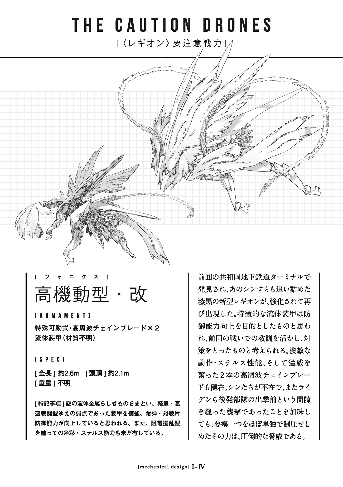
各通路に、格納庫に押し寄せる〈レギオン〉の攻勢は、苛烈を極めた。
城外からの突入路が形成されたのだ。もし地上区画が制圧されれば、地下の彼らが今度は挟撃を受けることになる。その前に要塞制圧を果たすべく、斥候型が、自走地雷が捨て身の吶喊を繰り返す。無理矢理に潜り込んだ長距離砲兵型の砲撃に、五号通路の最初の隔壁がついに破断する。
その混戦の最中、飛び込んできた別戦隊からの無線をライデンは聞く。
『──シュガ副長！』
「リトか！ 今どこだ！」
『六十秒後に、っていうかもう目の前です！ 突入しますから退いててくださいッ！』
「ッ、全機射撃中止、エレベーター前から退避！ 射線から出ろ！」
半ば無理矢理に全〈ジャガーノート〉と〈バルシュカ・マトゥシュカ〉が飛び退いた直後、〈レギオン〉隊列の後ろから一二・七ミリ重機関銃の掃射が叩きこまれた。
複雑な経路を通って地上区画へと向かうエレベーターシャフトからの──無警戒だった真後ろからの機銃掃射だ。装甲の薄い背を射抜かれた斥候型が、自走地雷が打ち倒され、ずたずたになったその死骸を踏みしだいてリトのクレイモア戦隊が突入、〈ジャガーノート〉とともに退避に成功していた生き残りの〈レギオン〉に襲い掛かる。
『地上区画は制圧してます！ 他の通路にも仲間が回ってますから、シュガ副長とイーダ隊長は上に行ってください！』
「ああ......」
言いさしてライデンは眉を寄せる。らしからぬ無謀なエントリーと乱暴極まりない最前の機銃掃射、まるきり自棄のような突撃と、余裕のない悲鳴のような交信の声。
突入の時、逃げ遅れた〈バルシュカ・マトゥシュカ〉が流れ弾を喰らった。装甲の厚い重い機体で、正面装甲に重機関銃弾だったからよかったようなものの。
「......どうした、リト」
『何でもないですっ！』
その応答の、嚙みつくような。そうでもしないと今にも泣きだしてしまいそうな響き。
まるで仲間の大半を喪った直後のような。
その死体の山の中に自分の死体さえ、見てしまったとでもいうかのような。
『ほんとに、何でもないですから......。だから、早く行ってください』
白煙が晴れる。
少し和らいだ雪の紗の向こう、高機動型が戦の庭を睥睨する。
鳥の広げた翼のような岩盤の天蓋の上で。眼下の戦場は逆時計回りに連なる内郭と幾つもの監視の尖塔。打ち倒され引き裂かれた長距離砲兵型の鉄色の残骸が一面に散らばり、戦車砲弾に打ち砕かれた城壁と内郭の隔壁、石畳。あまりに無惨な戦闘の跡を、無音の白がしんしんと侵食していく。
その、見苦しいまでの闘争と静謐な無常を、まるで等しく見下すように。
向こうから見れば戦場最奥、未だ南東側の城壁に立つ〈アンダーテイカー〉を、視認した。
見据えたままシンは口を開く。この場にいる全員に向けて。
「各機、散開。──近接戦は絶対に避けろ。流れ弾を喰らうぞ」
獣のような頭部が前傾する。力を蓄えて四肢が撓む。来る。
跳躍。
墜落じみた速度で真下へと跳び、空中でチェインブレードを打ち振って姿勢制御。尖塔のスレート瓦に着地し、踏み割りながらその反動で前方へと──〈アンダーテイカー〉の元へと疾駆する。
〈チャイカ〉が跳び離れ、戦闘の邪魔をしないために距離をとる。役に立たない空弾倉を投棄し、〈アンダーテイカー〉が身構える。その間にも尖塔を、隔壁を、その壁面を足場と蹴りつける目まぐるしい高速機動で、高機動型は瞬く間に距離を詰めてくる。
疾走の衝撃に飛び散る氷とコンクリートの破片だけが、視認可能な高機動型の移動の軌跡だ。不規則に左右への跳躍を織り交ぜながら飛燕の速度で接近する、その銀影が〈アンダーテイカー〉へと迫り──......。
刹那。
『ドンピシャ。──馬鹿じゃないの、まっすぐ飛び込んでくるなんて』
その真横に戦車砲弾が出現した。
音速を遥かに超える戦車砲の、近距離からの砲撃。尖塔の陰に潜んだ〈ガンスリンガー〉の──クレナの狙撃だ。
移動方向を先読みしていたとはいえ、陸戦兵器としては埒外の速度域の敵機だ。その相手に対し役に立たない火器管制系の支援を端から切り、ほとんど勘だけで狙い撃った神業の狙撃。
砲声を置き去りに、照準レーザーも伴わずに迫る砲弾を、しかし発射焰だけでそうと認識したか。高機動型は跳躍をキャンセルして急制動をかけ、弾道からぎりぎりで身を躱す。
だが。
進行方向から獲物を逃がしたはずの砲弾が、高機動型の鼻先で閃光を放って自爆する。全方位に撒き散らされる秒速八〇〇〇メートルの爆轟の衝撃波とそれに弾き飛ばされた破片群が、さしもの高機動型の回避をも上回る速度で襲い掛かった。
近接信管。発する電磁波の範囲に目標物が入った場合に、着弾を待たず炸裂して破片や散弾を撒き散らす、元は対航空機戦闘用の特殊信管。
避けきれずに破片の幾つかを浴びた高機動型が、叩き伏せられたように地に落ちる。どうやら装甲を貫通してはいない。けれど引き千切られた流体片が、風花のように宙を舞う。
『──ようこそお馬鹿さん』
その落下予想地点に伏せていた〈スノウウィッチ〉が──その中のアンジュが凄絶に嗤う。
直後に背部ミサイルランチャーが開扉、射出。
ばらばらの軌跡を描いて高機動型に向かったミサイルが、空中で次々に起爆して子爆弾の雨を叩きつける。高機動型が実際に選択したそれをふくめ、予測された全回避方向への時間差の爆撃。追撃するように降りくる弾雨を高機動型は搔い潜り、避けきれぬと判断したか強引に突き抜けて空中へと逃れる。
『──っは、来た来た。馬鹿と何とかは高いところが好き、ってね！』
尖塔の斜めの屋根にアンカーを打ち込んで待ち構えていた〈ラフィングフォックス〉が、両の格闘アームの重機関銃をがしゃりと向ける。
掃射。
本来身動きの取れない空中だ。最初の数発を高機動型はまともに被弾。大きく打ち振ったチェインブレードをアンカー代わりに壁面に食い込ませ、収縮して強引に移動、機銃弾の散布域を逃れる。
射撃位置を即座に放棄、別の尖塔へとワイヤー伝いに飛び去っていく〈ラフィングフォックス〉を追撃しようとしたところへ、更に別の〈ジャガーノート〉の狙撃が。子爆弾の面制圧が。地下格納庫から飛び出してきた〈ヴェアヴォルフ〉の機銃掃射が。
『──まるで猛獣狩りだな。気の毒なことだが』
回避のために高機動型が飛び乗った胸壁の足元が、小口径の砲弾数発の狙撃を受けて崩れる。バランスを崩して落下した高機動型を追い、着弾の弾痕が胸壁に刻まれていく。〈ジャガーノート〉の八八ミリ砲でも〈バルシュカ・マトゥシュカ〉の一二五ミリ砲でもない。二〇ミリ程度の対戦車ライフルの射撃。......複数いるらしい射手の一人に、王子殿下御自らが加わっているようだ。
横殴りの徹甲弾の驟雨をついに振り切って着地し、高機動型はぐるりと周囲を見回した。
戦闘機械たる〈レギオン〉、それも生粋の純粋機械知性である高機動型に、おそらく感情に類するものはない。けれどもし人間に似た感情があったなら、荒々しく舌打ちでもしていたところだろう。
城壁の上。内郭を複雑に区切る隔壁の上や見下ろす監視用の尖塔の上。不規則に建てられた各種施設の陰や内部。互いを互いの射線に入れず、けれど高機動型をその中心に捉えて。
雪に紛れる〈ジャガーノート〉の純白の機影が、何重もの包囲を敷いていた。
その様子をホロスクリーンの中に見据えて、レーナは呟く。
冷然と。
「たしかに、動きの速さ、運動性能の高さは驚異的です。......ですがだからといって、対抗手段がないわけではない」
火器管制系の自動照準さえも置き去りにする、その高速戦闘は陸上兵器としては驚異的だ。
だがそれ以上の超高速と完全三次元機動を可能とし、〈レギオン〉戦争までは戦場の空を支配してきた戦闘機をも相手取り、時に叩き落してきたのが現代の軍と兵器でもある。
直撃せずとも敵機近くに接近すればそれを検知して起爆し、破片や散弾を撒き散らす近接信管。広範囲を一瞬で、子爆弾の驟雨で制圧するクラスター弾頭。秒間数十発という高速の発射サイクルで弾を吐き出し、濃密な弾幕を形成する機関銃と機関砲。
照準が追いつかないのなら。
一点を狙い撃つのが不可能なら。
「面で叩き潰せばいい。......それだけのことです」
兵装の上でも戦術の上でも、とうに確立された対策だ。初見ならともかく、そうとわかっていれば対策できる。
シンが苦戦させられたのはその初見だったことに加え、ある意味では彼だからこそだ。白兵特化の〈アンダーテイカー〉は、こうした範囲攻撃兵装を持っていない。有効な反撃が、彼一人では難しいのだ。
「その弾幕に、どうやって誘い込むのかとは思うておったが──よもや〈アンダーテイカー〉を囮にするか。そなたもなかなか、血が冷えておるの」
「敵の目標は我々の殲滅。そしてシンの鹵獲。それがわかっている以上、利用しない手はありません」
先の作戦での高機動型の失策は、第一にシンを取り逃がしたことだ。報告を持ち帰られた。そこから類推可能なあらゆる情報も。
予測される性能諸元。基本的な戦闘パターン。そして──その目的。
明らかに殺せた時にそうしなかった、不自然なその一連の行動とそこから導き出される彼らの作戦目標を。
目標が知れているなら、餌にできる。
彼らにとっての高価値をちらつかせて、形成した包囲網に愚かな狼を誘い込める。
そう──先のターミナルでの作戦で、高機動型は〈レギンレイヴ〉の一個戦隊を単騎で圧倒、無傷のままで全機撃破している。自身と〈レギンレイヴ〉の戦力比を相当に高く判定しているはずだ。
その判定を元にしたなら──高機動型は、要注意戦力であるシンの〈アンダーテイカー〉以外を意にも介さず、彼だけを狙って襲撃してくる。
僚機を囮にし、誤判断につけこみ、数の暴威を以て圧倒する。
見苦しいまでの力押し、まったくもって卑怯極まりない作戦だ。嫌がるかとも思ったが、シンを含め、先のターミナルでの作戦後にこの対抗策を立案し説明した時のエイティシックスたちは淡白なものだった。エイティシックスは元々、複数機で〈レギオン〉に対峙するのを基本戦術としている。常識を超えた高性能を誇る鋼鉄の怪物にあのアルミの駄作機で対抗するために、エイティシックスたちは囮や罠や多対一の戦闘を、卑劣だなどと厭いはしない。
「ローゼンフォルト補佐官。現在、ノウゼン大尉が敵機捕捉を担当し、施設内掃討が完了次第イーダ少尉も加わる予定ですが、両名とも本来は戦闘要員です。二人が警告できない状況の時は、貴女が頼りです」
ふん、とフレデリカは可愛らしく鼻を鳴らす。
「フレデリカで良いと言うたであろうが、阿呆め。......わかっておる。任せておくがよいわ」
〈ジャガーノート〉は今や地上区画のあらゆる場所に罠を張る。
城壁と隔壁の上に。尖塔の頂上に。迷路のような隔壁と施設の狭間に。四方と上方から取り囲んで待ち伏せる。回避と包囲網突破のために縦横無尽に飛び回る高機動型を、けれど何処に現れようと迎え撃って銀の飛沫を上げさせる。
散弾が吹き荒ぶ。子爆弾が降り注ぐ。機関砲が獣の咆哮を上げ、凍てつく大気を切り裂く叫喚で対戦車ライフル弾が疾走する。
更には機甲兵器同士の激闘の合間を生身で抜けて歩兵たちが仕掛けたらしい、指向性散弾地雷までもが炸裂している。扇状の散布域内にいたなら大の大人を挽肉に変える、数百の鉄球の嵐が高機動型を追い立てる。
猛獣狩り。
これほどこの戦闘に相応しい呼称もあるまいと、ホロスクリーンを見つめてレーナは思う。
狡猾で獰猛で危険な猛獣を、人間などより遥かに強い獣を、知恵と武器を結集して狩り立てる。これはそういう戦闘だ。
「ファルシオン戦隊、グレイヴ戦隊、南第三区画に移動。──ノウゼン大尉、イーダ少尉。同区画に追い込むよう誘導を、〈アンダーテイカー〉を囮に。......地下二八番通路。残敵発見。メイス戦隊、掃討を」
『了解』
地下区画の残敵掃討と、地上の猛獣狩り。二つの戦場で同時に幾つもの戦隊の駒を動かすレーナの、纏う〈ツィカーダ〉は目まぐるしく光の紋様を移り変わらせている。高効率稼働の光芒が、薄闇の発令所に艶やかに散る。
砲撃を逃れて疾走する高機動型の獣のような頭部が、何かを呼び寄せるように天を仰ぐ。ばらりと雲が崩れるように阻電攪乱型の一群が舞い降り、高機動型はそれらを頭から突っ込むようにして身にまとう。
展開された光学迷彩に銀の機影が搔き消える。だん！ と一度強く地を蹴ったらしい不可視の機体が、路面の亀裂を最後の足跡に何処かへと向かい──。
『──ミチヒ。五秒後、正面。......掃射』
『はいです！』
物理法則とは無関係にその位置を聞き取るシンの指示に、六機小隊が即応。全機がかりの機銃掃射に、阻電攪乱型が引き裂かれて再び高機動型の姿が露わとなる。
そのまま追撃に叩きこまれる掃射を、避けて高機動型は遮蔽へと飛び込む。分厚いコンクリートに阻まれて、さして性能の良くない〈ジャガーノート〉のセンサが敵機を失探。
『甘い甘い！ クロウ、一発カマしてやんな！』
『イーダ、了解したが少しは慎め』
格納庫周辺の残敵を掃討し、防衛を靡下の戦隊に任せて索敵補佐に上がってきたシデンが呵々と笑う。
『死神ちゃんと同じ、目標指示役ってのが情けねえけどなァ。......そら、ちびっこ。次はどこだ！」
「誰がちびじゃ無礼者め！ 南第五区画、中央通路じゃ、撃てっ！」
血赤の目を仄かに光らせてフレデリカが叫ぶ。白煙の尾を引いて撃ち出された小型のミサイル群がシーカーを作動、捕捉した高機動型へと突進する。重い地対空ミサイルランチャーを担ぎ、施設屋上に伏せていた歩兵たちの一斉射。
大きく横に跳んで回避した高機動型を、けれどミサイル群は急旋回を以て正確に追跡する。アクティヴホーミング。自ら照準波を発し、一度捕捉した敵機を推進剤が切れるか命中するまで追尾する鋼の魔弾。
隔壁を背に高機動型が急停止、襲い来るミサイル群に相対する。意図を悟って周辺の〈ジャガーノート〉が退避。たてがみのようになびかせていたチェインブレードが稼働の叫喚を放って持ち上がる。
先行した一群を両のブレードの一薙ぎで斬り払い、第二陣を鼻先まで引き付けて跳躍。急な機動にミサイルは高機動型を見失い、あるいは旋回しきれず、次々に隔壁に衝突し炸裂。分厚い強化コンクリートの隔壁が地響きを上げて崩落する。
濛と立ち込めた土煙に紛れ、左右の施設の壁を交互に蹴って高機動型は上方、天蓋の上へと退避しようとし──......。
『起動ッ！』
鋭い命令とともに各尖塔頂上から水平に撃ちだされた電磁ワイヤーが空中に即席の網を展開、高機動型を跳躍の中途で叩き落した。
────ッ!?
石畳に叩きつけられ、即座に撥ね起きて宙を仰いだ高機動型の挙動には、明らかに驚愕めいた動きが窺えた。よもやこんな、言ってしまえば馬鹿げた仕掛けまで存在するとは予測もしていなかったのだろう。
彼一人だけやたら愉しげな、ヴィーカの声が知覚同調の向こうを流れていく。
『要塞が空挺を受けて陥落した場合に、そのヘリを引きずり落とすためのトラップだ。死なば諸共というところか。......まったく、我が父祖ときたらほとほと根性がねじ曲がっているな』
あきれた声音でライデンが問う。
『まさかとは思うが、王子殿下。この城自爆装置とか仕込まれてねえだろうな』
『ん、あるぞ。当然だろう。陥ちた城は、最後に賊徒もろとも吹き飛ぶのが美学というものだ』
『............』
視界の端でマルセルがそわ、と腰を浮かせたのは、おそらく気のせいではない。
ぼそりとフレデリカが呟いた。
「あやつ......というかイディナロークの異能者とはひょっとして、頭が良いだけの単なるアホなのではあるまいな......」
レーナもちょっと、そう思う。
......ともかく。
「第五区画、二番隔壁が崩壊。当該地区の〈ジャガーノート〉は隣の四番、六番区画へ移動。スカイホーク戦隊、援護に入ってください。リュカオン戦隊、そろそろ弾切れでしょう。サイス戦隊と交代を」
サブウィンドウがポップアップし報告。正面ゲートの封鎖を排除。〈スカベンジャー〉の進出開始。......攻城路はともかく垂直の城壁は登れないため、正面登攀路まで回り込んでいたファイドたちが、ようやく到着したようだ。
「このまま押し潰します。敵を、休ませないように」
「......いや」
レーナの檄とは裏腹に、シンは苦く目を眇める。
追加された流体装甲が、思いの外に硬い。
自在に形状を変える装甲は、成形炸薬弾に対しては中空装甲として、高速徹甲弾には拘束装甲として、瞬時に形状を変えて対応しているらしい。起爆点からの距離を狂わせてメタルジェットを拡散させ、侵入した劣化ウラン弾芯を装甲内部でへし折り。衝撃を受けると瞬間的に硬化するダイラタント流体の特性も持っているようで、比較的低威力の機銃弾や散弾、対戦車ライフル砲弾は銀の飛沫を散らしつつも貫通を防ぎ続けている。
その流体装甲もここまでの攻防で大分削り落とされているものの、本体へのダメージはまだ軽微にすぎないだろう。
一方で〈ジャガーノート〉の側には、次第に脱落機体が出始めている。
八八ミリ砲についで二挺の重機関銃の弾薬も撃ち尽くした〈ラフィングフォックス〉が後退する。退路を誤り、接近を許した〈ガンスリンガー〉が脚部を切断されて頽れ、空のランチャーポッドを投棄した〈スノウウィッチ〉に牽引されていく。
対戦車ライフル砲の銃座はすでに五つが潰され、携行兵器を使い尽くして戦線を離脱した歩兵たち、次第に破壊されていく隔壁と尖塔。
包囲網が崩れつつある。
ファイドたちは到着したようだが、合流と補給にはまだ少しかかる。それまで今の戦力で保たせなければならないが──......。
砲撃でほとんどの施設が倒壊した一角、その中心で高機動型が唐突に脚を止める。獣がそうするようにぐるりと頭部を巡らせ、取り囲む〈ジャガーノート〉の位置を確認。
全身を覆う羽状の装甲が複数枚溶け合わさってきゅるりときつく細く巻き、筒状に成形。銃身。それも細く非常に長い──初速が速い！
「──射撃が来るぞ！ 退避！」
転瞬、高機動型を中心に、全方位に銀線が疾った。
これも装甲が変じたものだろう。弾体が大きく、また鋭いフレシェット弾。発射機構は圧縮空気か遠心力か──重い火砲を搭載できない高機動型には、投射攻撃はないと侮った。
軽量とはいえフェルドレスである〈レギンレイヴ〉の装甲を貫通するほどの威力ではなかったようだが、大きく重い弾体と高い初速、何より流体装甲の大半を使い尽くすような一斉射だ。まともに喰らった〈ジャガーノート〉が大きくよろめき、足を止める。その狭間を高機動型が一息に駆けぬける。
足止めを喰らった包囲網の一角、〈キュクロプス〉の黒影に銀の機影が迫る。左のチェインブレードを斜めに構えた、すれ違いざまに斬り捨てる構え。
『っ、このッ！』
荒々しい舌打ちとともに〈キュクロプス〉が応射。
回避は不可能、ならば回避させるという咄嗟の判断。狙い通りに高機動型の移動の軌跡は射線を外れ、そのために〈キュクロプス〉を両断する経路からも逸れる。刹那遅れ、砲口を抜けると同時に八つに分裂した弾頭がその背に接触。そのまま音もなく潰れて起爆。
装甲内部に伝播した粘着榴弾の衝撃波が、流体装甲を激しく吹き散らす。同時に右の機銃から脚部の前後双方までを斬り払われた〈キュクロプス〉が転倒し擱座。
「シデン！」
『こっちゃ大丈夫だ。......それより、』
きり、とシデンが歯を鳴らす音。
それを搔き消す接近警報が、コクピット内に鳴動した。
『悪ぃ抜かれた。......色男、そっち行ったぞ！』
「やられたっ......！ ──シン！」
レーナはその光景に色を失う。
包囲を突破された。
予測される可能性の、範疇ではあった。
高機動型に対する囮であるから、弾切れの状態でも〈アンダーテイカー〉は戦場から下げられない。むしろ移動経路を予測するために、高機動型からも認識しやすい包囲網のすぐ外に配置し続ける必要があった。......その危険は承知の上で。
超高機動性と、近接白兵戦闘特化の兵装。同じ特徴を持ち、そのどちらでも上位互換の存在である高機動型は、〈アンダーテイカー〉にとっては天敵のようなものだ。
先の作戦でどうにか生還したのが、奇跡的なほどに。
でも。
今度は。
疾走しながら高機動型がチェインブレードを振りかざす。〈アンダーテイカー〉がわずかに左側の二脚を引き、半身気味に構える。
交錯。
〈アンダーテイカー〉の高周波ブレードは、その左側が高機動型の装甲を斬り散らし。
高機動型のチェインブレードが、まるで水を斬るように──〈アンダーテイカー〉のコクピットに深く、斬りこんでいた。
†
《推奨対処・鹵獲を棄却。〝バーレイグ〟撃破》
《装甲内部の破壊を確認。生体反応無し。制圧を──》
†
にい、とレルヒェは凄絶に嗤う。
高周波チェインブレードに切り裂かれた、〈アンダーテイカー〉のコクピットの中。
「──外れだ、屑鉄」
「見分けているのは外見で、か。兵装と、あとはパーソナルマークというところかな」
同時。高機動型の背後、降り立った〈チャイカ〉のコクピットの中。
無防備なその背面を、光学スクリーンのレティクルに捉えてシンは呟く。
レルヒェと乗機を交換する形で、弾薬切れの〈アンダーテイカー〉から〈チャイカ〉に乗り換えたのは地上区画制圧直後。ダスティンが形成した、スモークディスチャージャーの煙幕に紛れてのことだ。視界の端から端までを一息に駆けぬけるその速度を前に、悠長にファイドを待ち、弾倉交換をしている暇はないからと。
レーナの発案で、ヴィーカの命令だ。
〈ジャガーノート〉と〈アルカノスト〉は別の国家の兵器だが、どちらも人型の操縦士が使うことを想定した、同じ時代のフェルドレスだ。必要な機能と人間工学上の合理性を鑑みれば、スイッチや計器の配置はある程度似通ったものとなる。何度かの転換訓練で、使いこなせないものではない。
照準が初めて高機動型に合う。確実な照準を示す電子音。
これだけはどこでも位置の変わらぬ、右操縦桿の人差し指の位置のトリガを引いた。
背後、零距離、完全な不意打ち。その上左のチェインブレードを〈アンダーテイカー〉に喰いこませた、身動きもならぬていたらく。
それでも戦闘機械の本能はなおも足搔いた。
左チェインブレードをパージ。装甲のほとんどをワイヤー状に変え、地に突き立てて本体を引き寄せる。跳び退るよりも倒れこむよりもわずかに速い動きで、射線上から中央処理系を退避させる。
寸毫遅れ、成形炸薬弾がその機体側面を虚しく掠めて飛び去る。纏う運動エネルギーが流体装甲のわずかな残りを、その下の黒い装甲と金属フレームとを削り取って吹き散らす。
「......ちっ」
必中のはずの砲撃さえ回避してのけた、高機動型の反応速度にシンは舌打ちを零す。この距離で外したことなど、七年間一度もない。
だが、これで。
『──ついに鎧を全て解いたな。間抜けめ』
〈アンダーテイカー〉のキャノピが跳ね上がる。
爆発ボルトを作動させての強制排除。爆薬で吹き飛んでいくキャノピの下から、弾丸のようにレルヒェが飛び出す。
チェインブレードが掠めたらしい右足が根元からない。噴き出す〈シリン〉の蒼い血潮。
残った左足に加えて左手も〈ジャガーノート〉の白い装甲につき、獣のような姿勢から全身の発条で飛び掛かる。口に咥えたサーベルの鞘、柄に右手をかけたそれを、肉を切り裂く獅子さながらに大きく首を振って抜き放った。
雪明りを弾いた玉散る刃が、次の瞬間甲高い叫喚を放って白熱する。高周波ブレード。本来フェルドレス用の、本当の意味での白兵戦など考えられてもいない武器。
素手で柄を握る右手の人工皮膚が、一瞬で千々に千切れて吹き飛んだ。
『──はあっ！』
銀の流星が高機動型に落ちかかる。受けて高機動型がチェインブレードを振るう。
紛いものとはいえ華奢な少女が生身と白刃で〈レギオン〉に立ち向かう、冗談か悪夢そのものの光景。
薙ぎ払われたチェインブレードが、レルヒェの腰から下を斬り落とす。
逆手に突き下ろされたサーベルの刃がそのブレードの基部、装甲を失って剝き出しになったそこに突き刺さる。
発生した過電流の青白い光が、一瞬、チェインブレードを駆け抜ける。サーベルを伝って食らいついた紫電の蛇に、レルヒェの右腕が黒焦げになる。
ついに装甲内部へと潜り込んだダメージに、高機動型がよろめく。ずるりと手が離れて落ちたレルヒェが、その肩口に中途半端にひっかかった。
投げ捨てられたサーベルの鞘が、ようやく地に落ちてかぁん、と鳴る。
〈チャイカ〉の背部ガンマウントのガンランチャーが、再装塡の完了を示して重々しい薬室の閉鎖音を響かせる。レティクルとアラームがまるで急かすように、確実な照準であることをシンに知らせた。
破壊されたチェインブレードを高機動型がパージ。その破断面に銀色の流体が滲む。兵装を喪失し、ダメージも甚大。機体放棄を判断するには充分、というところか。その前に。
瞬間、レルヒェと目が合った。
翠の瞳。
人間ではないと聞かされていても、常に死者の嘆きを纏っていても。これだけは人と見分けのつかない、意思と感情を反映して煌めく瞳。
その唇が動く。
知覚同調の向こう、その主である少年が鋭く叫ぶ。
『──撃て！』
やめてくれと、どちらかに。言われていたら撃たなかっただろうか。
不意に落ちた疑問とは、何一つも連動せず。
戦闘に最適化されたシンの体と意識は、半ば自動的にトリガを引いていた。
飛来した二〇ミリ徹甲弾が、レルヒェの右腕を肩口で切断して地に落とす。
着弾した成形炸薬弾が起爆、生成したメタルジェットが高機動型の装甲を穿ち、破砕孔から内部に噴きこんでその全身を炎上させる。
刹那遅れて銀の蝶の群が、赤黒い劫火を抜けて、雪曇りの空へと逃げ去っていった。
「これでも逃げるか。まったく、厄介なものを造ってくれたものだな」
鉛色の空を見上げ、重い対戦車ライフルをがしゃりと肩に担いでヴィーカは嘆息する。要塞地上施設の一角、潜んでいた監視塔の中。
察するに蝶の一頭一頭が一つのシステムモジュール。逃走の際に幾らかが破壊されても、補充可能な造りなのだろう。
......というか。
「何故、あんなものを造ったんだ。〈レギオン〉どもは」
たしかに高機動型は強力ではあるものの、戦闘効率という面ではむしろ、それまでの量産機に比べてかなり悪い。
一人の英雄が剣を振るい、万々の兵士を斬り伏せるより、凡百の千人が弓を引き、剣の間合いの外から一方的に一万を射殺す方が手っ取り早い。兵器の進歩とはそういうものだ。より安全に。より短時間で。より多くを。
効率的に殺戮する。
まして一基の巨砲が数千の寄る基地を灼き、一輌の戦車が歩兵どもを蹂躙して回るこの現代に、今さら剣なんぞを振るって戦場を駆け回る英雄など、人類はともかく〈レギオン〉には必要ないはずなのだ。
英雄とはもはや、弱者の戦術だ。
正面から戦ってはとても敵わないから、敵が継戦不能となる一点だけを集中して撃破する。
第八六機動打撃群とは要するにそういう部隊だし、〝東部戦線の首のない死神〟もまたそういう兵士だ。最も強力で最も強固で、それゆえに数の少ない敵。それだけを排除する、強力だが稀少で貴重な、銀の銃弾。
それは人類が取り得る最後の術ではあっても、〈レギオン〉がとるべき戦術ではない。
もう一つの、そして最大の特徴である不死性についても、戦闘記録の保存が目的ならデータを転送すればいいだけだ。おそらくはこれまで行っているとおりに。
バックアップを取り、量産して幾らでも代替がきく、全体からすれば所詮は使い捨ての消耗品にすぎない一個体を保存する意味がない。
兵器に自己保存の本能など、最も必要のないものなのだから。
開発の意図が読めない。──敵性勢力を殺戮するためだけに稼働する〈レギオン〉たちの、その本質にはそぐわない気がする。
人間の意志が介在しない時の機械は、時に、予期しない結論や決定を下すことがあるとはいえ──......。
その時ふと、頭上の蝶の挙動が変わった。
「......ん？」
ひとときぐるりと城塞上空を巡り、〈レギオン〉支配域である南方へと向かうかと見えた流体マイクロマシンの蝶の群は、けれどその途中で向きを変え、不意に高度を落とすと雪崩れるように舞い降りた。
思いの外に、近く。城塞から数キロと離れていない位置に。
「............」
警戒に目を眇め、片手を振ってホロスクリーンを呼び出す。幸い、その方向を望む外部カメラは一台生きていた。可動範囲内にいるはずの、高機動型の本体を追ってカメラの焦点を移動させ──。
目に入ったその姿に、息をつめた。
どうにか高機動型を──全〈レギオン〉を撃退し、ほぅ、と少し緊張の緩む発令所に。
「......ミリーゼ、あれはなんじゃ」
強く緊迫を帯びたままのフレデリカの声が、硬く跳ねた。
「南側五番の外部カメラ。......なぜ、あそこにあれがおる」
血赤の瞳は、メインスクリーンの隅の外部カメラ映像を見据えて瞬きもしない。視線を追い、そのパネルの画像をメインスクリーン全体に拡大させて。
レーナはひゅっと息を吞んだ。
同時にシンもまた、強烈な視線の気配を感じて振り返った。
この三日間の戦闘で城壁が吹き飛び、切り込みのように空いた狭間。そこから望む眼下の雪原の、数キロ先のこの戦場など噓のような汚れ一つない処女雪の上に。
遠目にもわかる古びた装甲の、ぼろぼろの斥候型が佇んでいた。
通常〈レギオン〉は鉄色の塗装を施しているが、その斥候型は月光にも似た白群で、周囲の雪の影にまるで溶け込むような色彩だ。肩の上に二挺背負うはずの汎用機関銃はどちらもなく、無人の戦野の片隅にまるで無防備に佇む。
けれどその、静かな威圧。
襤褸をまとい、けれど超然と全てを睥睨する、戦野に立つ女王のような。
言われずともわかった。
あれが連合王国と対峙する〈レギオン〉部隊の指揮官。〈羊飼い〉としてはまず見かけない斥候型の、激戦の続く今では現存するはずのない初期ロットの〈レギオン〉。
〈無慈悲な女王〉。
傍らにざわりと音もなく、高機動型の本体である蝶の群が舞い降りて渦巻く。周囲にまるで騎士の控えるように、重戦車型の一群が雪に潜んで控える。
その左肩の、鮮やかな色彩が目に留まった。
三日月とそれに凭れる女神。パーソナルマーク。
ただし、それを〈レギオン〉が掲げているところなど、ついぞ見たことのない──......。
同じ斥候型を見たのだろう、ヴィーカが呻く気配。
『ゼレーネ......！』
ゼレーネとは、古代の神話の月の女神に由来する名前だ。
三日月のパーソナルマークはそれに由来するものか、それとも生前から、好んで用いたモチーフででもあったものか。
〈無慈悲な女王〉がついと、複合センサをこちらに向ける。
呼応するようにその嘆きの声が高まる。
若い、女性の声。死の瞬間の最期の思考。月の女神の名を冠するにはなるほど相応しい、冷ややかで、怜悧な、──無慈悲な声音。
そのくせ。
──わたくし、いい子でいましてよ。
泣き出すのを必死でこらえる幼子のような......力なく、頼りない声。
──だから............戻ってきて、ほしかった。
『──シン』
記憶の中、母が笑う。
強制収容所の片隅の教会。その礼拝堂の扉の前。兄と同じ紅い色彩の長い絹糸の髪と、自分と同じ真紅の宝石のような目。柔和な面差しにまるで似合わぬ、武骨な古びた野戦服。
叩かれた記憶など一度もない白い繊手が、ふわりと頭を撫でる。──お兄ちゃんと神父様の言うことを聞いて。
『いい子でね。──シン』
そう言って、微笑んだ──優しい目。
覚えている。
覚えている。......覚えていた。父の顔。母の声。優しかった兄。毎日遊んだ幼馴染の少女。暮らしていたリベルテ・エト・エガリテの邸も、父が研究していた、賢く忠実な犬の形の人工知能も。
「っ......！」
本当は。
失くしたわけじゃない。思い出せなくなったわけではない。
ただ。
何も知らずにいた頃のあの幸福な世界には、今の自分ではもう戻れないから──思い出したくなかっただけ。
家族は誰もが先に死んで、もうどこにもいない。
帰るべき家は抜け殻で、戻ったところで誰もいない。
今さら平和の中になど戻ったところで、自分はもう、あの頃のようには、笑えない。
奪われる中で、思い知らされた。
人の悪意を。世界の酷薄を。理不尽を。下劣を。無情を。無惨を。
この世界はそういうもので出来ていると、思っていなければ耐えられなかった。
思い出せたはずの両親の顔が、懐かしい家の情景が、懐いていた機械仕掛けの犬が、再び色褪せ、ぼやけ、砂が零れ落ちるように消えていく。
家族の記憶は、戦火に焼き尽くされたのではない。自ら破り捨てたのだと。
手に入らないものを望まないために......捨てたのだと。
自覚しないわけには、もう、いかなかった。
声もなく見つめる人間たちを、睥睨することしばし──白い斥候型がついと視線を外す。〈レギオン〉特有の音もない機動で踵を返す。
潜んでいた重戦車型が立ち上がり、薄く積もった雪を振り落としながらその背に従う。重厚極まりないその体軀を以て、華奢な女王を隠すように、守るように囲い込む。
最後に銀の蝶の群が──何故か、奇妙に妄執めいた『視線』でシンを凝視してから、渋々のように隊列に従った。
雪の闇の向こうに消えていく〈無慈悲な女王〉のその臣下の列を......誰も、追えなかった。
終章 花など咲かぬ、雪の野に
「──殿下」
常人ならばなんとも心的外傷を刺激されそうな光景だったが、生憎と何も感じなかった。
ほとほと自分は人の形をしているだけの怪物なのだなと、横たわるレルヒェを見下ろしてヴィーカは思う。
軍靴の先にいるレルヒェは奇しくも上半分だけになっていて、広がる青い皮下循環材と、散らばる銀の内部機構。普段は結い上げている金の髪も無惨にほどけて、踏み荒らされて雪の溶けた石畳に無力に横たわっている。
いつかの彼女と同じように。
見下ろしたままヴィーカは言う。
「一々壊れるな、七歳児」
「は。面目次第もありませぬ......」
理不尽極まりない𠮟責に、レルヒェは半分だけの体で器用にしゅんと肩を落とした。
〈シリン〉に痛覚はない。
破損したなら交換すればいいだけの機械人形に、破損しても交換の利かない体を持つ生き物の、体に無理を強いないための警告システムなど必要ないから再現していない。
だから横たわる歯車細工の少女は、無くした両足も広がる青い血潮も銀の内腑も、何一つ気にせずに笑うのだ。
いつかの彼女と、同じように。
「殿下。お怪我はありませぬか」
ふ、とヴィーカは淡く笑った。
「当然だ」
君が守れと、言ったのだから。
この国を、人を守り切るまでは、〈レギオン〉との戦争が終わるまでは、俺は死ねない。
その後も......望みも願いも何もなくとも。......生きている限りは最後まで。
それがレルヒェの、とうの昔に先に逝ってしまった同い年だったはずの少女の、願いだったように思うから。
「帰るぞ、レルヒェ。......運ぶのは楽でいいが、全身作り直すのは面倒だな」
「面目次第も」
「それはもういい」
「それと......できれば胸などもう少し盛っていただけると」
「色気づくな」
嘆息し、手を伸ばして首の後ろを摑んだ。システムが頸部のロックを解除し、少女の頭部だけが外れて持ち上がる。人の頭は生身のそれでも猫よりは重いが、王族とはいえ戦場暮らしの長い身だ。対物ライフルよりは軽い。
機械人形にすぎない〈シリン〉は、当然、頭部だけになっても壊れはしない。胸部の冷却系を失ったレルヒェが自動的にシャットダウンするのを確認しつつ、軍服の裾を雪まじりの風に翻らせて踵を返した。
抱えた首と、舞い狂う季節外れの白喪の女神のヴェール。
まるでサロメの一場面だなと、ふと思った。
まあ。
「口づけたことも、ないんだけどな」
元の彼女とも、墓石のように体温のない今の彼女とも。
独りごちた声は風が攫い、誰も聞かない。
〈ジャガーノート〉を出、〈シリン〉たちの攻城路を、リトは改めて見下ろす。同じようにして何人もの仲間たちが、その異様な屍の道を見下ろしている。
戦死するまで生き抜くのが、命尽きる最期まで戦い抜くのが、エイティシックスの誇り。
そう信じて、戦ってきた。それが誇りだと、それだけをこれまで抱いて戦い抜いてきた。
でも。
こみ上げる戦慄に身震いを隠せぬまま、リトは思う。
それはこんな風に、笑いながら死に急ぐ狂気の行軍と、一体何が違ったというのだろう──......
リトはずっと、〈シリン〉たちが怖かった。周りの仲間たちも、程度の差こそあれそれは同じだ。気味が悪い、得体が知れないと、遠巻きにしていた。
やっとわかった。怖いのは。
気味の悪い彼女たちが、真実自分たちの末路だから。戦い抜いたその果てが、この死骸の山だと薄々わかっていたからだ。
俺たちは。
もしかしたら、あの八六区の時からずっと。それが誇りだなんて言いながら。
彼女たちと同じように。
笑いながら。
無意味に、死にに。
気づくと、傍らにライデンが立っていた。
地下格納庫で戦っていた彼は初めて見る攻城路を見下ろして激しく顔をしかめる。リトにはまだなじみのない、連邦のスラングで何事か吐き捨てた。
「落ちこんでたのは、これでか」
「シュガ、副長。俺、」
「......やめとけ」
短く遮られた。
同時に肩にぽん、と置かれた掌の、仕草に宿る気づかい。
けれど、裏腹に。
「同じことは多分、他の奴らも思ってる。けど、口には出すな。......自分の生きてきた道を自分で、否定しなくてもいいだろうよ」
断熱性の高い搭乗服は、掌の熱さえ通さない。
潰れたリュドミラの首は攻城路の傍ら、まだらに汚れた雪の上にぽつりと転がっていた。
物言わぬ彼女を、無言のままにシンは見下ろす。〈アルカノスト〉と〈シリン〉と〈レギオン〉の残骸、それらから漏れ出た流体マイクロマシンと皮下循環液と何とも知れぬオイルがまじりあった、奇怪な極彩色の水たまりの縁。転げ落ちる過程で削げ落ちたか、赤すぎる緋の髪も人工皮膚もあらかた失った今は、単なる金属質の残骸としか見えないそれ。
拾い上げると亀裂でも入っていたか、ばらばらと脆く崩れ落ちる。構造色の虹色をした透明な中央処理系と青い血が、金属の頭蓋に混じって足元に儚く降り積もった。
嘆きの声は、もう、聞こえない。
「............」
死体も人の死も、見慣れていた。
以前、共和国での作戦でダスティンに言ったとおりだ。千切れ落ちた首も、その顔の半分が失われた惨状も。八六区で最初に配属された戦隊で目にした程度には〝よくあること〟だ。
だから元々生きてなどいない、血の色さえ異なる〈シリン〉の一体が壊れたところで、数え切れないほどの彼女たちが失われたところで、なんとも思わないはずだった。
そのはずなのに......酷く、痛い。
そう、本当はきつかった。
最初の時は、辛かったはずだ。
最初に配属された戦隊で、隊で一番年少の自分を気にかけて、何くれとなく世話を焼いてくれた戦隊長の──戦死してもげ落ち、半壊したその首を拾った時は。
いつから 慣れた。
いつから誰かが死ぬことを、当たり前だと、何でもないことだと思うようになった。
それが削げ落ちることだと──気づきもせずに。
リュドミラだったものは、その中に封じられていたはずの戦死者の欠片は、今はもう嘆いてはいない。
依り代である人造脳が破壊されるとともに消え、今は跡形も残っていない。
そうなりたいのかと。
もう一度死にたいのかなどと、今から思えばよくも聞けた。
その冷血を──意識もせずに。
いつか、誰かに言われた言葉が脳裏をよぎった。
誰だったかはもう覚えていない。面と向かって。知覚同調越しに。聞こえよがしに。無線の交信に紛れて。何度も何度も言われた言葉だったから。
──化物め。
「──ああ」
その通りだなと、攻城路を見上げてシンは思う。
〈レギオン〉と〈アルカノスト〉と、少女の姿をした機械人形たち。その残骸で組み上げられた、史上例を見ないだろうグロテスクな攻城路。
踏みつけて攻め込んだ。
攻めこまなければ、ここにいる全員が死んでいた。
死なないために彼女たちを踏みつけた。
どこでもそうだ。共和国はエイティシックスを、連合王国は〈シリン〉を、連邦は少年兵や戦闘属領兵、マスコットを。踏みつけられたはずの者さえ、同じように誰かの死を踏みつけて、この世界を生きのびている。
それなら。そうまでしないと、生きられないなら。
人間なんて ばけものだ。
誰も彼も。
攻城路の上、佇む〈ジャガーノート〉の八八ミリ砲が鈍く雪の明かりを弾く。
その煌めきを、醜悪だと。初めて思った。
「............シン！」
立ち尽くしていたシンに、声が届く。足音はしない。戦闘の跡を隠すように降り積もった雪に吸われて、銀鈴の声も今は通らない。
慣れない雪道に足を取られながら駆け寄ってきたレーナが、その勢いのままぎゅっとしがみつく。
厚く頑丈な搭乗服は熱を通さないから、彼女の温度はわからなかった。
「汚れますよ」
「何言ってるんですか......！」
よほど、慌てて出てきたのだろう。レーナは着替えの途中ででもあったかのような半端な軍服姿で、ブラウスの上にブレザーではなく直接コートを羽織り、軍帽もどこかで落としたらしい。あろうことか素足の足先が、雪道にはまるで不向きなパンプスをつっかけていた。
「一人で出るなんて、一体何を考えてるんですか！ まだ〈レギオン〉が周りに、残っているかもしれないのに......！」
「何もいませんよ。......知っているでしょう」
答えはなく、ただしがみつく繊手にきつく力がこもる。手を放したらそのまま、目の前のシンが消えてしまうとでもいうかのように。
どうして、と、ぽつりと浮かんだ問いは、けれど声にはならなかった。
背後の、〈シリン〉たちの残骸を寄せ集めた攻城路は目に入っているはずだ。それを駆け登って攻め込んだ、機動打撃群の所業も。
それなのにどうして、恐れもせずに近づけるのか。
戦場で削れ果てた、まともな人間にとっては最早怪物でしかないらしい自分たちエイティシックスと──どうして今もなお、共に在ろうとしているのか。
そもそもが彼女は、戦場を知らないわけではない。
大攻勢からの、二か月の防衛戦。すぐに戦争は終わると信じ、まともな備えなど何一つしていなかった共和国での戦闘。救援の来るあてもなく、一縷の希望もないままひたすらに後退を繰り返し追い詰められていくばかりの──戦慣れたシンでさえも想像を絶する絶望的な防衛戦を、けれど彼女は知っている。
数千万を数えた共和国人が......彼女にとっては同胞である白系種の市民たちが、蹂躙され虐殺されていく様を。尊厳など望むべくもない戦場での死の無惨を。追い詰められた人間の、醜悪と下劣を。
全て、見て。知っているはずだ。
それなのに──何故。人を、世界を、見限らずにいられるのか。
世界は美しくあるべきだなんて、絵空事よりも空虚な理想を、信じ続けることができるのだろうか──......。
エイティシックスが世界を見限ったのは優しさゆえだと、レーナは言った。見限るよりも呪う方が簡単だからと。誇りさえも手放してしまう方が、楽だったはずだと。
それなら誰もが聞くに堪えない夢想と切り捨ててしまうような理想を、それでも抱えていくというのは............。
どうして、と強く思った。
どうして、そんなことができる。そんな望みを抱いていられる。手放してしまえば楽だろうに、どうして望み続けていられるのか。
答えは、思い浮かばない。
類推できるほどの手がかりさえ、シンはレーナについて知ってはいない。
二年前、特別偵察で別れてから数か月前に再会するまで、彼女がどんな戦いを生き抜いてきたのかを彼は知らない。何を思い、何を嘆き、何を惜しみ、何を願って戦い抜いたのか。何を望んで今もなお、戦おうとしているのか。
聞こうともしなかった。
知りたいと思うことさえ。
再び会えた、それだけで何かが達成できたように思って......ようやく会ったばかりの彼女のことを何も、理解しようともしなかった。
自分は、まだ。
彼女のことを何も知らないのだなと──ようやく気付いた。
あとがき
パイロットスーツは正義です！ こんにちは、安里アサトです。
Ｅｐ．２？ 何の話でしょうか？ ともかく、女子パイスーは正義なのです。何がいいって武装＋少女。素晴らしい。あと露出がないのになぜかえっちい。可愛い。ほんと可愛い。
男子パイスーはね......駄目じゃないんだけどこう......男の子の色気ってそれじゃないよねっていうか、むしろかっちり着てる方がえっちいと思うんですよね軍服とか。軍服とか。
さて。
いつもありがとうございます。『86─エイティシックス─』Ｅｐ．５『─死よ、驕るなかれ─』お届けします。タイトルはジョン・ダンの『Death,be not proud』より。
皆さま、大変お待たせいたしました。
パイスー回です。
女王陛下のパイスー回です！ やったね！ あれパイスーじゃねえだろってツッコミ禁止！
ご堪能あれ！
・今回の戦場
多脚兵器「だけ」で〇〇戦、がコンセプト（ネタバレ防止のため伏字）。重砲・迫撃砲・空爆不可なのがなかなかに厳しかった......。
ちなみに元ネタとなった戦場は一部フィクション部分を除いてわりとそのまま実在するのですが、ネタバレ防止のため（略）。本文中でちょっとだけ言及してますので、ご興味のある方は探してみてください。非常に壮絶な戦闘の遺跡です。
・ダイラタント流体
身近なところだとカスタードクリーム。
二枚のガラス板の間に封入したカスタードクリームが銃弾止める映像とか実際ありますが......カスタードクリーム......？
あっあと宣伝！
小説投稿サイト『カクヨム』の電撃文庫公式ページにて、番外編『フラグメンタル・ネオテニー』連載してます。八六区でのシンの過去編。コンセプトは「配属されたてのちびシンの目がだんだん死んでく末期戦」ですのでよろしければ！ 登録なし・無料で読めます！
最後に謝辞を。
ＨＰ残量が最近とても心配です、担当編集、清瀬様、土屋様。また新キャラ＋新軍服ですみません、しらび様。多脚機で雪上戦とかいう無茶ぶりにお応えいただいたＩ‐Ⅳ様。ついにコミカライズ一巻発売ですね！ 吉原様。
そして本書をお手に取ってくださったあなた。いつもありがとうございます。Ｅｐ．４のライトっぷりとはうって変わってすれ違ってるメイン二人ですが、連合王国編完結となる次のＥｐ．６では多少ましに........................なるといいなあ......（ええ......）。
それでは、白喪に鎖された戦場に。断絶と慣れ親しんだはずの死に、対峙する彼と彼女の傍らに。あなたをひととき、お連れすることができますように。
あとがき執筆中ＢＧＭ：未來のイヴ（ALI PROJECT）
本書に対するご意見、ご感想をお寄せください。
電撃文庫公式ホームページ 読者アンケートフォーム
http://dengekibunko.jp/
※メニューの「読者アンケート」よりお進みください。
ファンレターあて先
〒102-8584 東京都千代田区富士見1-8-19
電撃文庫編集部
「安里アサト先生」係
「しらび先生」係
「Ⅰ- Ⅳ先生」係
初出
電撃文庫MAGAZINE Vol.63（2018年9月号）
（※１章前半分を掲載。文庫収録にあたり大幅に加筆、訂正しています）
序章、一章後半～終章は書き下ろしです。
この物語はフィクションです。実在の人物・団体等とは一切関係ありません。
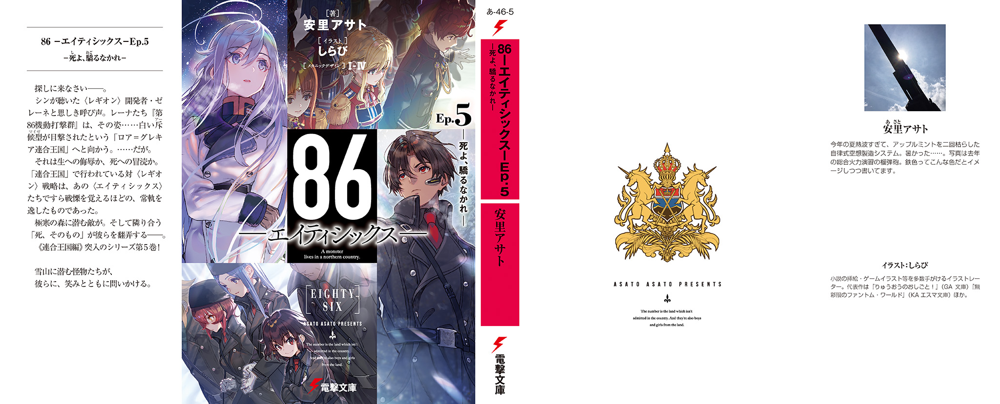
86─エイティシックス─Ep.5
─死よ、驕るなかれ─
安里アサト
電撃文庫
2018年10月10日 発行
©Asato Asato 2018
本電子書籍は下記にもとづいて制作しました
電撃文庫『86─エイティシックス─Ep.5 ─死よ、驕るなかれ─』
2018年10月10日 初版発行
発行者 郡司 聡
発行 株式会社ＫＡＤＯＫＡＷＡ
カスタマーサポート（アスキー・メディアワークス ブランド）
［WEB］https://www.kadokawa.co.jp/
（「お問い合わせ」へお進みください）
本作品の全部または一部を無断で複製、転載、配信、送信すること、あるいはウェブサイトへの転載等を禁止します。また、本作品の内容を無断で改変、改ざん等を行うことも禁止します。
本作品購入時にご承諾いただいた規約により、有償・無償にかかわらず本作品を第三者に譲渡することはできません。
本作品の内容は、底本発行時の取材・執筆内容にもとづきます。